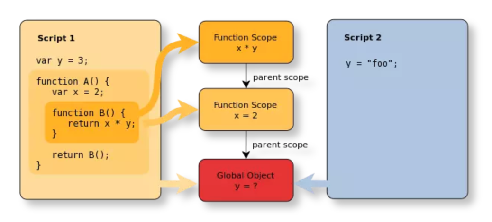

<!DOCTYPE html>
<html lang="zh-CN">
<head>
  <meta charset="UTF-8">
<meta name="viewport" content="width=device-width, initial-scale=1, maximum-scale=2">
<meta name="theme-color" content="#222">
<meta name="generator" content="Hexo 6.2.0">
  <link rel="apple-touch-icon" sizes="180x180" href="/images/apple-touch-icon-next.png">
  <link rel="icon" type="image/png" sizes="32x32" href="/images/favicon-32x32-next.png">
  <link rel="icon" type="image/png" sizes="16x16" href="/images/favicon-16x16-next.png">
  <link rel="mask-icon" href="/images/logo.svg" color="#222">

<link rel="stylesheet" href="/css/main.css">

<link rel="stylesheet" href="https://fonts.font.im/css?family=HarmonyOS_Regular:300,300italic,400,400italic,700,700italic|JetBrains Mono:300,300italic,400,400italic,700,700italic&display=swap&subset=latin,latin-ext">
<link rel="stylesheet" href="/lib/font-awesome/css/all.min.css">
  <link rel="stylesheet" href="//cdn.jsdelivr.net/gh/fancyapps/fancybox@3/dist/jquery.fancybox.min.css">
  <link rel="stylesheet" href="/lib/pace/pace-theme-minimal.min.css">
  <script src="/lib/pace/pace.min.js"></script>


<script id="hexo-configurations">
    var NexT = window.NexT || {};
    var CONFIG = {"hostname":"github.com","root":"/","scheme":"Gemini","version":"7.8.0","exturl":false,"sidebar":{"position":"left","display":"post","padding":18,"offset":12,"onmobile":false},"copycode":{"enable":true,"show_result":true,"style":null},"back2top":{"enable":true,"sidebar":false,"scrollpercent":true},"bookmark":{"enable":false,"color":"#222","save":"auto"},"fancybox":true,"mediumzoom":false,"lazyload":true,"pangu":false,"comments":{"style":"tabs","active":null,"storage":true,"lazyload":false,"nav":null},"algolia":{"hits":{"per_page":10},"labels":{"input_placeholder":"Search for Posts","hits_empty":"We didn't find any results for the search: ${query}","hits_stats":"${hits} results found in ${time} ms"}},"localsearch":{"enable":true,"trigger":"auto","top_n_per_article":1,"unescape":false,"preload":false},"motion":{"enable":true,"async":false,"transition":{"post_block":"fadeIn","post_header":"slideDownIn","post_body":"slideDownIn","coll_header":"slideLeftIn","sidebar":"slideUpIn"}},"path":"search.xml"};
  </script>

  <meta name="description" content="ECMAScript 和 JavaScript 的关系 1996 年 11 月，JavaScript 的创造者 Netscape 公司，决定将 JavaScript 提交给标准化组织 ECMA，希望这种语言能够成为国际标准。次年，ECMA 发布 262 号标准文件（ECMA-262）的第一版，规定了浏览器脚本语言的标准，并将这种语言称为 ECMAScript，这个版本就是 1.0 版。 该标准从一">
<meta property="og:type" content="article">
<meta property="og:title" content="es6~es11 学习">
<meta property="og:url" content="https://github.com/xuwanghui/blog.git/2024/11/27/es6/index.html">
<meta property="og:site_name" content="老许的欢乐世界">
<meta property="og:description" content="ECMAScript 和 JavaScript 的关系 1996 年 11 月，JavaScript 的创造者 Netscape 公司，决定将 JavaScript 提交给标准化组织 ECMA，希望这种语言能够成为国际标准。次年，ECMA 发布 262 号标准文件（ECMA-262）的第一版，规定了浏览器脚本语言的标准，并将这种语言称为 ECMAScript，这个版本就是 1.0 版。 该标准从一">
<meta property="og:locale" content="zh_CN">
<meta property="og:image" content="https://img0.baidu.com/it/u=196054532,118543837&amp;fm=253&amp;fmt=auto&amp;app=138&amp;f=JPEG?w=788&amp;h=443">
<meta property="og:image" content="https://github.com/xuwanghui/blog.git/2024/11/27/es6/image-20230410144630143.png">
<meta property="og:image" content="https://github.com/xuwanghui/blog.git/2024/11/27/es6/ES6.png">
<meta property="og:image" content="https://github.com/xuwanghui/blog.git/2024/11/27/es6/es7-es11.png">
<meta property="og:image" content="https://github.com/xuwanghui/blog.git/2024/11/27/es6/image-20230410153942044.png">
<meta property="og:image" content="https://github.com/xuwanghui/blog.git/2024/11/27/es6/image-20230410154611569.png">
<meta property="og:image" content="http://es.xiecheng.live/assets/img/destructuring-complex@2x.9f75fc55.png">
<meta property="og:image" content="https://github.com/xuwanghui/blog.git/2024/11/27/es6/image-20230411085214594.png">
<meta property="og:image" content="https://github.com/xuwanghui/blog.git/2024/11/27/es6/image-20230411085323950.png">
<meta property="og:image" content="https://github.com/xuwanghui/blog.git/2024/11/27/es6/image-20230411091146674.png">
<meta property="og:image" content="https://github.com/xuwanghui/blog.git/2024/11/27/es6/image-20230411091223524.png">
<meta property="article:published_time" content="2024-11-27T09:08:01.410Z">
<meta property="article:modified_time" content="2023-06-16T07:02:44.306Z">
<meta property="article:author" content="老许">
<meta property="article:tag" content="es6">
<meta name="twitter:card" content="summary">
<meta name="twitter:image" content="https://img0.baidu.com/it/u=196054532,118543837&amp;fm=253&amp;fmt=auto&amp;app=138&amp;f=JPEG?w=788&amp;h=443">

<link rel="canonical" href="https://github.com/xuwanghui/blog.git/2024/11/27/es6/">


<script id="page-configurations">
  // https://hexo.io/docs/variables.html
  CONFIG.page = {
    sidebar: "",
    isHome : false,
    isPost : true,
    lang   : 'zh-CN'
  };
</script>
<link rel="preconnect" href="https://s1.hdslb.com/" />
<link rel="stylesheet" href="//s1.hdslb.com/bfs/static/jinkela/long/font/regular.css" media="all" onload="this.media='all'" />
<link rel="stylesheet" href="//s1.hdslb.com/bfs/static/jinkela/long/font/medium.css" media="all" onload="this.media='all'" />

  <title>es6~es11 学习 | 老许的欢乐世界</title>
  


  <noscript>
  <style>
  .use-motion .brand,
  .use-motion .menu-item,
  .sidebar-inner,
  .use-motion .post-block,
  .use-motion .pagination,
  .use-motion .comments,
  .use-motion .post-header,
  .use-motion .post-body,
  .use-motion .collection-header { opacity: initial; }

  .use-motion .site-title,
  .use-motion .site-subtitle {
    opacity: initial;
    top: initial;
  }

  .use-motion .logo-line-before i { left: initial; }
  .use-motion .logo-line-after i { right: initial; }
  </style>
</noscript>

<link rel="alternate" href="/atom.xml" title="老许的欢乐世界" type="application/atom+xml">
</head>

<body itemscope itemtype="http://schema.org/WebPage">
  <div class="container use-motion">
    <div class="headband"></div>
    <a href="https://github.com/xuwanghui" class="github-corner" aria-label="View source on GitHub"><svg width="80" height="80" viewBox="0 0 250 250" style="fill:#151513; color:#fff; position: absolute; top: 0; border: 0; right: 0;" aria-hidden="true"><path d="M0,0 L115,115 L130,115 L142,142 L250,250 L250,0 Z"></path><path d="M128.3,109.0 C113.8,99.7 119.0,89.6 119.0,89.6 C122.0,82.7 120.5,78.6 120.5,78.6 C119.2,72.0 123.4,76.3 123.4,76.3 C127.3,80.9 125.5,87.3 125.5,87.3 C122.9,97.6 130.6,101.9 134.4,103.2" fill="currentColor" style="transform-origin: 130px 106px;" class="octo-arm"></path><path d="M115.0,115.0 C114.9,115.1 118.7,116.5 119.8,115.4 L133.7,101.6 C136.9,99.2 139.9,98.4 142.2,98.6 C133.8,88.0 127.5,74.4 143.8,58.0 C148.5,53.4 154.0,51.2 159.7,51.0 C160.3,49.4 163.2,43.6 171.4,40.1 C171.4,40.1 176.1,42.5 178.8,56.2 C183.1,58.6 187.2,61.8 190.9,65.4 C194.5,69.0 197.7,73.2 200.1,77.6 C213.8,80.2 216.3,84.9 216.3,84.9 C212.7,93.1 206.9,96.0 205.4,96.6 C205.1,102.4 203.0,107.8 198.3,112.5 C181.9,128.9 168.3,122.5 157.7,114.1 C157.9,116.9 156.7,120.9 152.7,124.9 L141.0,136.5 C139.8,137.7 141.6,141.9 141.8,141.8 Z" fill="currentColor" class="octo-body"></path></svg></a><style>.github-corner:hover .octo-arm{animation:octocat-wave 560ms ease-in-out}@keyframes octocat-wave{0%,100%{transform:rotate(0)}20%,60%{transform:rotate(-25deg)}40%,80%{transform:rotate(10deg)}}@media (max-width:500px){.github-corner:hover .octo-arm{animation:none}.github-corner .octo-arm{animation:octocat-wave 560ms ease-in-out}}</style>

    <header class="header" itemscope itemtype="http://schema.org/WPHeader">
      <div class="header-inner"><div class="site-brand-container">
  <div class="site-nav-toggle">
    <div class="toggle" aria-label="切换导航栏">
      <span class="toggle-line toggle-line-first"></span>
      <span class="toggle-line toggle-line-middle"></span>
      <span class="toggle-line toggle-line-last"></span>
    </div>
  </div>

  <div class="site-meta">

    <a href="/" class="brand" rel="start">
      <span class="logo-line-before"><i></i></span>
      <h1 class="site-title">老许的欢乐世界</h1>
      <span class="logo-line-after"><i></i></span>
    </a>
      <p class="site-subtitle" itemprop="description">愿与上善 唯望君安</p>
  </div>

  <div class="site-nav-right">
    <div class="toggle popup-trigger">
        <i class="fa fa-search fa-fw fa-lg"></i>
    </div>
  </div>
</div>


<nav class="site-nav">
  <ul id="menu" class="main-menu menu">
        <li class="menu-item menu-item-home">

    <a href="/" rel="section"><i class="fa fa-home fa-fw"></i>首页</a>

  </li>
        <li class="menu-item menu-item-about">

    <a href="/about/" rel="section"><i class="fa fa-user fa-fw"></i>关于</a>

  </li>
        <li class="menu-item menu-item-tags">

    <a href="/tags/" rel="section"><i class="fa fa-tags fa-fw"></i>标签<span class="badge">12</span></a>

  </li>
        <li class="menu-item menu-item-categories">

    <a href="/categories/" rel="section"><i class="fa fa-th fa-fw"></i>分类<span class="badge">13</span></a>

  </li>
        <li class="menu-item menu-item-resources">

    <a href="/resources/" rel="section"><i class="fa fa-download fa-fw"></i>资源</a>

  </li>
        <li class="menu-item menu-item-archives">

    <a href="/archives/" rel="section"><i class="fa fa-archive fa-fw"></i>归档<span class="badge">15</span></a>

  </li>
        <li class="menu-item menu-item-comments">

    <a href="/comments/" rel="section"><i class="fa fa-comments fa-fw"></i>留言板</a>

  </li>
      <li class="menu-item menu-item-search">
        <a role="button" class="popup-trigger"><i class="fa fa-search fa-fw"></i>搜索
        </a>
      </li>
  </ul>
</nav>


  <div class="search-pop-overlay">
    <div class="popup search-popup">
        <div class="search-header">
  <span class="search-icon">
    <i class="fa fa-search"></i>
  </span>
  <div class="search-input-container">
    <input autocomplete="off" autocapitalize="off"
           placeholder="搜索..." spellcheck="false"
           type="search" class="search-input">
  </div>
  <span class="popup-btn-close">
    <i class="fa fa-times-circle"></i>
  </span>
</div>
<div id="search-result">
  <div id="no-result">
    <i class="fa fa-spinner fa-pulse fa-5x fa-fw"></i>
  </div>
</div>

    </div>
  </div>

</div>
    </header>

    <!--看板娘-->
    <script src="https://cdn.jsdelivr.net/npm/jquery/dist/jquery.min.js"></script>
    <link rel="stylesheet" href="https://cdn.jsdelivr.net/npm/font-awesome/css/font-awesome.min.css"/>
    <script src="/live2d-widget/autoload.js"></script>
    <!--<script src="https://cdn.jsdelivr.net/gh/xuwanghui/live2d-widget/autoload.js"></script>-->

    
  <div class="back-to-top">
    <i class="fa fa-arrow-up"></i>
    <span>0%</span>
  </div>
  <div class="reading-progress-bar"></div>


    <main class="main">
      <div class="main-inner">
        <div class="content-wrap">
          

          <div class="content post posts-expand">
            

    
  
  
  <article itemscope itemtype="http://schema.org/Article" class="post-block" lang="zh-CN">
    <link itemprop="mainEntityOfPage" href="https://github.com/xuwanghui/blog.git/2024/11/27/es6/">

    <span hidden itemprop="author" itemscope itemtype="http://schema.org/Person">
      <meta itemprop="image" content="/images/avatar.gif">
      <meta itemprop="name" content="老许">
      <meta itemprop="description" content="当学习成为了习惯<br/>知识也就变成了常识">
    </span>

    <span hidden itemprop="publisher" itemscope itemtype="http://schema.org/Organization">
      <meta itemprop="name" content="老许的欢乐世界">
    </span>
      <header class="post-header">
        <h1 class="post-title" itemprop="name headline">
          es6~es11 学习
        </h1>

        <div class="post-meta">
        
            <span class="post-meta-item">
              <span class="post-meta-item-icon">
                <i class="far fa-calendar"></i>
              </span>
              <span class="post-meta-item-text">发表于</span>

              <time title="创建时间：2024-11-27 17:08:01" itemprop="dateCreated datePublished" datetime="2024-11-27T17:08:01+08:00">2024-11-27</time>
            </span>
              <span class="post-meta-item">
                <span class="post-meta-item-icon">
                  <i class="far fa-calendar-check"></i>
                </span>
                <span class="post-meta-item-text">更新于</span>
                <time title="修改时间：2023-06-16 15:02:44" itemprop="dateModified" datetime="2023-06-16T15:02:44+08:00">2023-06-16</time>
              </span>
            <span class="post-meta-item">
              <span class="post-meta-item-icon">
                <i class="far fa-folder"></i>
              </span>
              <span class="post-meta-item-text">分类于</span>
                <span itemprop="about" itemscope itemtype="http://schema.org/Thing">
                  <a href="/categories/es6/" itemprop="url" rel="index"><span itemprop="name">es6</span></a>
                </span>
            </span>

          
            <span class="post-meta-item" title="阅读次数" id="busuanzi_container_page_pv" style="display: none;">
              <span class="post-meta-item-icon">
                <i class="fa fa-eye"></i>
              </span>
              <span class="post-meta-item-text">阅读次数：</span>
              <span id="busuanzi_value_page_pv"></span>
            </span>
  
  <span class="post-meta-item">
    
      <span class="post-meta-item-icon">
        <i class="far fa-comment"></i>
      </span>
      <span class="post-meta-item-text">Valine：</span>
    
    <a title="valine" href="/2024/11/27/es6/#valine-comments" itemprop="discussionUrl">
      <span class="post-comments-count valine-comment-count" data-xid="/2024/11/27/es6/" itemprop="commentCount"></span>
    </a>
  </span>
  
  
            <span class="post-meta-item" title="本文字数">
              <span class="post-meta-item-icon">
                <i class="far fa-file-word"></i>
              </span>
                <span class="post-meta-item-text">本文字数：</span>
              <span>114k</span>
            </span>
            <span class="post-meta-item" title="阅读时长">
              <span class="post-meta-item-icon">
                <i class="far fa-clock"></i>
              </span>
                <span class="post-meta-item-text">阅读时长 &asymp;</span>
              <span>1:44</span>
            </span>

        </div>
      </header>

    
    
    
    <div class="post-body" itemprop="articleBody">

      
        <h3 id="ECMAScript-和-JavaScript-的关系">ECMAScript 和 JavaScript 的关系</h3>
<p>1996 年 11 月，JavaScript 的创造者 Netscape 公司，决定将 JavaScript 提交给标准化组织 ECMA，希望这种语言能够成为国际标准。次年，ECMA 发布 262 号标准文件（ECMA-262）的第一版，规定了浏览器脚本语言的标准，并将这种语言称为 ECMAScript，这个版本就是 1.0 版。</p>
<p>该标准从一开始就是针对 JavaScript 语言制定的，但是之所以不叫 JavaScript，有两个原因。一是商标，Java 是 Sun 公司的商标，根据授权协议，只有 Netscape 公司可以合法地使用 JavaScript 这个名字，且 JavaScript 本身也已经被 Netscape 公司注册为商标。二是想体现这门语言的制定者是 ECMA，不是 Netscape，这样有利于保证这门语言的开放性和中立性。</p>
<p>因此，ECMAScript 和 JavaScript 的关系是，前者是后者的规格，后者是前者的一种实现（另外的 ECMAScript 方言还有 JScript 和 ActionScript）。日常场合，这两个词是可以互换的。</p>
<span id="more"></span>
<h3 id="ES6-与-ECMAScript-2015-的关系">ES6 与 ECMAScript 2015 的关系</h3>
<p>ECMAScript 2015（简称 ES2015）这个词，也是经常可以看到的。它与 ES6 是什么关系呢？</p>
<p>2011 年，ECMAScript 5.1 版发布后，就开始制定 6.0 版了。因此，ES6 这个词的原意，就是指 JavaScript 语言的下一个版本。</p>
<p>但是，因为这个版本引入的语法功能太多，而且制定过程当中，还有很多组织和个人不断提交新功能。事情很快就变得清楚了，不可能在一个版本里面包括所有将要引入的功能。常规的做法是先发布 6.0 版，过一段时间再发 6.1 版，然后是 6.2 版、6.3 版等等。</p>
<p>但是，标准的制定者不想这样做。他们想让标准的升级成为常规流程：任何人在任何时候，都可以向标准委员会提交新语法的提案，然后标准委员会每个月开一次会，评估这些提案是否可以接受，需要哪些改进。如果经过多次会议以后，一个提案足够成熟了，就可以正式进入标准了。这就是说，标准的版本升级成为了一个不断滚动的流程，每个月都会有变动。</p>
<p>标准委员会最终决定，标准在每年的 6 月份正式发布一次，作为当年的正式版本。接下来的时间，就在这个版本的基础上做改动，直到下一年的 6 月份，草案就自然变成了新一年的版本。这样一来，就不需要以前的版本号了，只要用年份标记就可以了。</p>
<p>ES6 的第一个版本，就这样在 2015 年 6 月发布了，正式名称就是《ECMAScript 2015 标准》（简称 ES2015）。2016 年 6 月，小幅修订的《ECMAScript 2016 标准》（简称 ES2016）如期发布，这个版本可以看作是 ES6.1 版，因为两者的差异非常小（只新增了数组实例的<code>includes</code>方法和指数运算符），基本上是同一个标准。根据计划，2017 年 6 月发布 ES2017 标准。</p>
<p>因此，ES6 既是一个历史名词，也是一个泛指，含义是 5.1 版以后的 JavaScript 的下一代标准，涵盖了 ES2015、ES2016、ES2017 等等，而 ES2015 则是正式名称，特指该年发布的正式版本的语言标准。本书中提到 ES6 的地方，一般是指 ES2015 标准，但有时也是泛指“下一代 JavaScript 语言”。</p>
<p></p>
<blockquote>
<p>值得一提的是：</p>
<ul>
<li>ES2015较前面的版本有较大的更新，但总体上还是向后兼容的</li>
<li>当时，微软开发的类似的脚本语言基本完成，所以两者基本处于并行发展的，所以，如今出现了微软系列的浏览器兼容性较差的局面，因为起初并不是依据ECMAScript标准进行开发的</li>
</ul>
</blockquote>
<h3 id="环境安装">环境安装</h3>
<p>为了大家可以把更多的精力放在ES新语法的学习上，而不是纠结于环境配置，已经为大家准备好了开发环境，利用脚手架只需要一步就可以完成安装，但是需要依赖 Node 环境，请大家首先安装 Node。具体环境构建请参照文章底部 ~</p>
<h4 id="Node-安装">Node 安装</h4>
<blockquote>
<p>安装包下载地址：<a target="_blank" rel="noopener" href="https://nodejs.org/zh-cn/">https://nodejs.org/zh-cn/</a></p>
<p>下载长期支持版本（LTS）</p>
</blockquote>
<p>安装完成，在终端输入：</p>
<figure class="highlight plaintext"><table><tr><td class="gutter"><pre><span class="line">1</span><br></pre></td><td class="code"><pre><span class="line">node -v</span><br></pre></td></tr></table></figure>
<p>出现版本信息表示安装成功</p>
<h4 id="NRM">NRM</h4>
<p>NRM(Npm Registry Manager )是npm的镜像源管理工具，有时候国外资源太慢，可以使用就可以快速地在 npm 源间切换。</p>
<blockquote>
<p>NRM 不是必装工具，如果网络环境比较好可以不安装。</p>
</blockquote>
<h5 id="安装-2">安装</h5>
<p>在命令行执行命令，全局安装nrm</p>
<p>Windows电脑安装命令：</p>
<figure class="highlight sh"><table><tr><td class="gutter"><pre><span class="line">1</span><br></pre></td><td class="code"><pre><span class="line">npm install -g nrm</span><br></pre></td></tr></table></figure>
<p>Mac电脑安装命令：</p>
<figure class="highlight sh"><table><tr><td class="gutter"><pre><span class="line">1</span><br></pre></td><td class="code"><pre><span class="line">sudo npm install -g nrm</span><br></pre></td></tr></table></figure>
<h5 id="使用">使用</h5>
<p>执行命令查看可选的源：</p>
<figure class="highlight sh"><table><tr><td class="gutter"><pre><span class="line">1</span><br></pre></td><td class="code"><pre><span class="line">nrm <span class="built_in">ls</span></span><br></pre></td></tr></table></figure>
<p></p>
<p>其中，带*的是当前使用的源，上面的输出表明当前源是官方源。</p>
<h5 id="切换源">切换源</h5>
<figure class="highlight plaintext"><table><tr><td class="gutter"><pre><span class="line">1</span><br></pre></td><td class="code"><pre><span class="line">nrm use taobao</span><br></pre></td></tr></table></figure>
<h5 id="测速源">测速源</h5>
<figure class="highlight plaintext"><table><tr><td class="gutter"><pre><span class="line">1</span><br></pre></td><td class="code"><pre><span class="line">nrm test npm</span><br></pre></td></tr></table></figure>
<h5 id="增加源">增加源</h5>
<figure class="highlight plaintext"><table><tr><td class="gutter"><pre><span class="line">1</span><br></pre></td><td class="code"><pre><span class="line">nrm add laoxu http://192.168.1.100:6666</span><br></pre></td></tr></table></figure>
<h5 id="删除源">删除源</h5>
<figure class="highlight plaintext"><table><tr><td class="gutter"><pre><span class="line">1</span><br></pre></td><td class="code"><pre><span class="line">nrm del laoxu</span><br></pre></td></tr></table></figure>
<h5 id="环境初始化">环境初始化</h5>
<p>需要借助webpack搭建脚手架，文章底部再更新 ~</p>
<h4 id="几个小case">几个小case</h4>
<p>我们通过几个案例，来对比ES6+语法新特性的魅力所在。</p>
<h5 id="案例1：可选链">案例1：可选链</h5>
<p>读取一个被连接对象的深层次的属性的值</p>
<figure class="highlight js"><table><tr><td class="gutter"><pre><span class="line">1</span><br><span class="line">2</span><br><span class="line">3</span><br><span class="line">4</span><br><span class="line">5</span><br><span class="line">6</span><br><span class="line">7</span><br><span class="line">8</span><br></pre></td><td class="code"><pre><span class="line"><span class="keyword">const</span> user = &#123;</span><br><span class="line">    <span class="attr">address</span>: &#123;</span><br><span class="line">        <span class="attr">street</span>: <span class="string">&#x27;xx街道&#x27;</span>,</span><br><span class="line">        <span class="title function_">getNum</span>(<span class="params"></span>) &#123;</span><br><span class="line">            <span class="keyword">return</span> <span class="string">&#x27;80号&#x27;</span></span><br><span class="line">        &#125;</span><br><span class="line">    &#125;</span><br><span class="line">&#125;</span><br></pre></td></tr></table></figure>
<p>ES5语法：</p>
<figure class="highlight js"><table><tr><td class="gutter"><pre><span class="line">1</span><br><span class="line">2</span><br></pre></td><td class="code"><pre><span class="line"><span class="keyword">const</span> street = user &amp;&amp; user.<span class="property">address</span> &amp;&amp; user.<span class="property">address</span>.<span class="property">street</span></span><br><span class="line"><span class="keyword">const</span> num = user &amp;&amp; user.<span class="property">address</span> &amp;&amp; user.<span class="property">address</span>.<span class="property">getNum</span> &amp;&amp; user.<span class="property">address</span>.<span class="title function_">getNum</span>()</span><br></pre></td></tr></table></figure>
<p>ES6+语法：</p>
<figure class="highlight js"><table><tr><td class="gutter"><pre><span class="line">1</span><br><span class="line">2</span><br></pre></td><td class="code"><pre><span class="line"><span class="keyword">const</span> street = user?.<span class="property">address</span>?.<span class="property">street</span></span><br><span class="line"><span class="keyword">const</span> num = user?.<span class="property">address</span>?.<span class="property">getNum</span>?.()</span><br></pre></td></tr></table></figure>
<h5 id="案例2：消除魔术字符串">案例2：消除魔术字符串</h5>
<p>魔术字符串指的是在代码之中多次出现、与代码形成强耦合的某一个具体的字符串或者数值。风格良好的代码，应该尽量消除魔术字符串，改由含义清晰的变量代替。</p>
<p>ES5语法：</p>
<figure class="highlight js"><table><tr><td class="gutter"><pre><span class="line">1</span><br><span class="line">2</span><br><span class="line">3</span><br><span class="line">4</span><br><span class="line">5</span><br><span class="line">6</span><br><span class="line">7</span><br><span class="line">8</span><br><span class="line">9</span><br><span class="line">10</span><br><span class="line">11</span><br><span class="line">12</span><br><span class="line">13</span><br></pre></td><td class="code"><pre><span class="line"><span class="keyword">function</span> <span class="title function_">getArea</span>(<span class="params">shape</span>) &#123;</span><br><span class="line">    <span class="keyword">let</span> area = <span class="number">0</span></span><br><span class="line">    <span class="keyword">switch</span> (shape) &#123;</span><br><span class="line">        <span class="keyword">case</span> <span class="string">&#x27;Triangle&#x27;</span>:</span><br><span class="line">            area = <span class="number">1</span></span><br><span class="line">            <span class="keyword">break</span></span><br><span class="line">        <span class="keyword">case</span> <span class="string">&#x27;Circle&#x27;</span>:</span><br><span class="line">            area = <span class="number">2</span></span><br><span class="line">            <span class="keyword">break</span></span><br><span class="line">    &#125;</span><br><span class="line">    <span class="keyword">return</span> area</span><br><span class="line">&#125;</span><br><span class="line"><span class="title function_">getArea</span>(<span class="string">&#x27;Triangle&#x27;</span>)</span><br></pre></td></tr></table></figure>
<p>ES6+语法：</p>
<figure class="highlight js"><table><tr><td class="gutter"><pre><span class="line">1</span><br><span class="line">2</span><br><span class="line">3</span><br><span class="line">4</span><br><span class="line">5</span><br><span class="line">6</span><br><span class="line">7</span><br><span class="line">8</span><br><span class="line">9</span><br><span class="line">10</span><br><span class="line">11</span><br><span class="line">12</span><br><span class="line">13</span><br><span class="line">14</span><br><span class="line">15</span><br><span class="line">16</span><br><span class="line">17</span><br></pre></td><td class="code"><pre><span class="line"><span class="keyword">const</span> shapeType = &#123;</span><br><span class="line">    <span class="attr">triangle</span>: <span class="title class_">Symbol</span>(),</span><br><span class="line">    <span class="attr">circle</span>: <span class="title class_">Symbol</span>()</span><br><span class="line">&#125;</span><br><span class="line"><span class="keyword">function</span> <span class="title function_">getArea</span>(<span class="params">shape</span>) &#123;</span><br><span class="line">    <span class="keyword">let</span> area = <span class="number">0</span></span><br><span class="line">    <span class="keyword">switch</span> (shape) &#123;</span><br><span class="line">        <span class="keyword">case</span> shapeType.<span class="property">triangle</span>:</span><br><span class="line">            area = <span class="number">1</span></span><br><span class="line">            <span class="keyword">break</span></span><br><span class="line">        <span class="keyword">case</span> shapeType.<span class="property">circle</span>:</span><br><span class="line">            area = <span class="number">2</span></span><br><span class="line">            <span class="keyword">break</span></span><br><span class="line">    &#125;</span><br><span class="line">    <span class="keyword">return</span> area</span><br><span class="line">&#125;</span><br><span class="line"><span class="title function_">getArea</span>(shapeType.<span class="property">triangle</span>)</span><br></pre></td></tr></table></figure>
<h5 id="案例3：将类数组转化为数组">案例3：将类数组转化为数组</h5>
<figure class="highlight js"><table><tr><td class="gutter"><pre><span class="line">1</span><br></pre></td><td class="code"><pre><span class="line"><span class="keyword">const</span> arrayLike = <span class="variable language_">document</span>.<span class="title function_">querySelectorAll</span>(<span class="string">&#x27;.item&#x27;</span>)</span><br></pre></td></tr></table></figure>
<p>ES5语法</p>
<figure class="highlight js"><table><tr><td class="gutter"><pre><span class="line">1</span><br></pre></td><td class="code"><pre><span class="line"><span class="title class_">Array</span>.<span class="property"><span class="keyword">prototype</span></span>.<span class="property">slice</span>.<span class="title function_">call</span>(arrayLike)</span><br></pre></td></tr></table></figure>
<p>ES6+语法</p>
<figure class="highlight js"><table><tr><td class="gutter"><pre><span class="line">1</span><br></pre></td><td class="code"><pre><span class="line"><span class="title class_">Array</span>.<span class="title function_">from</span>(arrayLike)</span><br></pre></td></tr></table></figure>
<h5 id="案例4：优雅的异步操作与解构赋值">案例4：优雅的异步操作与解构赋值</h5>
<p>ES5语法</p>
<figure class="highlight js"><table><tr><td class="gutter"><pre><span class="line">1</span><br><span class="line">2</span><br><span class="line">3</span><br><span class="line">4</span><br><span class="line">5</span><br><span class="line">6</span><br></pre></td><td class="code"><pre><span class="line"><span class="keyword">function</span> <span class="title function_">getData</span> (url) &#123;</span><br><span class="line">    <span class="title function_">ajax</span>(url, <span class="keyword">function</span> (<span class="params">res</span>) &#123;</span><br><span class="line">        <span class="keyword">var</span> data = res.<span class="property">data</span></span><br><span class="line">        <span class="variable language_">this</span>.<span class="property">list</span> = data</span><br><span class="line">    &#125;)</span><br><span class="line">&#125;</span><br></pre></td></tr></table></figure>
<p>ES6+语法</p>
<figure class="highlight js"><table><tr><td class="gutter"><pre><span class="line">1</span><br><span class="line">2</span><br><span class="line">3</span><br><span class="line">4</span><br></pre></td><td class="code"><pre><span class="line"><span class="keyword">async</span> <span class="keyword">function</span> <span class="title function_">getData</span> (url) &#123;</span><br><span class="line">    <span class="keyword">const</span> &#123; data &#125; = <span class="keyword">await</span> axios.<span class="title function_">get</span>(url)</span><br><span class="line">    <span class="variable language_">this</span>.<span class="property">list</span> = data</span><br><span class="line">&#125;</span><br></pre></td></tr></table></figure>
<h3 id="ES6词法汇总">ES6词法汇总</h3>
<p></p>
<h3 id="ES7-ES11汇总">ES7-ES11汇总</h3>
<p></p>
<h3 id="ES6（ES2015）">ES6（ES2015）</h3>
<h4 id="新的声明方式">新的声明方式</h4>
<h5 id="作用域-2">作用域</h5>
<h6 id="什么是作用域？">什么是作用域？</h6>
<p>几乎所有编程语言就是在变量中存储值，并且能读取和修改此值。事实上，在变量中存储值和取出值的能力，给程序赋予了状态。 如果没有这样的概念，一个程序虽然可以执行一些任务，但是它们将会受到极大的限制而且不会非常有趣。 但是这些变量该存储在哪，又给如何读取？为了完成这个目标，需要制定一些规则，这个规则就是：作用域。</p>
<p>常见的作用域主要分为几个类型：全局作用域、函数作用域、块状作用域、动态作用域。</p>
<table>
<thead>
<tr>
<th style="text-align:center">对象</th>
<th style="text-align:center">类型</th>
</tr>
</thead>
<tbody>
<tr>
<td style="text-align:center">global/window</td>
<td style="text-align:center">全局作用域</td>
</tr>
<tr>
<td style="text-align:center">function</td>
<td style="text-align:center">函数作用域（局部作用域）</td>
</tr>
<tr>
<td style="text-align:center">{}</td>
<td style="text-align:center">块状作用域</td>
</tr>
<tr>
<td style="text-align:center">this</td>
<td style="text-align:center">动态作用域</td>
</tr>
</tbody>
</table>
<blockquote>
<p>如果一个 变量 或者其他表达式不在 “当前的作用域”，那么JavaScript机制会继续沿着作用域链上查找直到全局作用域（global或浏览器中的window）如果找不到将不可被使用。 作用域也可以根据代码层次分层，以便子作用域可以访问父作用域，通常是指沿着链式的作用域链查找，而不能从父作用域引用子作用域中的变量和引用</p>
</blockquote>
<h6 id="全局作用域">全局作用域</h6>
<p>变量在函数或者代码块 <code>&#123;&#125;</code> 外定义，即为全局作用域。不过，在函数或者代码块 <code>&#123;&#125;</code> 内未定义的变量也是拥有全局作用域的（不推荐）。</p>
<figure class="highlight js"><table><tr><td class="gutter"><pre><span class="line">1</span><br><span class="line">2</span><br><span class="line">3</span><br><span class="line">4</span><br><span class="line">5</span><br><span class="line">6</span><br></pre></td><td class="code"><pre><span class="line"><span class="keyword">var</span> course = <span class="string">&quot;es&quot;</span></span><br><span class="line"></span><br><span class="line"><span class="comment">// 此处可调用 course 变量</span></span><br><span class="line"><span class="keyword">function</span> <span class="title function_">myFunction</span>(<span class="params"></span>) &#123;</span><br><span class="line">    <span class="comment">// 函数内可调用 course 变量</span></span><br><span class="line">&#125;</span><br></pre></td></tr></table></figure>
<p>上述代码中变量 <code>course</code> 就是在函数外定义的，它是拥有全局作用域的。这个变量可以在任意地方被读取或者修改，当然如果变量在函数内没有声明（没有使用 var 关键字），该变量依然为全局变量。</p>
<figure class="highlight js"><table><tr><td class="gutter"><pre><span class="line">1</span><br><span class="line">2</span><br><span class="line">3</span><br><span class="line">4</span><br><span class="line">5</span><br><span class="line">6</span><br></pre></td><td class="code"><pre><span class="line"><span class="comment">// 此处可调用 course 变量</span></span><br><span class="line"></span><br><span class="line"><span class="keyword">function</span> <span class="title function_">myFunction</span>(<span class="params"></span>) &#123;</span><br><span class="line">    course = <span class="string">&quot;es&quot;</span></span><br><span class="line">    <span class="comment">// 此处可调用 course 变量</span></span><br><span class="line">&#125;</span><br></pre></td></tr></table></figure>
<p>以上实例中 course 在函数内，但是拥有全局作用域，它将作为 global 或者 window 的属性存在。</p>
<blockquote>
<p>注意：在函数内部或代码块中没有定义的变量实际上是作为 window/global 的属性存在，而不是全局变量。换句话说没有使用 var 定义的变量虽然拥有全局作用域，但是它是可以被 delete 的，而全局变量不可以。<br>
参考：<a target="_blank" rel="noopener" href="https://www.runoob.com/js/js-scope.html">https://www.runoob.com/js/js-scope.html</a></p>
</blockquote>
<h6 id="函数作用域">函数作用域</h6>
<p>在函数内部定义的变量，就是局部作用域。函数作用域内，对外是封闭的，从外层的作用域无法直接访问函数内部的作用域！</p>
<figure class="highlight js"><table><tr><td class="gutter"><pre><span class="line">1</span><br><span class="line">2</span><br><span class="line">3</span><br><span class="line">4</span><br><span class="line">5</span><br></pre></td><td class="code"><pre><span class="line"><span class="keyword">function</span> <span class="title function_">bar</span>(<span class="params"></span>) &#123;</span><br><span class="line">    <span class="keyword">var</span> testValue = <span class="string">&#x27;inner&#x27;</span></span><br><span class="line">&#125;</span><br><span class="line"></span><br><span class="line"><span class="variable language_">console</span>.<span class="title function_">log</span>(testValue) <span class="comment">// 报错：ReferenceError: testValue is not defined</span></span><br></pre></td></tr></table></figure>
<p>如果想读取函数内的变量，必须借助 return 或者闭包。</p>
<figure class="highlight js"><table><tr><td class="gutter"><pre><span class="line">1</span><br><span class="line">2</span><br><span class="line">3</span><br><span class="line">4</span><br><span class="line">5</span><br><span class="line">6</span><br><span class="line">7</span><br></pre></td><td class="code"><pre><span class="line"><span class="keyword">function</span> <span class="title function_">bar</span>(<span class="params">value</span>) &#123;</span><br><span class="line">    <span class="keyword">var</span> testValue = <span class="string">&#x27;inner&#x27;</span></span><br><span class="line"></span><br><span class="line">    <span class="keyword">return</span> testValue + value</span><br><span class="line">&#125;</span><br><span class="line"></span><br><span class="line"><span class="variable language_">console</span>.<span class="title function_">log</span>(<span class="title function_">bar</span>(<span class="string">&#x27;fun&#x27;</span>)) <span class="comment">// &quot;innerfun&quot;</span></span><br></pre></td></tr></table></figure>
<p>这是借助 return 的方式，下面是闭包的方式：</p>
<figure class="highlight js"><table><tr><td class="gutter"><pre><span class="line">1</span><br><span class="line">2</span><br><span class="line">3</span><br><span class="line">4</span><br><span class="line">5</span><br><span class="line">6</span><br><span class="line">7</span><br><span class="line">8</span><br><span class="line">9</span><br><span class="line">10</span><br><span class="line">11</span><br><span class="line">12</span><br><span class="line">13</span><br></pre></td><td class="code"><pre><span class="line"><span class="keyword">function</span> <span class="title function_">bar</span>(<span class="params">value</span>) &#123;</span><br><span class="line">    <span class="keyword">var</span> testValue = <span class="string">&#x27;inner&#x27;</span></span><br><span class="line"></span><br><span class="line">    <span class="keyword">var</span> rusult = testValue + value</span><br><span class="line"></span><br><span class="line">    <span class="keyword">function</span> <span class="title function_">innser</span>(<span class="params"></span>) &#123;</span><br><span class="line">        <span class="keyword">return</span> rusult</span><br><span class="line">    &#125;</span><br><span class="line"></span><br><span class="line">    <span class="keyword">return</span> <span class="title function_">innser</span>()</span><br><span class="line">&#125;</span><br><span class="line"></span><br><span class="line"><span class="variable language_">console</span>.<span class="title function_">log</span>(<span class="title function_">bar</span>(<span class="string">&#x27;fun&#x27;</span>)) <span class="comment">// &quot;innerfun&quot;</span></span><br></pre></td></tr></table></figure>
<p>通俗的讲，return 是函数对外交流的出口，而 return 可以返回的是函数，根据作用域的规则，函数内部的子函数是可以获取函数作用域内的变量的。</p>
<p>说到这其实大家会想到嵌套函数的作用域问题，如果 inner 函数再嵌套函数呢？这就涉及到另一个概念：作用域链。</p>
<p></p>
<p>仔细观察上图，其实不难理解作用域链是什么，因为你可以按照原型链那样去理解。任何一个作用域链都是一个堆栈，首先先把全局作用域压入栈底，再按照函数的嵌套关系一次压入堆栈。在执行的时候就按照这个作用域链寻找变量。</p>
<h6 id="块状作用域">块状作用域</h6>
<p>在其他编程语言中，块状作用域是很熟悉的概念，但是在JavaScript中不被支持，就像上述知识一样，除了全局作用域就是函数作用域，一直没有自己的块状作用域。在 ES6 中已经改变了这个现象，块状作用域得到普及。关于什么是块，只要认识 <code>&#123;&#125;</code> 就可以了。</p>
<figure class="highlight js"><table><tr><td class="gutter"><pre><span class="line">1</span><br><span class="line">2</span><br><span class="line">3</span><br><span class="line">4</span><br></pre></td><td class="code"><pre><span class="line"><span class="keyword">if</span> (<span class="literal">true</span>) &#123;</span><br><span class="line">    <span class="keyword">let</span> a = <span class="number">1</span></span><br><span class="line">    <span class="variable language_">console</span>.<span class="title function_">log</span>(a)</span><br><span class="line">&#125;</span><br></pre></td></tr></table></figure>
<p>在这个代码中， <code>if 后 &#123;&#125;</code> 就是“块”，这个里面的变量就是拥有这个块状作用域，按照规则， <code>&#123;&#125;</code> 之外是无法访问这个变量的。</p>
<h6 id="动态作用域">动态作用域</h6>
<p>在 JavaScript 中很多同学对 this 的指向时而清楚时而模糊，其实结合作用域会对 this 有一个清晰的理解。不妨先来看下这段代码：</p>
<figure class="highlight js"><table><tr><td class="gutter"><pre><span class="line">1</span><br><span class="line">2</span><br><span class="line">3</span><br><span class="line">4</span><br><span class="line">5</span><br><span class="line">6</span><br><span class="line">7</span><br><span class="line">8</span><br><span class="line">9</span><br><span class="line">10</span><br></pre></td><td class="code"><pre><span class="line"><span class="variable language_">window</span>.<span class="property">a</span> = <span class="number">3</span></span><br><span class="line"></span><br><span class="line"><span class="keyword">function</span> <span class="title function_">test</span>(<span class="params"></span>) &#123;</span><br><span class="line">    <span class="variable language_">console</span>.<span class="title function_">log</span>(<span class="variable language_">this</span>.<span class="property">a</span>)</span><br><span class="line">&#125;</span><br><span class="line"></span><br><span class="line">test.<span class="title function_">bind</span>(&#123;</span><br><span class="line">    <span class="attr">a</span>: <span class="number">2</span></span><br><span class="line">&#125;)() <span class="comment">// 2</span></span><br><span class="line"><span class="title function_">test</span>() <span class="comment">// 3</span></span><br></pre></td></tr></table></figure>
<p>在这里 bind 已经把作用域的范围进行了修改指向了 <code>&#123; a: 2 &#125;</code>，而 this 指向的是当前作用域对象，是不是可以清楚的理解了呢？</p>
<p>接下来我们再思考另一个问题：作用域是在代码编写的时候就已经决定了呢，还是在代码执行的过程中才决定的？</p>
<figure class="highlight js"><table><tr><td class="gutter"><pre><span class="line">1</span><br><span class="line">2</span><br><span class="line">3</span><br><span class="line">4</span><br><span class="line">5</span><br><span class="line">6</span><br></pre></td><td class="code"><pre><span class="line"><span class="keyword">var</span> course = <span class="string">&quot; es&quot;</span></span><br><span class="line"></span><br><span class="line"><span class="comment">// 此处可调用 course 变量</span></span><br><span class="line"><span class="keyword">function</span> <span class="title function_">myFunction</span>(<span class="params"></span>) &#123;</span><br><span class="line">    <span class="comment">// 函数内可调用 course 变量</span></span><br><span class="line">&#125;</span><br></pre></td></tr></table></figure>
<p>在看看这段代码，写代码的时候就知道 course 就是全局作用域，函数内部的用 var 定义的变量就是函数作用域。这个也就是专业术语：词法作用域。 通俗的讲变量的作用域是在定义时决定而不是执行时决定，也就是说词法作用域取决于源码，通过静态分析就能确定，因此词法作用域也叫做静态作用域。 相反，只能在执行阶段才能决定变量的作用域，那就是动态作用域。</p>
<h6 id="推荐阅读">推荐阅读</h6>
<ul>
<li><a target="_blank" rel="noopener" href="https://www.kancloud.cn/kancloud/you-dont-know-js-scope-closures/516610">什么是作用域</a></li>
<li><a href="https://github.com/mqyqingfeng/Blog/issues/3">JavaScript深入之词法作用域和动态作用域</a></li>
<li><a href="https://github.com/creeperyang/blog/issues/16">深入理解JS中声明提升、作用域（链）和 this 关键字</a></li>
</ul>
<h5 id="Let">Let</h5>
<p>ES6 新增了let命令，用来声明变量。</p>
<h6 id="1-let-声明的全局变量不是全局对象window的属性">1. let 声明的全局变量不是全局对象window的属性</h6>
<p>这就意味着，你不可以通过 window. 变量名 的方式访问这些变量，而 var 声明的全局变量是 window 的属性，是可以通过 window. 变量名 的方式访问的。</p>
<figure class="highlight js"><table><tr><td class="gutter"><pre><span class="line">1</span><br><span class="line">2</span><br><span class="line">3</span><br><span class="line">4</span><br></pre></td><td class="code"><pre><span class="line"><span class="keyword">var</span> a = <span class="number">5</span></span><br><span class="line"><span class="variable language_">console</span>.<span class="title function_">log</span>(<span class="variable language_">window</span>.<span class="property">a</span>) <span class="comment">// 5</span></span><br><span class="line"><span class="keyword">let</span> a = <span class="number">5</span></span><br><span class="line"><span class="variable language_">console</span>.<span class="title function_">log</span>(<span class="variable language_">window</span>.<span class="property">a</span>) <span class="comment">// undefined</span></span><br></pre></td></tr></table></figure>
<h6 id="2-用let定义变量不允许重复声明">2. 用let定义变量不允许重复声明</h6>
<p>这个很容易理解，使用 var 可以重复定义，使用 let 却不可以。</p>
<figure class="highlight js"><table><tr><td class="gutter"><pre><span class="line">1</span><br><span class="line">2</span><br><span class="line">3</span><br><span class="line">4</span><br></pre></td><td class="code"><pre><span class="line"><span class="keyword">var</span> a = <span class="number">5</span></span><br><span class="line"><span class="keyword">var</span> a = <span class="number">6</span></span><br><span class="line"></span><br><span class="line"><span class="variable language_">console</span>.<span class="title function_">log</span>(a) <span class="comment">// 6</span></span><br></pre></td></tr></table></figure>
<p>如果是 let ，则会报错</p>
<figure class="highlight js"><table><tr><td class="gutter"><pre><span class="line">1</span><br><span class="line">2</span><br><span class="line">3</span><br><span class="line">4</span><br></pre></td><td class="code"><pre><span class="line"><span class="keyword">let</span> a = <span class="number">5</span></span><br><span class="line"><span class="keyword">let</span> a = <span class="number">6</span></span><br><span class="line"><span class="comment">// VM131:1 Uncaught SyntaxError: Identifier &#x27;a&#x27; has already been declared</span></span><br><span class="line"><span class="comment">//   at &lt;anonymous&gt;:1:1</span></span><br></pre></td></tr></table></figure>
<h6 id="3-let声明的变量不存在变量提升">3. let声明的变量不存在变量提升</h6>
<figure class="highlight js"><table><tr><td class="gutter"><pre><span class="line">1</span><br><span class="line">2</span><br><span class="line">3</span><br><span class="line">4</span><br><span class="line">5</span><br><span class="line">6</span><br></pre></td><td class="code"><pre><span class="line"><span class="keyword">function</span> <span class="title function_">foo</span>(<span class="params"></span>) &#123;</span><br><span class="line">    <span class="variable language_">console</span>.<span class="title function_">log</span>(a)</span><br><span class="line">    <span class="keyword">var</span> a = <span class="number">5</span></span><br><span class="line">&#125;</span><br><span class="line"></span><br><span class="line"><span class="title function_">foo</span>() <span class="comment">//undefined</span></span><br></pre></td></tr></table></figure>
<p>上述代码中， <code>a</code> 的调用在声明之前，所以它的值是 undefined，而不是 Uncaught ReferenceError。实际上因为 var 会导致变量提升，上述代码和下面的代码等同：</p>
<figure class="highlight js"><table><tr><td class="gutter"><pre><span class="line">1</span><br><span class="line">2</span><br><span class="line">3</span><br><span class="line">4</span><br><span class="line">5</span><br><span class="line">6</span><br><span class="line">7</span><br></pre></td><td class="code"><pre><span class="line"><span class="keyword">function</span> <span class="title function_">foo</span>(<span class="params"></span>) &#123;</span><br><span class="line">    <span class="keyword">var</span> a</span><br><span class="line">    <span class="variable language_">console</span>.<span class="title function_">log</span>(a)</span><br><span class="line">    a = <span class="number">5</span></span><br><span class="line">&#125;</span><br><span class="line"></span><br><span class="line"><span class="title function_">foo</span>() <span class="comment">//undefined</span></span><br></pre></td></tr></table></figure>
<p>而对于 let 而言，变量的调用是不能先于声明的，看如下代码：</p>
<figure class="highlight js"><table><tr><td class="gutter"><pre><span class="line">1</span><br><span class="line">2</span><br><span class="line">3</span><br><span class="line">4</span><br><span class="line">5</span><br><span class="line">6</span><br><span class="line">7</span><br></pre></td><td class="code"><pre><span class="line"><span class="keyword">function</span> <span class="title function_">foo</span>(<span class="params"></span>) &#123;</span><br><span class="line">    <span class="variable language_">console</span>.<span class="title function_">log</span>(a)</span><br><span class="line">    <span class="keyword">let</span> a = <span class="number">5</span></span><br><span class="line">&#125;</span><br><span class="line"></span><br><span class="line"><span class="title function_">foo</span>()</span><br><span class="line"><span class="comment">// Uncaught ReferenceError: Cannot access &#x27;a&#x27; before initialization</span></span><br></pre></td></tr></table></figure>
<p>在这个代码中， <code>a</code> 的调用是在声明之前，因为 let 没有发生变量提升，所有读取 a 的时候，并没有找到，而在调用之后才找到 let 对 <code>a</code> 的定义，所以按照 tc39 的定义会报错。</p>
<h6 id="4-let声明的变量具有暂时性死区">4. let声明的变量具有暂时性死区</h6>
<p>只要块级作用域内存在 <code>let</code> 命令，它所声明的变量就绑定在了这个区域，不再受外部的影响。</p>
<figure class="highlight js"><table><tr><td class="gutter"><pre><span class="line">1</span><br><span class="line">2</span><br><span class="line">3</span><br><span class="line">4</span><br><span class="line">5</span><br><span class="line">6</span><br></pre></td><td class="code"><pre><span class="line"><span class="keyword">var</span> a = <span class="number">5</span></span><br><span class="line"><span class="keyword">if</span> (<span class="literal">true</span>) &#123;</span><br><span class="line">    a = <span class="number">6</span></span><br><span class="line">    <span class="keyword">let</span> a</span><br><span class="line">&#125;</span><br><span class="line"><span class="comment">// Uncaught ReferenceError: Cannot access &#x27;a&#x27; before initialization</span></span><br></pre></td></tr></table></figure>
<p>上面代码中，存在全局变量 <code>a</code> ，但是块级作用域内 <code>let</code> 又声明了一个局部变量 <code>a</code> ，导致后者绑定这个块级作用域，所以在let声明变量前，对 <code>a</code> 赋值会报错。</p>
<p>ES6 明确规定，如果区块中存在 <code>let</code> 和 <code>const</code> 命令，这个区块对这些命令声明的变量，从一开始就形成了封闭作用域。凡是在声明之前就使用这些变量，就会报错。</p>
<p>总之，在代码块内，使用 <code>let</code> 命令声明变量之前，该变量都是不可用的。这在语法上，称为“暂时性死区”</p>
<p>有时“暂时性死区”比较隐蔽，比如：</p>
<figure class="highlight js"><table><tr><td class="gutter"><pre><span class="line">1</span><br><span class="line">2</span><br><span class="line">3</span><br><span class="line">4</span><br><span class="line">5</span><br></pre></td><td class="code"><pre><span class="line"><span class="keyword">function</span> <span class="title function_">foo</span>(<span class="params">b = a, a = <span class="number">2</span></span>) &#123;</span><br><span class="line">    <span class="variable language_">console</span>.<span class="title function_">log</span>(a, b)</span><br><span class="line">&#125;</span><br><span class="line"><span class="title function_">foo</span>()</span><br><span class="line"><span class="comment">// Uncaught ReferenceError: Cannot access &#x27;a&#x27; before initialization</span></span><br></pre></td></tr></table></figure>
<h6 id="5-let-声明的变量拥有块级作用域">5. let 声明的变量拥有块级作用域</h6>
<p>let实际上为 JavaScript 新增了块级作用域</p>
<figure class="highlight js"><table><tr><td class="gutter"><pre><span class="line">1</span><br><span class="line">2</span><br><span class="line">3</span><br><span class="line">4</span><br></pre></td><td class="code"><pre><span class="line">&#123;</span><br><span class="line">    <span class="keyword">let</span> a = <span class="number">5</span></span><br><span class="line">&#125;</span><br><span class="line"><span class="variable language_">console</span>.<span class="title function_">log</span>(a) <span class="comment">// undefined</span></span><br></pre></td></tr></table></figure>
<p><code>a</code> 变量是在代码块 <code>&#123;&#125;</code> 中使用 let 定义的，它的作用域是这个代码块内部，外部无法访问。</p>
<p>我们再看一个项目中很常见的 <code>for</code> 循环:</p>
<figure class="highlight js"><table><tr><td class="gutter"><pre><span class="line">1</span><br><span class="line">2</span><br><span class="line">3</span><br><span class="line">4</span><br></pre></td><td class="code"><pre><span class="line"><span class="keyword">for</span> (<span class="keyword">var</span> i = <span class="number">0</span>; i &lt; <span class="number">3</span>; i++) &#123;</span><br><span class="line">    <span class="variable language_">console</span>.<span class="title function_">log</span>(<span class="string">&#x27;循环内:&#x27;</span> + i) <span class="comment">// 0、1、2</span></span><br><span class="line">&#125;</span><br><span class="line"><span class="variable language_">console</span>.<span class="title function_">log</span>(<span class="string">&#x27;循环外:&#x27;</span> + i) <span class="comment">// 3</span></span><br></pre></td></tr></table></figure>
<p>如果改为 <code>let</code> 会怎么样呢？</p>
<figure class="highlight js"><table><tr><td class="gutter"><pre><span class="line">1</span><br><span class="line">2</span><br><span class="line">3</span><br><span class="line">4</span><br></pre></td><td class="code"><pre><span class="line"><span class="keyword">for</span> (<span class="keyword">let</span> i = <span class="number">0</span>; i &lt; <span class="number">3</span>; i++) &#123;</span><br><span class="line">    <span class="variable language_">console</span>.<span class="title function_">log</span>(<span class="string">&#x27;循环内:&#x27;</span> + i) <span class="comment">// 0、1、2</span></span><br><span class="line">&#125;</span><br><span class="line"><span class="variable language_">console</span>.<span class="title function_">log</span>(<span class="string">&#x27;循环外:&#x27;</span> + i) <span class="comment">// ReferenceError: i is not defined</span></span><br></pre></td></tr></table></figure>
<p>继续看下面两个例子的对比，这时 <code>a</code> 的值又是多少呢？</p>
<figure class="highlight js"><table><tr><td class="gutter"><pre><span class="line">1</span><br><span class="line">2</span><br><span class="line">3</span><br><span class="line">4</span><br><span class="line">5</span><br><span class="line">6</span><br><span class="line">7</span><br><span class="line">8</span><br><span class="line">9</span><br></pre></td><td class="code"><pre><span class="line"><span class="keyword">if</span> (<span class="literal">false</span>) &#123;</span><br><span class="line">    <span class="keyword">var</span> a = <span class="number">5</span></span><br><span class="line">&#125;</span><br><span class="line"><span class="variable language_">console</span>.<span class="title function_">log</span>(a) <span class="comment">// undefined</span></span><br><span class="line"><span class="keyword">if</span> (<span class="literal">false</span>) &#123;</span><br><span class="line">    <span class="keyword">let</span> a = <span class="number">5</span></span><br><span class="line">&#125;</span><br><span class="line"><span class="variable language_">console</span>.<span class="title function_">log</span>(a)</span><br><span class="line"><span class="comment">// Uncaught ReferenceError: a is not defined</span></span><br></pre></td></tr></table></figure>
<h6 id="思考">思考</h6>
<p>请问 <code>i</code> 的值是多少？</p>
<figure class="highlight js"><table><tr><td class="gutter"><pre><span class="line">1</span><br><span class="line">2</span><br><span class="line">3</span><br><span class="line">4</span><br><span class="line">5</span><br><span class="line">6</span><br></pre></td><td class="code"><pre><span class="line"><span class="keyword">for</span> (<span class="keyword">var</span> i = <span class="number">0</span>; i &lt; <span class="number">3</span>; i++) &#123;</span><br><span class="line">    <span class="built_in">setTimeout</span>(<span class="keyword">function</span>(<span class="params"></span>) &#123;</span><br><span class="line">        <span class="variable language_">console</span>.<span class="title function_">log</span>(i)</span><br><span class="line">    &#125;)</span><br><span class="line">&#125;</span><br><span class="line"><span class="comment">// 3、3、3</span></span><br></pre></td></tr></table></figure>
<p>答案是3次3。<br>
但我希望的值是0、1、2，也就是每次保存住循环时候 <code>i</code> 的值，应该如何做呢？</p>
<p>方案1：闭包</p>
<figure class="highlight js"><table><tr><td class="gutter"><pre><span class="line">1</span><br><span class="line">2</span><br><span class="line">3</span><br><span class="line">4</span><br><span class="line">5</span><br><span class="line">6</span><br><span class="line">7</span><br></pre></td><td class="code"><pre><span class="line"><span class="keyword">for</span> (<span class="keyword">var</span> i = <span class="number">0</span>; i &lt; <span class="number">3</span>; i++) &#123;</span><br><span class="line">    (<span class="keyword">function</span>(<span class="params">j</span>) &#123;</span><br><span class="line">        <span class="built_in">setTimeout</span>(<span class="keyword">function</span>(<span class="params"></span>) &#123;</span><br><span class="line">            <span class="variable language_">console</span>.<span class="title function_">log</span>(j)</span><br><span class="line">        &#125;)</span><br><span class="line">    &#125;)(i)</span><br><span class="line">&#125;</span><br></pre></td></tr></table></figure>
<p>方案2：使用let</p>
<figure class="highlight js"><table><tr><td class="gutter"><pre><span class="line">1</span><br><span class="line">2</span><br><span class="line">3</span><br><span class="line">4</span><br><span class="line">5</span><br></pre></td><td class="code"><pre><span class="line"><span class="keyword">for</span> (<span class="keyword">let</span> i = <span class="number">0</span>; i &lt; <span class="number">3</span>; i++) &#123;</span><br><span class="line">    <span class="built_in">setTimeout</span>(<span class="keyword">function</span>(<span class="params"></span>) &#123;</span><br><span class="line">        <span class="variable language_">console</span>.<span class="title function_">log</span>(i)</span><br><span class="line">    &#125;)</span><br><span class="line">&#125;</span><br></pre></td></tr></table></figure>
<p>大家可以把上面这段代码粘贴到 <code>babel</code> 中：<a target="_blank" rel="noopener" href="https://www.babeljs.cn/repl">https://www.babeljs.cn/repl</a> , 看下经过 <code>babel</code> 转化为的 <code>ES5</code> 代码是什么样子的。</p>
<p>大家会发现其实 <code>babel</code> 把这段代码转化成了闭包的形式:</p>
<figure class="highlight js"><table><tr><td class="gutter"><pre><span class="line">1</span><br><span class="line">2</span><br><span class="line">3</span><br><span class="line">4</span><br><span class="line">5</span><br><span class="line">6</span><br><span class="line">7</span><br><span class="line">8</span><br><span class="line">9</span><br><span class="line">10</span><br><span class="line">11</span><br></pre></td><td class="code"><pre><span class="line"><span class="meta">&quot;use strict&quot;</span></span><br><span class="line"></span><br><span class="line"><span class="keyword">var</span> _loop = <span class="keyword">function</span> <span class="title function_">_loop</span>(<span class="params">i</span>) &#123;</span><br><span class="line">    <span class="built_in">setTimeout</span>(<span class="keyword">function</span>(<span class="params"></span>) &#123;</span><br><span class="line">        <span class="variable language_">console</span>.<span class="title function_">log</span>(i)</span><br><span class="line">    &#125;)</span><br><span class="line">&#125;</span><br><span class="line"></span><br><span class="line"><span class="keyword">for</span> (<span class="keyword">var</span> i = <span class="number">0</span>; i &lt; <span class="number">3</span>; i++) &#123;</span><br><span class="line">    <span class="title function_">_loop</span>(i)</span><br><span class="line">&#125;</span><br></pre></td></tr></table></figure>
<p>相信通过这个思考题，大家对于 <code>let</code> 关键字的使用会有进一步的理解。</p>
<blockquote>
<p>总结</p>
<p>使用let声明的变量：</p>
<ul>
<li>不属于顶层对象window</li>
<li>不允许重复声明</li>
<li>不存在变量提升</li>
<li>暂时性死区</li>
<li>块级作用域</li>
</ul>
</blockquote>
<h6 id="推荐阅读-2">推荐阅读</h6>
<ul>
<li><a target="_blank" rel="noopener" href="https://developer.mozilla.org/zh-CN/docs/Web/JavaScript/Memory_Management">内存管理</a></li>
<li><a target="_blank" rel="noopener" href="https://developer.mozilla.org/zh-CN/docs/Web/JavaScript/Reference/Statements/let">let</a></li>
</ul>
<h5 id="Const">Const</h5>
<p>不能被改变的叫做常量，请大家思考在 <code>ES5</code> 中如何定义一个常量呢？</p>
<p><code>ES5</code> 中可以使用 <code>Object.defineProperty()</code> 来实现定义常量：</p>
<figure class="highlight js"><table><tr><td class="gutter"><pre><span class="line">1</span><br><span class="line">2</span><br><span class="line">3</span><br><span class="line">4</span><br><span class="line">5</span><br><span class="line">6</span><br><span class="line">7</span><br></pre></td><td class="code"><pre><span class="line"><span class="title class_">Object</span>.<span class="title function_">defineProperty</span>(<span class="variable language_">window</span>, <span class="string">&#x27;PI&#x27;</span>, &#123;</span><br><span class="line">    <span class="attr">value</span>: <span class="number">3.14</span>,</span><br><span class="line">    <span class="attr">writable</span>: <span class="literal">false</span></span><br><span class="line">&#125;)</span><br><span class="line"><span class="variable language_">console</span>.<span class="title function_">log</span>(<span class="variable constant_">PI</span>)</span><br><span class="line"><span class="variable constant_">PI</span> = <span class="number">5</span></span><br><span class="line"><span class="variable language_">console</span>.<span class="title function_">log</span>(<span class="variable constant_">PI</span>)</span><br></pre></td></tr></table></figure>
<p><code>const</code> 除了具有 <code>let</code> 的块级作用域和不会变量提升外，还有就是它定义的是常量，在用 <code>const</code> 定义变量后，我们就不能修改它了，对变量的修改会抛出异常。</p>
<figure class="highlight js"><table><tr><td class="gutter"><pre><span class="line">1</span><br><span class="line">2</span><br><span class="line">3</span><br><span class="line">4</span><br><span class="line">5</span><br><span class="line">6</span><br><span class="line">7</span><br><span class="line">8</span><br></pre></td><td class="code"><pre><span class="line"><span class="keyword">const</span> <span class="variable constant_">PI</span> = <span class="number">3.1415</span></span><br><span class="line"></span><br><span class="line"><span class="variable language_">console</span>.<span class="title function_">log</span>(<span class="variable constant_">PI</span>)</span><br><span class="line"></span><br><span class="line"><span class="variable constant_">PI</span> = <span class="number">5</span></span><br><span class="line"></span><br><span class="line"><span class="variable language_">console</span>.<span class="title function_">log</span>(<span class="variable constant_">PI</span>)</span><br><span class="line"><span class="comment">// Uncaught TypeError: Assignment to constant variable.</span></span><br></pre></td></tr></table></figure>
<p>这个代码块中因为对 <code>PI</code> 尝试修改，导致浏览器报错，这就说明 const 定义的变量是不能被修改的，它是只读的。聪明的同学一定会发现只读属性是不是一定要进行初始化呢？</p>
<figure class="highlight js"><table><tr><td class="gutter"><pre><span class="line">1</span><br><span class="line">2</span><br><span class="line">3</span><br><span class="line">4</span><br></pre></td><td class="code"><pre><span class="line"><span class="keyword">const</span> <span class="variable constant_">PI</span></span><br><span class="line"></span><br><span class="line"><span class="variable constant_">PI</span> = <span class="number">3.1415</span></span><br><span class="line"><span class="comment">// Uncaught SyntaxError: Missing initializer in const declaration</span></span><br></pre></td></tr></table></figure>
<blockquote>
<p>注意</p>
<p>const 声明的变量必须进行初始化，不然会抛出异常 Uncaught SyntaxError: Missing initializer in const declaration。</p>
</blockquote>
<h6 id="重点来喽">重点来喽</h6>
<figure class="highlight js"><table><tr><td class="gutter"><pre><span class="line">1</span><br><span class="line">2</span><br><span class="line">3</span><br><span class="line">4</span><br><span class="line">5</span><br><span class="line">6</span><br><span class="line">7</span><br></pre></td><td class="code"><pre><span class="line"><span class="keyword">const</span> obj = &#123;</span><br><span class="line">    <span class="attr">name</span>: <span class="string">&#x27;xiecheng&#x27;</span>,</span><br><span class="line">    <span class="attr">age</span>: <span class="number">34</span></span><br><span class="line">&#125;</span><br><span class="line">obj.<span class="property">school</span> = <span class="string">&#x27;xxx&#x27;</span></span><br><span class="line"><span class="variable language_">console</span>.<span class="title function_">log</span>(obj)</span><br><span class="line"><span class="comment">// &#123;name: &quot;xiecheng&quot;, age: 34, school: &quot;xxx&quot;&#125;</span></span><br></pre></td></tr></table></figure>
<p>大家会发现 <code>const</code> 定义的 <code>obj</code> 竟然被改变了… 这到底是为什么呢？有点懵啊…</p>
<p>这时我们就需要了解JS中的变量是如何存储的，见下图：</p>
<p></p>
<p>基本数据类型存储在 <code>栈内存</code> 中，引用数据类型存储在 <code>堆内存</code> 中然后在栈内存中保存 <code>引用地址</code> 。</p>
<blockquote>
<p>const 实际上保证的是变量的值不得改动，而不是变量指向的那个内存地址所保存的数据不得改动。</p>
</blockquote>
<p>如何让对象或者数组这种引用数据类型也不被改变呢？</p>
<figure class="highlight plaintext"><table><tr><td class="gutter"><pre><span class="line">1</span><br><span class="line">2</span><br></pre></td><td class="code"><pre><span class="line">Object.freeze(obj)</span><br><span class="line">注意: Object.freeze() 只是浅层冻结，只会对最近一层的对象进行冻结，并不会对深层对象冻结。</span><br></pre></td></tr></table></figure>
<blockquote>
<p>总结</p>
<p>使用const声明的常量：</p>
<ul>
<li>不属于顶层对象window</li>
<li>不允许重复声明</li>
<li>不存在变量提升</li>
<li>暂时性死区</li>
<li>块级作用域</li>
</ul>
</blockquote>
<h6 id="推荐阅读-3">推荐阅读</h6>
<ul>
<li><a target="_blank" rel="noopener" href="https://developer.mozilla.org/zh-CN/docs/Web/JavaScript/Reference/Statements/const">const</a></li>
</ul>
<h4 id="解构赋值-Desctructuring">解构赋值 Desctructuring</h4>
<p>在 ES6 中新增了变量赋值的方式：解构赋值。允许按照一定模式，从数组和对象中提取值，对变量进行赋值。如果对这个概念不了解，我们可以快速展示一个小示例一睹风采：</p>
<figure class="highlight js"><table><tr><td class="gutter"><pre><span class="line">1</span><br><span class="line">2</span><br><span class="line">3</span><br><span class="line">4</span><br></pre></td><td class="code"><pre><span class="line"><span class="keyword">let</span> arr = [<span class="number">1</span>, <span class="number">2</span>, <span class="number">3</span>]</span><br><span class="line"><span class="keyword">let</span> a = arr[<span class="number">0</span>]</span><br><span class="line"><span class="keyword">let</span> b = arr[<span class="number">1</span>]</span><br><span class="line"><span class="keyword">let</span> c = arr[<span class="number">2</span>]</span><br></pre></td></tr></table></figure>
<p>想从数组中找出有意义的项要单独赋值给变量，在 ES6 中就可以这样写了：</p>
<figure class="highlight js"><table><tr><td class="gutter"><pre><span class="line">1</span><br></pre></td><td class="code"><pre><span class="line"><span class="keyword">let</span> [a, b, c] = [<span class="number">1</span>, <span class="number">2</span>, <span class="number">3</span>]</span><br></pre></td></tr></table></figure>
<blockquote>
<p>TIP</p>
<p>解构赋值重点是在赋值，赋值的元素是要拷贝出来赋值给变量，赋值的元素本身是不会被改变的。</p>
<p>是不是非常的简洁，在解构赋值里用的最多的就是 Object 和 Array ，我们可以分别来看下两者的解构赋值是如何操作的。</p>
</blockquote>
<h5 id="数组解构赋值">数组解构赋值</h5>
<p>上述的小示例已经在描述数组的解构赋值了，可是那只是开始。</p>
<ul>
<li>
<p><strong>赋值元素可以是任意可遍历的对象</strong></p>
<p>赋值的元素不仅是数组，它可以是任意可遍历的对象</p>
<figure class="highlight js"><table><tr><td class="gutter"><pre><span class="line">1</span><br><span class="line">2</span><br></pre></td><td class="code"><pre><span class="line"><span class="keyword">let</span> [a, b, c] = <span class="string">&quot;abc&quot;</span> <span class="comment">// [&quot;a&quot;, &quot;b&quot;, &quot;c&quot;]</span></span><br><span class="line"><span class="keyword">let</span> [one, two, three] = <span class="keyword">new</span> <span class="title class_">Set</span>([<span class="number">1</span>, <span class="number">2</span>, <span class="number">3</span>])</span><br></pre></td></tr></table></figure>
</li>
<li>
<p><strong>左边的变量</strong></p>
<p>被赋值的变量还可以是对象的属性，不局限于单纯的变量。</p>
<figure class="highlight js"><table><tr><td class="gutter"><pre><span class="line">1</span><br><span class="line">2</span><br><span class="line">3</span><br><span class="line">4</span><br></pre></td><td class="code"><pre><span class="line"><span class="keyword">let</span> user = &#123;&#125;</span><br><span class="line">[user.<span class="property">firstName</span>, user.<span class="property">secondName</span>] = <span class="string">&#x27;Kobe Bryant&#x27;</span>.<span class="title function_">split</span>(<span class="string">&#x27; &#x27;</span>)</span><br><span class="line"></span><br><span class="line"><span class="variable language_">console</span>.<span class="title function_">log</span>(user.<span class="property">firstName</span>, user.<span class="property">secondName</span>) <span class="comment">// Kobe Bryant</span></span><br></pre></td></tr></table></figure>
</li>
<li>
<p><strong>循环体</strong></p>
<p>解构赋值在循环体中的应用，可以配合 entries 使用。</p>
<figure class="highlight js"><table><tr><td class="gutter"><pre><span class="line">1</span><br><span class="line">2</span><br><span class="line">3</span><br><span class="line">4</span><br><span class="line">5</span><br><span class="line">6</span><br><span class="line">7</span><br><span class="line">8</span><br><span class="line">9</span><br></pre></td><td class="code"><pre><span class="line"><span class="keyword">let</span> user = &#123;</span><br><span class="line">  <span class="attr">name</span>: <span class="string">&#x27;John&#x27;</span>,</span><br><span class="line">  <span class="attr">age</span>: <span class="number">30</span></span><br><span class="line">&#125;</span><br><span class="line"></span><br><span class="line"><span class="comment">// loop over keys-and-values</span></span><br><span class="line"><span class="keyword">for</span> (<span class="keyword">let</span> [key, value] <span class="keyword">of</span> <span class="title class_">Object</span>.<span class="title function_">entries</span>(user)) &#123;</span><br><span class="line">  <span class="variable language_">console</span>.<span class="title function_">log</span>(<span class="string">`<span class="subst">$&#123;key&#125;</span>:<span class="subst">$&#123;value&#125;</span>`</span>) <span class="comment">// name:John, then age:30</span></span><br><span class="line">&#125;</span><br></pre></td></tr></table></figure>
<p>当然，对于 map 对象依然适用：</p>
<figure class="highlight js"><table><tr><td class="gutter"><pre><span class="line">1</span><br><span class="line">2</span><br><span class="line">3</span><br><span class="line">4</span><br><span class="line">5</span><br><span class="line">6</span><br><span class="line">7</span><br></pre></td><td class="code"><pre><span class="line"><span class="keyword">let</span> user = <span class="keyword">new</span> <span class="title class_">Map</span>()</span><br><span class="line">user.<span class="title function_">set</span>(<span class="string">&#x27;name&#x27;</span>, <span class="string">&#x27;John&#x27;</span>)</span><br><span class="line">user.<span class="title function_">set</span>(<span class="string">&#x27;age&#x27;</span>, <span class="string">&#x27;30&#x27;</span>)</span><br><span class="line"></span><br><span class="line"><span class="keyword">for</span> (<span class="keyword">let</span> [key, value] <span class="keyword">of</span> user.<span class="title function_">entries</span>()) &#123;</span><br><span class="line">  <span class="variable language_">console</span>.<span class="title function_">log</span>(<span class="string">`<span class="subst">$&#123;key&#125;</span>:<span class="subst">$&#123;value&#125;</span>`</span>) <span class="comment">// name:John, then age:30</span></span><br><span class="line">&#125;</span><br></pre></td></tr></table></figure>
</li>
<li>
<p><strong>可以跳过赋值元素</strong></p>
<p>如果想忽略数组的某个元素对变量进行赋值，可以使用逗号来处理。</p>
<figure class="highlight js"><table><tr><td class="gutter"><pre><span class="line">1</span><br><span class="line">2</span><br><span class="line">3</span><br><span class="line">4</span><br></pre></td><td class="code"><pre><span class="line"><span class="comment">// second element is not needed</span></span><br><span class="line"><span class="keyword">let</span> [name,, title] = [<span class="string">&#x27;John&#x27;</span>, <span class="string">&#x27;Jim&#x27;</span>, <span class="string">&#x27;Sun&#x27;</span>, <span class="string">&#x27;Moon&#x27;</span>]</span><br><span class="line"></span><br><span class="line"><span class="variable language_">console</span>.<span class="title function_">log</span>( title ) <span class="comment">// Sun</span></span><br></pre></td></tr></table></figure>
</li>
<li>
<p><strong>rest 参数</strong></p>
<figure class="highlight js"><table><tr><td class="gutter"><pre><span class="line">1</span><br><span class="line">2</span><br><span class="line">3</span><br><span class="line">4</span><br><span class="line">5</span><br><span class="line">6</span><br><span class="line">7</span><br><span class="line">8</span><br><span class="line">9</span><br></pre></td><td class="code"><pre><span class="line"><span class="keyword">let</span> [name1, name2, ...rest] = [<span class="string">&quot;Julius&quot;</span>, <span class="string">&quot;Caesar&quot;</span>, <span class="string">&quot;Consul&quot;</span>, <span class="string">&quot;of the Roman Republic&quot;</span>]</span><br><span class="line"></span><br><span class="line"><span class="variable language_">console</span>.<span class="title function_">log</span>(name1) <span class="comment">// Julius</span></span><br><span class="line"><span class="variable language_">console</span>.<span class="title function_">log</span>(name2) <span class="comment">// Caesar</span></span><br><span class="line"></span><br><span class="line"><span class="comment">// Note that type of `rest` is Array.</span></span><br><span class="line"><span class="variable language_">console</span>.<span class="title function_">log</span>(rest[<span class="number">0</span>]) <span class="comment">// Consul</span></span><br><span class="line"><span class="variable language_">console</span>.<span class="title function_">log</span>(rest[<span class="number">1</span>]) <span class="comment">// of the Roman Republic</span></span><br><span class="line"><span class="variable language_">console</span>.<span class="title function_">log</span>(rest.<span class="property">length</span>) <span class="comment">// 2</span></span><br></pre></td></tr></table></figure>
</li>
</ul>
<p>注意</p>
<p>我们可以使用 rest 来接受赋值数组的剩余元素，不过要确保这个 rest 参数是放在被赋值变量的最后一个位置上。</p>
<ul>
<li>
<p><strong>默认值</strong></p>
<p>如果数组的内容少于变量的个数，并不会报错，没有分配到内容的变量会是 undefined。</p>
<figure class="highlight js"><table><tr><td class="gutter"><pre><span class="line">1</span><br><span class="line">2</span><br><span class="line">3</span><br><span class="line">4</span><br></pre></td><td class="code"><pre><span class="line"><span class="keyword">let</span> [firstName, surname] = []</span><br><span class="line"></span><br><span class="line"><span class="variable language_">console</span>.<span class="title function_">log</span>(firstName) <span class="comment">// undefined</span></span><br><span class="line"><span class="variable language_">console</span>.<span class="title function_">log</span>(surname) <span class="comment">// undefined</span></span><br></pre></td></tr></table></figure>
<p>当然你也可以给变量赋予默认值，防止 undefined 的情况出现：</p>
<figure class="highlight js"><table><tr><td class="gutter"><pre><span class="line">1</span><br><span class="line">2</span><br><span class="line">3</span><br><span class="line">4</span><br><span class="line">5</span><br></pre></td><td class="code"><pre><span class="line"><span class="comment">// default values</span></span><br><span class="line"><span class="keyword">let</span> [name = <span class="string">&quot;Guest&quot;</span>, surname = <span class="string">&quot;Anonymous&quot;</span>] = [<span class="string">&quot;Julius&quot;</span>]</span><br><span class="line"></span><br><span class="line"><span class="variable language_">console</span>.<span class="title function_">log</span>(name)    <span class="comment">// Julius (from array)</span></span><br><span class="line"><span class="variable language_">console</span>.<span class="title function_">log</span>(surname) <span class="comment">// Anonymous (default used)</span></span><br></pre></td></tr></table></figure>
</li>
</ul>
<h5 id="对象解构赋值">对象解构赋值</h5>
<ul>
<li>
<p><strong>基本用法</strong></p>
<p>解构赋值除了可以应用在 Array，也可以应用在 Object。基本的语法如下：</p>
<blockquote>
<p>let {var1, var2} = {var1:…, var2…}</p>
</blockquote>
<p>大致的意思是我们有一个 Object 想把里面的属性分别拿出来而无需通过调用属性的方式赋值给指定的变量。具体的做法是在赋值的左侧声明一个和 Object 结构等同的模板，然后把相关属性的 value 指定为新的变量即可。</p>
<figure class="highlight js"><table><tr><td class="gutter"><pre><span class="line">1</span><br><span class="line">2</span><br><span class="line">3</span><br><span class="line">4</span><br><span class="line">5</span><br><span class="line">6</span><br><span class="line">7</span><br><span class="line">8</span><br><span class="line">9</span><br><span class="line">10</span><br><span class="line">11</span><br></pre></td><td class="code"><pre><span class="line"><span class="keyword">let</span> options = &#123;</span><br><span class="line">  <span class="attr">title</span>: <span class="string">&quot;Menu&quot;</span>,</span><br><span class="line">  <span class="attr">width</span>: <span class="number">100</span>,</span><br><span class="line">  <span class="attr">height</span>: <span class="number">200</span></span><br><span class="line">&#125;</span><br><span class="line"></span><br><span class="line"><span class="keyword">let</span> &#123;title, width, height&#125; = options</span><br><span class="line"></span><br><span class="line"><span class="variable language_">console</span>.<span class="title function_">log</span>(title)  <span class="comment">// Menu</span></span><br><span class="line"><span class="variable language_">console</span>.<span class="title function_">log</span>(width)  <span class="comment">// 100</span></span><br><span class="line"><span class="variable language_">console</span>.<span class="title function_">log</span>(height) <span class="comment">// 200</span></span><br></pre></td></tr></table></figure>
</li>
</ul>
<p>TIP</p>
<p>在这个结构赋值的过程中，左侧的“模板”结构要与右侧的 Object 一致，但是属性的顺序无需一致。</p>
<p>上述的赋值左侧是采用了对象简写的方式，类似于：</p>
<figure class="highlight js"><table><tr><td class="gutter"><pre><span class="line">1</span><br></pre></td><td class="code"><pre><span class="line"><span class="keyword">let</span> &#123;<span class="attr">title</span>: title, <span class="attr">width</span>: width, <span class="attr">height</span>: height&#125; = options</span><br></pre></td></tr></table></figure>
<p>如果不想这么写或者想使用其他的变量名，可以自定义的，如下：</p>
<figure class="highlight js"><table><tr><td class="gutter"><pre><span class="line">1</span><br></pre></td><td class="code"><pre><span class="line"><span class="keyword">let</span> &#123;<span class="attr">width</span>: w, <span class="attr">height</span>: h, title&#125; = options</span><br></pre></td></tr></table></figure>
<ul>
<li>
<p><strong>默认值</strong></p>
<p>当然，这个赋值的过程中也是可以指定默认值的，这样做：</p>
<figure class="highlight js"><table><tr><td class="gutter"><pre><span class="line">1</span><br><span class="line">2</span><br><span class="line">3</span><br><span class="line">4</span><br><span class="line">5</span><br><span class="line">6</span><br><span class="line">7</span><br><span class="line">8</span><br><span class="line">9</span><br></pre></td><td class="code"><pre><span class="line"><span class="keyword">let</span> options = &#123;</span><br><span class="line">  <span class="attr">title</span>: <span class="string">&quot;Menu&quot;</span></span><br><span class="line">&#125;</span><br><span class="line"></span><br><span class="line"><span class="keyword">let</span> &#123;width = <span class="number">100</span>, height = <span class="number">200</span>, title&#125; = options</span><br><span class="line"></span><br><span class="line"><span class="variable language_">console</span>.<span class="title function_">log</span>(title)  <span class="comment">// Menu</span></span><br><span class="line"><span class="variable language_">console</span>.<span class="title function_">log</span>(width)  <span class="comment">// 100</span></span><br><span class="line"><span class="variable language_">console</span>.<span class="title function_">log</span>(height) <span class="comment">// 200</span></span><br></pre></td></tr></table></figure>
</li>
<li>
<p><strong>rest 运算符</strong></p>
<p>如果我们想象操作数组一样，只关心指定的属性，其他可以暂存到一个变量下，这就要用到 rest 运算符了</p>
<figure class="highlight js"><table><tr><td class="gutter"><pre><span class="line">1</span><br><span class="line">2</span><br><span class="line">3</span><br><span class="line">4</span><br><span class="line">5</span><br><span class="line">6</span><br><span class="line">7</span><br><span class="line">8</span><br><span class="line">9</span><br><span class="line">10</span><br><span class="line">11</span><br></pre></td><td class="code"><pre><span class="line"><span class="keyword">let</span> options = &#123;</span><br><span class="line">  <span class="attr">title</span>: <span class="string">&quot;Menu&quot;</span>,</span><br><span class="line">  <span class="attr">height</span>: <span class="number">200</span>,</span><br><span class="line">  <span class="attr">width</span>: <span class="number">100</span></span><br><span class="line">&#125;</span><br><span class="line"></span><br><span class="line"><span class="keyword">let</span> &#123;title, ...rest&#125; = options</span><br><span class="line"></span><br><span class="line"><span class="comment">// now title=&quot;Menu&quot;, rest=&#123;height: 200, width: 100&#125;</span></span><br><span class="line"><span class="variable language_">console</span>.<span class="title function_">log</span>(rest.<span class="property">height</span>)  <span class="comment">// 200</span></span><br><span class="line"><span class="variable language_">console</span>.<span class="title function_">log</span>(rest.<span class="property">width</span>)   <span class="comment">// 100</span></span><br></pre></td></tr></table></figure>
</li>
<li>
<p><strong>嵌套对象</strong></p>
<p>如果一个 Array 或者 Object 比较复杂，它嵌套了 Array 或者 Object，那只要被赋值的结构和右侧赋值的元素一致就好了。</p>
<figure class="highlight js"><table><tr><td class="gutter"><pre><span class="line">1</span><br><span class="line">2</span><br><span class="line">3</span><br><span class="line">4</span><br><span class="line">5</span><br><span class="line">6</span><br><span class="line">7</span><br><span class="line">8</span><br><span class="line">9</span><br><span class="line">10</span><br><span class="line">11</span><br><span class="line">12</span><br><span class="line">13</span><br><span class="line">14</span><br><span class="line">15</span><br><span class="line">16</span><br><span class="line">17</span><br><span class="line">18</span><br><span class="line">19</span><br><span class="line">20</span><br><span class="line">21</span><br><span class="line">22</span><br><span class="line">23</span><br><span class="line">24</span><br></pre></td><td class="code"><pre><span class="line"><span class="keyword">let</span> options = &#123;</span><br><span class="line">  <span class="attr">size</span>: &#123;</span><br><span class="line">    <span class="attr">width</span>: <span class="number">100</span>,</span><br><span class="line">    <span class="attr">height</span>: <span class="number">200</span></span><br><span class="line">  &#125;,</span><br><span class="line">  <span class="attr">items</span>: [<span class="string">&quot;Cake&quot;</span>, <span class="string">&quot;Donut&quot;</span>],</span><br><span class="line">  <span class="attr">extra</span>: <span class="literal">true</span>    <span class="comment">// something extra that we will not destruct</span></span><br><span class="line">&#125;</span><br><span class="line"></span><br><span class="line"><span class="comment">// destructuring assignment on multiple lines for clarity</span></span><br><span class="line"><span class="keyword">let</span> &#123;</span><br><span class="line">  <span class="attr">size</span>: &#123; <span class="comment">// put size here</span></span><br><span class="line">    width,</span><br><span class="line">    height</span><br><span class="line">  &#125;,</span><br><span class="line">  <span class="attr">items</span>: [item1, item2], <span class="comment">// assign items here</span></span><br><span class="line">  title = <span class="string">&#x27;Menu&#x27;</span> <span class="comment">// not present in the object (default value is used)</span></span><br><span class="line">&#125; = options</span><br><span class="line"></span><br><span class="line"><span class="variable language_">console</span>.<span class="title function_">log</span>(title)  <span class="comment">// Menu</span></span><br><span class="line"><span class="variable language_">console</span>.<span class="title function_">log</span>(width)  <span class="comment">// 100</span></span><br><span class="line"><span class="variable language_">console</span>.<span class="title function_">log</span>(height) <span class="comment">// 200</span></span><br><span class="line"><span class="variable language_">console</span>.<span class="title function_">log</span>(item1)  <span class="comment">// Cake</span></span><br><span class="line"><span class="variable language_">console</span>.<span class="title function_">log</span>(item2)  <span class="comment">// Donut</span></span><br></pre></td></tr></table></figure>
<p>这个原理其实很简单，如果不理解可以看下图：</p>
<p></p>
</li>
</ul>
<h5 id="字符串解构赋值">字符串解构赋值</h5>
<p>可以当做是数组的解构:</p>
<figure class="highlight js"><table><tr><td class="gutter"><pre><span class="line">1</span><br><span class="line">2</span><br><span class="line">3</span><br><span class="line">4</span><br><span class="line">5</span><br></pre></td><td class="code"><pre><span class="line"><span class="keyword">let</span> str = <span class="string">&#x27;xxx&#x27;</span></span><br><span class="line"></span><br><span class="line"><span class="keyword">let</span> [a, b, c, d, e] = str</span><br><span class="line"></span><br><span class="line"><span class="variable language_">console</span>.<span class="title function_">log</span>(a, b, c, d, e)</span><br></pre></td></tr></table></figure>
<h5 id="思考-2">思考</h5>
<ol>
<li>有时候我们写一个函数需要传入很多参数，而且很多参数是可选的，是否可以利用解构赋值来简化操作呢？</li>
<li>如何在业务开发中对接口数据进行解构赋值呢？</li>
</ol>
<h5 id="推荐阅读-4">推荐阅读</h5>
<ul>
<li><a target="_blank" rel="noopener" href="https://www.sitepoint.com/es6-destructuring-assignment/">Destructuring Assignment</a></li>
<li><a target="_blank" rel="noopener" href="https://ponyfoo.com/articles/es6-destructuring-in-depth">ES6 JavaScript Destructuring in Depth</a></li>
<li><a target="_blank" rel="noopener" href="https://developer.mozilla.org/zh-CN/docs/Web/JavaScript/Reference/Operators/Destructuring_assignment">解构赋值</a></li>
</ul>
<h4 id="Array-2">Array</h4>
<p>在 ES6 中新增了很多实用的原生 API，方便开发者对 Array 的操控性更强，如 for…of、from、of、fill、find、findIndex等。</p>
<h5 id="ES5-中数组遍历方式">ES5 中数组遍历方式</h5>
<figure class="highlight js"><table><tr><td class="gutter"><pre><span class="line">1</span><br></pre></td><td class="code"><pre><span class="line"><span class="keyword">let</span> arr = [<span class="number">1</span>, <span class="number">2</span>, <span class="number">3</span>, <span class="number">2</span>, <span class="number">4</span>]</span><br></pre></td></tr></table></figure>
<h5 id="for循环">for循环</h5>
<figure class="highlight js"><table><tr><td class="gutter"><pre><span class="line">1</span><br><span class="line">2</span><br><span class="line">3</span><br></pre></td><td class="code"><pre><span class="line"><span class="keyword">for</span> (<span class="keyword">let</span> i = <span class="number">0</span>; i &lt; arr.<span class="property">length</span>; i++) &#123;</span><br><span class="line">    <span class="variable language_">console</span>.<span class="title function_">log</span>(arr[i])</span><br><span class="line">&#125;</span><br></pre></td></tr></table></figure>
<p>后来语法有所升级，到 ES5 遍历数组的 API 多了起来，其中有 forEach、every、filter等，同样的功能可以用 forEach 、 map 、 every 等方法来实现。</p>
<h5 id="forEach-没有返回值，只是针对每个元素调用func">forEach() 没有返回值，只是针对每个元素调用func</h5>
<figure class="highlight js"><table><tr><td class="gutter"><pre><span class="line">1</span><br><span class="line">2</span><br><span class="line">3</span><br><span class="line">4</span><br><span class="line">5</span><br><span class="line">6</span><br></pre></td><td class="code"><pre><span class="line">arr.<span class="title function_">forEach</span>(<span class="keyword">function</span>(<span class="params">elem, index, array</span>) &#123;</span><br><span class="line">    <span class="keyword">if</span> (arr[i] == <span class="number">2</span>) &#123;</span><br><span class="line">        <span class="keyword">continue</span></span><br><span class="line">    &#125;</span><br><span class="line">    <span class="variable language_">console</span>.<span class="title function_">log</span>(elem, index)</span><br><span class="line">&#125;)</span><br></pre></td></tr></table></figure>
<p>这个语法看起来要简洁很多，不需要通过索引去访问数组项，然而它的缺点也是很明显，不支持 break、continue 等。</p>
<figure class="highlight js"><table><tr><td class="gutter"><pre><span class="line">1</span><br><span class="line">2</span><br><span class="line">3</span><br><span class="line">4</span><br><span class="line">5</span><br><span class="line">6</span><br><span class="line">7</span><br></pre></td><td class="code"><pre><span class="line">[<span class="number">1</span>, <span class="number">2</span>, <span class="number">3</span>, <span class="number">4</span>, <span class="number">5</span>].<span class="title function_">forEach</span>(<span class="keyword">function</span>(<span class="params">i</span>) &#123;</span><br><span class="line">    <span class="keyword">if</span> (i === <span class="number">2</span>) &#123;</span><br><span class="line">        <span class="keyword">return</span>;</span><br><span class="line">    &#125; <span class="keyword">else</span> &#123;</span><br><span class="line">        <span class="variable language_">console</span>.<span class="title function_">log</span>(i)</span><br><span class="line">    &#125;</span><br><span class="line">&#125;)</span><br></pre></td></tr></table></figure>
<p>这段代码的&quot;本意&quot;是从第一个元素开始遍历，遇到数组项 2 之后就结束遍历，不然打印出所遍历过的数值项。可是，事实让你大跌眼镜，因为它的输出是 1, 3, 4, 5。</p>
<blockquote>
<p>注意</p>
<p>forEach 的代码块中不能使用 break、continue，它会抛出异常。</p>
</blockquote>
<h5 id="map-返回新的数组，每个元素为调用func的结果">map() 返回新的数组，每个元素为调用func的结果</h5>
<figure class="highlight js"><table><tr><td class="gutter"><pre><span class="line">1</span><br><span class="line">2</span><br><span class="line">3</span><br><span class="line">4</span><br><span class="line">5</span><br><span class="line">6</span><br></pre></td><td class="code"><pre><span class="line"><span class="keyword">let</span> result = arr.<span class="title function_">map</span>(<span class="keyword">function</span>(<span class="params">value</span>) &#123;</span><br><span class="line">    value += <span class="number">1</span></span><br><span class="line">    <span class="variable language_">console</span>.<span class="title function_">log</span>(value)</span><br><span class="line">    <span class="keyword">return</span> value</span><br><span class="line">&#125;)</span><br><span class="line"><span class="variable language_">console</span>.<span class="title function_">log</span>(arr, result)</span><br></pre></td></tr></table></figure>
<h5 id="filter-返回符合func条件的元素数组">filter() 返回符合func条件的元素数组</h5>
<figure class="highlight js"><table><tr><td class="gutter"><pre><span class="line">1</span><br><span class="line">2</span><br><span class="line">3</span><br><span class="line">4</span><br><span class="line">5</span><br></pre></td><td class="code"><pre><span class="line"><span class="keyword">let</span> result = arr.<span class="title function_">filter</span>(<span class="keyword">function</span>(<span class="params">value</span>) &#123;</span><br><span class="line">    <span class="variable language_">console</span>.<span class="title function_">log</span>(value)</span><br><span class="line">    <span class="keyword">return</span> value == <span class="number">2</span></span><br><span class="line">&#125;)</span><br><span class="line"><span class="variable language_">console</span>.<span class="title function_">log</span>(arr, result)</span><br></pre></td></tr></table></figure>
<h5 id="some-返回boolean，判断是否有元素符合func条件">some() 返回boolean，判断是否有元素符合func条件</h5>
<figure class="highlight js"><table><tr><td class="gutter"><pre><span class="line">1</span><br><span class="line">2</span><br><span class="line">3</span><br><span class="line">4</span><br><span class="line">5</span><br></pre></td><td class="code"><pre><span class="line"><span class="keyword">let</span> result = arr.<span class="title function_">some</span>(<span class="keyword">function</span>(<span class="params">value</span>) &#123;</span><br><span class="line">    <span class="variable language_">console</span>.<span class="title function_">log</span>(value)</span><br><span class="line">    <span class="keyword">return</span> value == <span class="number">4</span></span><br><span class="line">&#125;)</span><br><span class="line"><span class="variable language_">console</span>.<span class="title function_">log</span>(arr, result)</span><br></pre></td></tr></table></figure>
<h5 id="every-返回boolean，判断每个元素都符合func条件">every() 返回boolean，判断每个元素都符合func条件</h5>
<figure class="highlight js"><table><tr><td class="gutter"><pre><span class="line">1</span><br><span class="line">2</span><br><span class="line">3</span><br><span class="line">4</span><br><span class="line">5</span><br></pre></td><td class="code"><pre><span class="line"><span class="keyword">let</span> result = arr.<span class="title function_">every</span>(<span class="keyword">function</span>(<span class="params">value</span>) &#123;</span><br><span class="line">    <span class="variable language_">console</span>.<span class="title function_">log</span>(value)</span><br><span class="line">    <span class="keyword">return</span> value == <span class="number">2</span></span><br><span class="line">&#125;)</span><br><span class="line"><span class="variable language_">console</span>.<span class="title function_">log</span>(arr, result)</span><br></pre></td></tr></table></figure>
<p>同样完成刚才的目标，使用 every 遍历就可以做到 break 那样的效果，简单的说 return false 等同于 break，return true 等同于 continue。如果不写，默认是 return false。</p>
<blockquote>
<p>注意</p>
<p>every 的代码块中不能使用 break、continue，它会抛出异常。</p>
</blockquote>
<h5 id="reduce-接收一个函数作为累加器">reduce() 接收一个函数作为累加器</h5>
<figure class="highlight js"><table><tr><td class="gutter"><pre><span class="line">1</span><br><span class="line">2</span><br><span class="line">3</span><br><span class="line">4</span><br><span class="line">5</span><br><span class="line">6</span><br><span class="line">7</span><br><span class="line">8</span><br><span class="line">9</span><br><span class="line">10</span><br><span class="line">11</span><br><span class="line">12</span><br><span class="line">13</span><br></pre></td><td class="code"><pre><span class="line"><span class="keyword">let</span> sum = arr.<span class="title function_">reduce</span>(<span class="keyword">function</span>(<span class="params">prev, cur, index, array</span>) &#123;</span><br><span class="line">    <span class="keyword">return</span> prev + cur</span><br><span class="line">&#125;, <span class="number">0</span>)</span><br><span class="line"><span class="variable language_">console</span>.<span class="title function_">log</span>(sum)</span><br><span class="line"><span class="keyword">let</span> max = arr.<span class="title function_">reduce</span>(<span class="keyword">function</span>(<span class="params">prev, cur</span>) &#123;</span><br><span class="line">    <span class="keyword">return</span> <span class="title class_">Math</span>.<span class="title function_">max</span>(prev, cur)</span><br><span class="line">&#125;)</span><br><span class="line"><span class="variable language_">console</span>.<span class="title function_">log</span>(max)</span><br><span class="line"><span class="keyword">let</span> res = arr.<span class="title function_">reduce</span>(<span class="keyword">function</span>(<span class="params">prev, cur</span>) &#123;</span><br><span class="line">    prev.<span class="title function_">indexOf</span>(cur) == -<span class="number">1</span> &amp;&amp; prev.<span class="title function_">push</span>(cur)</span><br><span class="line">    <span class="keyword">return</span> prev</span><br><span class="line">&#125;, [])</span><br><span class="line"><span class="variable language_">console</span>.<span class="title function_">log</span>(res)</span><br></pre></td></tr></table></figure>
<p>有的同学会说，还有 for…in 可以遍历数组。</p>
<figure class="highlight js"><table><tr><td class="gutter"><pre><span class="line">1</span><br><span class="line">2</span><br><span class="line">3</span><br></pre></td><td class="code"><pre><span class="line"><span class="keyword">for</span> (<span class="keyword">var</span> index <span class="keyword">in</span> array) &#123;</span><br><span class="line">    <span class="variable language_">console</span>.<span class="title function_">log</span>(array[index]);</span><br><span class="line">&#125;</span><br></pre></td></tr></table></figure>
<p>说的没错，for…in 确实可以遍历数组，而且还支持 continue、break等功能，但是它真的没有瑕疵吗？如果 array 有自定义属性，你发现也会被遍历出来(显然不合理)。这是因为 for…in 是为遍历对象创造的（{a:1, b:2}），不是为数组设计的。</p>
<blockquote>
<p>注意</p>
<p>for…in不能用于遍历数组。<br>
for…in代码块中不能有 return，不然会抛出异常。</p>
</blockquote>
<h5 id="ES6-中数组遍历方式-for…of">ES6 中数组遍历方式 for…of</h5>
<p>接下来就要步入正题，说说我们今天的主角：for…of。</p>
<figure class="highlight js"><table><tr><td class="gutter"><pre><span class="line">1</span><br><span class="line">2</span><br><span class="line">3</span><br><span class="line">4</span><br></pre></td><td class="code"><pre><span class="line"><span class="keyword">for</span> (<span class="keyword">let</span> val <span class="keyword">of</span> [<span class="number">1</span>, <span class="number">2</span>, <span class="number">3</span>]) &#123;</span><br><span class="line">    <span class="variable language_">console</span>.<span class="title function_">log</span>(val);</span><br><span class="line">&#125;</span><br><span class="line"><span class="comment">// 1,2,3</span></span><br></pre></td></tr></table></figure>
<p>上述代码中轻松实现了数组的遍历，乍一看没有绝对它有非常强大之处。我们不得不强调下，for…of 的来历和作用。</p>
<figure class="highlight js"><table><tr><td class="gutter"><pre><span class="line">1</span><br><span class="line">2</span><br><span class="line">3</span><br></pre></td><td class="code"><pre><span class="line"><span class="keyword">for</span> (variable <span class="keyword">of</span> iterable) &#123;</span><br><span class="line"></span><br><span class="line">&#125;</span><br></pre></td></tr></table></figure>
<p>看下这个伪代码，of 后面是 iterable 既不是 for 循环规定的 array，也不是 for…in 规定的 Object，而是 iterable。如果查查 iterable 的含义就很直观的感受到 for…of 遍历的是一切可遍历的元素（数组、对象、集合）等，不要小瞧这个功能，因为在 ES6 中允许开发者自定义遍历，换句话说任何数据结构都可以自定义一个遍历，这个遍历是不能被 for、for…in 理解和实现的。很抽象吧？Iterator 是如何实现的这是ES6的新增语法，后面课程中 <code>Iterator</code> 一节会讲。</p>
<figure class="highlight js"><table><tr><td class="gutter"><pre><span class="line">1</span><br><span class="line">2</span><br><span class="line">3</span><br><span class="line">4</span><br><span class="line">5</span><br><span class="line">6</span><br><span class="line">7</span><br><span class="line">8</span><br><span class="line">9</span><br><span class="line">10</span><br><span class="line">11</span><br><span class="line">12</span><br><span class="line">13</span><br><span class="line">14</span><br><span class="line">15</span><br></pre></td><td class="code"><pre><span class="line"><span class="keyword">for</span> (<span class="keyword">let</span> item <span class="keyword">of</span> arr) &#123;</span><br><span class="line">    <span class="variable language_">console</span>.<span class="title function_">log</span>(item)</span><br><span class="line">&#125;</span><br><span class="line"></span><br><span class="line"><span class="keyword">for</span> (<span class="keyword">let</span> item <span class="keyword">of</span> arr.<span class="title function_">values</span>()) &#123;</span><br><span class="line">    <span class="variable language_">console</span>.<span class="title function_">log</span>(item)</span><br><span class="line">&#125;</span><br><span class="line"></span><br><span class="line"><span class="keyword">for</span> (<span class="keyword">let</span> item <span class="keyword">of</span> arr.<span class="title function_">keys</span>()) &#123;</span><br><span class="line">    <span class="variable language_">console</span>.<span class="title function_">log</span>(item)</span><br><span class="line">&#125;</span><br><span class="line"></span><br><span class="line"><span class="keyword">for</span> (<span class="keyword">let</span> [index, item] <span class="keyword">of</span> arr.<span class="title function_">entries</span>()) &#123;</span><br><span class="line">    <span class="variable language_">console</span>.<span class="title function_">log</span>(index, item)</span><br><span class="line">&#125;</span><br></pre></td></tr></table></figure>
<blockquote>
<p>TIP</p>
<p>for…of是支持 break、continue、return的，所以在功能上非常贴近原生的 for。</p>
</blockquote>
<h5 id="Array-from">Array.from()</h5>
<p>数组是开发中经常用到的数据结构，它非常好用。在 JavaScript 的世界里有些对象被理解为数组，然而缺不能使用数组的原生 API，比如函数中的 arguments、DOM中的 NodeList等。当然，还有一些可遍历的对象，看上去都像数组却不能直接使用数组的 API，因为它们是伪数组（Array-Like）。要想对这些对象使用数组的 API 就要想办法把它们转化为数组，传统的做法是这样的：</p>
<figure class="highlight js"><table><tr><td class="gutter"><pre><span class="line">1</span><br><span class="line">2</span><br></pre></td><td class="code"><pre><span class="line"><span class="keyword">let</span> args = [].<span class="property">slice</span>.<span class="title function_">call</span>(<span class="variable language_">arguments</span>);</span><br><span class="line"><span class="keyword">let</span> imgs = [].<span class="property">slice</span>.<span class="title function_">call</span>(<span class="variable language_">document</span>.<span class="title function_">querySelectorAll</span>(<span class="string">&#x27;img&#x27;</span>));</span><br></pre></td></tr></table></figure>
<p>基本原理是使用 call 将数组的 api 应用在新的对象上，换句话说是利用改变函数的上下文来间接使用数组的 api。在 ES6 中提供了新的 api 来解决这个问题，就是 Array.from，代码如下：</p>
<figure class="highlight js"><table><tr><td class="gutter"><pre><span class="line">1</span><br><span class="line">2</span><br></pre></td><td class="code"><pre><span class="line"><span class="keyword">let</span> args = <span class="title class_">Array</span>.<span class="title function_">from</span>(<span class="variable language_">arguments</span>);</span><br><span class="line"><span class="keyword">let</span> imgs = <span class="title class_">Array</span>.<span class="title function_">from</span>(<span class="variable language_">document</span>.<span class="title function_">querySelectorAll</span>(<span class="string">&#x27;img&#x27;</span>));</span><br></pre></td></tr></table></figure>
<p>伪数组具备两个特征，1. 按索引方式储存数据 2. 具有length属性；如：</p>
<figure class="highlight js"><table><tr><td class="gutter"><pre><span class="line">1</span><br><span class="line">2</span><br><span class="line">3</span><br><span class="line">4</span><br><span class="line">5</span><br><span class="line">6</span><br></pre></td><td class="code"><pre><span class="line"><span class="keyword">let</span> arrLike = &#123;</span><br><span class="line">    <span class="number">0</span>: <span class="string">&#x27;a&#x27;</span>,</span><br><span class="line">    <span class="number">1</span>: <span class="string">&#x27;b&#x27;</span>,</span><br><span class="line">    <span class="number">2</span>: <span class="string">&#x27;c&#x27;</span>,</span><br><span class="line">    <span class="attr">length</span>: <span class="number">3</span></span><br><span class="line">&#125;</span><br></pre></td></tr></table></figure>
<h5 id="惊喜">惊喜</h5>
<p>难道 Array.from 只能用来将伪数组转换成数组吗，还有其他用法吗？这要来看下 Array.from 的几个参数：</p>
<p><strong>语法：</strong><code>Array.from(arrayLike[, mapFn[, thisArg]])</code></p>
<table>
<thead>
<tr>
<th style="text-align:center">参数</th>
<th style="text-align:center">含义</th>
<th style="text-align:center">必选</th>
</tr>
</thead>
<tbody>
<tr>
<td style="text-align:center">arrayLike</td>
<td style="text-align:center">想要转换成数组的伪数组对象或可迭代对象</td>
<td style="text-align:center">Y</td>
</tr>
<tr>
<td style="text-align:center">mapFn</td>
<td style="text-align:center">如果指定了该参数，新数组中的每个元素会执行该回调函数</td>
<td style="text-align:center">N</td>
</tr>
<tr>
<td style="text-align:center">thisArg</td>
<td style="text-align:center">可选参数，执行回调函数 mapFn 时 this 对象</td>
<td style="text-align:center">N</td>
</tr>
</tbody>
</table>
<p>看了这几个参数至少能看到 Array.from 还具备 map 的功能，比如我们想初始化一个长度为 5 的数组，每个数组元素默认为 1，之前的做法是这样的：</p>
<figure class="highlight js"><table><tr><td class="gutter"><pre><span class="line">1</span><br><span class="line">2</span><br></pre></td><td class="code"><pre><span class="line"><span class="keyword">let</span> arr = <span class="title class_">Array</span>(<span class="number">6</span>).<span class="title function_">join</span>(<span class="string">&#x27; &#x27;</span>).<span class="title function_">split</span>(<span class="string">&#x27;&#x27;</span>).<span class="title function_">map</span>(<span class="function"><span class="params">item</span> =&gt;</span> <span class="number">1</span>)</span><br><span class="line"><span class="comment">// [1,1,1,1,1]</span></span><br></pre></td></tr></table></figure>
<p>这样写虽然也能实现，但是用起来比较繁琐，使用 Array.from 就会简洁很多。</p>
<figure class="highlight js"><table><tr><td class="gutter"><pre><span class="line">1</span><br><span class="line">2</span><br><span class="line">3</span><br><span class="line">4</span><br><span class="line">5</span><br></pre></td><td class="code"><pre><span class="line"><span class="title class_">Array</span>.<span class="title function_">from</span>(&#123;</span><br><span class="line">    <span class="attr">length</span>: <span class="number">5</span></span><br><span class="line">&#125;, <span class="keyword">function</span>(<span class="params"></span>) &#123;</span><br><span class="line">    <span class="keyword">return</span> <span class="number">1</span></span><br><span class="line">&#125;)</span><br></pre></td></tr></table></figure>
<p>这个代码看起来既简洁还容易理解，有咩有？</p>
<h5 id="Array-of">Array.of()</h5>
<p>Array.of() 方法创建一个具有可变数量参数的新数组实例，而不考虑参数的数量或类型。</p>
<p>Array.of() 和 Array 构造函数之间的区别在于处理整数参数：Array.of(7) 创建一个具有单个元素 7 的数组，而 Array(7) 创建一个长度为7的空数组（注意：这是指一个有7个空位(empty)的数组，而不是由7个undefined组成的数组）。</p>
<figure class="highlight js"><table><tr><td class="gutter"><pre><span class="line">1</span><br><span class="line">2</span><br><span class="line">3</span><br><span class="line">4</span><br><span class="line">5</span><br></pre></td><td class="code"><pre><span class="line"><span class="title class_">Array</span>.<span class="title function_">of</span>(<span class="number">7</span>); <span class="comment">// [7]</span></span><br><span class="line"><span class="title class_">Array</span>.<span class="title function_">of</span>(<span class="number">1</span>, <span class="number">2</span>, <span class="number">3</span>); <span class="comment">// [1, 2, 3]</span></span><br><span class="line"></span><br><span class="line"><span class="title class_">Array</span>(<span class="number">7</span>); <span class="comment">// [ , , , , , , ]</span></span><br><span class="line"><span class="title class_">Array</span>(<span class="number">1</span>, <span class="number">2</span>, <span class="number">3</span>); <span class="comment">// [1, 2, 3]</span></span><br></pre></td></tr></table></figure>
<p><strong>语法：</strong><code>Array.of(element0[, element1[, ...[, elementN]]])</code></p>
<table>
<thead>
<tr>
<th style="text-align:center">参数</th>
<th style="text-align:center">含义</th>
<th style="text-align:center">必选</th>
</tr>
</thead>
<tbody>
<tr>
<td style="text-align:center">elementN</td>
<td style="text-align:center">任意个参数，将按顺序成为返回数组中的元素</td>
<td style="text-align:center">Y</td>
</tr>
</tbody>
</table>
<h5 id="Array-prototype-fill">Array.prototype.fill()</h5>
<p>fill() 方法用一个固定值填充一个数组中从起始索引到终止索引内的全部元素。不包括终止索引。</p>
<figure class="highlight js"><table><tr><td class="gutter"><pre><span class="line">1</span><br><span class="line">2</span><br><span class="line">3</span><br></pre></td><td class="code"><pre><span class="line"><span class="keyword">let</span> array = [<span class="number">1</span>, <span class="number">2</span>, <span class="number">3</span>, <span class="number">4</span>]</span><br><span class="line">array.<span class="title function_">fill</span>(<span class="number">0</span>, <span class="number">1</span>, <span class="number">2</span>)</span><br><span class="line"><span class="comment">// [1,0,3,4]</span></span><br></pre></td></tr></table></figure>
<p>这个操作是将 array 数组的第二个元素（索引为1）到第三个元素（索引为2）内的数填充为 0，不包括第三个元素，所以结果是 [1, 0, 3, 4]</p>
<h5 id="技巧">技巧</h5>
<p>我们前面有提到用 Array.from 初始化为一个长度固定，元素为指定值的数组。如果用 fill 是否可以达到同样的效果呢？</p>
<figure class="highlight js"><table><tr><td class="gutter"><pre><span class="line">1</span><br><span class="line">2</span><br></pre></td><td class="code"><pre><span class="line"><span class="title class_">Array</span>(<span class="number">5</span>).<span class="title function_">fill</span>(<span class="number">1</span>)</span><br><span class="line"><span class="comment">// [1,1,1,1,1]</span></span><br></pre></td></tr></table></figure>
<blockquote>
<p>TIP</p>
<p>fill 不具备遍历的功能，它是通过指定要操作的索引范围来进行，通过这道题目可以看出不指定索引会对所有元素进行操作</p>
</blockquote>
<p><strong>语法：</strong><code>arr.fill(value[, start[, end]])</code></p>
<table>
<thead>
<tr>
<th style="text-align:center">参数</th>
<th style="text-align:center">含义</th>
<th style="text-align:center">必选</th>
</tr>
</thead>
<tbody>
<tr>
<td style="text-align:center">value</td>
<td style="text-align:center">用来填充数组元素的值</td>
<td style="text-align:center">Y</td>
</tr>
<tr>
<td style="text-align:center">start</td>
<td style="text-align:center">起始索引，默认值为0</td>
<td style="text-align:center">N</td>
</tr>
<tr>
<td style="text-align:center">end</td>
<td style="text-align:center">终止索引，默认值为 this.length</td>
<td style="text-align:center">N</td>
</tr>
</tbody>
</table>
<h5 id="Array-prototype-find">Array.prototype.find()</h5>
<p>find() 方法返回数组中满足提供的测试函数的第一个元素的值，否则返回 undefined。</p>
<figure class="highlight js"><table><tr><td class="gutter"><pre><span class="line">1</span><br><span class="line">2</span><br><span class="line">3</span><br><span class="line">4</span><br><span class="line">5</span><br><span class="line">6</span><br><span class="line">7</span><br><span class="line">8</span><br></pre></td><td class="code"><pre><span class="line"><span class="keyword">let</span> array = [<span class="number">5</span>, <span class="number">12</span>, <span class="number">8</span>, <span class="number">130</span>, <span class="number">44</span>];</span><br><span class="line"></span><br><span class="line"><span class="keyword">let</span> found = array.<span class="title function_">find</span>(<span class="keyword">function</span>(<span class="params">element</span>) &#123;</span><br><span class="line">    <span class="keyword">return</span> element &gt; <span class="number">10</span>;</span><br><span class="line">&#125;);</span><br><span class="line"></span><br><span class="line"><span class="variable language_">console</span>.<span class="title function_">log</span>(found);</span><br><span class="line"><span class="comment">// 12</span></span><br></pre></td></tr></table></figure>
<p><strong>语法：</strong><code>arr.find(callback[, thisArg])</code></p>
<table>
<thead>
<tr>
<th style="text-align:center">参数</th>
<th style="text-align:center">含义</th>
<th style="text-align:center">必选</th>
</tr>
</thead>
<tbody>
<tr>
<td style="text-align:center">callback</td>
<td style="text-align:center">在数组每一项上执行的函数，接收 3 个参数，element、index、array</td>
<td style="text-align:center">Y</td>
</tr>
<tr>
<td style="text-align:center">thisArg</td>
<td style="text-align:center">执行回调时用作 this 的对象</td>
<td style="text-align:center">N</td>
</tr>
</tbody>
</table>
<h5 id="Array-prototype-findIndex">Array.prototype.findIndex()</h5>
<p>findIndex()方法返回数组中满足提供的测试函数的第一个元素的索引。否则返回-1。其实这个和 find() 是成对的，不同的是它返回的是索引而不是值。</p>
<figure class="highlight js"><table><tr><td class="gutter"><pre><span class="line">1</span><br><span class="line">2</span><br><span class="line">3</span><br><span class="line">4</span><br><span class="line">5</span><br><span class="line">6</span><br><span class="line">7</span><br><span class="line">8</span><br></pre></td><td class="code"><pre><span class="line"><span class="keyword">let</span> array = [<span class="number">5</span>, <span class="number">12</span>, <span class="number">8</span>, <span class="number">130</span>, <span class="number">44</span>];</span><br><span class="line"></span><br><span class="line"><span class="keyword">let</span> found = array.<span class="title function_">find</span>(<span class="keyword">function</span>(<span class="params">element</span>) &#123;</span><br><span class="line">    <span class="keyword">return</span> element &gt; <span class="number">10</span>;</span><br><span class="line">&#125;);</span><br><span class="line"></span><br><span class="line"><span class="variable language_">console</span>.<span class="title function_">log</span>(found);</span><br><span class="line"><span class="comment">// 1</span></span><br></pre></td></tr></table></figure>
<p><strong>语法：</strong><code>arr.findIndex(callback[, thisArg])</code></p>
<table>
<thead>
<tr>
<th style="text-align:center">参数</th>
<th style="text-align:center">含义</th>
<th style="text-align:center">必选</th>
</tr>
</thead>
<tbody>
<tr>
<td style="text-align:center">callback</td>
<td style="text-align:center">在数组每一项上执行的函数，接收 3 个参数，element、index、array</td>
<td style="text-align:center">Y</td>
</tr>
<tr>
<td style="text-align:center">thisArg</td>
<td style="text-align:center">执行回调时用作 this 的对象</td>
<td style="text-align:center">N</td>
</tr>
</tbody>
</table>
<h5 id="Array-prototype-copyWithin">Array.prototype.copyWithin()</h5>
<p>在当前数组内部，将指定位置的成员复制到其他位置（会覆盖原有成员），然后返回当前数组。也就是说，使用这个方法，会修改当前数组。</p>
<p><strong>语法：</strong><code>arr.copyWithin(target, start = 0, end = this.length)</code></p>
<table>
<thead>
<tr>
<th style="text-align:center">参数</th>
<th style="text-align:center">含义</th>
<th style="text-align:center">必选</th>
</tr>
</thead>
<tbody>
<tr>
<td style="text-align:center">target</td>
<td style="text-align:center">从该位置开始替换数据。如果为负值，表示倒数</td>
<td style="text-align:center">Y</td>
</tr>
<tr>
<td style="text-align:center">start</td>
<td style="text-align:center">从该位置开始读取数据，默认为 0。如果为负值，表示从末尾开始计算</td>
<td style="text-align:center">N</td>
</tr>
<tr>
<td style="text-align:center">end</td>
<td style="text-align:center">到该位置前停止读取数据，默认等于数组长度。如果为负值，表示从末尾开始计算</td>
<td style="text-align:center">N</td>
</tr>
</tbody>
</table>
<figure class="highlight js"><table><tr><td class="gutter"><pre><span class="line">1</span><br><span class="line">2</span><br><span class="line">3</span><br></pre></td><td class="code"><pre><span class="line"><span class="keyword">let</span> arr = [<span class="number">1</span>, <span class="number">2</span>, <span class="number">3</span>, <span class="number">4</span>, <span class="number">5</span>]</span><br><span class="line"><span class="variable language_">console</span>.<span class="title function_">log</span>(arr.<span class="title function_">copyWithin</span>(<span class="number">1</span>, <span class="number">3</span>))</span><br><span class="line"><span class="comment">// [1, 4, 5, 4, 5]</span></span><br></pre></td></tr></table></figure>
<h5 id="推荐阅读-5">推荐阅读</h5>
<ul>
<li><a target="_blank" rel="noopener" href="https://developer.mozilla.org/zh-CN/docs/Web/JavaScript/Reference/Global_Objects/Array">Array</a></li>
</ul>
<h4 id="Function">Function</h4>
<h5 id="默认参数">默认参数</h5>
<p>对于函数而言，经常会用到参数，关于参数的默认值通常都是写在函数体中，如在 ES5 的时候大家都会这么写：</p>
<figure class="highlight js"><table><tr><td class="gutter"><pre><span class="line">1</span><br><span class="line">2</span><br><span class="line">3</span><br><span class="line">4</span><br><span class="line">5</span><br><span class="line">6</span><br></pre></td><td class="code"><pre><span class="line"><span class="keyword">function</span> <span class="title function_">foo</span>(<span class="params">x, y</span>) &#123;</span><br><span class="line">    y = y || <span class="string">&#x27;world&#x27;</span></span><br><span class="line">    <span class="variable language_">console</span>.<span class="title function_">log</span>(x, y)</span><br><span class="line">&#125;</span><br><span class="line"><span class="title function_">foo</span>(<span class="string">&#x27;hello&#x27;</span>, <span class="string">&#x27;xxx&#x27;</span>)</span><br><span class="line"><span class="title function_">foo</span>(<span class="string">&#x27;hello&#x27;</span>, <span class="number">0</span>)</span><br></pre></td></tr></table></figure>
<p>当一个函数有很多参数涉及初始化的时候，这样写代码极其丑陋，所以在 ES6 中改变了对这种知识的写法：</p>
<figure class="highlight js"><table><tr><td class="gutter"><pre><span class="line">1</span><br><span class="line">2</span><br><span class="line">3</span><br><span class="line">4</span><br></pre></td><td class="code"><pre><span class="line"><span class="keyword">function</span> <span class="title function_">foo</span>(<span class="params">x, y = <span class="string">&#x27;world&#x27;</span></span>) &#123;</span><br><span class="line">    <span class="variable language_">console</span>.<span class="title function_">log</span>(x, y)</span><br><span class="line">&#125;</span><br><span class="line"><span class="title function_">foo</span>(<span class="string">&#x27;hello&#x27;</span>, <span class="number">0</span>)</span><br></pre></td></tr></table></figure>
<blockquote>
<p>TIP：</p>
<p>函数参数是从左到右解析，如果没有默认值会被解析成 undefined</p>
<p>如果我们想让具体某个参数使用默认值，我们可以使用 undefined 进行赋值，如下段代码所示：</p>
</blockquote>
<figure class="highlight js"><table><tr><td class="gutter"><pre><span class="line">1</span><br><span class="line">2</span><br><span class="line">3</span><br><span class="line">4</span><br></pre></td><td class="code"><pre><span class="line"><span class="keyword">function</span> <span class="title function_">f</span>(<span class="params">x, y = <span class="number">7</span>, z = <span class="number">42</span></span>) &#123;</span><br><span class="line">    <span class="keyword">return</span> x + y + z</span><br><span class="line">&#125;</span><br><span class="line"><span class="variable language_">console</span>.<span class="title function_">log</span>(<span class="title function_">f</span>(<span class="number">1</span>, <span class="literal">undefined</span>, <span class="number">43</span>)) <span class="comment">// 51</span></span><br></pre></td></tr></table></figure>
<p>在ES6中我们不仅可以给参数默认赋值具体的数值，同时参数赋值支持参数的逻辑运算进行赋值，如下段代码所示：</p>
<figure class="highlight js"><table><tr><td class="gutter"><pre><span class="line">1</span><br><span class="line">2</span><br><span class="line">3</span><br><span class="line">4</span><br><span class="line">5</span><br></pre></td><td class="code"><pre><span class="line"><span class="keyword">function</span> <span class="title function_">f</span>(<span class="params">x, y = <span class="number">7</span>, z = x + y</span>) &#123;</span><br><span class="line">    <span class="keyword">return</span> z * <span class="number">0.5</span></span><br><span class="line">&#125;</span><br><span class="line"></span><br><span class="line"><span class="variable language_">console</span>.<span class="title function_">log</span>(<span class="title function_">f</span>(<span class="number">1</span>, <span class="number">7</span>)) <span class="comment">// 4</span></span><br></pre></td></tr></table></figure>
<p>再看一个例子：</p>
<figure class="highlight js"><table><tr><td class="gutter"><pre><span class="line">1</span><br><span class="line">2</span><br><span class="line">3</span><br><span class="line">4</span><br><span class="line">5</span><br><span class="line">6</span><br><span class="line">7</span><br><span class="line">8</span><br><span class="line">9</span><br><span class="line">10</span><br><span class="line">11</span><br></pre></td><td class="code"><pre><span class="line"><span class="keyword">function</span> <span class="title function_">ajax</span>(<span class="params">url, &#123;</span></span><br><span class="line"><span class="params">    body = <span class="string">&#x27;&#x27;</span>,</span></span><br><span class="line"><span class="params">    method = <span class="string">&#x27;GET&#x27;</span>,</span></span><br><span class="line"><span class="params">    headers = &#123;&#125;</span></span><br><span class="line"><span class="params">&#125; = &#123;&#125;</span>) &#123;</span><br><span class="line">    <span class="variable language_">console</span>.<span class="title function_">log</span>(method)</span><br><span class="line">&#125;</span><br><span class="line"></span><br><span class="line"><span class="title function_">ajax</span>(<span class="string">&#x27;http://www.xxx.com&#x27;</span>, &#123;</span><br><span class="line">    <span class="attr">method</span>: <span class="string">&#x27;POST&#x27;</span></span><br><span class="line">&#125;)</span><br></pre></td></tr></table></figure>
<h5 id="拓展">拓展</h5>
<p>在函数体内，有时候需要判断函数有几个参数，一共有2个办法。在 ES5 中可以在函数体内使用 arguments 来判断。</p>
<figure class="highlight js"><table><tr><td class="gutter"><pre><span class="line">1</span><br><span class="line">2</span><br><span class="line">3</span><br><span class="line">4</span><br></pre></td><td class="code"><pre><span class="line"><span class="keyword">function</span> <span class="title function_">foo</span>(<span class="params">a, b = <span class="number">1</span>, c</span>) &#123;</span><br><span class="line">    <span class="variable language_">console</span>.<span class="title function_">log</span>(<span class="variable language_">arguments</span>.<span class="property">length</span>)</span><br><span class="line">&#125;</span><br><span class="line"><span class="title function_">foo</span>(<span class="string">&#x27;a&#x27;</span>, <span class="string">&#x27;b&#x27;</span>) <span class="comment">//2</span></span><br></pre></td></tr></table></figure>
<p>然而在 ES6 中不能再使用 arguments 来判断了，但可以借助 Function.length 来判断。</p>
<figure class="highlight js"><table><tr><td class="gutter"><pre><span class="line">1</span><br><span class="line">2</span><br><span class="line">3</span><br><span class="line">4</span><br></pre></td><td class="code"><pre><span class="line"><span class="keyword">function</span> <span class="title function_">foo</span>(<span class="params">a, b = <span class="number">1</span>, c</span>) &#123;</span><br><span class="line">    <span class="variable language_">console</span>.<span class="title function_">log</span>(foo.<span class="property">length</span>)</span><br><span class="line">&#125;</span><br><span class="line"><span class="title function_">foo</span>(<span class="string">&#x27;a&#x27;</span>, <span class="string">&#x27;b&#x27;</span>) <span class="comment">// 1</span></span><br></pre></td></tr></table></figure>
<p>细心的同学发现 Function.length 结果和 arguments 的结果不同！没错，Function.length 是统计第一个默认参数前面的变量数：</p>
<figure class="highlight js"><table><tr><td class="gutter"><pre><span class="line">1</span><br><span class="line">2</span><br><span class="line">3</span><br><span class="line">4</span><br></pre></td><td class="code"><pre><span class="line"><span class="keyword">function</span> <span class="title function_">foo</span>(<span class="params">a = <span class="number">2</span>, b = <span class="number">1</span>, c</span>) &#123;</span><br><span class="line">    <span class="variable language_">console</span>.<span class="title function_">log</span>(foo.<span class="property">length</span>)</span><br><span class="line">&#125;</span><br><span class="line"><span class="title function_">foo</span>(<span class="string">&#x27;a&#x27;</span>, <span class="string">&#x27;b&#x27;</span>) <span class="comment">// 0</span></span><br></pre></td></tr></table></figure>
<h5 id="Rest-参数">Rest 参数</h5>
<p>在写函数的时候，部分情况我们不是很确定参数有多少个，比如求和运算，之前都是这么做的：</p>
<figure class="highlight js"><table><tr><td class="gutter"><pre><span class="line">1</span><br><span class="line">2</span><br><span class="line">3</span><br><span class="line">4</span><br><span class="line">5</span><br><span class="line">6</span><br><span class="line">7</span><br><span class="line">8</span><br><span class="line">9</span><br><span class="line">10</span><br></pre></td><td class="code"><pre><span class="line"><span class="keyword">function</span> <span class="title function_">sum</span>(<span class="params"></span>) &#123;</span><br><span class="line">    <span class="keyword">let</span> num = <span class="number">0</span></span><br><span class="line">    <span class="title class_">Array</span>.<span class="property"><span class="keyword">prototype</span></span>.<span class="property">forEach</span>.<span class="title function_">call</span>(<span class="variable language_">arguments</span>, <span class="keyword">function</span>(<span class="params">item</span>) &#123;</span><br><span class="line">        num += item * <span class="number">1</span></span><br><span class="line">    &#125;)</span><br><span class="line">    <span class="keyword">return</span> num</span><br><span class="line">&#125;</span><br><span class="line"></span><br><span class="line"><span class="variable language_">console</span>.<span class="title function_">log</span>(<span class="title function_">sum</span>(<span class="number">1</span>, <span class="number">2</span>, <span class="number">3</span>)) <span class="comment">// 6</span></span><br><span class="line"><span class="variable language_">console</span>.<span class="title function_">log</span>(<span class="title function_">sum</span>(<span class="number">1</span>, <span class="number">2</span>, <span class="number">3</span>, <span class="number">4</span>)) <span class="comment">// 10</span></span><br></pre></td></tr></table></figure>
<p>其实在上面说过，这个代码在 ES5 中可以这么写，在 ES6 就不能这么写了，因为 arguments 的问题。现在需要这样写：</p>
<figure class="highlight js"><table><tr><td class="gutter"><pre><span class="line">1</span><br><span class="line">2</span><br><span class="line">3</span><br><span class="line">4</span><br><span class="line">5</span><br><span class="line">6</span><br><span class="line">7</span><br><span class="line">8</span><br><span class="line">9</span><br><span class="line">10</span><br></pre></td><td class="code"><pre><span class="line"><span class="keyword">function</span> <span class="title function_">sum</span>(<span class="params">...nums</span>) &#123;</span><br><span class="line">    <span class="keyword">let</span> num = <span class="number">0</span></span><br><span class="line">    nums.<span class="title function_">forEach</span>(<span class="keyword">function</span>(<span class="params">item</span>) &#123;</span><br><span class="line">        num += item * <span class="number">1</span></span><br><span class="line">    &#125;)</span><br><span class="line">    <span class="keyword">return</span> num</span><br><span class="line">&#125;</span><br><span class="line"></span><br><span class="line"><span class="variable language_">console</span>.<span class="title function_">log</span>(<span class="title function_">sum</span>(<span class="number">1</span>, <span class="number">2</span>, <span class="number">3</span>)) <span class="comment">// 6</span></span><br><span class="line"><span class="variable language_">console</span>.<span class="title function_">log</span>(<span class="title function_">sum</span>(<span class="number">1</span>, <span class="number">2</span>, <span class="number">3</span>, <span class="number">4</span>)) <span class="comment">// 10</span></span><br></pre></td></tr></table></figure>
<p>当然，Rest Parameter 也可以和其他参数一起来用，比如：</p>
<figure class="highlight js"><table><tr><td class="gutter"><pre><span class="line">1</span><br><span class="line">2</span><br><span class="line">3</span><br><span class="line">4</span><br><span class="line">5</span><br><span class="line">6</span><br><span class="line">7</span><br><span class="line">8</span><br><span class="line">9</span><br><span class="line">10</span><br></pre></td><td class="code"><pre><span class="line"><span class="keyword">function</span> <span class="title function_">sum</span>(<span class="params">base, ...nums</span>) &#123;</span><br><span class="line">    <span class="keyword">let</span> num = base</span><br><span class="line">    nums.<span class="title function_">forEach</span>(<span class="keyword">function</span>(<span class="params">item</span>) &#123;</span><br><span class="line">        num += item * <span class="number">1</span></span><br><span class="line">    &#125;)</span><br><span class="line">    <span class="keyword">return</span> num</span><br><span class="line">&#125;</span><br><span class="line"></span><br><span class="line"><span class="variable language_">console</span>.<span class="title function_">log</span>(<span class="title function_">sum</span>(<span class="number">30</span>, <span class="number">1</span>, <span class="number">2</span>, <span class="number">3</span>)) <span class="comment">// 36</span></span><br><span class="line"><span class="variable language_">console</span>.<span class="title function_">log</span>(<span class="title function_">sum</span>(<span class="number">30</span>, <span class="number">1</span>, <span class="number">2</span>, <span class="number">3</span>, <span class="number">4</span>)) <span class="comment">// 40</span></span><br></pre></td></tr></table></figure>
<blockquote>
<p>注意</p>
<p>arguments 不是数组，所以不能直接使用数组的原生 API 如 forEach，而 Rest Parameter 是数组，可以直接使用数组的原生 API。</p>
</blockquote>
<h5 id="扩展运算符">扩展运算符</h5>
<p>Spread Operator 和 Rest Parameter 是形似但相反意义的操作符，简单的来说 Rest Parameter 是把不定的参数“收敛”到数组，而 Spread Operator 是把固定的数组内容“打散”到对应的参数。示例如下：</p>
<figure class="highlight js"><table><tr><td class="gutter"><pre><span class="line">1</span><br><span class="line">2</span><br><span class="line">3</span><br><span class="line">4</span><br><span class="line">5</span><br><span class="line">6</span><br><span class="line">7</span><br></pre></td><td class="code"><pre><span class="line"><span class="keyword">function</span> <span class="title function_">sum</span>(<span class="params">x = <span class="number">1</span>, y = <span class="number">2</span>, z = <span class="number">3</span></span>) &#123;</span><br><span class="line">    <span class="keyword">return</span> x + y + z</span><br><span class="line">&#125;</span><br><span class="line"></span><br><span class="line"><span class="variable language_">console</span>.<span class="title function_">log</span>(<span class="title function_">sum</span>(...[<span class="number">4</span>])) <span class="comment">// 9</span></span><br><span class="line"><span class="variable language_">console</span>.<span class="title function_">log</span>(<span class="title function_">sum</span>(...[<span class="number">4</span>, <span class="number">5</span>])) <span class="comment">// 12</span></span><br><span class="line"><span class="variable language_">console</span>.<span class="title function_">log</span>(<span class="title function_">sum</span>(...[<span class="number">4</span>, <span class="number">5</span>, <span class="number">6</span>])) <span class="comment">// 15</span></span><br></pre></td></tr></table></figure>
<p>大家可以好好体会下前面两个示例，Rest Parameter 用来解决函数参数不确定的场景，Spread Operator 用来解决已知参数集合应用到固定参数的函数上，如果没有这个语法，可能需要这样做：</p>
<figure class="highlight js"><table><tr><td class="gutter"><pre><span class="line">1</span><br><span class="line">2</span><br><span class="line">3</span><br><span class="line">4</span><br><span class="line">5</span><br><span class="line">6</span><br><span class="line">7</span><br></pre></td><td class="code"><pre><span class="line"><span class="keyword">function</span> <span class="title function_">sum</span>(<span class="params">x = <span class="number">1</span>, y = <span class="number">2</span>, z = <span class="number">3</span></span>) &#123;</span><br><span class="line">    <span class="keyword">return</span> x + y + z</span><br><span class="line">&#125;</span><br><span class="line"></span><br><span class="line"><span class="variable language_">console</span>.<span class="title function_">log</span>(sum.<span class="title function_">apply</span>(<span class="literal">null</span>, [<span class="number">4</span>])) <span class="comment">// 9</span></span><br><span class="line"><span class="variable language_">console</span>.<span class="title function_">log</span>(sum.<span class="title function_">apply</span>(<span class="literal">null</span>, [<span class="number">4</span>, <span class="number">5</span>])) <span class="comment">// 12</span></span><br><span class="line"><span class="variable language_">console</span>.<span class="title function_">log</span>(sum.<span class="title function_">apply</span>(<span class="literal">null</span>, [<span class="number">4</span>, <span class="number">5</span>, <span class="number">6</span>])) <span class="comment">// 15</span></span><br></pre></td></tr></table></figure>
<p>这种代码是否似曾相识？所以有了 Spread Operator 你的操作将更加简单！</p>
<h5 id="length属性">length属性</h5>
<p>函数指定了默认值以后，函数的length属性，将返回没有指定默认值的参数个数。</p>
<figure class="highlight js"><table><tr><td class="gutter"><pre><span class="line">1</span><br><span class="line">2</span><br><span class="line">3</span><br><span class="line">4</span><br><span class="line">5</span><br></pre></td><td class="code"><pre><span class="line"><span class="keyword">function</span> <span class="title function_">foo</span>(<span class="params">x = <span class="number">1</span>, y = <span class="number">2</span>, z = <span class="number">3</span></span>) &#123;</span><br><span class="line">    <span class="variable language_">console</span>.<span class="title function_">log</span>(x, y)</span><br><span class="line">&#125;</span><br><span class="line"><span class="variable language_">console</span>.<span class="title function_">log</span>(foo.<span class="property">length</span>)</span><br><span class="line"><span class="comment">// 0</span></span><br></pre></td></tr></table></figure>
<h5 id="name属性">name属性</h5>
<p>函数的name属性，返回该函数的函数名。</p>
<figure class="highlight js"><table><tr><td class="gutter"><pre><span class="line">1</span><br><span class="line">2</span><br><span class="line">3</span><br></pre></td><td class="code"><pre><span class="line"><span class="keyword">function</span> <span class="title function_">foo</span>(<span class="params"></span>) &#123;&#125;</span><br><span class="line"></span><br><span class="line">foo.<span class="property">name</span> <span class="comment">// &quot;foo&quot;</span></span><br></pre></td></tr></table></figure>
<h5 id="箭头函数">箭头函数</h5>
<p>箭头函数可以说是 ES6 很大的福利了，不管你是函数式爱好者还是面向对象开发者，函数是必须要用到的东西。之前声明函数需要使用 function，如下：</p>
<figure class="highlight js"><table><tr><td class="gutter"><pre><span class="line">1</span><br><span class="line">2</span><br><span class="line">3</span><br><span class="line">4</span><br><span class="line">5</span><br><span class="line">6</span><br><span class="line">7</span><br><span class="line">8</span><br></pre></td><td class="code"><pre><span class="line"><span class="keyword">function</span> <span class="title function_">hello</span>(<span class="params"></span>) &#123;</span><br><span class="line">    <span class="variable language_">console</span>.<span class="title function_">log</span>(<span class="string">&#x27;say hello&#x27;</span>)</span><br><span class="line">&#125;</span><br><span class="line"><span class="comment">// 或</span></span><br><span class="line"></span><br><span class="line"><span class="keyword">let</span> hello = <span class="keyword">function</span>(<span class="params"></span>) &#123;</span><br><span class="line">    <span class="variable language_">console</span>.<span class="title function_">log</span>(<span class="string">&#x27;say hello&#x27;</span>)</span><br><span class="line">&#125;</span><br></pre></td></tr></table></figure>
<p>现在可以这样做了：</p>
<figure class="highlight js"><table><tr><td class="gutter"><pre><span class="line">1</span><br><span class="line">2</span><br><span class="line">3</span><br></pre></td><td class="code"><pre><span class="line"><span class="keyword">let</span> <span class="title function_">hello</span> = (<span class="params"></span>) =&gt; &#123;</span><br><span class="line">    <span class="variable language_">console</span>.<span class="title function_">log</span>(<span class="string">&#x27;say hello&#x27;</span>)</span><br><span class="line">&#125;</span><br></pre></td></tr></table></figure>
<p>如果带参数该怎么做呢？</p>
<figure class="highlight js"><table><tr><td class="gutter"><pre><span class="line">1</span><br><span class="line">2</span><br><span class="line">3</span><br><span class="line">4</span><br><span class="line">5</span><br><span class="line">6</span><br><span class="line">7</span><br><span class="line">8</span><br></pre></td><td class="code"><pre><span class="line"><span class="keyword">let</span> <span class="title function_">hello</span> = (<span class="params">name</span>) =&gt; &#123;</span><br><span class="line">    <span class="variable language_">console</span>.<span class="title function_">log</span>(<span class="string">&#x27;say hello&#x27;</span>, name)</span><br><span class="line">&#125;</span><br><span class="line"><span class="comment">// 或者</span></span><br><span class="line"></span><br><span class="line"><span class="keyword">let</span> <span class="title function_">hello</span> = name =&gt; &#123;</span><br><span class="line">    <span class="variable language_">console</span>.<span class="title function_">log</span>(<span class="string">&#x27;say hello&#x27;</span>, name)</span><br><span class="line">&#125;</span><br></pre></td></tr></table></figure>
<blockquote>
<p>TIP</p>
<p>如果只有一个参数，可以省略括号，如果大于一个参数一定要记得带括号</p>
<p>函数的声明和参数写的很清楚了，那么对于返回值有什么要注意的地方呢？</p>
</blockquote>
<ul>
<li>
<p><strong>如果返回值是表达式</strong></p>
<p>如果返回值是表达式可以省略 return 和 {}</p>
</li>
</ul>
<figure class="highlight js"><table><tr><td class="gutter"><pre><span class="line">1</span><br></pre></td><td class="code"><pre><span class="line"><span class="keyword">let</span> <span class="title function_">pow</span> = x =&gt; x * x</span><br></pre></td></tr></table></figure>
<ul>
<li>
<p><strong>如果返回值是字面量对象</strong></p>
<p>如果返回值是字面量对象，一定要用小括号包起来</p>
</li>
</ul>
<figure class="highlight js"><table><tr><td class="gutter"><pre><span class="line">1</span><br><span class="line">2</span><br><span class="line">3</span><br><span class="line">4</span><br></pre></td><td class="code"><pre><span class="line"><span class="keyword">let</span> <span class="title function_">person</span> = (<span class="params">name</span>) =&gt; (&#123;</span><br><span class="line">    <span class="attr">age</span>: <span class="number">20</span>,</span><br><span class="line">    <span class="attr">addr</span>: <span class="string">&#x27;Beijing City&#x27;</span></span><br><span class="line">&#125;)</span><br></pre></td></tr></table></figure>
<ul>
<li>
<p><strong>其他</strong></p>
<p>其他情况就要中规中矩的写好啦！</p>
</li>
</ul>
<h5 id="拓展-2">拓展</h5>
<p>看上去箭头函数真的很漂亮，可是它有什么神秘之处吗？this，对，就是它。普通函数和箭头函数对 this 的处理方式是截然不同的。</p>
<figure class="highlight js"><table><tr><td class="gutter"><pre><span class="line">1</span><br><span class="line">2</span><br><span class="line">3</span><br><span class="line">4</span><br><span class="line">5</span><br><span class="line">6</span><br><span class="line">7</span><br><span class="line">8</span><br></pre></td><td class="code"><pre><span class="line"><span class="keyword">let</span> foo = &#123;</span><br><span class="line">    <span class="attr">name</span>: <span class="string">&#x27;es&#x27;</span>,</span><br><span class="line">    <span class="attr">say</span>: <span class="keyword">function</span>(<span class="params"></span>) &#123;</span><br><span class="line">        <span class="variable language_">console</span>.<span class="title function_">log</span>(<span class="variable language_">this</span>.<span class="property">name</span>)</span><br><span class="line">    &#125;</span><br><span class="line">&#125;</span><br><span class="line"></span><br><span class="line"><span class="variable language_">console</span>.<span class="title function_">log</span>(foo.<span class="title function_">say</span>()) <span class="comment">// es</span></span><br></pre></td></tr></table></figure>
<p>这是用普通函数的写法，say 在被调用之后，this 指向的是调用 say 方法的对象，显示是 foo 对象，所以 this === foo <a target="_blank" rel="noopener" href="http://this.name">this.name</a> 也就是 <a target="_blank" rel="noopener" href="http://foo.name">foo.name</a>。</p>
<figure class="highlight js"><table><tr><td class="gutter"><pre><span class="line">1</span><br><span class="line">2</span><br><span class="line">3</span><br><span class="line">4</span><br><span class="line">5</span><br><span class="line">6</span><br><span class="line">7</span><br></pre></td><td class="code"><pre><span class="line"><span class="keyword">let</span> foo = &#123;</span><br><span class="line">    <span class="attr">name</span>: <span class="string">&#x27;es&#x27;</span>,</span><br><span class="line">    <span class="attr">say</span>: <span class="function">() =&gt;</span> &#123;</span><br><span class="line">        <span class="variable language_">console</span>.<span class="title function_">log</span>(<span class="variable language_">this</span>.<span class="property">name</span>, <span class="variable language_">this</span>) <span class="comment">// &#x27;&#x27;, window对象</span></span><br><span class="line">    &#125;</span><br><span class="line">&#125;</span><br><span class="line"><span class="variable language_">console</span>.<span class="title function_">log</span>(foo.<span class="title function_">say</span>())</span><br></pre></td></tr></table></figure>
<p>因为箭头函数中对 this 的处理是定义时，this 的指向也就是 foo 外层的所指向的 window，而 window 有 name 属性，所以结果是 ‘’。</p>
<p>总结</p>
<p>1、箭头函数中的this指向的是定义时的this，而不是执行时的this，箭头函数中不绑定this，箭头函数中的this指向是它所定义的位置，可以简单理解成，定义箭头函数中的作用域的this指向谁，它就指向谁。</p>
<p>2、箭头函数不可以当作构造函数</p>
<p>3、箭头函数不可以使用arguments对象</p>
<h5 id="练习">练习</h5>
<ol>
<li>如何用箭头函数来实现一个数组排序的问题</li>
<li>箭头函数对 this 的处理还有什么妙用</li>
</ol>
<h5 id="推荐阅读-6">推荐阅读</h5>
<ul>
<li><a target="_blank" rel="noopener" href="https://developer.mozilla.org/zh-CN/docs/Web/JavaScript/Reference/Functions/Arrow_functions">箭头函数</a></li>
<li><a target="_blank" rel="noopener" href="https://developer.mozilla.org/zh-CN/docs/Web/JavaScript/Reference/Functions/Default_parameters">默认参数</a></li>
<li><a target="_blank" rel="noopener" href="https://alligator.io/js/rest-parameters-es6/">rest-parameters</a></li>
<li><a target="_blank" rel="noopener" href="https://dev.to/sagar/three-dots---in-javascript-26ci">Three dots ( … ) in JavaScript</a></li>
</ul>
<h4 id="Object-2">Object</h4>
<h5 id="属性简洁表示法">属性简洁表示法</h5>
<p>在 ES6 之前 Object 的属性必须是 key-value 形式，如下：</p>
<figure class="highlight js"><table><tr><td class="gutter"><pre><span class="line">1</span><br><span class="line">2</span><br><span class="line">3</span><br><span class="line">4</span><br><span class="line">5</span><br><span class="line">6</span><br><span class="line">7</span><br><span class="line">8</span><br><span class="line">9</span><br></pre></td><td class="code"><pre><span class="line"><span class="keyword">let</span> name = <span class="string">&#x27;xiecheng&#x27;</span></span><br><span class="line"><span class="keyword">let</span> age = <span class="number">34</span></span><br><span class="line"><span class="keyword">let</span> obj = &#123;</span><br><span class="line">    <span class="attr">name</span>: name,</span><br><span class="line">    <span class="attr">age</span>: age,</span><br><span class="line">    <span class="attr">study</span>: <span class="keyword">function</span>(<span class="params"></span>) &#123;</span><br><span class="line">        <span class="variable language_">console</span>.<span class="title function_">log</span>(<span class="variable language_">this</span>.<span class="property">name</span> + <span class="string">&#x27;正在学习&#x27;</span>)</span><br><span class="line">    &#125;</span><br><span class="line">&#125;</span><br></pre></td></tr></table></figure>
<p>在 ES6 之后是可以用简写的形式来表达：</p>
<figure class="highlight js"><table><tr><td class="gutter"><pre><span class="line">1</span><br><span class="line">2</span><br><span class="line">3</span><br><span class="line">4</span><br><span class="line">5</span><br><span class="line">6</span><br><span class="line">7</span><br><span class="line">8</span><br><span class="line">9</span><br></pre></td><td class="code"><pre><span class="line"><span class="keyword">let</span> name = <span class="string">&#x27;xiecheng&#x27;</span></span><br><span class="line"><span class="keyword">let</span> age = <span class="number">34</span></span><br><span class="line"><span class="keyword">let</span> obj = &#123;</span><br><span class="line">    name,</span><br><span class="line">    age,</span><br><span class="line">    <span class="title function_">study</span>(<span class="params"></span>) &#123;</span><br><span class="line">        <span class="variable language_">console</span>.<span class="title function_">log</span>(<span class="variable language_">this</span>.<span class="property">name</span> + <span class="string">&#x27;正在学习&#x27;</span>)</span><br><span class="line">    &#125;</span><br><span class="line">&#125;</span><br></pre></td></tr></table></figure>
<h5 id="属性名表达式">属性名表达式</h5>
<p>在 ES6 可以直接用变量或者表达式来定义Object的 key。</p>
<figure class="highlight js"><table><tr><td class="gutter"><pre><span class="line">1</span><br><span class="line">2</span><br><span class="line">3</span><br><span class="line">4</span><br><span class="line">5</span><br></pre></td><td class="code"><pre><span class="line"><span class="keyword">let</span> s = <span class="string">&#x27;school&#x27;</span></span><br><span class="line"><span class="keyword">let</span> obj = &#123;</span><br><span class="line">    <span class="attr">foo</span>: <span class="string">&#x27;bar&#x27;</span>,</span><br><span class="line">    [s]: <span class="string">&#x27;xxx&#x27;</span></span><br><span class="line">&#125;</span><br></pre></td></tr></table></figure>
<h5 id="Object-is"><a target="_blank" rel="noopener" href="http://Object.is">Object.is</a>()</h5>
<p>判断两个对象是否相等。</p>
<figure class="highlight js"><table><tr><td class="gutter"><pre><span class="line">1</span><br><span class="line">2</span><br><span class="line">3</span><br><span class="line">4</span><br><span class="line">5</span><br><span class="line">6</span><br><span class="line">7</span><br><span class="line">8</span><br><span class="line">9</span><br><span class="line">10</span><br><span class="line">11</span><br><span class="line">12</span><br><span class="line">13</span><br><span class="line">14</span><br><span class="line">15</span><br><span class="line">16</span><br></pre></td><td class="code"><pre><span class="line"><span class="keyword">let</span> obj1 = &#123; <span class="comment">// new Object()</span></span><br><span class="line">    <span class="attr">name</span>: <span class="string">&#x27;xiecheng&#x27;</span>,</span><br><span class="line">    <span class="attr">age</span>: <span class="number">34</span></span><br><span class="line">&#125;</span><br><span class="line"></span><br><span class="line"><span class="keyword">let</span> obj2 = &#123; <span class="comment">// new Object()</span></span><br><span class="line">    <span class="attr">name</span>: <span class="string">&#x27;xiecheng&#x27;</span>,</span><br><span class="line">    <span class="attr">age</span>: <span class="number">34</span></span><br><span class="line">&#125;</span><br><span class="line"><span class="variable language_">console</span>.<span class="title function_">log</span>(obj1 == obj2) <span class="comment">// false</span></span><br><span class="line"></span><br><span class="line"><span class="variable language_">console</span>.<span class="title function_">log</span>(<span class="title class_">Object</span>.<span class="title function_">is</span>(obj1, obj2)) <span class="comment">// false</span></span><br><span class="line"></span><br><span class="line"><span class="keyword">let</span> obj2 = obj1</span><br><span class="line"></span><br><span class="line"><span class="variable language_">console</span>.<span class="title function_">log</span>(<span class="title class_">Object</span>.<span class="title function_">is</span>(obj1, obj2)) <span class="comment">// true</span></span><br></pre></td></tr></table></figure>
<h5 id="Object-assign">Object.assign()</h5>
<p>Object.assign() 方法用于将所有可枚举属性的值从一个或多个源对象复制到目标对象，它将返回目标对象。</p>
<figure class="highlight js"><table><tr><td class="gutter"><pre><span class="line">1</span><br><span class="line">2</span><br><span class="line">3</span><br><span class="line">4</span><br><span class="line">5</span><br><span class="line">6</span><br><span class="line">7</span><br><span class="line">8</span><br><span class="line">9</span><br><span class="line">10</span><br><span class="line">11</span><br><span class="line">12</span><br><span class="line">13</span><br><span class="line">14</span><br><span class="line">15</span><br><span class="line">16</span><br></pre></td><td class="code"><pre><span class="line"><span class="keyword">const</span> target = &#123;</span><br><span class="line">    <span class="attr">a</span>: <span class="number">1</span>,</span><br><span class="line">    <span class="attr">b</span>: <span class="number">2</span></span><br><span class="line">&#125;</span><br><span class="line"><span class="keyword">const</span> source = &#123;</span><br><span class="line">    <span class="attr">b</span>: <span class="number">4</span>,</span><br><span class="line">    <span class="attr">c</span>: <span class="number">5</span></span><br><span class="line">&#125;</span><br><span class="line"></span><br><span class="line"><span class="keyword">const</span> returnedTarget = <span class="title class_">Object</span>.<span class="title function_">assign</span>(target, source)</span><br><span class="line"></span><br><span class="line"><span class="variable language_">console</span>.<span class="title function_">log</span>(target)</span><br><span class="line"><span class="comment">// expected output: Object &#123; a: 1, b: 4, c: 5 &#125;</span></span><br><span class="line"></span><br><span class="line"><span class="variable language_">console</span>.<span class="title function_">log</span>(returnedTarget)</span><br><span class="line"><span class="comment">// expected output: Object &#123; a: 1, b: 4, c: 5 &#125;</span></span><br></pre></td></tr></table></figure>
<p><strong>基本语法</strong></p>
<blockquote>
<p>Object.assign(target, …sources)</p>
</blockquote>
<table>
<thead>
<tr>
<th style="text-align:center">参数</th>
<th style="text-align:center">含义</th>
<th style="text-align:center">必选</th>
</tr>
</thead>
<tbody>
<tr>
<td style="text-align:center">target</td>
<td style="text-align:center">目标对象</td>
<td style="text-align:center">Y</td>
</tr>
<tr>
<td style="text-align:center">sources</td>
<td style="text-align:center">源对象</td>
<td style="text-align:center">N</td>
</tr>
</tbody>
</table>
<blockquote>
<p>TIP</p>
<p>从语法上可以看出源对象的个数是不限制的（零个或多个），如果是零个直接返回目的对象，如果是多个相同属性的会被后边的源对象的属相覆盖。</p>
</blockquote>
<figure class="highlight js"><table><tr><td class="gutter"><pre><span class="line">1</span><br><span class="line">2</span><br><span class="line">3</span><br><span class="line">4</span><br></pre></td><td class="code"><pre><span class="line"><span class="keyword">let</span> s = <span class="title class_">Object</span>.<span class="title function_">assign</span>(&#123;</span><br><span class="line">    <span class="attr">a</span>: <span class="number">1</span></span><br><span class="line">&#125;)</span><br><span class="line"><span class="comment">// &#123;a: 1&#125;</span></span><br></pre></td></tr></table></figure>
<p>注意</p>
<p>如果目的对象不是对象，则会自动转换为对象</p>
<figure class="highlight js"><table><tr><td class="gutter"><pre><span class="line">1</span><br><span class="line">2</span><br><span class="line">3</span><br><span class="line">4</span><br><span class="line">5</span><br><span class="line">6</span><br></pre></td><td class="code"><pre><span class="line"><span class="keyword">let</span> t = <span class="title class_">Object</span>.<span class="title function_">assign</span>(<span class="number">2</span>)</span><br><span class="line"><span class="comment">// Number &#123;2&#125;</span></span><br><span class="line"><span class="keyword">let</span> s = <span class="title class_">Object</span>.<span class="title function_">assign</span>(<span class="number">2</span>, &#123;</span><br><span class="line">    <span class="attr">a</span>: <span class="number">2</span></span><br><span class="line">&#125;)</span><br><span class="line"><span class="comment">// Number &#123;2, a: 2&#125;</span></span><br></pre></td></tr></table></figure>
<p>如果对象属性具有多层嵌套，这时使用Object.assign()合并对象会怎么样呢？</p>
<figure class="highlight js"><table><tr><td class="gutter"><pre><span class="line">1</span><br><span class="line">2</span><br><span class="line">3</span><br><span class="line">4</span><br><span class="line">5</span><br><span class="line">6</span><br><span class="line">7</span><br><span class="line">8</span><br><span class="line">9</span><br><span class="line">10</span><br><span class="line">11</span><br><span class="line">12</span><br><span class="line">13</span><br><span class="line">14</span><br><span class="line">15</span><br><span class="line">16</span><br><span class="line">17</span><br><span class="line">18</span><br><span class="line">19</span><br><span class="line">20</span><br><span class="line">21</span><br></pre></td><td class="code"><pre><span class="line"><span class="keyword">let</span> target = &#123;</span><br><span class="line">    <span class="attr">a</span>: &#123;</span><br><span class="line">        <span class="attr">b</span>: &#123;</span><br><span class="line">            <span class="attr">c</span>: <span class="number">1</span></span><br><span class="line">        &#125;,</span><br><span class="line">        <span class="attr">e</span>: <span class="number">4</span>,</span><br><span class="line">        <span class="attr">f</span>: <span class="number">5</span>,</span><br><span class="line">        <span class="attr">g</span>: <span class="number">6</span></span><br><span class="line">    &#125;</span><br><span class="line">&#125;</span><br><span class="line"><span class="keyword">let</span> source = &#123;</span><br><span class="line">    <span class="attr">a</span>: &#123;</span><br><span class="line">        <span class="attr">b</span>: &#123;</span><br><span class="line">            <span class="attr">c</span>: <span class="number">1</span></span><br><span class="line">        &#125;,</span><br><span class="line">        <span class="attr">e</span>: <span class="number">2</span>,</span><br><span class="line">        <span class="attr">f</span>: <span class="number">3</span></span><br><span class="line">    &#125;</span><br><span class="line">&#125;</span><br><span class="line"><span class="title class_">Object</span>.<span class="title function_">assign</span>(target, source)</span><br><span class="line"><span class="variable language_">console</span>.<span class="title function_">log</span>(target)</span><br></pre></td></tr></table></figure>
<p>我们惊奇的发现， <code>g</code> 属性消失了…</p>
<blockquote>
<p>注意</p>
<p>Object.assign()对于引用数据类型属于浅拷贝。</p>
<p>对象的浅拷贝：浅拷贝是对象共用的一个内存地址，对象的变化相互印象。 对象的深拷贝：简单理解深拷贝是将对象放到新的内存中，两个对象的改变不会相互影响。</p>
</blockquote>
<h5 id="思考-3">思考</h5>
<ol>
<li>如果目标对象传入的是 undefined 和 null 将会怎样呢？</li>
<li>如果源对象的参数是 undefined 和 null 又会怎样呢？</li>
<li>如果目标对象是个嵌套的对象，子对象的属性会被覆盖吗？</li>
</ol>
<h5 id="对象的遍历方式">对象的遍历方式</h5>
<p>如何能够遍历出对象中每个key和value的值呢？</p>
<figure class="highlight js"><table><tr><td class="gutter"><pre><span class="line">1</span><br><span class="line">2</span><br><span class="line">3</span><br><span class="line">4</span><br><span class="line">5</span><br></pre></td><td class="code"><pre><span class="line"><span class="keyword">let</span> obj = &#123;</span><br><span class="line">    <span class="attr">name</span>: <span class="string">&#x27;xiecheng&#x27;</span>,</span><br><span class="line">    <span class="attr">age</span>: <span class="number">34</span>,</span><br><span class="line">    <span class="attr">school</span>: <span class="string">&#x27;xxx&#x27;</span></span><br><span class="line">&#125;</span><br></pre></td></tr></table></figure>
<p>Array中演示过，for…in不能够用于遍历Array，for…in的作用是用于遍历对象的。</p>
<figure class="highlight js"><table><tr><td class="gutter"><pre><span class="line">1</span><br><span class="line">2</span><br><span class="line">3</span><br></pre></td><td class="code"><pre><span class="line"><span class="keyword">for</span> (<span class="keyword">let</span> key <span class="keyword">in</span> obj) &#123;</span><br><span class="line">    <span class="variable language_">console</span>.<span class="title function_">log</span>(key, obj[key])</span><br><span class="line">&#125;</span><br></pre></td></tr></table></figure>
<p>Object.keys()用于返回对象所有key组成的数组。</p>
<figure class="highlight js"><table><tr><td class="gutter"><pre><span class="line">1</span><br><span class="line">2</span><br><span class="line">3</span><br></pre></td><td class="code"><pre><span class="line"><span class="title class_">Object</span>.<span class="title function_">keys</span>(obj).<span class="title function_">forEach</span>(<span class="function"><span class="params">key</span> =&gt;</span> &#123;</span><br><span class="line">    <span class="variable language_">console</span>.<span class="title function_">log</span>(key, obj[key])</span><br><span class="line">&#125;)</span><br></pre></td></tr></table></figure>
<p>Object.getOwnPropertyNames()用于返回对象所有key组成的数组。</p>
<figure class="highlight js"><table><tr><td class="gutter"><pre><span class="line">1</span><br><span class="line">2</span><br><span class="line">3</span><br></pre></td><td class="code"><pre><span class="line"><span class="title class_">Object</span>.<span class="title function_">getOwnPropertyNames</span>(obj).<span class="title function_">forEach</span>(<span class="function"><span class="params">key</span> =&gt;</span> &#123;</span><br><span class="line">    <span class="variable language_">console</span>.<span class="title function_">log</span>(key, obj[key])</span><br><span class="line">&#125;)</span><br></pre></td></tr></table></figure>
<p>Reflect.ownKeys()用于返回对象所有key组成的数组。</p>
<figure class="highlight js"><table><tr><td class="gutter"><pre><span class="line">1</span><br><span class="line">2</span><br><span class="line">3</span><br></pre></td><td class="code"><pre><span class="line"><span class="title class_">Reflect</span>.<span class="title function_">ownKeys</span>(obj).<span class="title function_">forEach</span>(<span class="function"><span class="params">key</span> =&gt;</span> &#123;</span><br><span class="line">    <span class="variable language_">console</span>.<span class="title function_">log</span>(key, obj[key])</span><br><span class="line">&#125;)</span><br></pre></td></tr></table></figure>
<h5 id="推荐阅读-7">推荐阅读</h5>
<ol>
<li><a target="_blank" rel="noopener" href="https://www.sitepoint.com/es6-enhanced-object-literals/">es6-enhanced-object-literals</a></li>
<li><a target="_blank" rel="noopener" href="https://codetower.github.io/es6-features/">es6-features</a></li>
<li><a target="_blank" rel="noopener" href="https://developer.mozilla.org/zh-CN/docs/Web/JavaScript/Reference/Global_Objects/Object/assign">Object.assign()</a></li>
</ol>
<h4 id="Class">Class</h4>
<blockquote>
<p>Javascript是一种基于对象（object-based）的语言，你遇到的所有东西几乎都是对象。但是，它又不是一种真正的面向对象编程（OOP）语言，因为它的语法中没有class（类）。</p>
</blockquote>
<p>这是摘自阮一峰老师的博客，这句话放在 ES5 可以说不为过，然而到了 ES6 这么说就已经不严谨了。因为 ES6 中已经有了专属的 class 语法了。</p>
<p>有的同学喜欢函数式的编程方式，有的同学喜欢面向对象的编程思维，我们今天不论长短，重点讲述怎么使用 ES6 的 class 语法完成面向对象的开发。</p>
<p>对于面向对象编程而言，更关注类的声明、属性、方法、静态方法、继承、多态、私有属性。</p>
<h5 id="声明类">声明类</h5>
<p>首先我们要先来说明在 JavaScript 世界里如何声明一个 “类”。在 ES6 之前大家都是这么做的：</p>
<figure class="highlight js"><table><tr><td class="gutter"><pre><span class="line">1</span><br><span class="line">2</span><br><span class="line">3</span><br><span class="line">4</span><br><span class="line">5</span><br><span class="line">6</span><br><span class="line">7</span><br><span class="line">8</span><br><span class="line">9</span><br></pre></td><td class="code"><pre><span class="line"><span class="keyword">let</span> <span class="title class_">Animal</span> = <span class="keyword">function</span>(<span class="params">type</span>) &#123;</span><br><span class="line">    <span class="variable language_">this</span>.<span class="property">type</span> = type</span><br><span class="line">    <span class="variable language_">this</span>.<span class="property">walk</span> = <span class="keyword">function</span>(<span class="params"></span>) &#123;</span><br><span class="line">        <span class="variable language_">console</span>.<span class="title function_">log</span>( <span class="string">`I am walking`</span> )</span><br><span class="line">    &#125;</span><br><span class="line">&#125;</span><br><span class="line"></span><br><span class="line"><span class="keyword">let</span> dog = <span class="keyword">new</span> <span class="title class_">Animal</span>(<span class="string">&#x27;dog&#x27;</span>)</span><br><span class="line"><span class="keyword">let</span> monkey = <span class="keyword">new</span> <span class="title class_">Animal</span>(<span class="string">&#x27;monkey&#x27;</span>)</span><br></pre></td></tr></table></figure>
<p>在上述代码中，我们定义了一个叫 Animal 的类，类中声明了一个属性 type、一个方法 walk；然后通过 new Animal 这个类生成实例，完成了类的定义和实例化。当然你也可以这样写：</p>
<figure class="highlight js"><table><tr><td class="gutter"><pre><span class="line">1</span><br><span class="line">2</span><br><span class="line">3</span><br><span class="line">4</span><br><span class="line">5</span><br><span class="line">6</span><br><span class="line">7</span><br><span class="line">8</span><br><span class="line">9</span><br><span class="line">10</span><br></pre></td><td class="code"><pre><span class="line"><span class="keyword">let</span> <span class="title class_">Animal</span> = <span class="keyword">function</span>(<span class="params">type</span>) &#123;</span><br><span class="line">    <span class="variable language_">this</span>.<span class="property">type</span> = type</span><br><span class="line">&#125;</span><br><span class="line"></span><br><span class="line"><span class="title class_">Animal</span>.<span class="property"><span class="keyword">prototype</span></span>.<span class="property">walk</span> = <span class="keyword">function</span>(<span class="params"></span>) &#123;</span><br><span class="line">    <span class="variable language_">console</span>.<span class="title function_">log</span>( <span class="string">`I am walking`</span> )</span><br><span class="line">&#125;</span><br><span class="line"></span><br><span class="line"><span class="keyword">let</span> dog = <span class="keyword">new</span> <span class="title class_">Animal</span>(<span class="string">&#x27;dog&#x27;</span>)</span><br><span class="line"><span class="keyword">let</span> monkey = <span class="keyword">new</span> <span class="title class_">Animal</span>(<span class="string">&#x27;monkey&#x27;</span>)</span><br></pre></td></tr></table></figure>
<p>在 ES6 中把类的声明专业化了，不在用 function 的方式了，请看：</p>
<figure class="highlight js"><table><tr><td class="gutter"><pre><span class="line">1</span><br><span class="line">2</span><br><span class="line">3</span><br><span class="line">4</span><br><span class="line">5</span><br><span class="line">6</span><br><span class="line">7</span><br><span class="line">8</span><br><span class="line">9</span><br><span class="line">10</span><br></pre></td><td class="code"><pre><span class="line"><span class="keyword">class</span> <span class="title class_">Animal</span> &#123;</span><br><span class="line">    <span class="title function_">constructor</span>(<span class="params">type</span>) &#123;</span><br><span class="line">        <span class="variable language_">this</span>.<span class="property">type</span> = type</span><br><span class="line">    &#125;</span><br><span class="line">    <span class="title function_">walk</span>(<span class="params"></span>) &#123;</span><br><span class="line">        <span class="variable language_">console</span>.<span class="title function_">log</span>( <span class="string">`I am walking`</span> )</span><br><span class="line">    &#125;</span><br><span class="line">&#125;</span><br><span class="line"><span class="keyword">let</span> dog = <span class="keyword">new</span> <span class="title class_">Animal</span>(<span class="string">&#x27;dog&#x27;</span>)</span><br><span class="line"><span class="keyword">let</span> monkey = <span class="keyword">new</span> <span class="title class_">Animal</span>(<span class="string">&#x27;monkey&#x27;</span>)</span><br></pre></td></tr></table></figure>
<p>很明显，从定义上就很专业了，有构造函数、方法，但是 ES6 增加了新的数据类型 class 吗？</p>
<figure class="highlight js"><table><tr><td class="gutter"><pre><span class="line">1</span><br></pre></td><td class="code"><pre><span class="line"><span class="variable language_">console</span>.<span class="title function_">log</span>(<span class="keyword">typeof</span> <span class="title class_">Animal</span>) <span class="comment">//function</span></span><br></pre></td></tr></table></figure>
<p>可以发现 class 的类型还是 function，和 ES5 貌似并没有什么区别，那么 class 中定义的方法在哪呢？我们知道只要是函数，就一定会有 prototype 对象。那么类的方法和 prototype 对象有什么关系呢？</p>
<figure class="highlight js"><table><tr><td class="gutter"><pre><span class="line">1</span><br><span class="line">2</span><br><span class="line">3</span><br><span class="line">4</span><br><span class="line">5</span><br><span class="line">6</span><br><span class="line">7</span><br><span class="line">8</span><br><span class="line">9</span><br><span class="line">10</span><br><span class="line">11</span><br><span class="line">12</span><br><span class="line">13</span><br><span class="line">14</span><br><span class="line">15</span><br><span class="line">16</span><br><span class="line">17</span><br><span class="line">18</span><br></pre></td><td class="code"><pre><span class="line"><span class="variable language_">console</span>.<span class="title function_">log</span>(<span class="title class_">Animal</span>.<span class="property"><span class="keyword">prototype</span></span>)</span><br><span class="line"><span class="comment">// &#123;constructor: ƒ, walk: ƒ&#125;</span></span><br><span class="line"><span class="comment">//   constructor: class Animal</span></span><br><span class="line"><span class="comment">//   walk: ƒ walk()</span></span><br><span class="line"><span class="comment">//   __proto__:</span></span><br><span class="line"><span class="comment">//   constructor: ƒ Object()</span></span><br><span class="line"><span class="comment">//   hasOwnProperty: ƒ hasOwnProperty()</span></span><br><span class="line"><span class="comment">//   isPrototypeOf: ƒ isPrototypeOf()</span></span><br><span class="line"><span class="comment">//   propertyIsEnumerable: ƒ propertyIsEnumerable()</span></span><br><span class="line"><span class="comment">//   toLocaleString: ƒ toLocaleString()</span></span><br><span class="line"><span class="comment">//   toString: ƒ toString()</span></span><br><span class="line"><span class="comment">//   valueOf: ƒ valueOf()</span></span><br><span class="line"><span class="comment">//   __defineGetter__: ƒ __defineGetter__()</span></span><br><span class="line"><span class="comment">//   __defineSetter__: ƒ __defineSetter__()</span></span><br><span class="line"><span class="comment">//   __lookupGetter__: ƒ __lookupGetter__()</span></span><br><span class="line"><span class="comment">//   __lookupSetter__: ƒ __lookupSetter__()</span></span><br><span class="line"><span class="comment">//   get __proto__: ƒ __proto__()</span></span><br><span class="line"><span class="comment">//   set __proto__: ƒ __proto__()</span></span><br></pre></td></tr></table></figure>
<p>可以看出在 Animal.prototype 对象上有两个方法，一个是构造函数（constructor）、一个是自定义的方法（walk）。这是不是和 ES5 的第二种写法一模一样？我们再来看下属性，在 ES5 中有个 API 用来判断对象的自有属性（hasOwnProperty）。</p>
<figure class="highlight js"><table><tr><td class="gutter"><pre><span class="line">1</span><br></pre></td><td class="code"><pre><span class="line"><span class="variable language_">console</span>.<span class="title function_">log</span>(dog.<span class="title function_">hasOwnProperty</span>(<span class="string">&#x27;type&#x27;</span>)) <span class="comment">//true</span></span><br></pre></td></tr></table></figure>
<p>这个表现也和 ES5 中直接使用 function 定义类的方式相同，所以得出一个结论：class 的方式是 function 方式的语法糖。</p>
<h5 id="Setters-Getters">Setters &amp; Getters</h5>
<p>对于类中的属性，可以直接在 constructor 中通过 this 直接定义，还可以直接在类的顶层来定义：</p>
<figure class="highlight js"><table><tr><td class="gutter"><pre><span class="line">1</span><br><span class="line">2</span><br><span class="line">3</span><br><span class="line">4</span><br><span class="line">5</span><br><span class="line">6</span><br><span class="line">7</span><br><span class="line">8</span><br><span class="line">9</span><br><span class="line">10</span><br><span class="line">11</span><br><span class="line">12</span><br></pre></td><td class="code"><pre><span class="line"><span class="keyword">class</span> <span class="title class_">Animal</span> &#123;</span><br><span class="line">    <span class="title function_">constructor</span>(<span class="params">type, age</span>) &#123;</span><br><span class="line">        <span class="variable language_">this</span>.<span class="property">type</span> = type</span><br><span class="line">        <span class="variable language_">this</span>.<span class="property">_age</span> = age</span><br><span class="line">    &#125;</span><br><span class="line">    <span class="keyword">get</span> <span class="title function_">age</span>() &#123;</span><br><span class="line">        <span class="keyword">return</span> <span class="variable language_">this</span>.<span class="property">_age</span></span><br><span class="line">    &#125;</span><br><span class="line">    <span class="keyword">set</span> <span class="title function_">age</span>(<span class="params">val</span>) &#123;</span><br><span class="line">        <span class="variable language_">this</span>.<span class="property">_age</span> = val</span><br><span class="line">    &#125;</span><br><span class="line">&#125;</span><br></pre></td></tr></table></figure>
<p>这个代码演示了，通过 get/set 来给类定一个属性，不过貌似没有说服力。因为 age 和 <code>_age</code> 都是类的属性，而且是相同的含义这样做感觉没有实际用途。但是如果一个属性是个只读的呢？</p>
<figure class="highlight js"><table><tr><td class="gutter"><pre><span class="line">1</span><br><span class="line">2</span><br><span class="line">3</span><br><span class="line">4</span><br><span class="line">5</span><br><span class="line">6</span><br><span class="line">7</span><br><span class="line">8</span><br></pre></td><td class="code"><pre><span class="line"><span class="keyword">class</span> <span class="title class_">Animal</span> &#123;</span><br><span class="line">    <span class="title function_">constructor</span>(<span class="params">type</span>) &#123;</span><br><span class="line">        <span class="variable language_">this</span>.<span class="property">type</span> = type</span><br><span class="line">    &#125;</span><br><span class="line">    <span class="keyword">get</span> <span class="title function_">addr</span>() &#123;</span><br><span class="line">        <span class="keyword">return</span> <span class="string">&#x27;北京动物园&#x27;</span></span><br><span class="line">    &#125;</span><br><span class="line">&#125;</span><br></pre></td></tr></table></figure>
<p>毋庸赘述，大家都能看出来含义。再来看下如下的应用场景：</p>
<figure class="highlight js"><table><tr><td class="gutter"><pre><span class="line">1</span><br><span class="line">2</span><br><span class="line">3</span><br><span class="line">4</span><br><span class="line">5</span><br><span class="line">6</span><br><span class="line">7</span><br><span class="line">8</span><br><span class="line">9</span><br><span class="line">10</span><br><span class="line">11</span><br></pre></td><td class="code"><pre><span class="line"><span class="keyword">class</span> <span class="title class_">CustomHTMLElement</span> &#123;</span><br><span class="line">    <span class="title function_">constructor</span>(<span class="params">element</span>) &#123;</span><br><span class="line">        <span class="variable language_">this</span>.<span class="property">element</span> = element</span><br><span class="line">    &#125;</span><br><span class="line">    <span class="keyword">get</span> <span class="title function_">html</span>() &#123;</span><br><span class="line">        <span class="keyword">return</span> <span class="variable language_">this</span>.<span class="property">element</span>.<span class="property">innerHTML</span></span><br><span class="line">    &#125;</span><br><span class="line">    <span class="keyword">set</span> <span class="title function_">html</span>(<span class="params">value</span>) &#123;</span><br><span class="line">        <span class="variable language_">this</span>.<span class="property">element</span>.<span class="property">innerHTML</span> = value</span><br><span class="line">    &#125;</span><br><span class="line">&#125;</span><br></pre></td></tr></table></figure>
<p>利用 set/get 实现了对 element.innerHTML 的简单封装。</p>
<p>可是，有时候我们真的需要设置一个私有属性(闭包)，然后通过一定的规则来限制对它的修改，利用 set/get就可以轻松实现。</p>
<figure class="highlight js"><table><tr><td class="gutter"><pre><span class="line">1</span><br><span class="line">2</span><br><span class="line">3</span><br><span class="line">4</span><br><span class="line">5</span><br><span class="line">6</span><br><span class="line">7</span><br><span class="line">8</span><br><span class="line">9</span><br><span class="line">10</span><br><span class="line">11</span><br><span class="line">12</span><br><span class="line">13</span><br><span class="line">14</span><br></pre></td><td class="code"><pre><span class="line"><span class="keyword">let</span> #age = <span class="number">1</span></span><br><span class="line"><span class="keyword">class</span> <span class="title class_">Animal</span> &#123;</span><br><span class="line">    <span class="title function_">constructor</span>(<span class="params">type</span>) &#123;</span><br><span class="line">        <span class="variable language_">this</span>.<span class="property">type</span> = type</span><br><span class="line">    &#125;</span><br><span class="line">    <span class="keyword">get</span> <span class="title function_">age</span>() &#123;</span><br><span class="line">        <span class="keyword">return</span> #age</span><br><span class="line">    &#125;</span><br><span class="line">    <span class="keyword">set</span> <span class="title function_">age</span>(<span class="params">val</span>) &#123;</span><br><span class="line">        <span class="keyword">if</span> (val &gt; <span class="number">0</span> &amp;&amp; val &lt; <span class="number">10</span>) &#123;</span><br><span class="line">            #age = val</span><br><span class="line">        &#125;</span><br><span class="line">    &#125;</span><br><span class="line">&#125;</span><br></pre></td></tr></table></figure>
<h5 id="静态方法">静态方法</h5>
<p>静态方法是面向对象最常用的功能，在 ES5 中利用 function 实现的类是这样实现一个静态方法的。</p>
<figure class="highlight js"><table><tr><td class="gutter"><pre><span class="line">1</span><br><span class="line">2</span><br><span class="line">3</span><br><span class="line">4</span><br><span class="line">5</span><br><span class="line">6</span><br><span class="line">7</span><br><span class="line">8</span><br><span class="line">9</span><br><span class="line">10</span><br></pre></td><td class="code"><pre><span class="line"><span class="keyword">let</span> <span class="title class_">Animal</span> = <span class="keyword">function</span>(<span class="params">type</span>) &#123;</span><br><span class="line">    <span class="variable language_">this</span>.<span class="property">type</span> = type</span><br><span class="line">    <span class="variable language_">this</span>.<span class="property">walk</span> = <span class="keyword">function</span>(<span class="params"></span>) &#123;</span><br><span class="line">        <span class="variable language_">console</span>.<span class="title function_">log</span>( <span class="string">`I am walking`</span> )</span><br><span class="line">    &#125;</span><br><span class="line">&#125;</span><br><span class="line"></span><br><span class="line"><span class="title class_">Animal</span>.<span class="property">eat</span> = <span class="keyword">function</span>(<span class="params">food</span>) &#123;</span><br><span class="line">    <span class="variable language_">console</span>.<span class="title function_">log</span>( <span class="string">`I am eating`</span> )</span><br><span class="line">&#125;</span><br></pre></td></tr></table></figure>
<p>在 ES6 中使用 static 的标记是不是静态方法，代码如下：</p>
<figure class="highlight js"><table><tr><td class="gutter"><pre><span class="line">1</span><br><span class="line">2</span><br><span class="line">3</span><br><span class="line">4</span><br><span class="line">5</span><br><span class="line">6</span><br><span class="line">7</span><br><span class="line">8</span><br><span class="line">9</span><br><span class="line">10</span><br><span class="line">11</span><br></pre></td><td class="code"><pre><span class="line"><span class="keyword">class</span> <span class="title class_">Animal</span> &#123;</span><br><span class="line">    <span class="title function_">constructor</span>(<span class="params">type</span>) &#123;</span><br><span class="line">        <span class="variable language_">this</span>.<span class="property">type</span> = type</span><br><span class="line">    &#125;</span><br><span class="line">    <span class="title function_">walk</span>(<span class="params"></span>) &#123;</span><br><span class="line">        <span class="variable language_">console</span>.<span class="title function_">log</span>( <span class="string">`I am walking`</span> )</span><br><span class="line">    &#125;</span><br><span class="line">    <span class="keyword">static</span> <span class="title function_">eat</span>(<span class="params"></span>) &#123;</span><br><span class="line">        <span class="variable language_">console</span>.<span class="title function_">log</span>( <span class="string">`I am eating`</span> )</span><br><span class="line">    &#125;</span><br><span class="line">&#125;</span><br></pre></td></tr></table></figure>
<p>有没有很清爽，代码可读性一下子就上来了。</p>
<h5 id="继承-2">继承</h5>
<p>面向对象只所以可以应对复杂的项目实现，很大程度上要归功于继承。如果对继承概念不熟悉的同学，可以自行查询。在 ES5 中怎么实现继承呢？</p>
<figure class="highlight js"><table><tr><td class="gutter"><pre><span class="line">1</span><br><span class="line">2</span><br><span class="line">3</span><br><span class="line">4</span><br><span class="line">5</span><br><span class="line">6</span><br><span class="line">7</span><br><span class="line">8</span><br><span class="line">9</span><br><span class="line">10</span><br><span class="line">11</span><br><span class="line">12</span><br><span class="line">13</span><br><span class="line">14</span><br><span class="line">15</span><br><span class="line">16</span><br><span class="line">17</span><br><span class="line">18</span><br><span class="line">19</span><br><span class="line">20</span><br><span class="line">21</span><br><span class="line">22</span><br></pre></td><td class="code"><pre><span class="line"><span class="comment">// 定义父类</span></span><br><span class="line"><span class="keyword">let</span> <span class="title class_">Animal</span> = <span class="keyword">function</span>(<span class="params">type</span>) &#123;</span><br><span class="line">    <span class="variable language_">this</span>.<span class="property">type</span> = type</span><br><span class="line">&#125;</span><br><span class="line"><span class="comment">// 定义方法</span></span><br><span class="line"><span class="title class_">Animal</span>.<span class="property"><span class="keyword">prototype</span></span>.<span class="property">walk</span> = <span class="keyword">function</span>(<span class="params"></span>) &#123;</span><br><span class="line">    <span class="variable language_">console</span>.<span class="title function_">log</span>( <span class="string">`I am walking`</span> )</span><br><span class="line">&#125;</span><br><span class="line"><span class="comment">// 定义静态方法</span></span><br><span class="line"><span class="title class_">Animal</span>.<span class="property">eat</span> = <span class="keyword">function</span>(<span class="params">food</span>) &#123;</span><br><span class="line">    <span class="variable language_">console</span>.<span class="title function_">log</span>( <span class="string">`I am eating`</span> )</span><br><span class="line">&#125;</span><br><span class="line"><span class="comment">// 定义子类</span></span><br><span class="line"><span class="keyword">let</span> <span class="title class_">Dog</span> = <span class="keyword">function</span>(<span class="params"></span>) &#123;</span><br><span class="line">    <span class="comment">// 初始化父类</span></span><br><span class="line">    <span class="title class_">Animal</span>.<span class="title function_">call</span>(<span class="variable language_">this</span>, <span class="string">&#x27;dog&#x27;</span>)</span><br><span class="line">    <span class="variable language_">this</span>.<span class="property">run</span> = <span class="keyword">function</span>(<span class="params"></span>) &#123;</span><br><span class="line">        <span class="variable language_">console</span>.<span class="title function_">log</span>(<span class="string">&#x27;I can run&#x27;</span>)</span><br><span class="line">    &#125;</span><br><span class="line">&#125;</span><br><span class="line"><span class="comment">// 继承</span></span><br><span class="line"><span class="title class_">Dog</span>.<span class="property"><span class="keyword">prototype</span></span> = <span class="title class_">Animal</span>.<span class="property"><span class="keyword">prototype</span></span></span><br></pre></td></tr></table></figure>
<p>从代码上看，是不是很繁琐？而且阅读性也较差。再看看 ES6 是怎么解决这些问题的：</p>
<figure class="highlight js"><table><tr><td class="gutter"><pre><span class="line">1</span><br><span class="line">2</span><br><span class="line">3</span><br><span class="line">4</span><br><span class="line">5</span><br><span class="line">6</span><br><span class="line">7</span><br><span class="line">8</span><br><span class="line">9</span><br><span class="line">10</span><br><span class="line">11</span><br><span class="line">12</span><br><span class="line">13</span><br><span class="line">14</span><br><span class="line">15</span><br><span class="line">16</span><br><span class="line">17</span><br><span class="line">18</span><br><span class="line">19</span><br><span class="line">20</span><br></pre></td><td class="code"><pre><span class="line"><span class="keyword">class</span> <span class="title class_">Animal</span> &#123;</span><br><span class="line">    <span class="title function_">constructor</span>(<span class="params">type</span>) &#123;</span><br><span class="line">        <span class="variable language_">this</span>.<span class="property">type</span> = type</span><br><span class="line">    &#125;</span><br><span class="line">    <span class="title function_">walk</span>(<span class="params"></span>) &#123;</span><br><span class="line">        <span class="variable language_">console</span>.<span class="title function_">log</span>( <span class="string">`I am walking`</span> )</span><br><span class="line">    &#125;</span><br><span class="line">    <span class="keyword">static</span> <span class="title function_">eat</span>(<span class="params"></span>) &#123;</span><br><span class="line">        <span class="variable language_">console</span>.<span class="title function_">log</span>( <span class="string">`I am eating`</span> )</span><br><span class="line">    &#125;</span><br><span class="line">&#125;</span><br><span class="line"></span><br><span class="line"><span class="keyword">class</span> <span class="title class_">Dog</span> <span class="keyword">extends</span> <span class="title class_ inherited__">Animal</span> &#123;</span><br><span class="line">  <span class="title function_">constructor</span> () &#123;</span><br><span class="line">    <span class="variable language_">super</span>(<span class="string">&#x27;dog&#x27;</span>)</span><br><span class="line">  &#125;</span><br><span class="line">  run () &#123;</span><br><span class="line">    <span class="variable language_">console</span>.<span class="title function_">log</span>(<span class="string">&#x27;I can run&#x27;</span>)</span><br><span class="line">  &#125;</span><br><span class="line">&#125;</span><br></pre></td></tr></table></figure>
<p>虽然 ES6 在类的定义上仅是 ES5 定义类的语法糖，但是从开发者的角度而言，开发更有效率了，代码可阅读性大大提升。</p>
<h5 id="练习-2">练习</h5>
<ol>
<li>请实现一个堆栈类，具备 push、pop 功能。</li>
<li>请回忆下自己在业务中有哪些场景可以用类来实现。</li>
</ol>
<h5 id="推荐阅读-8">推荐阅读</h5>
<ul>
<li><a target="_blank" rel="noopener" href="https://developer.mozilla.org/zh-CN/docs/Web/JavaScript/Reference/Classes">类</a></li>
<li><a target="_blank" rel="noopener" href="https://googlechrome.github.io/samples/classes-es6/">Classes (ES6) Sample</a></li>
<li><a target="_blank" rel="noopener" href="https://www.kancloud.cn/kancloud/you-dont-know-js-this-object-prototypes/516675">ES6 class</a></li>
<li><a target="_blank" rel="noopener" href="https://exploringjs.com/es6/ch_classes.html#sec_private-data-for-classes">Classes</a></li>
</ul>
<h4 id="Symbol-2">Symbol</h4>
<p>ES6 引入了一种新的原始数据类型 <code>Symbol</code> ，表示独一无二的值。它是 JavaScript 语言的第七种数据类型，前六种是：undefined、null、布尔值（Boolean）、字符串（String）、数值（Number）、对象（Object）。</p>
<p>Symbol 值通过Symbol函数生成。这就是说，对象的属性名现在可以有两种类型，一种是原来就有的字符串，另一种就是新增的 Symbol 类型。凡是属性名属于 Symbol 类型，就都是独一无二的，可以保证不会与其他属性名产生冲突。</p>
<h5 id="声明方式">声明方式</h5>
<figure class="highlight js"><table><tr><td class="gutter"><pre><span class="line">1</span><br><span class="line">2</span><br><span class="line">3</span><br></pre></td><td class="code"><pre><span class="line"><span class="keyword">let</span> s = <span class="title class_">Symbol</span>()</span><br><span class="line"><span class="keyword">typeof</span> s</span><br><span class="line"><span class="comment">// &quot;symbol&quot;</span></span><br></pre></td></tr></table></figure>
<p>变量s就是一个独一无二的值。typeof的结果说明s是 Symbol 数据类型。</p>
<p>既然是独一无二的，那么两个Symbol()就一定是不相等的：</p>
<figure class="highlight js"><table><tr><td class="gutter"><pre><span class="line">1</span><br><span class="line">2</span><br><span class="line">3</span><br><span class="line">4</span><br><span class="line">5</span><br></pre></td><td class="code"><pre><span class="line"><span class="keyword">let</span> s1 = <span class="title class_">Symbol</span>()</span><br><span class="line"><span class="keyword">let</span> s2 = <span class="title class_">Symbol</span>()</span><br><span class="line"><span class="variable language_">console</span>.<span class="title function_">log</span>(s1)</span><br><span class="line"><span class="variable language_">console</span>.<span class="title function_">log</span>(s2)</span><br><span class="line"><span class="variable language_">console</span>.<span class="title function_">log</span>(s1 === s2) <span class="comment">// false</span></span><br></pre></td></tr></table></figure>
<blockquote>
<p>TIP</p>
<p>Symbol函数前不能使用new命令，否则会报错。这是因为生成的 Symbol 是一个原始类型的值，不是对象。也就是说，由于 Symbol 值不是对象，所以不能添加属性。基本上，它是一种类似于字符串的数据类型。</p>
<p>Symbol函数可以接受一个字符串作为参数，表示对 Symbol 实例的描述，主要是为了在控制台显示，或者转为字符串时，比较容易区分。</p>
</blockquote>
<figure class="highlight js"><table><tr><td class="gutter"><pre><span class="line">1</span><br><span class="line">2</span><br><span class="line">3</span><br><span class="line">4</span><br><span class="line">5</span><br></pre></td><td class="code"><pre><span class="line"><span class="keyword">let</span> s1 = <span class="title class_">Symbol</span>(<span class="string">&#x27;foo&#x27;</span>)</span><br><span class="line"><span class="keyword">let</span> s2 = <span class="title class_">Symbol</span>(<span class="string">&#x27;foo&#x27;</span>)</span><br><span class="line"><span class="variable language_">console</span>.<span class="title function_">log</span>(s1)</span><br><span class="line"><span class="variable language_">console</span>.<span class="title function_">log</span>(s2)</span><br><span class="line"><span class="variable language_">console</span>.<span class="title function_">log</span>(s1 === s2) <span class="comment">// false</span></span><br></pre></td></tr></table></figure>
<h5 id="Symbol-for">Symbol.for()</h5>
<p><code>Symbol.for()</code> 接受一个字符串作为参数，然后搜索有没有以该参数作为名称的 Symbol 值。如果有，就返回这个 Symbol 值，否则就新建一个以该字符串为名称的 Symbol 值，并将其注册到全局。</p>
<figure class="highlight js"><table><tr><td class="gutter"><pre><span class="line">1</span><br><span class="line">2</span><br><span class="line">3</span><br></pre></td><td class="code"><pre><span class="line"><span class="keyword">let</span> s1 = <span class="title class_">Symbol</span>.<span class="title function_">for</span>(<span class="string">&#x27;foo&#x27;</span>)</span><br><span class="line"><span class="keyword">let</span> s2 = <span class="title class_">Symbol</span>.<span class="title function_">for</span>(<span class="string">&#x27;foo&#x27;</span>)</span><br><span class="line"><span class="variable language_">console</span>.<span class="title function_">log</span>(s1 === s2) <span class="comment">// true</span></span><br></pre></td></tr></table></figure>
<blockquote>
<p>TIP</p>
<p>Symbol.for()与Symbol()这两种写法，都会生成新的 Symbol。它们的区别是，前者会被登记在全局环境中供搜索，后者不会。Symbol.for()不会每次调用就返回一个新的 Symbol 类型的值，而是会先检查给定的key是否已经存在，如果不存在才会新建一个值。</p>
</blockquote>
<h5 id="Symbol-keyFor">Symbol.keyFor()</h5>
<p>Symbol.keyFor()方法返回一个已登记的 Symbol 类型值的key。</p>
<figure class="highlight js"><table><tr><td class="gutter"><pre><span class="line">1</span><br><span class="line">2</span><br><span class="line">3</span><br><span class="line">4</span><br><span class="line">5</span><br></pre></td><td class="code"><pre><span class="line"><span class="keyword">const</span> s1 = <span class="title class_">Symbol</span>(<span class="string">&#x27;foo&#x27;</span>)</span><br><span class="line"><span class="variable language_">console</span>.<span class="title function_">log</span>(<span class="title class_">Symbol</span>.<span class="title function_">keyFor</span>(s1)) <span class="comment">// undefined</span></span><br><span class="line"></span><br><span class="line"><span class="keyword">const</span> s2 = <span class="title class_">Symbol</span>.<span class="title function_">for</span>(<span class="string">&#x27;foo&#x27;</span>)</span><br><span class="line"><span class="variable language_">console</span>.<span class="title function_">log</span>(<span class="title class_">Symbol</span>.<span class="title function_">keyFor</span>(s2)) <span class="comment">// foo</span></span><br></pre></td></tr></table></figure>
<h5 id="作为属性名">作为属性名</h5>
<p>由于每一个 Symbol 值都是不相等的，这意味着 Symbol 值可以作为标识符，用于对象的属性名，就能保证不会出现同名的属性。这对于一个对象由多个模块构成的情况非常有用，能防止某一个键被不小心改写或覆盖。</p>
<p>比如在一个班级中，可能会有同学名字相同的情况，这时候使用对象来描述学生信息的时候，如果直接使用学生姓名作为key会有有问题。</p>
<figure class="highlight js"><table><tr><td class="gutter"><pre><span class="line">1</span><br><span class="line">2</span><br><span class="line">3</span><br><span class="line">4</span><br><span class="line">5</span><br><span class="line">6</span><br><span class="line">7</span><br><span class="line">8</span><br><span class="line">9</span><br><span class="line">10</span><br><span class="line">11</span><br><span class="line">12</span><br><span class="line">13</span><br><span class="line">14</span><br><span class="line">15</span><br><span class="line">16</span><br></pre></td><td class="code"><pre><span class="line"><span class="keyword">const</span> grade = &#123;</span><br><span class="line">    张三: &#123;</span><br><span class="line">        <span class="attr">address</span>: <span class="string">&#x27;xxx&#x27;</span>,</span><br><span class="line">        <span class="attr">tel</span>: <span class="string">&#x27;111&#x27;</span></span><br><span class="line">    &#125;,</span><br><span class="line">    李四: &#123;</span><br><span class="line">        <span class="attr">address</span>: <span class="string">&#x27;yyy&#x27;</span>,</span><br><span class="line">        <span class="attr">tel</span>: <span class="string">&#x27;222&#x27;</span></span><br><span class="line">    &#125;,</span><br><span class="line">    李四: &#123;</span><br><span class="line">        <span class="attr">address</span>: <span class="string">&#x27;zzz&#x27;</span>,</span><br><span class="line">        <span class="attr">tel</span>: <span class="string">&#x27;333&#x27;</span></span><br><span class="line">    &#125;,</span><br><span class="line">&#125;</span><br><span class="line"><span class="variable language_">console</span>.<span class="title function_">log</span>(grade)</span><br><span class="line"><span class="comment">// 只会保留最后一个李四</span></span><br></pre></td></tr></table></figure>
<p>如果使用Symbol，同名的学生信息就不会被覆盖：</p>
<figure class="highlight js"><table><tr><td class="gutter"><pre><span class="line">1</span><br><span class="line">2</span><br><span class="line">3</span><br><span class="line">4</span><br><span class="line">5</span><br><span class="line">6</span><br><span class="line">7</span><br><span class="line">8</span><br><span class="line">9</span><br><span class="line">10</span><br><span class="line">11</span><br><span class="line">12</span><br><span class="line">13</span><br><span class="line">14</span><br><span class="line">15</span><br></pre></td><td class="code"><pre><span class="line"><span class="keyword">const</span> stu1 = <span class="title class_">Symbol</span>(<span class="string">&#x27;李四&#x27;</span>)</span><br><span class="line"><span class="keyword">const</span> stu2 = <span class="title class_">Symbol</span>(<span class="string">&#x27;李四&#x27;</span>)</span><br><span class="line"><span class="keyword">const</span> grade = &#123;</span><br><span class="line">    [stu1]: &#123;</span><br><span class="line">        <span class="attr">address</span>: <span class="string">&#x27;yyy&#x27;</span>,</span><br><span class="line">        <span class="attr">tel</span>: <span class="string">&#x27;222&#x27;</span></span><br><span class="line">    &#125;,</span><br><span class="line">    [stu2]: &#123;</span><br><span class="line">        <span class="attr">address</span>: <span class="string">&#x27;zzz&#x27;</span>,</span><br><span class="line">        <span class="attr">tel</span>: <span class="string">&#x27;333&#x27;</span></span><br><span class="line">    &#125;,</span><br><span class="line">&#125;</span><br><span class="line"><span class="variable language_">console</span>.<span class="title function_">log</span>(grade)</span><br><span class="line"><span class="variable language_">console</span>.<span class="title function_">log</span>(grade[stu1])</span><br><span class="line"><span class="variable language_">console</span>.<span class="title function_">log</span>(grade[stu2])</span><br></pre></td></tr></table></figure>
<h5 id="属性遍历">属性遍历</h5>
<figure class="highlight js"><table><tr><td class="gutter"><pre><span class="line">1</span><br><span class="line">2</span><br><span class="line">3</span><br><span class="line">4</span><br><span class="line">5</span><br><span class="line">6</span><br><span class="line">7</span><br><span class="line">8</span><br><span class="line">9</span><br><span class="line">10</span><br><span class="line">11</span><br><span class="line">12</span><br><span class="line">13</span><br><span class="line">14</span><br><span class="line">15</span><br><span class="line">16</span><br><span class="line">17</span><br><span class="line">18</span><br><span class="line">19</span><br><span class="line">20</span><br><span class="line">21</span><br><span class="line">22</span><br><span class="line">23</span><br><span class="line">24</span><br><span class="line">25</span><br><span class="line">26</span><br><span class="line">27</span><br><span class="line">28</span><br></pre></td><td class="code"><pre><span class="line"><span class="keyword">const</span> sym = <span class="title class_">Symbol</span>(<span class="string">&#x27;xxx&#x27;</span>)</span><br><span class="line"><span class="keyword">class</span> <span class="title class_">User</span> &#123;</span><br><span class="line">    <span class="title function_">constructor</span>(<span class="params">name</span>) &#123;</span><br><span class="line">        <span class="variable language_">this</span>.<span class="property">name</span> = name</span><br><span class="line">        <span class="variable language_">this</span>[sym] = <span class="string">&#x27;xxx.com&#x27;</span></span><br><span class="line">    &#125;</span><br><span class="line">    <span class="title function_">getName</span>(<span class="params"></span>) &#123;</span><br><span class="line">        <span class="keyword">return</span> <span class="variable language_">this</span>.<span class="property">name</span> + <span class="variable language_">this</span>[sym]</span><br><span class="line">    &#125;</span><br><span class="line">&#125;</span><br><span class="line"><span class="keyword">const</span> user = <span class="keyword">new</span> <span class="title class_">User</span>(<span class="string">&#x27;xiecheng&#x27;</span>)</span><br><span class="line"><span class="variable language_">console</span>.<span class="title function_">log</span>(user.<span class="title function_">getName</span>())</span><br><span class="line"></span><br><span class="line"><span class="keyword">for</span> (<span class="keyword">let</span> key <span class="keyword">in</span> user) &#123;</span><br><span class="line">    <span class="variable language_">console</span>.<span class="title function_">log</span>(key)</span><br><span class="line">&#125;</span><br><span class="line"></span><br><span class="line"><span class="keyword">for</span> (<span class="keyword">let</span> key <span class="keyword">of</span> <span class="title class_">Object</span>.<span class="title function_">keys</span>(user)) &#123;</span><br><span class="line">    <span class="variable language_">console</span>.<span class="title function_">log</span>(key)</span><br><span class="line">&#125;</span><br><span class="line"></span><br><span class="line"><span class="keyword">for</span> (<span class="keyword">let</span> key <span class="keyword">of</span> <span class="title class_">Object</span>.<span class="title function_">getOwnPropertySymbols</span>(user)) &#123;</span><br><span class="line">    <span class="variable language_">console</span>.<span class="title function_">log</span>(key)</span><br><span class="line">&#125;</span><br><span class="line"></span><br><span class="line"><span class="keyword">for</span> (<span class="keyword">let</span> key <span class="keyword">of</span> <span class="title class_">Reflect</span>.<span class="title function_">ownKeys</span>(user)) &#123;</span><br><span class="line">    <span class="variable language_">console</span>.<span class="title function_">log</span>(key)</span><br><span class="line">&#125;</span><br></pre></td></tr></table></figure>
<h5 id="消除魔术字符串">消除魔术字符串</h5>
<p>魔术字符串指的是，在代码之中多次出现、与代码形成强耦合的某一个具体的字符串或者数值。风格良好的代码，应该尽量消除魔术字符串，改由含义清晰的变量代替。</p>
<figure class="highlight js"><table><tr><td class="gutter"><pre><span class="line">1</span><br><span class="line">2</span><br><span class="line">3</span><br><span class="line">4</span><br><span class="line">5</span><br><span class="line">6</span><br><span class="line">7</span><br><span class="line">8</span><br><span class="line">9</span><br><span class="line">10</span><br><span class="line">11</span><br><span class="line">12</span><br><span class="line">13</span><br></pre></td><td class="code"><pre><span class="line"><span class="keyword">function</span> <span class="title function_">getArea</span>(<span class="params">shape</span>) &#123;</span><br><span class="line">    <span class="keyword">let</span> area = <span class="number">0</span></span><br><span class="line">    <span class="keyword">switch</span> (shape) &#123;</span><br><span class="line">        <span class="keyword">case</span> <span class="string">&#x27;Triangle&#x27;</span>:</span><br><span class="line">            area = <span class="number">1</span></span><br><span class="line">            <span class="keyword">break</span></span><br><span class="line">        <span class="keyword">case</span> <span class="string">&#x27;Circle&#x27;</span>:</span><br><span class="line">            area = <span class="number">2</span></span><br><span class="line">            <span class="keyword">break</span></span><br><span class="line">    &#125;</span><br><span class="line">    <span class="keyword">return</span> area</span><br><span class="line">&#125;</span><br><span class="line"><span class="variable language_">console</span>.<span class="title function_">log</span>(<span class="title function_">getArea</span>(<span class="string">&#x27;Triangle&#x27;</span>))</span><br></pre></td></tr></table></figure>
<p>上面代码中，字符串Triangle和Circle就是魔术字符串。它多次出现，与代码形成“强耦合”，不利于将来的修改和维护。</p>
<p>使用Symbol就可以很好的解决这个问题：</p>
<figure class="highlight js"><table><tr><td class="gutter"><pre><span class="line">1</span><br><span class="line">2</span><br><span class="line">3</span><br><span class="line">4</span><br><span class="line">5</span><br><span class="line">6</span><br><span class="line">7</span><br><span class="line">8</span><br><span class="line">9</span><br><span class="line">10</span><br><span class="line">11</span><br><span class="line">12</span><br><span class="line">13</span><br><span class="line">14</span><br><span class="line">15</span><br><span class="line">16</span><br><span class="line">17</span><br><span class="line">18</span><br></pre></td><td class="code"><pre><span class="line"><span class="keyword">const</span> shapeType = &#123;</span><br><span class="line">    <span class="attr">triangle</span>: <span class="title class_">Symbol</span>(),</span><br><span class="line">    <span class="attr">circle</span>: <span class="title class_">Symbol</span>()</span><br><span class="line">&#125;</span><br><span class="line"></span><br><span class="line"><span class="keyword">function</span> <span class="title function_">getArea</span>(<span class="params">shape</span>) &#123;</span><br><span class="line">    <span class="keyword">let</span> area = <span class="number">0</span></span><br><span class="line">    <span class="keyword">switch</span> (shape) &#123;</span><br><span class="line">        <span class="keyword">case</span> shapeType.<span class="property">triangle</span>:</span><br><span class="line">            area = <span class="number">1</span></span><br><span class="line">            <span class="keyword">break</span></span><br><span class="line">        <span class="keyword">case</span> shapeType.<span class="property">circle</span>:</span><br><span class="line">            area = <span class="number">2</span></span><br><span class="line">            <span class="keyword">break</span></span><br><span class="line">    &#125;</span><br><span class="line">    <span class="keyword">return</span> area</span><br><span class="line">&#125;</span><br><span class="line"><span class="variable language_">console</span>.<span class="title function_">log</span>(<span class="title function_">getArea</span>(shapeType.<span class="property">triangle</span>))</span><br></pre></td></tr></table></figure>
<h5 id="推荐阅读-9">推荐阅读</h5>
<ul>
<li><a target="_blank" rel="noopener" href="https://developer.mozilla.org/zh-CN/docs/Glossary/Symbol">Symbol</a></li>
</ul>
<h4 id="Set">Set</h4>
<p>在 JavaScript 里通常使用 Array 或 Object 来存储数据。但是在频繁操作数据的过程中查找或者统计并需要手动来实现，并不能简单的直接使用。 比如如何保证 Array 是去重的，如何统计 Object 的数据总数等，必须自己去手动实现类似的需求，不是很方便。 在 ES6 中为了解决上述痛点，新增了数据结构 Set 和 Map，它们分别对应传统数据结构的“集合”和“字典”。首先，我们先来学习下 Set 数据结构。</p>
<p>ES6 提供了新的数据结构 Set。它类似于数组，但是成员的值都是唯一的，没有重复的值。</p>
<h5 id="生成-Set-实例">生成 Set 实例</h5>
<figure class="highlight js"><table><tr><td class="gutter"><pre><span class="line">1</span><br></pre></td><td class="code"><pre><span class="line"><span class="keyword">let</span> s = <span class="keyword">new</span> <span class="title class_">Set</span>()</span><br></pre></td></tr></table></figure>
<p>可以定义一个空的 Set 实例，也可以在实例化的同时传入默认的数据。</p>
<figure class="highlight js"><table><tr><td class="gutter"><pre><span class="line">1</span><br></pre></td><td class="code"><pre><span class="line"><span class="keyword">let</span> s = <span class="keyword">new</span> <span class="title class_">Set</span>([<span class="number">1</span>, <span class="number">2</span>, <span class="number">3</span>, <span class="number">4</span>])</span><br></pre></td></tr></table></figure>
<p>注意</p>
<p>初始化的参数必须是可遍历的，可以是数组或者自定义遍历的数据结构。</p>
<h5 id="添加数据">添加数据</h5>
<figure class="highlight js"><table><tr><td class="gutter"><pre><span class="line">1</span><br><span class="line">2</span><br></pre></td><td class="code"><pre><span class="line">s.<span class="title function_">add</span>(<span class="string">&#x27;hello&#x27;</span>)</span><br><span class="line">s.<span class="title function_">add</span>(<span class="string">&#x27;goodbye&#x27;</span>)</span><br></pre></td></tr></table></figure>
<p>或者</p>
<figure class="highlight js"><table><tr><td class="gutter"><pre><span class="line">1</span><br></pre></td><td class="code"><pre><span class="line">s.<span class="title function_">add</span>(<span class="string">&#x27;hello&#x27;</span>).<span class="title function_">add</span>(<span class="string">&#x27;goodbye&#x27;</span>)</span><br></pre></td></tr></table></figure>
<p>注意</p>
<p>Set 数据结构不允许数据重复，所以添加重复的数据是无效的</p>
<h5 id="删除数据">删除数据</h5>
<p>删除数据分两种，一种是删除指定的数据，一种是删除全部数据。</p>
<figure class="highlight js"><table><tr><td class="gutter"><pre><span class="line">1</span><br><span class="line">2</span><br><span class="line">3</span><br><span class="line">4</span><br></pre></td><td class="code"><pre><span class="line"><span class="comment">// 删除指定数据</span></span><br><span class="line">s.<span class="title function_">delete</span>(<span class="string">&#x27;hello&#x27;</span>) <span class="comment">// true</span></span><br><span class="line"><span class="comment">// 删除全部数据</span></span><br><span class="line">s.<span class="title function_">clear</span>()</span><br></pre></td></tr></table></figure>
<h5 id="统计数据">统计数据</h5>
<p>Set 可以快速进行统计数据，如数据是否存在、数据的总数。</p>
<figure class="highlight js"><table><tr><td class="gutter"><pre><span class="line">1</span><br><span class="line">2</span><br><span class="line">3</span><br><span class="line">4</span><br></pre></td><td class="code"><pre><span class="line"><span class="comment">// 判断是否包含数据项，返回 true 或 false</span></span><br><span class="line">s.<span class="title function_">has</span>(<span class="string">&#x27;hello&#x27;</span>) <span class="comment">// true</span></span><br><span class="line"><span class="comment">// 计算数据项总数</span></span><br><span class="line">s.<span class="property">size</span> <span class="comment">// 2</span></span><br></pre></td></tr></table></figure>
<h5 id="数组去重">数组去重</h5>
<figure class="highlight js"><table><tr><td class="gutter"><pre><span class="line">1</span><br><span class="line">2</span><br><span class="line">3</span><br></pre></td><td class="code"><pre><span class="line"><span class="keyword">let</span> arr = [<span class="number">1</span>, <span class="number">2</span>, <span class="number">3</span>, <span class="number">4</span>, <span class="number">2</span>, <span class="number">3</span>]</span><br><span class="line"><span class="keyword">let</span> s = <span class="keyword">new</span> <span class="title class_">Set</span>(arr)</span><br><span class="line"><span class="variable language_">console</span>.<span class="title function_">log</span>(s)</span><br></pre></td></tr></table></figure>
<h5 id="合并去重">合并去重</h5>
<figure class="highlight js"><table><tr><td class="gutter"><pre><span class="line">1</span><br><span class="line">2</span><br><span class="line">3</span><br><span class="line">4</span><br><span class="line">5</span><br><span class="line">6</span><br></pre></td><td class="code"><pre><span class="line"><span class="keyword">let</span> arr1 = [<span class="number">1</span>, <span class="number">2</span>, <span class="number">3</span>, <span class="number">4</span>]</span><br><span class="line"><span class="keyword">let</span> arr2 = [<span class="number">2</span>, <span class="number">3</span>, <span class="number">4</span>, <span class="number">5</span>, <span class="number">6</span>]</span><br><span class="line"><span class="keyword">let</span> s = <span class="keyword">new</span> <span class="title class_">Set</span>([...arr1, ...arr2])</span><br><span class="line"><span class="variable language_">console</span>.<span class="title function_">log</span>(s)</span><br><span class="line"><span class="variable language_">console</span>.<span class="title function_">log</span>([...s])</span><br><span class="line"><span class="variable language_">console</span>.<span class="title function_">log</span>(<span class="title class_">Array</span>.<span class="title function_">from</span>(s))</span><br></pre></td></tr></table></figure>
<h5 id="交集">交集</h5>
<figure class="highlight js"><table><tr><td class="gutter"><pre><span class="line">1</span><br><span class="line">2</span><br><span class="line">3</span><br><span class="line">4</span><br></pre></td><td class="code"><pre><span class="line"><span class="keyword">let</span> s1 = <span class="keyword">new</span> <span class="title class_">Set</span>(arr1)</span><br><span class="line"><span class="keyword">let</span> s2 = <span class="keyword">new</span> <span class="title class_">Set</span>(arr2)</span><br><span class="line"><span class="keyword">let</span> result = <span class="keyword">new</span> <span class="title class_">Set</span>(arr1.<span class="title function_">filter</span>(<span class="function"><span class="params">item</span> =&gt;</span> s2.<span class="title function_">has</span>(item)))</span><br><span class="line"><span class="variable language_">console</span>.<span class="title function_">log</span>(<span class="title class_">Array</span>.<span class="title function_">from</span>(result))</span><br></pre></td></tr></table></figure>
<h5 id="差集">差集</h5>
<figure class="highlight js"><table><tr><td class="gutter"><pre><span class="line">1</span><br><span class="line">2</span><br><span class="line">3</span><br><span class="line">4</span><br><span class="line">5</span><br></pre></td><td class="code"><pre><span class="line"><span class="keyword">let</span> arr3 = <span class="keyword">new</span> <span class="title class_">Set</span>(arr1.<span class="title function_">filter</span>(<span class="function"><span class="params">item</span> =&gt;</span> !s2.<span class="title function_">has</span>(item)))</span><br><span class="line"><span class="keyword">let</span> arr4 = <span class="keyword">new</span> <span class="title class_">Set</span>(arr2.<span class="title function_">filter</span>(<span class="function"><span class="params">item</span> =&gt;</span> !s1.<span class="title function_">has</span>(item)))</span><br><span class="line"><span class="variable language_">console</span>.<span class="title function_">log</span>(arr3)</span><br><span class="line"><span class="variable language_">console</span>.<span class="title function_">log</span>(arr4)</span><br><span class="line"><span class="variable language_">console</span>.<span class="title function_">log</span>([...arr3, ...arr4])</span><br></pre></td></tr></table></figure>
<h5 id="遍历方式">遍历方式</h5>
<ul>
<li>keys()：返回键名的遍历器</li>
<li>values()：返回键值的遍历器</li>
<li>entries()：返回键值对的遍历器</li>
<li>forEach()：使用回调函数遍历每个成员</li>
<li>for…of：可以直接遍历每个成员</li>
</ul>
<figure class="highlight js"><table><tr><td class="gutter"><pre><span class="line">1</span><br><span class="line">2</span><br><span class="line">3</span><br><span class="line">4</span><br><span class="line">5</span><br><span class="line">6</span><br><span class="line">7</span><br><span class="line">8</span><br><span class="line">9</span><br><span class="line">10</span><br><span class="line">11</span><br><span class="line">12</span><br><span class="line">13</span><br><span class="line">14</span><br><span class="line">15</span><br><span class="line">16</span><br><span class="line">17</span><br><span class="line">18</span><br><span class="line">19</span><br><span class="line">20</span><br><span class="line">21</span><br><span class="line">22</span><br></pre></td><td class="code"><pre><span class="line"><span class="variable language_">console</span>.<span class="title function_">log</span>(s.<span class="title function_">keys</span>()) <span class="comment">// SetIterator &#123;&quot;hello&quot;, &quot;goodbye&quot;&#125;</span></span><br><span class="line"><span class="variable language_">console</span>.<span class="title function_">log</span>(s.<span class="title function_">values</span>()) <span class="comment">// SetIterator &#123;&quot;hello&quot;, &quot;goodbye&quot;&#125;</span></span><br><span class="line"><span class="variable language_">console</span>.<span class="title function_">log</span>(s.<span class="title function_">entries</span>()) <span class="comment">// SetIterator &#123;&quot;hello&quot; =&gt; &quot;hello&quot;, &quot;goodbye&quot; =&gt; &quot;goodbye&quot;&#125;</span></span><br><span class="line">s.<span class="title function_">forEach</span>(<span class="function"><span class="params">item</span> =&gt;</span> &#123;</span><br><span class="line">    <span class="variable language_">console</span>.<span class="title function_">log</span>(item) <span class="comment">// hello // goodbye</span></span><br><span class="line">&#125;)</span><br><span class="line"></span><br><span class="line"><span class="keyword">for</span> (<span class="keyword">let</span> item <span class="keyword">of</span> s) &#123;</span><br><span class="line">    <span class="variable language_">console</span>.<span class="title function_">log</span>(item)</span><br><span class="line">&#125;</span><br><span class="line"></span><br><span class="line"><span class="keyword">for</span> (<span class="keyword">let</span> item <span class="keyword">of</span> s.<span class="title function_">keys</span>()) &#123;</span><br><span class="line">    <span class="variable language_">console</span>.<span class="title function_">log</span>(item)</span><br><span class="line">&#125;</span><br><span class="line"></span><br><span class="line"><span class="keyword">for</span> (<span class="keyword">let</span> item <span class="keyword">of</span> s.<span class="title function_">values</span>()) &#123;</span><br><span class="line">    <span class="variable language_">console</span>.<span class="title function_">log</span>(item)</span><br><span class="line">&#125;</span><br><span class="line"></span><br><span class="line"><span class="keyword">for</span> (<span class="keyword">let</span> item <span class="keyword">of</span> s.<span class="title function_">entries</span>()) &#123;</span><br><span class="line">    <span class="variable language_">console</span>.<span class="title function_">log</span>(item[<span class="number">0</span>], item[<span class="number">1</span>])</span><br><span class="line">&#125;</span><br></pre></td></tr></table></figure>
<blockquote>
<p>TIP</p>
<p>不理解 SetIterator 没关系，后面会讲遍历器，耐心一点！</p>
</blockquote>
<h5 id="WeakSet">WeakSet</h5>
<p>WeakSet 结构与 Set 类似，也是不重复的值的集合。但是，它与 Set 有两个区别。</p>
<p>WeakSet 的成员只能是对象，而不能是其他类型的值。</p>
<figure class="highlight js"><table><tr><td class="gutter"><pre><span class="line">1</span><br><span class="line">2</span><br><span class="line">3</span><br><span class="line">4</span><br><span class="line">5</span><br><span class="line">6</span><br><span class="line">7</span><br><span class="line">8</span><br><span class="line">9</span><br><span class="line">10</span><br><span class="line">11</span><br><span class="line">12</span><br><span class="line">13</span><br><span class="line">14</span><br><span class="line">15</span><br><span class="line">16</span><br><span class="line">17</span><br></pre></td><td class="code"><pre><span class="line"><span class="keyword">const</span> ws = <span class="keyword">new</span> <span class="title class_">WeakSet</span>()</span><br><span class="line">ws.<span class="title function_">add</span>(<span class="number">1</span>)</span><br><span class="line"><span class="comment">// TypeError: Invalid value used in weak set</span></span><br><span class="line">ws.<span class="title function_">add</span>(<span class="title class_">Symbol</span>())</span><br><span class="line"><span class="comment">// TypeError: invalid value used in weak set</span></span><br><span class="line"><span class="keyword">let</span> ws = <span class="keyword">new</span> <span class="title class_">WeakSet</span>()</span><br><span class="line"><span class="keyword">const</span> obj1 = &#123;</span><br><span class="line">    <span class="attr">name</span>: <span class="string">&#x27;xxx&#x27;</span></span><br><span class="line">&#125;</span><br><span class="line"><span class="keyword">const</span> obj2 = &#123;</span><br><span class="line">    <span class="attr">age</span>: <span class="number">5</span></span><br><span class="line">&#125;</span><br><span class="line">ws.<span class="title function_">add</span>(obj1)</span><br><span class="line">ws.<span class="title function_">add</span>(obj2)</span><br><span class="line">ws.<span class="title function_">delete</span>(obj1)</span><br><span class="line"><span class="variable language_">console</span>.<span class="title function_">log</span>(ws)</span><br><span class="line"><span class="variable language_">console</span>.<span class="title function_">log</span>(ws.<span class="title function_">has</span>(obj2))</span><br></pre></td></tr></table></figure>
<p>WeakSet 没有size属性，没有办法遍历它的成员。</p>
<p>WeakSet 中的对象都是弱引用，即垃圾回收机制不考虑 WeakSet 对该对象的引用，也就是说，如果其他对象都不再引用该对象，那么垃圾回收机制会自动回收该对象所占用的内存，不考虑该对象还存在于 WeakSet 之中。</p>
<h5 id="推荐阅读-10">推荐阅读</h5>
<ul>
<li><a target="_blank" rel="noopener" href="https://developer.mozilla.org/zh-CN/docs/Web/JavaScript/Reference/Global_Objects/Set">Set</a></li>
</ul>
<h4 id="Map">Map</h4>
<p>ES6 提供了 Map 数据结构。它类似于对象，也是键值对的集合，但是“键”的范围不限于字符串，各种类型的值（包括对象）都可以当作键。也就是说，Object 结构提供了“字符串—值”的对应，Map 结构提供了“值—值”的对应，是一种更完善的 Hash 结构实现。如果你需要“键值对”的数据结构，Map 比 Object 更合适。</p>
<h5 id="实例化">实例化</h5>
<figure class="highlight js"><table><tr><td class="gutter"><pre><span class="line">1</span><br></pre></td><td class="code"><pre><span class="line"><span class="keyword">let</span> map = <span class="keyword">new</span> <span class="title class_">Map</span>([iterable])</span><br></pre></td></tr></table></figure>
<p>Iterable 可以是一个数组或者其他 iterable 对象，其元素为键值对(两个元素的数组，例如: [[ 1, ‘one’ ], [ 2, ‘two’ ]])。 每个键值对都会添加到新的 Map。null 会被当做 undefined。</p>
<h5 id="添加数据-2">添加数据</h5>
<figure class="highlight js"><table><tr><td class="gutter"><pre><span class="line">1</span><br><span class="line">2</span><br><span class="line">3</span><br><span class="line">4</span><br><span class="line">5</span><br><span class="line">6</span><br><span class="line">7</span><br><span class="line">8</span><br></pre></td><td class="code"><pre><span class="line"><span class="keyword">let</span> keyObj = &#123;&#125;</span><br><span class="line"><span class="keyword">let</span> keyFunc = <span class="keyword">function</span>(<span class="params"></span>) &#123;&#125;</span><br><span class="line"><span class="keyword">let</span> keyString = <span class="string">&#x27;a string&#x27;</span></span><br><span class="line"></span><br><span class="line"><span class="comment">// 添加键</span></span><br><span class="line">map.<span class="title function_">set</span>(keyString, <span class="string">&quot;和键&#x27;a string&#x27;关联的值&quot;</span>)</span><br><span class="line">map.<span class="title function_">set</span>(keyObj, <span class="string">&#x27;和键keyObj关联的值&#x27;</span>)</span><br><span class="line">map.<span class="title function_">set</span>(keyFunc, <span class="string">&#x27;和键keyFunc关联的值&#x27;</span>)</span><br></pre></td></tr></table></figure>
<h5 id="删除数据-2">删除数据</h5>
<figure class="highlight js"><table><tr><td class="gutter"><pre><span class="line">1</span><br><span class="line">2</span><br><span class="line">3</span><br><span class="line">4</span><br></pre></td><td class="code"><pre><span class="line"><span class="comment">// 删除指定的数据</span></span><br><span class="line">map.<span class="title function_">delete</span>(keyObj)</span><br><span class="line"><span class="comment">// 删除所有数据</span></span><br><span class="line">map.<span class="title function_">clear</span>()</span><br></pre></td></tr></table></figure>
<h5 id="统计数据-2">统计数据</h5>
<figure class="highlight js"><table><tr><td class="gutter"><pre><span class="line">1</span><br><span class="line">2</span><br><span class="line">3</span><br><span class="line">4</span><br></pre></td><td class="code"><pre><span class="line"><span class="comment">// 统计所有 key-value 的总数</span></span><br><span class="line"><span class="variable language_">console</span>.<span class="title function_">log</span>(map.<span class="property">size</span>) <span class="comment">//2</span></span><br><span class="line"><span class="comment">// 判断是否有 key-value</span></span><br><span class="line"><span class="variable language_">console</span>.<span class="title function_">log</span>(map.<span class="title function_">has</span>(keyObj)) <span class="comment">// true</span></span><br></pre></td></tr></table></figure>
<h5 id="查询数据">查询数据</h5>
<ul>
<li>get() 方法返回某个 Map 对象中的一个指定元素</li>
</ul>
<figure class="highlight js"><table><tr><td class="gutter"><pre><span class="line">1</span><br></pre></td><td class="code"><pre><span class="line"><span class="variable language_">console</span>.<span class="title function_">log</span>(map.<span class="title function_">get</span>(keyObj)) <span class="comment">// 和键keyObj关联的值</span></span><br></pre></td></tr></table></figure>
<h5 id="遍历方式-2">遍历方式</h5>
<ul>
<li>keys() 返回一个新的 Iterator 对象。它包含按照顺序插入 Map 对象中每个元素的 key 值</li>
<li>values() 方法返回一个新的 Iterator 对象。它包含按顺序插入Map对象中每个元素的 value 值</li>
<li>entries() 方法返回一个新的包含 [key, value] 对的 Iterator ? 对象，返回的迭代器的迭代顺序与 Map 对象的插入顺序相同</li>
<li>forEach() 方法将会以插入顺序对 Map 对象中的每一个键值对执行一次参数中提供的回调函数</li>
<li>for…of 可以直接遍历每个成员</li>
</ul>
<figure class="highlight js"><table><tr><td class="gutter"><pre><span class="line">1</span><br><span class="line">2</span><br><span class="line">3</span><br><span class="line">4</span><br><span class="line">5</span><br><span class="line">6</span><br><span class="line">7</span><br><span class="line">8</span><br><span class="line">9</span><br><span class="line">10</span><br><span class="line">11</span><br><span class="line">12</span><br><span class="line">13</span><br><span class="line">14</span><br><span class="line">15</span><br><span class="line">16</span><br><span class="line">17</span><br></pre></td><td class="code"><pre><span class="line">map.<span class="title function_">forEach</span>(<span class="function">(<span class="params">value, key</span>) =&gt;</span> <span class="variable language_">console</span>.<span class="title function_">log</span>(value, key))</span><br><span class="line"></span><br><span class="line"><span class="keyword">for</span> (<span class="keyword">let</span> [key, value] <span class="keyword">of</span> map) &#123;</span><br><span class="line">    <span class="variable language_">console</span>.<span class="title function_">log</span>(key, value)</span><br><span class="line">&#125;</span><br><span class="line"></span><br><span class="line"><span class="keyword">for</span> (<span class="keyword">let</span> key <span class="keyword">of</span> map.<span class="title function_">keys</span>()) &#123;</span><br><span class="line">    <span class="variable language_">console</span>.<span class="title function_">log</span>(key)</span><br><span class="line">&#125;</span><br><span class="line"></span><br><span class="line"><span class="keyword">for</span> (<span class="keyword">let</span> value <span class="keyword">of</span> map.<span class="title function_">values</span>()) &#123;</span><br><span class="line">    <span class="variable language_">console</span>.<span class="title function_">log</span>(value)</span><br><span class="line">&#125;</span><br><span class="line"></span><br><span class="line"><span class="keyword">for</span> (<span class="keyword">let</span> [key, value] <span class="keyword">of</span> map.<span class="title function_">entries</span>()) &#123;</span><br><span class="line">    <span class="variable language_">console</span>.<span class="title function_">log</span>(key, value)</span><br><span class="line">&#125;</span><br></pre></td></tr></table></figure>
<p>其实 Object 也是按键值对存储和读取的，那么他俩之间除了我们之前说的区别以外还有其他的吗？</p>
<ul>
<li>
<p><strong>键的类型</strong></p>
<p>一个Object的键只能是字符串或者 Symbols，但一个 Map 的键可以是任意值，包括函数、对象、基本类型。</p>
</li>
<li>
<p><strong>键的顺序</strong></p>
<p>Map 中的键值是有序的，而添加到对象中的键则不是。因此，当对它进行遍历时，Map 对象是按插入的顺序返回键值。</p>
</li>
<li>
<p><strong>键值对的统计</strong></p>
<p>你可以通过 size 属性直接获取一个 Map 的键值对个数，而 Object 的键值对个数只能手动计算。</p>
</li>
<li>
<p><strong>键值对的遍历</strong></p>
<p>Map 可直接进行迭代，而 Object 的迭代需要先获取它的键数组，然后再进行迭代。</p>
</li>
<li>
<p><strong>性能</strong></p>
<p>Map 在涉及频繁增删键值对的场景下会有些性能优势。</p>
</li>
</ul>
<h5 id="WeakMap">WeakMap</h5>
<p>WeakMap结构与Map结构类似，也是用于生成键值对的集合。</p>
<figure class="highlight js"><table><tr><td class="gutter"><pre><span class="line">1</span><br><span class="line">2</span><br><span class="line">3</span><br><span class="line">4</span><br><span class="line">5</span><br><span class="line">6</span><br><span class="line">7</span><br><span class="line">8</span><br><span class="line">9</span><br><span class="line">10</span><br><span class="line">11</span><br><span class="line">12</span><br><span class="line">13</span><br><span class="line">14</span><br><span class="line">15</span><br><span class="line">16</span><br><span class="line">17</span><br></pre></td><td class="code"><pre><span class="line"><span class="comment">// WeakMap 可以使用 set 方法添加成员</span></span><br><span class="line"><span class="keyword">const</span> wm1 = <span class="keyword">new</span> <span class="title class_">WeakMap</span>()</span><br><span class="line"><span class="keyword">const</span> key = &#123;</span><br><span class="line">    <span class="attr">foo</span>: <span class="number">1</span></span><br><span class="line">&#125;</span><br><span class="line">wm1.<span class="title function_">set</span>(key, <span class="number">2</span>)</span><br><span class="line">wm1.<span class="title function_">get</span>(key) <span class="comment">// 2</span></span><br><span class="line"></span><br><span class="line"><span class="comment">// WeakMap 也可以接受一个数组，</span></span><br><span class="line"><span class="comment">// 作为构造函数的参数</span></span><br><span class="line"><span class="keyword">const</span> k1 = [<span class="number">1</span>, <span class="number">2</span>, <span class="number">3</span>]</span><br><span class="line"><span class="keyword">const</span> k2 = [<span class="number">4</span>, <span class="number">5</span>, <span class="number">6</span>]</span><br><span class="line"><span class="keyword">const</span> wm2 = <span class="keyword">new</span> <span class="title class_">WeakMap</span>([</span><br><span class="line">    [k1, <span class="string">&#x27;foo&#x27;</span>],</span><br><span class="line">    [k2, <span class="string">&#x27;bar&#x27;</span>]</span><br><span class="line">])</span><br><span class="line">wm2.<span class="title function_">get</span>(k2) <span class="comment">// &quot;bar&quot;</span></span><br></pre></td></tr></table></figure>
<p>WeakMap与Map的区别有两点。</p>
<ul>
<li>WeakMap只接受对象作为键名（null除外），不接受其他类型的值作为键名。</li>
</ul>
<figure class="highlight js"><table><tr><td class="gutter"><pre><span class="line">1</span><br><span class="line">2</span><br><span class="line">3</span><br><span class="line">4</span><br><span class="line">5</span><br><span class="line">6</span><br><span class="line">7</span><br></pre></td><td class="code"><pre><span class="line"><span class="keyword">const</span> map = <span class="keyword">new</span> <span class="title class_">WeakMap</span>()</span><br><span class="line">map.<span class="title function_">set</span>(<span class="number">1</span>, <span class="number">2</span>)</span><br><span class="line"><span class="comment">// TypeError: 1 is not an object!</span></span><br><span class="line">map.<span class="title function_">set</span>(<span class="title class_">Symbol</span>(), <span class="number">2</span>)</span><br><span class="line"><span class="comment">// TypeError: Invalid value used as weak map key</span></span><br><span class="line">map.<span class="title function_">set</span>(<span class="literal">null</span>, <span class="number">2</span>)</span><br><span class="line"><span class="comment">// TypeError: Invalid value used as weak map key</span></span><br></pre></td></tr></table></figure>
<ul>
<li>WeakMap的键名所指向的对象，不计入垃圾回收机制。</li>
</ul>
<h5 id="推荐阅读-11">推荐阅读</h5>
<ul>
<li><a target="_blank" rel="noopener" href="https://developer.mozilla.org/zh-CN/docs/Web/JavaScript/Reference/Global_Objects/Map">Map</a></li>
</ul>
<h4 id="String扩展">String扩展</h4>
<h5 id="Unicode表示法">Unicode表示法</h5>
<p>ES6 加强了对 Unicode 的支持，允许采用\uxxxx形式表示一个字符，其中xxxx表示字符的 Unicode 码点。</p>
<figure class="highlight js"><table><tr><td class="gutter"><pre><span class="line">1</span><br><span class="line">2</span><br></pre></td><td class="code"><pre><span class="line"><span class="string">&quot;\u0061&quot;</span></span><br><span class="line"><span class="comment">// &quot;a&quot;</span></span><br></pre></td></tr></table></figure>
<p>但是，这种表示法只限于码点在\u0000~\uFFFF之间的字符。超出这个范围的字符，必须用两个双字节的形式表示。</p>
<figure class="highlight js"><table><tr><td class="gutter"><pre><span class="line">1</span><br><span class="line">2</span><br><span class="line">3</span><br><span class="line">4</span><br><span class="line">5</span><br></pre></td><td class="code"><pre><span class="line"><span class="string">&quot;\uD842\uDFB7&quot;</span></span><br><span class="line"><span class="comment">// &quot;𠮷&quot;</span></span><br><span class="line"></span><br><span class="line"><span class="string">&quot;\u20BB7&quot;</span></span><br><span class="line"><span class="comment">// &quot; 7&quot;</span></span><br></pre></td></tr></table></figure>
<p>上面代码表示，如果直接在\u后面跟上超过0xFFFF的数值（比如\u20BB7），JavaScript 会理解成\u20BB+7。由于\u20BB是一个不可打印字符，所以只会显示一个空格，后面跟着一个7。</p>
<p>ES6 对这一点做出了改进，只要将码点放入大括号，就能正确解读该字符。</p>
<figure class="highlight js"><table><tr><td class="gutter"><pre><span class="line">1</span><br><span class="line">2</span><br></pre></td><td class="code"><pre><span class="line"><span class="string">&quot;\u&#123;20BB7&#125;&quot;</span></span><br><span class="line"><span class="comment">// &quot;𠮷&quot;</span></span><br></pre></td></tr></table></figure>
<p>有了这种表示法之后，JavaScript 共有 6 种方法可以表示一个字符。</p>
<figure class="highlight js"><table><tr><td class="gutter"><pre><span class="line">1</span><br><span class="line">2</span><br><span class="line">3</span><br><span class="line">4</span><br><span class="line">5</span><br></pre></td><td class="code"><pre><span class="line"><span class="string">&#x27;\z&#x27;</span> === <span class="string">&#x27;z&#x27;</span> <span class="comment">// true</span></span><br><span class="line"><span class="string">&#x27;\172&#x27;</span> === <span class="string">&#x27;z&#x27;</span> <span class="comment">// true</span></span><br><span class="line"><span class="string">&#x27;\x7A&#x27;</span> === <span class="string">&#x27;z&#x27;</span> <span class="comment">// true</span></span><br><span class="line"><span class="string">&#x27;\u007A&#x27;</span> === <span class="string">&#x27;z&#x27;</span> <span class="comment">// true</span></span><br><span class="line"><span class="string">&#x27;\u&#123;7A&#125;&#x27;</span> === <span class="string">&#x27;z&#x27;</span> <span class="comment">// true</span></span><br></pre></td></tr></table></figure>
<h5 id="遍历器接口">遍历器接口</h5>
<p>ES6 为字符串添加了遍历器接口，详见Iterator一节，使得字符串可以被for…of循环遍历。</p>
<figure class="highlight js"><table><tr><td class="gutter"><pre><span class="line">1</span><br><span class="line">2</span><br><span class="line">3</span><br></pre></td><td class="code"><pre><span class="line"><span class="keyword">for</span> (<span class="keyword">let</span> item <span class="keyword">of</span> <span class="string">&#x27;xxx&#x27;</span>) &#123;</span><br><span class="line">    <span class="variable language_">console</span>.<span class="title function_">log</span>(item)</span><br><span class="line">&#125;</span><br></pre></td></tr></table></figure>
<h5 id="模板字符串">模板字符串</h5>
<p>在 ES6 之前对字符串的处理是相当的麻烦，看如下场景：</p>
<p><strong>1. 字符串很长要换行</strong></p>
<p>字符串很长包括几种情形一个是开发时输入的文本内容，一个是接口数据返回的文本内容。如果对换行符处理不当，就会带来异常。</p>
<p><strong>2. 字符串中有变量或者表达式</strong></p>
<p>如果字符串不是静态内容，往往是需要加载变量或者表达式，这个也是很常见的需求。之前的做法是字符串拼接：</p>
<figure class="highlight js"><table><tr><td class="gutter"><pre><span class="line">1</span><br><span class="line">2</span><br><span class="line">3</span><br><span class="line">4</span><br><span class="line">5</span><br></pre></td><td class="code"><pre><span class="line"><span class="keyword">var</span> a = <span class="number">20</span></span><br><span class="line"><span class="keyword">var</span> b = <span class="number">10</span></span><br><span class="line"><span class="keyword">var</span> c = <span class="string">&#x27;JavaScript&#x27;</span></span><br><span class="line"><span class="keyword">var</span> str = <span class="string">&#x27;My age is &#x27;</span> + (a + b) + <span class="string">&#x27; and I love &#x27;</span> + c</span><br><span class="line"><span class="variable language_">console</span>.<span class="title function_">log</span>(str)</span><br></pre></td></tr></table></figure>
<p>如果字符串有大量的变量和表达式，这个拼接简直是噩梦。</p>
<p><strong>3. 字符串中有逻辑运算</strong></p>
<p>我们通常写代码都是有逻辑运算的，对于字符串也是一样，它包含的内容不是静态的，通常是根据一定的规则在动态变化。</p>
<figure class="highlight js"><table><tr><td class="gutter"><pre><span class="line">1</span><br><span class="line">2</span><br><span class="line">3</span><br><span class="line">4</span><br><span class="line">5</span><br><span class="line">6</span><br><span class="line">7</span><br><span class="line">8</span><br><span class="line">9</span><br><span class="line">10</span><br><span class="line">11</span><br></pre></td><td class="code"><pre><span class="line"><span class="keyword">var</span> retailPrice = <span class="number">20</span></span><br><span class="line"><span class="keyword">var</span> wholesalePrice = <span class="number">16</span></span><br><span class="line"><span class="keyword">var</span> type = <span class="string">&#x27;retail&#x27;</span></span><br><span class="line"></span><br><span class="line"><span class="keyword">var</span> showTxt = <span class="string">&#x27;&#x27;</span></span><br><span class="line"></span><br><span class="line"><span class="keyword">if</span> (type === <span class="string">&#x27;retail&#x27;</span>) &#123;</span><br><span class="line">    showTxt += <span class="string">&#x27;您此次的购买单价是：&#x27;</span> + retailPrice</span><br><span class="line">&#125; <span class="keyword">else</span> &#123;</span><br><span class="line">    showTxt += <span class="string">&#x27;您此次的批发价是：&#x27;</span> + wholesalePrice</span><br><span class="line">&#125;</span><br></pre></td></tr></table></figure>
<p>看到这样的代码一定会感到很熟悉，通常大家的做法是使用上述的字符串拼接+逻辑判断，或者采用字符串模板类库来操作。</p>
<h5 id="String-Literals">String Literals</h5>
<p>看了上述的应用场景，就要引入 String Literals 话题，这个是用来解决字符串拼接问题，从 ES6 开始可以这样定义字符串了。</p>
<figure class="highlight js"><table><tr><td class="gutter"><pre><span class="line">1</span><br><span class="line">2</span><br><span class="line">3</span><br><span class="line">4</span><br><span class="line">5</span><br><span class="line">6</span><br></pre></td><td class="code"><pre><span class="line"><span class="string">`string text`</span> </span><br><span class="line"></span><br><span class="line"><span class="string">`string text line 1</span></span><br><span class="line"><span class="string"> string text line 2`</span></span><br><span class="line"></span><br><span class="line"><span class="string">`string text <span class="subst">$&#123;expression&#125;</span> string text`</span> </span><br></pre></td></tr></table></figure>
<p>在这里你可以任意插入变量或者表达式，只要用 ```${}` ``包起来就好。</p>
<p>注意</p>
<p>这里的符号是反引号，也就是数字键 1 左边的键，不是单引号或者双引号</p>
<p>这样就可以轻松解决字符串包含变量或者表达式的问题了，对于多行的字符串，之前是这样处理</p>
<figure class="highlight js"><table><tr><td class="gutter"><pre><span class="line">1</span><br><span class="line">2</span><br><span class="line">3</span><br><span class="line">4</span><br></pre></td><td class="code"><pre><span class="line"><span class="variable language_">console</span>.<span class="title function_">log</span>(<span class="string">&#x27;string text line 1\n&#x27;</span> +</span><br><span class="line">    <span class="string">&#x27;string text line 2&#x27;</span>)</span><br><span class="line"><span class="comment">// &quot;string text line 1</span></span><br><span class="line"><span class="comment">// string text line 2&quot;</span></span><br></pre></td></tr></table></figure>
<p>现在可以这样做了</p>
<figure class="highlight js"><table><tr><td class="gutter"><pre><span class="line">1</span><br><span class="line">2</span><br><span class="line">3</span><br><span class="line">4</span><br></pre></td><td class="code"><pre><span class="line"><span class="variable language_">console</span>.<span class="title function_">log</span>(<span class="string">`string text line 1</span></span><br><span class="line"><span class="string">string text line 2`</span>)</span><br><span class="line"><span class="comment">// &quot;string text line 1</span></span><br><span class="line"><span class="comment">// string text line 2&quot;</span></span><br></pre></td></tr></table></figure>
<p>完全不需要 ```\n` ``来参与。</p>
<h5 id="Tag-Literals">Tag Literals</h5>
<p>前面的字符串字面量解决了字符串拼接的问题，对于包含复杂逻辑的字符串并不是简单的表达式能搞定的。所以需要另一种解决方案：Tag Literals，还是看上述那个例子:</p>
<figure class="highlight js"><table><tr><td class="gutter"><pre><span class="line">1</span><br><span class="line">2</span><br><span class="line">3</span><br><span class="line">4</span><br><span class="line">5</span><br><span class="line">6</span><br><span class="line">7</span><br><span class="line">8</span><br><span class="line">9</span><br><span class="line">10</span><br><span class="line">11</span><br></pre></td><td class="code"><pre><span class="line"><span class="keyword">var</span> retailPrice = <span class="number">20</span></span><br><span class="line"><span class="keyword">var</span> wholesalePrice = <span class="number">16</span></span><br><span class="line"><span class="keyword">var</span> type = <span class="string">&#x27;retail&#x27;</span></span><br><span class="line"></span><br><span class="line"><span class="keyword">var</span> showTxt = <span class="string">&#x27;&#x27;</span></span><br><span class="line"></span><br><span class="line"><span class="keyword">if</span> (type === <span class="string">&#x27;retail&#x27;</span>) &#123;</span><br><span class="line">    showTxt += <span class="string">&#x27;您此次的购买单价是：&#x27;</span> + retailPrice</span><br><span class="line">&#125; <span class="keyword">else</span> &#123;</span><br><span class="line">    showTxt += <span class="string">&#x27;您此次的批发价是：&#x27;</span> + wholesalePrice</span><br><span class="line">&#125;</span><br></pre></td></tr></table></figure>
<p>现在可以定义一个 Tag 函数，然后用这个 Tag 函数来充当一个模板引擎：</p>
<figure class="highlight js"><table><tr><td class="gutter"><pre><span class="line">1</span><br><span class="line">2</span><br><span class="line">3</span><br><span class="line">4</span><br><span class="line">5</span><br><span class="line">6</span><br><span class="line">7</span><br><span class="line">8</span><br><span class="line">9</span><br><span class="line">10</span><br><span class="line">11</span><br><span class="line">12</span><br><span class="line">13</span><br><span class="line">14</span><br><span class="line">15</span><br><span class="line">16</span><br></pre></td><td class="code"><pre><span class="line"><span class="keyword">function</span> <span class="title function_">Price</span>(<span class="params">strings, type</span>) &#123;</span><br><span class="line">    <span class="keyword">let</span> s1 = strings[<span class="number">0</span>]</span><br><span class="line">    <span class="keyword">const</span> retailPrice = <span class="number">20</span></span><br><span class="line">    <span class="keyword">const</span> wholesalePrice = <span class="number">16</span></span><br><span class="line">    <span class="keyword">let</span> txt = <span class="string">&#x27;&#x27;</span></span><br><span class="line">    <span class="keyword">if</span> (type === <span class="string">&#x27;retail&#x27;</span>) &#123;</span><br><span class="line">        txt = <span class="string">`购买单价是：<span class="subst">$&#123;retailPrice&#125;</span>`</span> </span><br><span class="line">    &#125; <span class="keyword">else</span> &#123;</span><br><span class="line">        txt = <span class="string">`批发价是：<span class="subst">$&#123;wholesalePrice&#125;</span>`</span> </span><br><span class="line">    &#125;</span><br><span class="line">    <span class="keyword">return</span> <span class="string">`<span class="subst">$&#123;s1&#125;</span><span class="subst">$&#123;txt&#125;</span>`</span> </span><br><span class="line">&#125;</span><br><span class="line"></span><br><span class="line"><span class="keyword">let</span> showTxt = <span class="title class_">Price</span> <span class="string">`您此次的<span class="subst">$&#123;<span class="string">&#x27;retail&#x27;</span>&#125;</span>`</span> </span><br><span class="line"></span><br><span class="line"><span class="variable language_">console</span>.<span class="title function_">log</span>(showTxt) <span class="comment">//您此次的购买单价是：20</span></span><br></pre></td></tr></table></figure>
<blockquote>
<p>TIP</p>
<p>strings 参数指的是 Tag 函数后面被变量分割开的字符串集合，type 参数是对应第一个变量，Tag 函数可以有多个 type 类似的参数</p>
</blockquote>
<h5 id="扩展方法">扩展方法</h5>
<h6 id="String-prototype-fromCodePoint">String.prototype.fromCodePoint()</h6>
<p>用于从 Unicode 码点返回对应字符，并且可以识别大于0xFFFF的字符。</p>
<figure class="highlight js"><table><tr><td class="gutter"><pre><span class="line">1</span><br><span class="line">2</span><br><span class="line">3</span><br><span class="line">4</span><br><span class="line">5</span><br></pre></td><td class="code"><pre><span class="line"><span class="comment">// ES5</span></span><br><span class="line"><span class="variable language_">console</span>.<span class="title function_">log</span>(<span class="title class_">String</span>.<span class="title function_">fromCharCode</span>(<span class="number">0x20BB7</span>))</span><br><span class="line"></span><br><span class="line"><span class="comment">// ES6</span></span><br><span class="line"><span class="variable language_">console</span>.<span class="title function_">log</span>(<span class="title class_">String</span>.<span class="title function_">fromCodePoint</span>(<span class="number">0x20BB7</span>))</span><br></pre></td></tr></table></figure>
<h6 id="String-prototype-includes">String.prototype.includes()</h6>
<p>ES5中可以使用indexOf方法来判断一个字符串是否包含在另一个字符串中，indexOf返回出现的下标位置，如果不存在则返回-1。</p>
<figure class="highlight js"><table><tr><td class="gutter"><pre><span class="line">1</span><br><span class="line">2</span><br><span class="line">3</span><br></pre></td><td class="code"><pre><span class="line"><span class="keyword">const</span> str = <span class="string">&#x27;xxx&#x27;</span></span><br><span class="line"></span><br><span class="line"><span class="variable language_">console</span>.<span class="title function_">log</span>(str.<span class="title function_">indexOf</span>(<span class="string">&#x27;mo&#x27;</span>))</span><br></pre></td></tr></table></figure>
<p>ES6提供了includes方法来判断一个字符串是否包含在另一个字符串中，返回boolean类型的值。</p>
<figure class="highlight js"><table><tr><td class="gutter"><pre><span class="line">1</span><br><span class="line">2</span><br><span class="line">3</span><br></pre></td><td class="code"><pre><span class="line"><span class="keyword">const</span> str = <span class="string">&#x27;xxx&#x27;</span></span><br><span class="line"></span><br><span class="line"><span class="variable language_">console</span>.<span class="title function_">log</span>(str.<span class="title function_">includes</span>(<span class="string">&#x27;mo&#x27;</span>))</span><br></pre></td></tr></table></figure>
<h6 id="String-prototype-startsWith">String.prototype.startsWith()</h6>
<p>判断参数字符串是否在原字符串的头部, 返回boolean类型的值。</p>
<figure class="highlight js"><table><tr><td class="gutter"><pre><span class="line">1</span><br><span class="line">2</span><br><span class="line">3</span><br></pre></td><td class="code"><pre><span class="line"><span class="keyword">const</span> str = <span class="string">&#x27;xxx&#x27;</span></span><br><span class="line"></span><br><span class="line"><span class="variable language_">console</span>.<span class="title function_">log</span>(str.<span class="title function_">startsWith</span>(<span class="string">&#x27;im&#x27;</span>))</span><br></pre></td></tr></table></figure>
<h6 id="String-prototype-endsWith">String.prototype.endsWith()</h6>
<p>判断参数字符串是否在原字符串的尾部, 返回boolean类型的值。</p>
<figure class="highlight js"><table><tr><td class="gutter"><pre><span class="line">1</span><br><span class="line">2</span><br><span class="line">3</span><br></pre></td><td class="code"><pre><span class="line"><span class="keyword">const</span> str = <span class="string">&#x27;xxx&#x27;</span></span><br><span class="line"></span><br><span class="line"><span class="variable language_">console</span>.<span class="title function_">log</span>(str.<span class="title function_">endsWith</span>(<span class="string">&#x27;mooc&#x27;</span>))</span><br></pre></td></tr></table></figure>
<h6 id="String-prototype-repeat">String.prototype.repeat()</h6>
<p>repeat方法返回一个新字符串，表示将原字符串重复n次。</p>
<figure class="highlight js"><table><tr><td class="gutter"><pre><span class="line">1</span><br><span class="line">2</span><br><span class="line">3</span><br><span class="line">4</span><br><span class="line">5</span><br></pre></td><td class="code"><pre><span class="line"><span class="keyword">const</span> str = <span class="string">&#x27;xxx&#x27;</span></span><br><span class="line"></span><br><span class="line"><span class="keyword">const</span> newStr = str.<span class="title function_">repeat</span>(<span class="number">10</span>)</span><br><span class="line"></span><br><span class="line"><span class="variable language_">console</span>.<span class="title function_">log</span>(newStr)</span><br></pre></td></tr></table></figure>
<h5 id="推荐阅读-12">推荐阅读</h5>
<ul>
<li><a target="_blank" rel="noopener" href="https://developer.mozilla.org/zh-CN/docs/Web/JavaScript/Reference/template_strings">模板字符串</a></li>
<li><a target="_blank" rel="noopener" href="https://flaviocopes.com/javascript-template-literals/">A guide to JavaScript Template Literals</a></li>
</ul>
<h4 id="RegExp">RegExp</h4>
<h5 id="y修饰符">y修饰符</h5>
<p>ES6为正则表达式添加了y修饰符，叫做“粘连”（sticky）修饰符。</p>
<p>y修饰符的作用与g修饰符类似，也是全局匹配，后一次匹配都从上一次匹配成功的下一个位置开始。不同之处在于，g修饰符只要剩余位置中存在匹配就可，而y修饰符确保匹配必须从剩余的第一个位置开始，这也就是“粘连”的涵义。</p>
<figure class="highlight js"><table><tr><td class="gutter"><pre><span class="line">1</span><br><span class="line">2</span><br><span class="line">3</span><br><span class="line">4</span><br><span class="line">5</span><br><span class="line">6</span><br><span class="line">7</span><br><span class="line">8</span><br><span class="line">9</span><br></pre></td><td class="code"><pre><span class="line"><span class="keyword">const</span> s = <span class="string">&#x27;aaa_aa_a&#x27;</span></span><br><span class="line"><span class="keyword">const</span> r1 = <span class="regexp">/a+/g</span></span><br><span class="line"><span class="keyword">const</span> r2 = <span class="regexp">/a+/y</span></span><br><span class="line"></span><br><span class="line">r1.<span class="title function_">exec</span>(s) <span class="comment">// [&quot;aaa&quot;]</span></span><br><span class="line">r2.<span class="title function_">exec</span>(s) <span class="comment">// [&quot;aaa&quot;]</span></span><br><span class="line"></span><br><span class="line">r1.<span class="title function_">exec</span>(s) <span class="comment">// [&quot;aa&quot;]</span></span><br><span class="line">r2.<span class="title function_">exec</span>(s) <span class="comment">// null</span></span><br></pre></td></tr></table></figure>
<p>上面代码有两个正则表达式，一个使用g修饰符，另一个使用y修饰符。这两个正则表达式各执行了两次，第一次执行的时候，两者行为相同，剩余字符串都是_aa_a。由于g修饰没有位置要求，所以第二次执行会返回结果，而y修饰符要求匹配必须从头部开始，所以返回null。</p>
<p>如果改一下正则表达式，保证每次都能头部匹配，y修饰符就会返回结果了。</p>
<figure class="highlight js"><table><tr><td class="gutter"><pre><span class="line">1</span><br><span class="line">2</span><br><span class="line">3</span><br><span class="line">4</span><br><span class="line">5</span><br></pre></td><td class="code"><pre><span class="line"><span class="keyword">const</span> s = <span class="string">&#x27;aaa_aa_a&#x27;</span></span><br><span class="line"><span class="keyword">const</span> r = <span class="regexp">/a+_/y</span></span><br><span class="line"></span><br><span class="line">r.<span class="title function_">exec</span>(s) <span class="comment">// [&quot;aaa_&quot;]</span></span><br><span class="line">r.<span class="title function_">exec</span>(s) <span class="comment">// [&quot;aa_&quot;]</span></span><br></pre></td></tr></table></figure>
<p>上面代码每次匹配，都是从剩余字符串的头部开始。</p>
<p>使用lastIndex属性，可以更好地说明y修饰符。</p>
<figure class="highlight js"><table><tr><td class="gutter"><pre><span class="line">1</span><br><span class="line">2</span><br><span class="line">3</span><br><span class="line">4</span><br><span class="line">5</span><br><span class="line">6</span><br><span class="line">7</span><br><span class="line">8</span><br><span class="line">9</span><br><span class="line">10</span><br><span class="line">11</span><br><span class="line">12</span><br><span class="line">13</span><br><span class="line">14</span><br><span class="line">15</span><br><span class="line">16</span><br></pre></td><td class="code"><pre><span class="line"><span class="keyword">const</span> regexp = <span class="regexp">/a/g</span></span><br><span class="line"></span><br><span class="line"><span class="comment">// 指定从2号位置（y）开始匹配</span></span><br><span class="line">regexp.<span class="property">lastIndex</span> = <span class="number">2</span></span><br><span class="line"></span><br><span class="line"><span class="comment">// 匹配成功</span></span><br><span class="line"><span class="keyword">const</span> match = regexp.<span class="title function_">exec</span>(<span class="string">&#x27;xaya&#x27;</span>)</span><br><span class="line"></span><br><span class="line"><span class="comment">// 在3号位置匹配成功</span></span><br><span class="line"><span class="variable language_">console</span>.<span class="title function_">log</span>(match.<span class="property">index</span>) <span class="comment">// 3</span></span><br><span class="line"></span><br><span class="line"><span class="comment">// 下一次匹配从4号位开始</span></span><br><span class="line"><span class="variable language_">console</span>.<span class="title function_">log</span>(regexp.<span class="property">lastIndex</span>) <span class="comment">// 4</span></span><br><span class="line"></span><br><span class="line"><span class="comment">// 4号位开始匹配失败</span></span><br><span class="line">regexp.<span class="title function_">exec</span>(<span class="string">&#x27;xaxa&#x27;</span>) <span class="comment">// null</span></span><br></pre></td></tr></table></figure>
<p>上面代码中，lastIndex属性指定每次搜索的开始位置，g修饰符从这个位置开始向后搜索，直到发现匹配为止。</p>
<p>y修饰符同样遵守lastIndex属性，但是要求必须在lastIndex指定的位置发现匹配。</p>
<figure class="highlight js"><table><tr><td class="gutter"><pre><span class="line">1</span><br><span class="line">2</span><br><span class="line">3</span><br><span class="line">4</span><br><span class="line">5</span><br><span class="line">6</span><br><span class="line">7</span><br><span class="line">8</span><br><span class="line">9</span><br><span class="line">10</span><br><span class="line">11</span><br><span class="line">12</span><br><span class="line">13</span><br><span class="line">14</span><br><span class="line">15</span><br></pre></td><td class="code"><pre><span class="line"><span class="keyword">const</span> regexp = <span class="regexp">/a/y</span></span><br><span class="line"></span><br><span class="line"><span class="comment">// 指定从2号位置开始匹配</span></span><br><span class="line">regexp.<span class="property">lastIndex</span> = <span class="number">2</span></span><br><span class="line"></span><br><span class="line"><span class="comment">// 不是粘连，匹配失败</span></span><br><span class="line">regexp.<span class="title function_">exec</span>(<span class="string">&#x27;xaya&#x27;</span>) <span class="comment">// null</span></span><br><span class="line"></span><br><span class="line"><span class="comment">// 指定从3号位置开始匹配</span></span><br><span class="line">regexp.<span class="property">lastIndex</span> = <span class="number">3</span></span><br><span class="line"></span><br><span class="line"><span class="comment">// 3号位置是粘连，匹配成功</span></span><br><span class="line"><span class="keyword">const</span> match = regexp.<span class="title function_">exec</span>(<span class="string">&#x27;xaxa&#x27;</span>)</span><br><span class="line"><span class="variable language_">console</span>.<span class="title function_">log</span>(match.<span class="property">index</span>) <span class="comment">// 3</span></span><br><span class="line"><span class="variable language_">console</span>.<span class="title function_">log</span>(regexp.<span class="property">lastIndex</span>) <span class="comment">// 4</span></span><br></pre></td></tr></table></figure>
<p>进一步说，y修饰符号隐含了头部匹配的标志^。</p>
<figure class="highlight js"><table><tr><td class="gutter"><pre><span class="line">1</span><br><span class="line">2</span><br><span class="line">3</span><br><span class="line">4</span><br></pre></td><td class="code"><pre><span class="line"><span class="keyword">const</span> reg = <span class="regexp">/b/y</span></span><br><span class="line">reg.<span class="title function_">exec</span>(<span class="string">&#x27;aba&#x27;</span>)</span><br><span class="line"><span class="comment">// null</span></span><br><span class="line"><span class="variable language_">console</span>.<span class="title function_">log</span>(reg.<span class="property">lastIndex</span>)</span><br></pre></td></tr></table></figure>
<blockquote>
<p>TIP</p>
<p>sticky 模式在正则匹配过程中只会影响两件事：</p>
<ul>
<li>匹配必须从 re.lastIndex 开始（相当于正则表达中的 ^）</li>
<li>如果匹配到会修改 re.lastIndex（相当于 g 模式）</li>
</ul>
</blockquote>
<h5 id="u修饰符">u修饰符</h5>
<p>ES6为正则表达式添加了u修饰符，含义为“Unicode模式”，用来正确处理大于 <code>\uFFFF</code> 的Unicode字符。也就是说，会正确处理四个字节的UTF-16编码。</p>
<figure class="highlight js"><table><tr><td class="gutter"><pre><span class="line">1</span><br><span class="line">2</span><br><span class="line">3</span><br></pre></td><td class="code"><pre><span class="line">/^\uD83D/u.<span class="title function_">test</span>(<span class="string">&#x27;\uD83D\uDC2A&#x27;</span>) <span class="comment">// false</span></span><br><span class="line"></span><br><span class="line">/^\uD83D/.<span class="title function_">test</span>(<span class="string">&#x27;\uD83D\uDC2A&#x27;</span>) <span class="comment">// true</span></span><br></pre></td></tr></table></figure>
<p>上面代码中， <code>\uD83D\uDC2A</code> 是一个四个字节的UTF-16编码，代表一个字符 “🐪”。但是，ES5不支持四个字节的UTF-16编码，会将其识别为两个字符，导致第二行代码结果为true。加了u修饰符以后，ES6就会识别其为一个字符，所以第一行代码结果为false。</p>
<p>一旦加上u修饰符号，就会修改下面这些正则表达式的行为。</p>
<h5 id="点字符">点字符</h5>
<p>点（.）字符在正则表达式中，含义是除了换行符以外的任意单个字符。对于码点大于 0xFFFF 的 Unicode 字符，点字符不能识别，必须加上u修饰符。</p>
<figure class="highlight js"><table><tr><td class="gutter"><pre><span class="line">1</span><br><span class="line">2</span><br><span class="line">3</span><br><span class="line">4</span><br><span class="line">5</span><br></pre></td><td class="code"><pre><span class="line"><span class="keyword">let</span> s = <span class="string">&#x27;𠮷&#x27;</span></span><br><span class="line"></span><br><span class="line">/^.<span class="property">$</span>/.<span class="title function_">test</span>(s) <span class="comment">// false</span></span><br><span class="line"></span><br><span class="line">/^.<span class="property">$</span>/u.<span class="title function_">test</span>(s) <span class="comment">// true</span></span><br></pre></td></tr></table></figure>
<p>上面代码表示，如果不添加u修饰符，正则表达式就会认为字符串为两个字符，从而匹配失败。</p>
<blockquote>
<p>TIP</p>
<p>'𠮷’这个字读 jí，是’吉’字的异形体，Unicode 码点 <a target="_blank" rel="noopener" href="https://www.fileformat.info/info/unicode/char/20bb7/index.htm">U+20BB7</a></p>
</blockquote>
<h5 id="Unicode字符表示法">Unicode字符表示法</h5>
<p>ES6新增了使用大括号表示Unicode字符，这种表示法在正则表达式中必须加上u修饰符，才能识别。</p>
<figure class="highlight js"><table><tr><td class="gutter"><pre><span class="line">1</span><br><span class="line">2</span><br><span class="line">3</span><br><span class="line">4</span><br><span class="line">5</span><br></pre></td><td class="code"><pre><span class="line">/\u&#123;<span class="number">61</span>&#125;/.<span class="title function_">test</span>(<span class="string">&#x27;a&#x27;</span>) <span class="comment">// false</span></span><br><span class="line"></span><br><span class="line">/\u&#123;<span class="number">61</span>&#125;/u.<span class="title function_">test</span>(<span class="string">&#x27;a&#x27;</span>) / / <span class="literal">true</span></span><br><span class="line"></span><br><span class="line">/\u&#123;20BB7&#125;/u.<span class="title function_">test</span>(<span class="string">&#x27;𠮷&#x27;</span>) / / <span class="literal">true</span></span><br></pre></td></tr></table></figure>
<p>上面代码表示，如果不加u修饰符，正则表达式无法识别\u{61}这种表示法，只会认为这匹配61个连续的u。</p>
<h5 id="量词">量词</h5>
<p>使用u修饰符后，所有量词都会正确识别码点大于0xFFFF的Unicode字符。</p>
<figure class="highlight js"><table><tr><td class="gutter"><pre><span class="line">1</span><br><span class="line">2</span><br><span class="line">3</span><br><span class="line">4</span><br><span class="line">5</span><br><span class="line">6</span><br><span class="line">7</span><br></pre></td><td class="code"><pre><span class="line">/a&#123;<span class="number">2</span>&#125;/.<span class="title function_">test</span>(<span class="string">&#x27;aa&#x27;</span>) <span class="comment">// true</span></span><br><span class="line"></span><br><span class="line">/a&#123;<span class="number">2</span>&#125;/u.<span class="title function_">test</span>(<span class="string">&#x27;aa&#x27;</span>) <span class="comment">// true</span></span><br><span class="line"></span><br><span class="line">/𠮷&#123;<span class="number">2</span>&#125;/.<span class="title function_">test</span>(<span class="string">&#x27;𠮷𠮷&#x27;</span>) <span class="comment">// false</span></span><br><span class="line"></span><br><span class="line">/𠮷&#123;<span class="number">2</span>&#125;/u.<span class="title function_">test</span>(<span class="string">&#x27;𠮷𠮷&#x27;</span>) <span class="comment">// true</span></span><br></pre></td></tr></table></figure>
<p>另外，只有在使用u修饰符的情况下，Unicode表达式当中的大括号才会被正确解读，否则会被解读为量词。</p>
<figure class="highlight js"><table><tr><td class="gutter"><pre><span class="line">1</span><br></pre></td><td class="code"><pre><span class="line">/^\u&#123;<span class="number">3</span>&#125;$/.<span class="title function_">test</span>(<span class="string">&#x27;uuu&#x27;</span>) <span class="comment">// true</span></span><br></pre></td></tr></table></figure>
<p>上面代码中，由于正则表达式没有u修饰符，所以大括号被解读为量词。加上u修饰符，就会被解读为Unicode表达式。</p>
<figure class="highlight js"><table><tr><td class="gutter"><pre><span class="line">1</span><br></pre></td><td class="code"><pre><span class="line">/\u&#123;20BB7&#125;&#123;<span class="number">2</span>&#125;/u.<span class="title function_">test</span>(<span class="string">&#x27;𠮷𠮷&#x27;</span>) <span class="comment">// true</span></span><br></pre></td></tr></table></figure>
<p>使用 u 修饰符之后 Unicode 表达式+量词也是可以的。</p>
<h5 id="预定义模式">预定义模式</h5>
<p>u修饰符也影响到预定义模式，能否正确识别码点大于0xFFFF的Unicode字符。</p>
<figure class="highlight js"><table><tr><td class="gutter"><pre><span class="line">1</span><br><span class="line">2</span><br><span class="line">3</span><br></pre></td><td class="code"><pre><span class="line">/^\S$/.<span class="title function_">test</span>(<span class="string">&#x27;𠮷&#x27;</span>) <span class="comment">// false</span></span><br><span class="line"></span><br><span class="line">/^\S$/u.<span class="title function_">test</span>(<span class="string">&#x27;𠮷&#x27;</span>) <span class="comment">// true</span></span><br></pre></td></tr></table></figure>
<p>上面代码的\S是预定义模式，匹配所有不是空格的字符。只有加了u修饰符，它才能正确匹配码点大于0xFFFF的Unicode字符。</p>
<p>利用这一点，可以写出一个正确返回字符串长度的函数。</p>
<figure class="highlight js"><table><tr><td class="gutter"><pre><span class="line">1</span><br><span class="line">2</span><br><span class="line">3</span><br><span class="line">4</span><br><span class="line">5</span><br><span class="line">6</span><br><span class="line">7</span><br><span class="line">8</span><br><span class="line">9</span><br></pre></td><td class="code"><pre><span class="line"><span class="keyword">function</span> <span class="title function_">codePointLength</span>(<span class="params">text</span>) &#123;</span><br><span class="line">    <span class="keyword">const</span> result = text.<span class="title function_">match</span>(<span class="regexp">/[\s\S]/gu</span>)</span><br><span class="line">    <span class="keyword">return</span> result ? result.<span class="property">length</span> : <span class="number">0</span></span><br><span class="line">&#125;</span><br><span class="line"></span><br><span class="line"><span class="keyword">const</span> s = <span class="string">&#x27;𠮷𠮷&#x27;</span></span><br><span class="line"></span><br><span class="line">s.<span class="property">length</span> <span class="comment">// 4</span></span><br><span class="line"><span class="title function_">codePointLength</span>(s) <span class="comment">// 2</span></span><br></pre></td></tr></table></figure>
<h5 id="i修饰符">i修饰符</h5>
<p>有些Unicode字符的编码不同，但是字型很相近，比如，\u004B与\u212A都是大写的K。</p>
<figure class="highlight js"><table><tr><td class="gutter"><pre><span class="line">1</span><br><span class="line">2</span><br><span class="line">3</span><br></pre></td><td class="code"><pre><span class="line">/[a-z]/i.<span class="title function_">test</span>(<span class="string">&#x27;\u212A&#x27;</span>) <span class="comment">// false</span></span><br><span class="line"></span><br><span class="line">/[a-z]/iu.<span class="title function_">test</span>(<span class="string">&#x27;\u212A&#x27;</span>) <span class="comment">// true</span></span><br></pre></td></tr></table></figure>
<p>上面代码中，不加u修饰符，就无法识别非规范的K字符。</p>
<h5 id="推荐阅读-13">推荐阅读</h5>
<ul>
<li><a target="_blank" rel="noopener" href="http://www.ruanyifeng.com/blog/2014/12/unicode.html">Unicode与JavaScript详解</a></li>
<li><a target="_blank" rel="noopener" href="http://2ality.com/2015/07/regexp-es6.html">New regular expression features in ECMAScript 6</a></li>
<li><a target="_blank" rel="noopener" href="https://developer.mozilla.org/en-US/docs/Web/JavaScript/Reference/Global_Objects/RegExp/sticky">sticky</a></li>
</ul>
<h4 id="Number-3">Number</h4>
<h5 id="二进制与八进制">二进制与八进制</h5>
<p>请大家思考在JS中如何把十进制转化为二进制？</p>
<figure class="highlight js"><table><tr><td class="gutter"><pre><span class="line">1</span><br><span class="line">2</span><br><span class="line">3</span><br></pre></td><td class="code"><pre><span class="line"><span class="keyword">const</span> a = <span class="number">5</span> <span class="comment">// 101</span></span><br><span class="line"></span><br><span class="line"><span class="variable language_">console</span>.<span class="title function_">log</span>(a.<span class="title function_">toString</span>(<span class="number">2</span>))</span><br></pre></td></tr></table></figure>
<p>如何把二进制转化为十进制？</p>
<figure class="highlight js"><table><tr><td class="gutter"><pre><span class="line">1</span><br><span class="line">2</span><br><span class="line">3</span><br></pre></td><td class="code"><pre><span class="line"><span class="keyword">const</span> b = <span class="number">101</span></span><br><span class="line"></span><br><span class="line"><span class="variable language_">console</span>.<span class="title function_">log</span>(<span class="built_in">parseInt</span>(b, <span class="number">2</span>))</span><br></pre></td></tr></table></figure>
<p>ES6 提供了二进制和八进制数值的新的写法，分别用前缀0b（或0B）和0o（或0O）表示。</p>
<figure class="highlight js"><table><tr><td class="gutter"><pre><span class="line">1</span><br><span class="line">2</span><br><span class="line">3</span><br><span class="line">4</span><br><span class="line">5</span><br></pre></td><td class="code"><pre><span class="line"><span class="keyword">const</span> a = <span class="number">0B0101</span></span><br><span class="line"><span class="variable language_">console</span>.<span class="title function_">log</span>(a)</span><br><span class="line"></span><br><span class="line"><span class="keyword">const</span> b = <span class="number">0O777</span></span><br><span class="line"><span class="variable language_">console</span>.<span class="title function_">log</span>(b)</span><br></pre></td></tr></table></figure>
<h5 id="新增方法">新增方法</h5>
<h6 id="Number-isFinite">Number.isFinite()</h6>
<p>用来检查一个数值是否为有限的（finite），即不是Infinity。</p>
<figure class="highlight js"><table><tr><td class="gutter"><pre><span class="line">1</span><br><span class="line">2</span><br><span class="line">3</span><br><span class="line">4</span><br><span class="line">5</span><br><span class="line">6</span><br><span class="line">7</span><br><span class="line">8</span><br></pre></td><td class="code"><pre><span class="line"><span class="title class_">Number</span>.<span class="built_in">isFinite</span>(<span class="number">15</span>) <span class="comment">// true</span></span><br><span class="line"><span class="title class_">Number</span>.<span class="built_in">isFinite</span>(<span class="number">0.8</span>) <span class="comment">// true</span></span><br><span class="line"><span class="title class_">Number</span>.<span class="built_in">isFinite</span>(<span class="title class_">NaN</span>) <span class="comment">// false</span></span><br><span class="line"><span class="title class_">Number</span>.<span class="built_in">isFinite</span>(<span class="title class_">Infinity</span>) <span class="comment">// false</span></span><br><span class="line"><span class="title class_">Number</span>.<span class="built_in">isFinite</span>(-<span class="title class_">Infinity</span>) <span class="comment">// false</span></span><br><span class="line"><span class="title class_">Number</span>.<span class="built_in">isFinite</span>(<span class="string">&#x27;foo&#x27;</span>) <span class="comment">// false</span></span><br><span class="line"><span class="title class_">Number</span>.<span class="built_in">isFinite</span>(<span class="string">&#x27;15&#x27;</span>) <span class="comment">// false</span></span><br><span class="line"><span class="title class_">Number</span>.<span class="built_in">isFinite</span>(<span class="literal">true</span>) <span class="comment">// false</span></span><br></pre></td></tr></table></figure>
<h6 id="Number-isNaN">Number.isNaN()</h6>
<p>用来检查一个值是否为NaN。</p>
<figure class="highlight js"><table><tr><td class="gutter"><pre><span class="line">1</span><br><span class="line">2</span><br><span class="line">3</span><br><span class="line">4</span><br><span class="line">5</span><br><span class="line">6</span><br><span class="line">7</span><br></pre></td><td class="code"><pre><span class="line"><span class="title class_">Number</span>.<span class="built_in">isNaN</span>(<span class="title class_">NaN</span>) <span class="comment">// true</span></span><br><span class="line"><span class="title class_">Number</span>.<span class="built_in">isNaN</span>(<span class="number">15</span>) <span class="comment">// false</span></span><br><span class="line"><span class="title class_">Number</span>.<span class="built_in">isNaN</span>(<span class="string">&#x27;15&#x27;</span>) <span class="comment">// false</span></span><br><span class="line"><span class="title class_">Number</span>.<span class="built_in">isNaN</span>(<span class="literal">true</span>) <span class="comment">// false</span></span><br><span class="line"><span class="title class_">Number</span>.<span class="built_in">isNaN</span>(<span class="number">9</span> / <span class="title class_">NaN</span>) <span class="comment">// true</span></span><br><span class="line"><span class="title class_">Number</span>.<span class="built_in">isNaN</span>(<span class="string">&#x27;true&#x27;</span> / <span class="number">0</span>) <span class="comment">// true</span></span><br><span class="line"><span class="title class_">Number</span>.<span class="built_in">isNaN</span>(<span class="string">&#x27;true&#x27;</span> / <span class="string">&#x27;true&#x27;</span>) <span class="comment">// true</span></span><br></pre></td></tr></table></figure>
<h6 id="Number-parseInt">Number.parseInt()</h6>
<p>ES6 将全局方法parseInt()移植到Number对象上面，行为完全保持不变。 这样做的目的，是逐步减少全局性方法，使得语言逐步模块化。</p>
<figure class="highlight js"><table><tr><td class="gutter"><pre><span class="line">1</span><br><span class="line">2</span><br><span class="line">3</span><br><span class="line">4</span><br><span class="line">5</span><br></pre></td><td class="code"><pre><span class="line"><span class="comment">// ES5的写法</span></span><br><span class="line"><span class="built_in">parseInt</span>(<span class="string">&#x27;12.34&#x27;</span>) <span class="comment">// 12</span></span><br><span class="line"></span><br><span class="line"><span class="comment">// ES6的写法</span></span><br><span class="line"><span class="title class_">Number</span>.<span class="built_in">parseInt</span>(<span class="string">&#x27;12.34&#x27;</span>) <span class="comment">// 12</span></span><br></pre></td></tr></table></figure>
<h6 id="Number-parseFloat">Number.parseFloat()</h6>
<p>ES6 将全局方法parseFloat()移植到Number对象上面，行为完全保持不变。这样做的目的，是逐步减少全局性方法，使得语言逐步模块化。</p>
<figure class="highlight js"><table><tr><td class="gutter"><pre><span class="line">1</span><br><span class="line">2</span><br><span class="line">3</span><br><span class="line">4</span><br><span class="line">5</span><br></pre></td><td class="code"><pre><span class="line"><span class="comment">// ES5的写法</span></span><br><span class="line"><span class="built_in">parseFloat</span>(<span class="string">&#x27;123.45#&#x27;</span>) <span class="comment">// 123.45</span></span><br><span class="line"></span><br><span class="line"><span class="comment">// ES6的写法</span></span><br><span class="line"><span class="title class_">Number</span>.<span class="built_in">parseFloat</span>(<span class="string">&#x27;123.45#&#x27;</span>) <span class="comment">// 123.45</span></span><br></pre></td></tr></table></figure>
<h6 id="Number-isInteger">Number.isInteger()</h6>
<p>用来判断一个数值是否为整数。</p>
<figure class="highlight js"><table><tr><td class="gutter"><pre><span class="line">1</span><br><span class="line">2</span><br><span class="line">3</span><br><span class="line">4</span><br><span class="line">5</span><br><span class="line">6</span><br><span class="line">7</span><br></pre></td><td class="code"><pre><span class="line"><span class="title class_">Number</span>.<span class="title function_">isInteger</span>(<span class="number">25</span>) <span class="comment">// true</span></span><br><span class="line"><span class="title class_">Number</span>.<span class="title function_">isInteger</span>(<span class="number">25.1</span>) <span class="comment">// false</span></span><br><span class="line"></span><br><span class="line"><span class="title class_">Number</span>.<span class="title function_">isInteger</span>() <span class="comment">// false</span></span><br><span class="line"><span class="title class_">Number</span>.<span class="title function_">isInteger</span>(<span class="literal">null</span>) <span class="comment">// false</span></span><br><span class="line"><span class="title class_">Number</span>.<span class="title function_">isInteger</span>(<span class="string">&#x27;15&#x27;</span>) <span class="comment">// false</span></span><br><span class="line"><span class="title class_">Number</span>.<span class="title function_">isInteger</span>(<span class="literal">true</span>) <span class="comment">// false</span></span><br></pre></td></tr></table></figure>
<h6 id="Number-MAX-SAFE-INTEGER">Number.MAX_SAFE_INTEGER</h6>
<figure class="highlight js"><table><tr><td class="gutter"><pre><span class="line">1</span><br><span class="line">2</span><br><span class="line">3</span><br></pre></td><td class="code"><pre><span class="line"><span class="title class_">Number</span>.<span class="property">MAX_SAFE_INTEGER</span> === <span class="title class_">Math</span>.<span class="title function_">pow</span>(<span class="number">2</span>, <span class="number">53</span>) - <span class="number">1</span> <span class="comment">// true</span></span><br><span class="line"></span><br><span class="line"><span class="title class_">Number</span>.<span class="property">MAX_SAFE_INTEGER</span> === <span class="number">9007199254740991</span> <span class="comment">// true</span></span><br></pre></td></tr></table></figure>
<h6 id="Number-MIN-SAFE-INTEGER">Number.MIN_SAFE_INTEGER</h6>
<figure class="highlight js"><table><tr><td class="gutter"><pre><span class="line">1</span><br><span class="line">2</span><br><span class="line">3</span><br></pre></td><td class="code"><pre><span class="line"><span class="title class_">Number</span>.<span class="property">MIN_SAFE_INTEGER</span> === -<span class="title class_">Number</span>.<span class="property">MAX_SAFE_INTEGER</span> <span class="comment">// true</span></span><br><span class="line"></span><br><span class="line"><span class="title class_">Number</span>.<span class="property">MIN_SAFE_INTEGER</span> === -<span class="number">9007199254740991</span> <span class="comment">// true</span></span><br></pre></td></tr></table></figure>
<h6 id="Number-isSafeInteger">Number.isSafeInteger()</h6>
<p>JavaScript 能够准确表示的整数范围在-2^53到2^53之间（不含两个端点），超过这个范围，无法精确表示这个值。</p>
<figure class="highlight js"><table><tr><td class="gutter"><pre><span class="line">1</span><br><span class="line">2</span><br><span class="line">3</span><br></pre></td><td class="code"><pre><span class="line"><span class="title class_">Math</span>.<span class="title function_">pow</span>(<span class="number">2</span>, <span class="number">53</span>) <span class="comment">// 9007199254740992</span></span><br><span class="line"></span><br><span class="line"><span class="title class_">Math</span>.<span class="title function_">pow</span>(<span class="number">2</span>, <span class="number">53</span>) === <span class="title class_">Math</span>.<span class="title function_">pow</span>(<span class="number">2</span>, <span class="number">53</span>) + <span class="number">1</span> <span class="comment">// true</span></span><br></pre></td></tr></table></figure>
<h5 id="Math扩展">Math扩展</h5>
<h6 id="Math-trunc">Math.trunc()</h6>
<p>方法用于去除一个数的小数部分，返回整数部分。</p>
<figure class="highlight js"><table><tr><td class="gutter"><pre><span class="line">1</span><br><span class="line">2</span><br><span class="line">3</span><br><span class="line">4</span><br><span class="line">5</span><br><span class="line">6</span><br><span class="line">7</span><br></pre></td><td class="code"><pre><span class="line"><span class="variable language_">console</span>.<span class="title function_">log</span>(<span class="title class_">Math</span>.<span class="title function_">trunc</span>(<span class="number">5.5</span>))</span><br><span class="line"><span class="variable language_">console</span>.<span class="title function_">log</span>(<span class="title class_">Math</span>.<span class="title function_">trunc</span>(-<span class="number">5.5</span>))</span><br><span class="line"><span class="variable language_">console</span>.<span class="title function_">log</span>(<span class="title class_">Math</span>.<span class="title function_">trunc</span>(<span class="literal">true</span>)) <span class="comment">// 1</span></span><br><span class="line"><span class="variable language_">console</span>.<span class="title function_">log</span>(<span class="title class_">Math</span>.<span class="title function_">trunc</span>(<span class="literal">false</span>)) <span class="comment">// 0</span></span><br><span class="line"><span class="variable language_">console</span>.<span class="title function_">log</span>(<span class="title class_">Math</span>.<span class="title function_">trunc</span>(<span class="title class_">NaN</span>)) <span class="comment">// NaN</span></span><br><span class="line"><span class="variable language_">console</span>.<span class="title function_">log</span>(<span class="title class_">Math</span>.<span class="title function_">trunc</span>(<span class="literal">undefined</span>)) <span class="comment">// NaN</span></span><br><span class="line"><span class="variable language_">console</span>.<span class="title function_">log</span>(<span class="title class_">Math</span>.<span class="title function_">trunc</span>()) <span class="comment">// NaN</span></span><br></pre></td></tr></table></figure>
<h6 id="Math-sign">Math.sign()</h6>
<p>方法用来判断一个数到底是正数、负数、还是零。对于非数值，会先将其转换为数值。</p>
<p>它会返回五种值。</p>
<ul>
<li>参数为正数，返回+1</li>
<li>参数为负数，返回-1</li>
<li>参数为 0，返回0</li>
<li>参数为-0，返回-0</li>
<li>其他值，返回NaN</li>
</ul>
<figure class="highlight js"><table><tr><td class="gutter"><pre><span class="line">1</span><br><span class="line">2</span><br><span class="line">3</span><br><span class="line">4</span><br><span class="line">5</span><br><span class="line">6</span><br></pre></td><td class="code"><pre><span class="line"><span class="variable language_">console</span>.<span class="title function_">log</span>(<span class="title class_">Math</span>.<span class="title function_">sign</span>(<span class="number">5</span>)) <span class="comment">// 1</span></span><br><span class="line"><span class="variable language_">console</span>.<span class="title function_">log</span>(<span class="title class_">Math</span>.<span class="title function_">sign</span>(-<span class="number">5</span>)) <span class="comment">// -1</span></span><br><span class="line"><span class="variable language_">console</span>.<span class="title function_">log</span>(<span class="title class_">Math</span>.<span class="title function_">sign</span>(<span class="number">0</span>)) <span class="comment">// 0</span></span><br><span class="line"><span class="variable language_">console</span>.<span class="title function_">log</span>(<span class="title class_">Math</span>.<span class="title function_">sign</span>(<span class="title class_">NaN</span>)) <span class="comment">// NaN</span></span><br><span class="line"><span class="variable language_">console</span>.<span class="title function_">log</span>(<span class="title class_">Math</span>.<span class="title function_">sign</span>(<span class="literal">true</span>)) <span class="comment">// 1</span></span><br><span class="line"><span class="variable language_">console</span>.<span class="title function_">log</span>(<span class="title class_">Math</span>.<span class="title function_">sign</span>(<span class="literal">false</span>)) <span class="comment">// 0</span></span><br></pre></td></tr></table></figure>
<h6 id="Math-cbrt">Math.cbrt()</h6>
<p>方法用于计算一个数的立方根。</p>
<figure class="highlight js"><table><tr><td class="gutter"><pre><span class="line">1</span><br><span class="line">2</span><br><span class="line">3</span><br></pre></td><td class="code"><pre><span class="line"><span class="variable language_">console</span>.<span class="title function_">log</span>(<span class="title class_">Math</span>.<span class="title function_">cbrt</span>(<span class="number">8</span>)) <span class="comment">// 2</span></span><br><span class="line"></span><br><span class="line"><span class="variable language_">console</span>.<span class="title function_">log</span>(<span class="title class_">Math</span>.<span class="title function_">cbrt</span>(<span class="string">&#x27;xxx&#x27;</span>)) <span class="comment">// NaN</span></span><br></pre></td></tr></table></figure>
<h6 id="推荐阅读-14">推荐阅读</h6>
<ul>
<li><a target="_blank" rel="noopener" href="https://developer.mozilla.org/zh-CN/docs/Web/JavaScript/Reference/Global_Objects/Number">Number</a></li>
<li><a target="_blank" rel="noopener" href="https://developer.mozilla.org/zh-CN/docs/Web/JavaScript/Reference/Global_Objects/Math">Math</a></li>
</ul>
<h4 id="Proxy">Proxy</h4>
<p>在 ES6 标准中新增的一个非常强大的功能是 Proxy，它可以自定义一些常用行为如查找、赋值、枚举、函数调用等。通过 Proxy 这个名称也可以看出来它包含了“代理”的含义，只要有“代理”的诉求都可以考虑使用 Proxy 来实现。</p>
<h5 id="基本语法">基本语法</h5>
<figure class="highlight js"><table><tr><td class="gutter"><pre><span class="line">1</span><br></pre></td><td class="code"><pre><span class="line"><span class="keyword">let</span> p = <span class="keyword">new</span> <span class="title class_">Proxy</span>(target, handler)</span><br></pre></td></tr></table></figure>
<p><strong>解释</strong></p>
<table>
<thead>
<tr>
<th style="text-align:center">参数</th>
<th style="text-align:center">含义</th>
<th style="text-align:center">必选</th>
</tr>
</thead>
<tbody>
<tr>
<td style="text-align:center">target</td>
<td style="text-align:center">用 Proxy 包装的目标对象（可以是任何类型的对象，包括原生数组，函数，甚至另一个代理）</td>
<td style="text-align:center">Y</td>
</tr>
<tr>
<td style="text-align:center">handler</td>
<td style="text-align:center">一个对象，其属性是当执行一个操作时定义代理的行为的函数</td>
<td style="text-align:center">Y</td>
</tr>
</tbody>
</table>
<p>MDN 给出的解释偏官方，通俗的讲第一个参数 target 就是用来代理的“对象”，被代理之后它是不能直接被访问的，而 handler 就是实现代理的过程。</p>
<h5 id="拦截操作场景">拦截操作场景</h5>
<p><strong>场景</strong></p>
<p>我们经常读取一个对象的 key-value：</p>
<figure class="highlight js"><table><tr><td class="gutter"><pre><span class="line">1</span><br><span class="line">2</span><br><span class="line">3</span><br><span class="line">4</span><br><span class="line">5</span><br><span class="line">6</span><br><span class="line">7</span><br><span class="line">8</span><br></pre></td><td class="code"><pre><span class="line"><span class="keyword">let</span> o = &#123;</span><br><span class="line">    <span class="attr">name</span>: <span class="string">&#x27;xiaoming&#x27;</span>,</span><br><span class="line">    <span class="attr">age</span>: <span class="number">20</span></span><br><span class="line">&#125;</span><br><span class="line"></span><br><span class="line"><span class="variable language_">console</span>.<span class="title function_">log</span>(o.<span class="property">name</span>) <span class="comment">// xiaoming</span></span><br><span class="line"><span class="variable language_">console</span>.<span class="title function_">log</span>(o.<span class="property">age</span>) <span class="comment">// 20</span></span><br><span class="line"><span class="variable language_">console</span>.<span class="title function_">log</span>(o.<span class="property">from</span>) <span class="comment">// undefined</span></span><br></pre></td></tr></table></figure>
<p>当我们读取 from 的时候返回的是 undefined，因为 o 这个对象中没有这个 key-value。想想看我们在读取数据的时候，这个数据经常是聚合的，当大家没有按照规范来的时候或者数据缺失的情况下，经常会出现这种“乌龙”现象。</p>
<p>如果我们不想在调用 key 的时候返回 undefined，之前的做法是这样的：</p>
<figure class="highlight js"><table><tr><td class="gutter"><pre><span class="line">1</span><br></pre></td><td class="code"><pre><span class="line"><span class="variable language_">console</span>.<span class="title function_">log</span>(o.<span class="property">from</span> || <span class="string">&#x27;&#x27;</span>)</span><br></pre></td></tr></table></figure>
<p>如果我们对所有代码都是这种写法，那阅读性和观赏性就不得而知了。值得庆幸的是，ES6 的 Proxy 可以让我们轻松的解决这一问题：</p>
<figure class="highlight js"><table><tr><td class="gutter"><pre><span class="line">1</span><br><span class="line">2</span><br><span class="line">3</span><br><span class="line">4</span><br><span class="line">5</span><br><span class="line">6</span><br><span class="line">7</span><br><span class="line">8</span><br><span class="line">9</span><br><span class="line">10</span><br><span class="line">11</span><br><span class="line">12</span><br><span class="line">13</span><br><span class="line">14</span><br></pre></td><td class="code"><pre><span class="line"><span class="keyword">let</span> o = &#123;</span><br><span class="line">    <span class="attr">name</span>: <span class="string">&#x27;xiaoming&#x27;</span>,</span><br><span class="line">    <span class="attr">age</span>: <span class="number">20</span></span><br><span class="line">&#125;</span><br><span class="line"></span><br><span class="line"><span class="keyword">let</span> handler = &#123;</span><br><span class="line">    <span class="title function_">get</span>(<span class="params">obj, key</span>) &#123;</span><br><span class="line">        <span class="keyword">return</span> <span class="title class_">Reflect</span>.<span class="title function_">has</span>(obj, key) ? obj[key] : <span class="string">&#x27;&#x27;</span></span><br><span class="line">    &#125;</span><br><span class="line">&#125;</span><br><span class="line"></span><br><span class="line"><span class="keyword">let</span> p = <span class="keyword">new</span> <span class="title class_">Proxy</span>(o, handler)</span><br><span class="line"></span><br><span class="line"><span class="variable language_">console</span>.<span class="title function_">log</span>(p.<span class="property">from</span>)</span><br></pre></td></tr></table></figure>
<p>这个代码是想表达如果 o 对象有这个 key-value 则直接返回，如果没有一律返回 <code>''</code> ，当然这里是自定义，大家可以根据自己的需要来写适合自己业务的规则。</p>
<p>刚才对数据的“读操作”进行了拦截，接下来我们描述下“写操作”进行拦截。</p>
<p><strong>场景 1</strong></p>
<p>从服务端获取的数据希望是只读，不允许在任何一个环节被修改。</p>
<figure class="highlight js"><table><tr><td class="gutter"><pre><span class="line">1</span><br><span class="line">2</span><br><span class="line">3</span><br><span class="line">4</span><br><span class="line">5</span><br><span class="line">6</span><br><span class="line">7</span><br></pre></td><td class="code"><pre><span class="line"><span class="comment">// response.data 是 JSON 格式的数据，来自服务端的响应</span></span><br><span class="line"><span class="comment">// 在 ES5 中只能通过遍历把所有的属性设置为只读</span></span><br><span class="line"><span class="keyword">for</span> (<span class="keyword">let</span> [key] <span class="keyword">of</span> <span class="title class_">Object</span>.<span class="title function_">entries</span>(response.<span class="property">data</span>)) &#123;</span><br><span class="line">    <span class="title class_">Object</span>.<span class="title function_">defineProperty</span>(response.<span class="property">data</span>, key, &#123;</span><br><span class="line">        <span class="attr">writable</span>: <span class="literal">false</span></span><br><span class="line">    &#125;)</span><br><span class="line">&#125;</span><br></pre></td></tr></table></figure>
<p>如果我们使用 Proxy 就简单很多了：</p>
<figure class="highlight js"><table><tr><td class="gutter"><pre><span class="line">1</span><br><span class="line">2</span><br><span class="line">3</span><br><span class="line">4</span><br><span class="line">5</span><br></pre></td><td class="code"><pre><span class="line"><span class="keyword">let</span> data = <span class="keyword">new</span> <span class="title class_">Proxy</span>(response.<span class="property">data</span>, &#123;</span><br><span class="line">    <span class="title function_">set</span>(<span class="params">obj, key, value</span>) &#123;</span><br><span class="line">        <span class="keyword">return</span> <span class="literal">false</span></span><br><span class="line">    &#125;</span><br><span class="line">&#125;)</span><br></pre></td></tr></table></figure>
<p><strong>场景 2</strong></p>
<p>对于数据交互而言，校验是不可或缺的一个环境，传统的做法是将校验写在了业务逻辑里，导致代码耦合度较高。如果大家使用 Proxy 就可以将代码设计的非常灵活。</p>
<figure class="highlight js"><table><tr><td class="gutter"><pre><span class="line">1</span><br><span class="line">2</span><br><span class="line">3</span><br><span class="line">4</span><br><span class="line">5</span><br><span class="line">6</span><br><span class="line">7</span><br><span class="line">8</span><br><span class="line">9</span><br><span class="line">10</span><br><span class="line">11</span><br></pre></td><td class="code"><pre><span class="line"><span class="comment">// Validator.js</span></span><br><span class="line"><span class="keyword">export</span> <span class="keyword">default</span> (obj, key, value) =&gt; &#123;</span><br><span class="line">    <span class="keyword">if</span> (<span class="title class_">Reflect</span>.<span class="title function_">has</span>(key) &amp;&amp; value &gt; <span class="number">20</span>) &#123;</span><br><span class="line">        obj[key] = value</span><br><span class="line">    &#125;</span><br><span class="line">&#125;</span><br><span class="line"></span><br><span class="line"><span class="keyword">import</span> <span class="title class_">Validator</span> <span class="keyword">from</span> <span class="string">&#x27;./Validator&#x27;</span></span><br><span class="line"><span class="keyword">let</span> data = <span class="keyword">new</span> <span class="title class_">Proxy</span>(response.<span class="property">data</span>, &#123;</span><br><span class="line">    <span class="attr">set</span>: <span class="title class_">Validator</span></span><br><span class="line">&#125;)</span><br></pre></td></tr></table></figure>
<p><strong>场景 3</strong></p>
<p>如果对读写进行监控，可以这样写：</p>
<figure class="highlight js"><table><tr><td class="gutter"><pre><span class="line">1</span><br><span class="line">2</span><br><span class="line">3</span><br><span class="line">4</span><br><span class="line">5</span><br><span class="line">6</span><br><span class="line">7</span><br><span class="line">8</span><br><span class="line">9</span><br><span class="line">10</span><br><span class="line">11</span><br><span class="line">12</span><br><span class="line">13</span><br><span class="line">14</span><br><span class="line">15</span><br><span class="line">16</span><br><span class="line">17</span><br><span class="line">18</span><br><span class="line">19</span><br><span class="line">20</span><br><span class="line">21</span><br><span class="line">22</span><br><span class="line">23</span><br><span class="line">24</span><br><span class="line">25</span><br><span class="line">26</span><br><span class="line">27</span><br><span class="line">28</span><br><span class="line">29</span><br><span class="line">30</span><br><span class="line">31</span><br><span class="line">32</span><br><span class="line">33</span><br></pre></td><td class="code"><pre><span class="line"><span class="keyword">let</span> validator = &#123;</span><br><span class="line">    <span class="title function_">set</span>(<span class="params">target, key, value</span>) &#123;</span><br><span class="line">        <span class="keyword">if</span> (key === <span class="string">&#x27;age&#x27;</span>) &#123;</span><br><span class="line">            <span class="keyword">if</span> (<span class="keyword">typeof</span> value !== <span class="string">&#x27;number&#x27;</span> || <span class="title class_">Number</span>.<span class="built_in">isNaN</span>(value)) &#123;</span><br><span class="line">                <span class="keyword">throw</span> <span class="keyword">new</span> <span class="title class_">TypeError</span>(<span class="string">&#x27;Age must be a number&#x27;</span>)</span><br><span class="line">            &#125;</span><br><span class="line">            <span class="keyword">if</span> (value &lt;= <span class="number">0</span>) &#123;</span><br><span class="line">                <span class="keyword">throw</span> <span class="keyword">new</span> <span class="title class_">TypeError</span>(<span class="string">&#x27;Age must be a positive number&#x27;</span>)</span><br><span class="line">            &#125;</span><br><span class="line">        &#125;</span><br><span class="line">        <span class="keyword">return</span> <span class="literal">true</span></span><br><span class="line">    &#125;</span><br><span class="line">&#125;</span><br><span class="line"><span class="keyword">const</span> person = &#123;</span><br><span class="line">    <span class="attr">age</span>: <span class="number">27</span></span><br><span class="line">&#125;</span><br><span class="line"><span class="keyword">const</span> proxy = <span class="keyword">new</span> <span class="title class_">Proxy</span>(person, validator)</span><br><span class="line">proxy.<span class="property">age</span> = <span class="string">&#x27;foo&#x27;</span></span><br><span class="line"><span class="comment">// &lt;- TypeError: Age must be a number</span></span><br><span class="line">proxy.<span class="property">age</span> = <span class="title class_">NaN</span></span><br><span class="line"><span class="comment">// &lt;- TypeError: Age must be a number</span></span><br><span class="line">proxy.<span class="property">age</span> = <span class="number">0</span></span><br><span class="line"><span class="comment">// &lt;- TypeError: Age must be a positive number</span></span><br><span class="line">proxy.<span class="property">age</span> = <span class="number">28</span></span><br><span class="line"><span class="variable language_">console</span>.<span class="title function_">log</span>(person.<span class="property">age</span>)</span><br><span class="line"><span class="comment">// &lt;- 28</span></span><br><span class="line"></span><br><span class="line"><span class="comment">// 添加监控</span></span><br><span class="line"><span class="variable language_">window</span>.<span class="title function_">addEventListener</span>(<span class="string">&#x27;error&#x27;</span>,<span class="function"><span class="params">e</span> =&gt;</span> &#123;</span><br><span class="line">        <span class="variable language_">console</span>.<span class="title function_">log</span>(e.<span class="property">message</span>) <span class="comment">// Uncaught TypeError: Age must be a number</span></span><br><span class="line">    &#125;,</span><br><span class="line">    <span class="literal">true</span></span><br><span class="line">)</span><br></pre></td></tr></table></figure>
<p><strong>场景 4</strong></p>
<p>什么实例一个对象，每个对象都有一个自己的 id 而且只读。</p>
<figure class="highlight js"><table><tr><td class="gutter"><pre><span class="line">1</span><br><span class="line">2</span><br><span class="line">3</span><br><span class="line">4</span><br><span class="line">5</span><br><span class="line">6</span><br><span class="line">7</span><br><span class="line">8</span><br><span class="line">9</span><br><span class="line">10</span><br></pre></td><td class="code"><pre><span class="line"><span class="keyword">class</span> <span class="title class_">Component</span> &#123;</span><br><span class="line">    <span class="title function_">constructor</span>(<span class="params"></span>) &#123;</span><br><span class="line">        <span class="variable language_">this</span>.<span class="property">proxy</span> = <span class="keyword">new</span> <span class="title class_">Proxy</span>(&#123;</span><br><span class="line">            <span class="attr">id</span>: <span class="title class_">Math</span>.<span class="title function_">random</span>().<span class="title function_">toString</span>(<span class="number">36</span>).<span class="title function_">slice</span>(-<span class="number">8</span>)</span><br><span class="line">        &#125;)</span><br><span class="line">    &#125;</span><br><span class="line">    <span class="keyword">get</span> <span class="title function_">id</span>() &#123;</span><br><span class="line">        <span class="keyword">return</span> <span class="variable language_">this</span>.<span class="property">proxy</span>.<span class="property">id</span></span><br><span class="line">    &#125;</span><br><span class="line">&#125;</span><br></pre></td></tr></table></figure>
<h5 id="常用拦截操作">常用拦截操作</h5>
<h6 id="get">get</h6>
<p>拦截对象属性的读取，比如proxy.foo和proxy[‘foo’]。</p>
<figure class="highlight js"><table><tr><td class="gutter"><pre><span class="line">1</span><br><span class="line">2</span><br><span class="line">3</span><br><span class="line">4</span><br><span class="line">5</span><br><span class="line">6</span><br><span class="line">7</span><br><span class="line">8</span><br><span class="line">9</span><br><span class="line">10</span><br><span class="line">11</span><br><span class="line">12</span><br><span class="line">13</span><br><span class="line">14</span><br><span class="line">15</span><br><span class="line">16</span><br><span class="line">17</span><br><span class="line">18</span><br><span class="line">19</span><br><span class="line">20</span><br></pre></td><td class="code"><pre><span class="line"><span class="keyword">let</span> arr = [<span class="number">7</span>, <span class="number">8</span>, <span class="number">9</span>]</span><br><span class="line">arr = <span class="keyword">new</span> <span class="title class_">Proxy</span>(arr, &#123;</span><br><span class="line">    <span class="title function_">get</span>(<span class="params">target, prop</span>) &#123;</span><br><span class="line">        <span class="comment">// console.log(target, prop)</span></span><br><span class="line">        <span class="keyword">return</span> prop <span class="keyword">in</span> target ? target[prop] : <span class="string">&#x27;error&#x27;</span></span><br><span class="line">    &#125;</span><br><span class="line">&#125;)</span><br><span class="line"><span class="variable language_">console</span>.<span class="title function_">log</span>(arr[<span class="number">1</span>])</span><br><span class="line"><span class="variable language_">console</span>.<span class="title function_">log</span>(arr[<span class="number">10</span>])</span><br><span class="line"><span class="keyword">let</span> dict = &#123;</span><br><span class="line">    <span class="string">&#x27;hello&#x27;</span>: <span class="string">&#x27;你好&#x27;</span>,</span><br><span class="line">    <span class="string">&#x27;world&#x27;</span>: <span class="string">&#x27;世界&#x27;</span></span><br><span class="line">&#125;</span><br><span class="line">dict = <span class="keyword">new</span> <span class="title class_">Proxy</span>(dict, &#123;</span><br><span class="line">    <span class="title function_">get</span>(<span class="params">target, prop</span>) &#123;</span><br><span class="line">        <span class="keyword">return</span> prop <span class="keyword">in</span> target ? target[prop] : prop</span><br><span class="line">    &#125;</span><br><span class="line">&#125;)</span><br><span class="line"><span class="variable language_">console</span>.<span class="title function_">log</span>(dict[<span class="string">&#x27;world&#x27;</span>])</span><br><span class="line"><span class="variable language_">console</span>.<span class="title function_">log</span>(dict[<span class="string">&#x27;xxx&#x27;</span>])</span><br></pre></td></tr></table></figure>
<h6 id="set">set</h6>
<p>拦截对象属性的设置，比如proxy.foo = v或proxy[‘foo’] = v，返回一个布尔值。</p>
<figure class="highlight js"><table><tr><td class="gutter"><pre><span class="line">1</span><br><span class="line">2</span><br><span class="line">3</span><br><span class="line">4</span><br><span class="line">5</span><br><span class="line">6</span><br><span class="line">7</span><br><span class="line">8</span><br><span class="line">9</span><br><span class="line">10</span><br><span class="line">11</span><br><span class="line">12</span><br><span class="line">13</span><br><span class="line">14</span><br></pre></td><td class="code"><pre><span class="line"><span class="keyword">let</span> arr = []</span><br><span class="line">arr = <span class="keyword">new</span> <span class="title class_">Proxy</span>(arr, &#123;</span><br><span class="line">    <span class="title function_">set</span>(<span class="params">target, prop, val</span>) &#123;</span><br><span class="line">        <span class="keyword">if</span> (<span class="keyword">typeof</span> val === <span class="string">&#x27;number&#x27;</span>) &#123;</span><br><span class="line">            target[prop] = val</span><br><span class="line">            <span class="keyword">return</span> <span class="literal">true</span></span><br><span class="line">        &#125; <span class="keyword">else</span> &#123;</span><br><span class="line">            <span class="keyword">return</span> <span class="literal">false</span></span><br><span class="line">        &#125;</span><br><span class="line">    &#125;</span><br><span class="line">&#125;)</span><br><span class="line">arr.<span class="title function_">push</span>(<span class="number">5</span>)</span><br><span class="line">arr.<span class="title function_">push</span>(<span class="number">6</span>)</span><br><span class="line"><span class="variable language_">console</span>.<span class="title function_">log</span>(arr[<span class="number">0</span>], arr[<span class="number">1</span>], arr.<span class="property">length</span>)</span><br></pre></td></tr></table></figure>
<h6 id="has">has</h6>
<p>拦截propKey in proxy的操作，返回一个布尔值。</p>
<figure class="highlight js"><table><tr><td class="gutter"><pre><span class="line">1</span><br><span class="line">2</span><br><span class="line">3</span><br><span class="line">4</span><br><span class="line">5</span><br><span class="line">6</span><br><span class="line">7</span><br><span class="line">8</span><br><span class="line">9</span><br><span class="line">10</span><br><span class="line">11</span><br><span class="line">12</span><br></pre></td><td class="code"><pre><span class="line"><span class="keyword">let</span> range = &#123;</span><br><span class="line">    <span class="attr">start</span>: <span class="number">1</span>,</span><br><span class="line">    <span class="attr">end</span>: <span class="number">5</span></span><br><span class="line">&#125;</span><br><span class="line"></span><br><span class="line">range = <span class="keyword">new</span> <span class="title class_">Proxy</span>(range, &#123;</span><br><span class="line">    <span class="title function_">has</span>(<span class="params">target, prop</span>) &#123;</span><br><span class="line">        <span class="keyword">return</span> prop &gt;= target.<span class="property">start</span> &amp;&amp; prop &lt;= target.<span class="property">end</span></span><br><span class="line">    &#125;</span><br><span class="line">&#125;)</span><br><span class="line"><span class="variable language_">console</span>.<span class="title function_">log</span>(<span class="number">2</span> <span class="keyword">in</span> range)</span><br><span class="line"><span class="variable language_">console</span>.<span class="title function_">log</span>(<span class="number">9</span> <span class="keyword">in</span> range)</span><br></pre></td></tr></table></figure>
<h6 id="ownKeys">ownKeys</h6>
<p>拦截Object.getOwnPropertyNames(proxy)、Object.getOwnPropertySymbols(proxy)、Object.keys(proxy)、for…in循环，返回一个数组。该方法返回目标对象所有自身的属性的属性名，而Object.keys()的返回结果仅包括目标对象自身的可遍历属性。</p>
<figure class="highlight js"><table><tr><td class="gutter"><pre><span class="line">1</span><br><span class="line">2</span><br><span class="line">3</span><br><span class="line">4</span><br><span class="line">5</span><br><span class="line">6</span><br><span class="line">7</span><br><span class="line">8</span><br><span class="line">9</span><br><span class="line">10</span><br><span class="line">11</span><br><span class="line">12</span><br><span class="line">13</span><br><span class="line">14</span><br><span class="line">15</span><br><span class="line">16</span><br><span class="line">17</span><br><span class="line">18</span><br><span class="line">19</span><br><span class="line">20</span><br><span class="line">21</span><br><span class="line">22</span><br><span class="line">23</span><br><span class="line">24</span><br><span class="line">25</span><br></pre></td><td class="code"><pre><span class="line"><span class="keyword">let</span> obj = &#123;</span><br><span class="line">    <span class="attr">name</span>: <span class="string">&#x27;xxx&#x27;</span>,</span><br><span class="line">    [<span class="title class_">Symbol</span>(<span class="string">&#x27;es&#x27;</span>)]: <span class="string">&#x27;es6&#x27;</span></span><br><span class="line">&#125;</span><br><span class="line"><span class="variable language_">console</span>.<span class="title function_">log</span>(<span class="title class_">Object</span>.<span class="title function_">getOwnPropertyNames</span>(obj))</span><br><span class="line"><span class="variable language_">console</span>.<span class="title function_">log</span>(<span class="title class_">Object</span>.<span class="title function_">getOwnPropertySymbols</span>(obj))</span><br><span class="line"><span class="variable language_">console</span>.<span class="title function_">log</span>(<span class="title class_">Object</span>.<span class="title function_">keys</span>(obj))</span><br><span class="line"><span class="keyword">for</span> (<span class="keyword">let</span> key <span class="keyword">in</span> obj) &#123;</span><br><span class="line">    <span class="variable language_">console</span>.<span class="title function_">log</span>(key)</span><br><span class="line">&#125;</span><br><span class="line"><span class="keyword">let</span> userinfo = &#123;</span><br><span class="line">    <span class="attr">username</span>: <span class="string">&#x27;xiecheng&#x27;</span>,</span><br><span class="line">    <span class="attr">age</span>: <span class="number">34</span>,</span><br><span class="line">    <span class="attr">_password</span>: <span class="string">&#x27;***&#x27;</span></span><br><span class="line">&#125;</span><br><span class="line">userinfo = <span class="keyword">new</span> <span class="title class_">Proxy</span>(userinfo, &#123;</span><br><span class="line">    <span class="title function_">ownKeys</span>(<span class="params">target</span>) &#123;</span><br><span class="line">        <span class="keyword">return</span> <span class="title class_">Object</span>.<span class="title function_">keys</span>(target).<span class="title function_">filter</span>(<span class="function"><span class="params">key</span> =&gt;</span> !key.<span class="title function_">startsWith</span>(<span class="string">&#x27;_&#x27;</span>))</span><br><span class="line">    &#125;</span><br><span class="line">&#125;)</span><br><span class="line"></span><br><span class="line"><span class="comment">// for (let key in userinfo) &#123;</span></span><br><span class="line"><span class="comment">//     console.log(key)</span></span><br><span class="line"><span class="comment">// &#125;</span></span><br><span class="line"><span class="variable language_">console</span>.<span class="title function_">log</span>(<span class="title class_">Object</span>.<span class="title function_">keys</span>(userinfo))</span><br></pre></td></tr></table></figure>
<h6 id="deleteProperty">deleteProperty</h6>
<p>拦截delete proxy[propKey]的操作，返回一个布尔值。</p>
<figure class="highlight js"><table><tr><td class="gutter"><pre><span class="line">1</span><br><span class="line">2</span><br><span class="line">3</span><br><span class="line">4</span><br><span class="line">5</span><br><span class="line">6</span><br><span class="line">7</span><br><span class="line">8</span><br><span class="line">9</span><br><span class="line">10</span><br><span class="line">11</span><br><span class="line">12</span><br><span class="line">13</span><br><span class="line">14</span><br><span class="line">15</span><br><span class="line">16</span><br><span class="line">17</span><br><span class="line">18</span><br><span class="line">19</span><br><span class="line">20</span><br><span class="line">21</span><br><span class="line">22</span><br><span class="line">23</span><br><span class="line">24</span><br><span class="line">25</span><br><span class="line">26</span><br><span class="line">27</span><br><span class="line">28</span><br><span class="line">29</span><br><span class="line">30</span><br><span class="line">31</span><br><span class="line">32</span><br><span class="line">33</span><br><span class="line">34</span><br><span class="line">35</span><br><span class="line">36</span><br><span class="line">37</span><br><span class="line">38</span><br><span class="line">39</span><br><span class="line">40</span><br><span class="line">41</span><br><span class="line">42</span><br><span class="line">43</span><br><span class="line">44</span><br><span class="line">45</span><br><span class="line">46</span><br><span class="line">47</span><br><span class="line">48</span><br><span class="line">49</span><br><span class="line">50</span><br><span class="line">51</span><br><span class="line">52</span><br><span class="line">53</span><br><span class="line">54</span><br></pre></td><td class="code"><pre><span class="line"><span class="keyword">let</span> user = &#123;</span><br><span class="line">    <span class="attr">name</span>: <span class="string">&#x27;xiecheng&#x27;</span>,</span><br><span class="line">    <span class="attr">age</span>: <span class="number">34</span>,</span><br><span class="line">    <span class="attr">_password</span>: <span class="string">&#x27;***&#x27;</span></span><br><span class="line">&#125;</span><br><span class="line">user = <span class="keyword">new</span> <span class="title class_">Proxy</span>(user, &#123;</span><br><span class="line">    <span class="title function_">get</span>(<span class="params">target, prop</span>) &#123;</span><br><span class="line">        <span class="keyword">if</span> (prop.<span class="title function_">startsWith</span>(<span class="string">&#x27;_&#x27;</span>)) &#123;</span><br><span class="line">            <span class="keyword">throw</span> <span class="keyword">new</span> <span class="title class_">Error</span>(<span class="string">&#x27;不可访问&#x27;</span>)</span><br><span class="line">        &#125; <span class="keyword">else</span> &#123;</span><br><span class="line">            <span class="keyword">return</span> target[prop]</span><br><span class="line">        &#125;</span><br><span class="line">    &#125;,</span><br><span class="line">    <span class="title function_">set</span>(<span class="params">target, prop, val</span>) &#123;</span><br><span class="line">        <span class="keyword">if</span> (prop.<span class="title function_">startsWith</span>(<span class="string">&#x27;_&#x27;</span>)) &#123;</span><br><span class="line">            <span class="keyword">throw</span> <span class="keyword">new</span> <span class="title class_">Error</span>(<span class="string">&#x27;不可访问&#x27;</span>)</span><br><span class="line">        &#125; <span class="keyword">else</span> &#123;</span><br><span class="line">            target[prop] = val</span><br><span class="line">            <span class="keyword">return</span> <span class="literal">true</span></span><br><span class="line">        &#125;</span><br><span class="line">    &#125;,</span><br><span class="line">    <span class="title function_">deleteProperty</span>(<span class="params">target, prop</span>) &#123; <span class="comment">// 拦截删除</span></span><br><span class="line">        <span class="keyword">if</span> (prop.<span class="title function_">startsWith</span>(<span class="string">&#x27;_&#x27;</span>)) &#123;</span><br><span class="line">            <span class="keyword">throw</span> <span class="keyword">new</span> <span class="title class_">Error</span>(<span class="string">&#x27;不可删除&#x27;</span>)</span><br><span class="line">        &#125; <span class="keyword">else</span> &#123;</span><br><span class="line">            <span class="keyword">delete</span> target[prop]</span><br><span class="line">            <span class="keyword">return</span> <span class="literal">true</span></span><br><span class="line">        &#125;</span><br><span class="line">    &#125;,</span><br><span class="line">    <span class="title function_">ownKeys</span>(<span class="params">target</span>) &#123;</span><br><span class="line">        <span class="keyword">return</span> <span class="title class_">Object</span>.<span class="title function_">keys</span>(target).<span class="title function_">filter</span>(<span class="function"><span class="params">key</span> =&gt;</span> !key.<span class="title function_">startsWith</span>(<span class="string">&#x27;_&#x27;</span>))</span><br><span class="line">    &#125;</span><br><span class="line">&#125;)</span><br><span class="line"><span class="variable language_">console</span>.<span class="title function_">log</span>(user.<span class="property">age</span>)</span><br><span class="line"><span class="variable language_">console</span>.<span class="title function_">log</span>(user.<span class="property">_password</span>)</span><br><span class="line">user.<span class="property">age</span> = <span class="number">18</span></span><br><span class="line"><span class="variable language_">console</span>.<span class="title function_">log</span>(user.<span class="property">age</span>)</span><br><span class="line"><span class="keyword">try</span> &#123;</span><br><span class="line">    user.<span class="property">_password</span> = <span class="string">&#x27;xxx&#x27;</span></span><br><span class="line">&#125; <span class="keyword">catch</span> (e) &#123;</span><br><span class="line">    <span class="variable language_">console</span>.<span class="title function_">log</span>(e.<span class="property">message</span>)</span><br><span class="line">&#125;</span><br><span class="line"></span><br><span class="line"><span class="keyword">try</span> &#123;</span><br><span class="line">    <span class="comment">// delete user.age</span></span><br><span class="line">    <span class="keyword">delete</span> user.<span class="property">_password</span></span><br><span class="line">&#125; <span class="keyword">catch</span> (e) &#123;</span><br><span class="line">    <span class="variable language_">console</span>.<span class="title function_">log</span>(e.<span class="property">message</span>)</span><br><span class="line">&#125;</span><br><span class="line"><span class="variable language_">console</span>.<span class="title function_">log</span>(user.<span class="property">age</span>)</span><br><span class="line"></span><br><span class="line"><span class="keyword">for</span> (<span class="keyword">let</span> key <span class="keyword">in</span> user) &#123;</span><br><span class="line">    <span class="variable language_">console</span>.<span class="title function_">log</span>(key)</span><br><span class="line">&#125;</span><br></pre></td></tr></table></figure>
<h6 id="apply-2">apply</h6>
<p>拦截 Proxy 实例作为函数调用的操作，比如proxy(…args)、proxy.call(object, …args)、proxy.apply(…)。</p>
<figure class="highlight js"><table><tr><td class="gutter"><pre><span class="line">1</span><br><span class="line">2</span><br><span class="line">3</span><br><span class="line">4</span><br><span class="line">5</span><br><span class="line">6</span><br><span class="line">7</span><br><span class="line">8</span><br><span class="line">9</span><br><span class="line">10</span><br><span class="line">11</span><br><span class="line">12</span><br><span class="line">13</span><br><span class="line">14</span><br><span class="line">15</span><br><span class="line">16</span><br></pre></td><td class="code"><pre><span class="line"><span class="keyword">let</span> <span class="title function_">sum</span> = (<span class="params">...args</span>) =&gt; &#123;</span><br><span class="line">    <span class="keyword">let</span> num = <span class="number">0</span></span><br><span class="line">    args.<span class="title function_">forEach</span>(<span class="function"><span class="params">item</span> =&gt;</span> &#123;</span><br><span class="line">        num += item</span><br><span class="line">    &#125;)</span><br><span class="line">    <span class="keyword">return</span> num</span><br><span class="line">&#125;</span><br><span class="line"></span><br><span class="line">sum = <span class="keyword">new</span> <span class="title class_">Proxy</span>(sum, &#123;</span><br><span class="line">    <span class="title function_">apply</span>(<span class="params">target, ctx, args</span>) &#123;</span><br><span class="line">        <span class="keyword">return</span> <span class="title function_">target</span>(...args) * <span class="number">2</span></span><br><span class="line">    &#125;</span><br><span class="line">&#125;)</span><br><span class="line"><span class="variable language_">console</span>.<span class="title function_">log</span>(<span class="title function_">sum</span>(<span class="number">1</span>, <span class="number">2</span>))</span><br><span class="line"><span class="variable language_">console</span>.<span class="title function_">log</span>(sum.<span class="title function_">call</span>(<span class="literal">null</span>, <span class="number">1</span>, <span class="number">2</span>, <span class="number">3</span>))</span><br><span class="line"><span class="variable language_">console</span>.<span class="title function_">log</span>(sum.<span class="title function_">apply</span>(<span class="literal">null</span>, [<span class="number">1</span>, <span class="number">2</span>, <span class="number">3</span>]))</span><br></pre></td></tr></table></figure>
<h6 id="construct">construct</h6>
<p>拦截 Proxy 实例作为构造函数调用的操作，比如new proxy(…args)。</p>
<figure class="highlight js"><table><tr><td class="gutter"><pre><span class="line">1</span><br><span class="line">2</span><br><span class="line">3</span><br><span class="line">4</span><br><span class="line">5</span><br><span class="line">6</span><br><span class="line">7</span><br><span class="line">8</span><br><span class="line">9</span><br><span class="line">10</span><br><span class="line">11</span><br><span class="line">12</span><br></pre></td><td class="code"><pre><span class="line"><span class="keyword">let</span> <span class="title class_">User</span> = <span class="keyword">class</span> &#123;</span><br><span class="line">    <span class="title function_">constructor</span>(<span class="params">name</span>) &#123;</span><br><span class="line">        <span class="variable language_">this</span>.<span class="property">name</span> = name</span><br><span class="line">    &#125;</span><br><span class="line">&#125;</span><br><span class="line"><span class="title class_">User</span> = <span class="keyword">new</span> <span class="title class_">Proxy</span>(<span class="title class_">User</span>, &#123;</span><br><span class="line">    <span class="title function_">construct</span>(<span class="params">target, args, newTarget</span>) &#123;</span><br><span class="line">        <span class="variable language_">console</span>.<span class="title function_">log</span>(<span class="string">&#x27;construct&#x27;</span>)</span><br><span class="line">        <span class="keyword">return</span> <span class="keyword">new</span> <span class="title function_">target</span>(...args)</span><br><span class="line">    &#125;</span><br><span class="line">&#125;)</span><br><span class="line"><span class="variable language_">console</span>.<span class="title function_">log</span>(<span class="keyword">new</span> <span class="title class_">User</span>(<span class="string">&#x27;xxx&#x27;</span>))</span><br></pre></td></tr></table></figure>
<h5 id="推荐阅读-15">推荐阅读</h5>
<ul>
<li><a target="_blank" rel="noopener" href="https://ponyfoo.com/articles/es6-proxies-in-depth">ES6 Proxies in Depth</a></li>
<li><a target="_blank" rel="noopener" href="https://lucasfcosta.com/2016/11/15/Meta-Programming-in-JavaScript-Part-Three.html">Meta Programming In JavaScript - Part Three: Proxies and Reflection</a></li>
<li><a target="_blank" rel="noopener" href="https://www.sitepoint.com/es6-proxies/">How to Use Proxies</a></li>
<li><a target="_blank" rel="noopener" href="https://habr.com/en/post/448214/">ES6 Proxies in practice</a></li>
</ul>
<h4 id="Reflect">Reflect</h4>
<p>Reflect对象与Proxy对象一样，也是 ES6 为了操作对象而提供的新 API。</p>
<h5 id="设计目的">设计目的</h5>
<ul>
<li>将Object属于语言内部的方法放到Reflect上</li>
</ul>
<figure class="highlight js"><table><tr><td class="gutter"><pre><span class="line">1</span><br><span class="line">2</span><br><span class="line">3</span><br><span class="line">4</span><br><span class="line">5</span><br><span class="line">6</span><br><span class="line">7</span><br><span class="line">8</span><br><span class="line">9</span><br><span class="line">10</span><br><span class="line">11</span><br><span class="line">12</span><br><span class="line">13</span><br><span class="line">14</span><br></pre></td><td class="code"><pre><span class="line"><span class="keyword">let</span> obj = &#123;&#125;</span><br><span class="line"><span class="keyword">let</span> newVal = <span class="string">&#x27;&#x27;</span></span><br><span class="line"><span class="title class_">Reflect</span>.<span class="title function_">defineProperty</span>(obj, <span class="string">&#x27;name&#x27;</span>, &#123;</span><br><span class="line">    <span class="title function_">get</span>(<span class="params"></span>) &#123;</span><br><span class="line">        <span class="keyword">return</span> newVal</span><br><span class="line">    &#125;,</span><br><span class="line">    <span class="title function_">set</span>(<span class="params">val</span>) &#123;</span><br><span class="line">        <span class="variable language_">console</span>.<span class="title function_">log</span>(<span class="string">&#x27;set&#x27;</span>)</span><br><span class="line">        <span class="comment">// this.name = val</span></span><br><span class="line">        newVal = val</span><br><span class="line">    &#125;</span><br><span class="line">&#125;)</span><br><span class="line">obj.<span class="property">name</span> = <span class="string">&#x27;es&#x27;</span></span><br><span class="line"><span class="variable language_">console</span>.<span class="title function_">log</span>(obj.<span class="property">name</span>)</span><br></pre></td></tr></table></figure>
<ul>
<li>修改某些Object方法的返回结果，让其变得更合理</li>
</ul>
<figure class="highlight js"><table><tr><td class="gutter"><pre><span class="line">1</span><br><span class="line">2</span><br><span class="line">3</span><br><span class="line">4</span><br><span class="line">5</span><br><span class="line">6</span><br><span class="line">7</span><br><span class="line">8</span><br><span class="line">9</span><br><span class="line">10</span><br><span class="line">11</span><br><span class="line">12</span><br><span class="line">13</span><br><span class="line">14</span><br></pre></td><td class="code"><pre><span class="line"><span class="comment">// 老写法</span></span><br><span class="line"><span class="keyword">try</span> &#123;</span><br><span class="line">    <span class="title class_">Object</span>.<span class="title function_">defineProperty</span>(target, property, attributes)</span><br><span class="line">    <span class="comment">// success</span></span><br><span class="line">&#125; <span class="keyword">catch</span> (e) &#123;</span><br><span class="line">    <span class="comment">// failure</span></span><br><span class="line">&#125;</span><br><span class="line"></span><br><span class="line"><span class="comment">// 新写法</span></span><br><span class="line"><span class="keyword">if</span> (<span class="title class_">Reflect</span>.<span class="title function_">defineProperty</span>(target, property, attributes)) &#123;</span><br><span class="line">    <span class="comment">// success</span></span><br><span class="line">&#125; <span class="keyword">else</span> &#123;</span><br><span class="line">    <span class="comment">// failure</span></span><br><span class="line">&#125;</span><br></pre></td></tr></table></figure>
<ul>
<li>让Object操作变成函数行为</li>
</ul>
<figure class="highlight js"><table><tr><td class="gutter"><pre><span class="line">1</span><br><span class="line">2</span><br><span class="line">3</span><br><span class="line">4</span><br><span class="line">5</span><br></pre></td><td class="code"><pre><span class="line"><span class="comment">// 老写法</span></span><br><span class="line"><span class="string">&#x27;assign&#x27;</span> <span class="keyword">in</span> <span class="title class_">Object</span> <span class="comment">// true</span></span><br><span class="line"></span><br><span class="line"><span class="comment">// 新写法</span></span><br><span class="line"><span class="title class_">Reflect</span>.<span class="title function_">has</span>(<span class="title class_">Object</span>, <span class="string">&#x27;assign&#x27;</span>) <span class="comment">// true</span></span><br></pre></td></tr></table></figure>
<ul>
<li>Reflect对象的方法与Proxy对象的方法一一对应，只要是Proxy对象的方法，就能在Reflect对象上找到对应的方法。</li>
</ul>
<figure class="highlight js"><table><tr><td class="gutter"><pre><span class="line">1</span><br><span class="line">2</span><br><span class="line">3</span><br><span class="line">4</span><br><span class="line">5</span><br><span class="line">6</span><br><span class="line">7</span><br><span class="line">8</span><br><span class="line">9</span><br></pre></td><td class="code"><pre><span class="line"><span class="title class_">Proxy</span>(target, &#123;</span><br><span class="line">    <span class="attr">set</span>: <span class="keyword">function</span>(<span class="params">target, name, value, receiver</span>) &#123;</span><br><span class="line">        <span class="keyword">var</span> success = <span class="title class_">Reflect</span>.<span class="title function_">set</span>(target, name, value, receiver)</span><br><span class="line">        <span class="keyword">if</span> (success) &#123;</span><br><span class="line">            <span class="variable language_">console</span>.<span class="title function_">log</span>(<span class="string">&#x27;property &#x27;</span> + name + <span class="string">&#x27; on &#x27;</span> + target + <span class="string">&#x27; set to &#x27;</span> + value)</span><br><span class="line">        &#125;</span><br><span class="line">        <span class="keyword">return</span> success</span><br><span class="line">    &#125;</span><br><span class="line">&#125;)</span><br></pre></td></tr></table></figure>
<p>Reflect 是一个内置的对象，它提供拦截 JavaScript 操作的方法，这些方法与处理器对象的方法相同。Reflect不是一个函数对象，因此它是不可构造的。</p>
<p>TIP</p>
<p>与大多数全局对象不同，Reflect没有构造函数。你不能将其与一个new运算符一起使用，或者将Reflect对象作为一个函数来调用。Reflect的所有属性和方法都是静态的（就像Math对象）</p>
<h5 id="常用方法">常用方法</h5>
<h6 id="Reflect-apply">Reflect.apply()</h6>
<p><strong>语法</strong></p>
<blockquote>
<p>Reflect.apply(target, thisArgument, argumentsList)</p>
</blockquote>
<p><strong>解释</strong></p>
<table>
<thead>
<tr>
<th style="text-align:center">参数</th>
<th style="text-align:center">含义</th>
<th style="text-align:center">必选</th>
</tr>
</thead>
<tbody>
<tr>
<td style="text-align:center">target</td>
<td style="text-align:center">目标函数</td>
<td style="text-align:center">Y</td>
</tr>
<tr>
<td style="text-align:center">thisArgument</td>
<td style="text-align:center">target函数调用时绑定的this对象</td>
<td style="text-align:center">N</td>
</tr>
<tr>
<td style="text-align:center">argumentsList</td>
<td style="text-align:center">target函数调用时传入的实参列表，该参数应该是一个类数组的对象</td>
<td style="text-align:center">N</td>
</tr>
</tbody>
</table>
<p><strong>示例</strong></p>
<figure class="highlight js"><table><tr><td class="gutter"><pre><span class="line">1</span><br><span class="line">2</span><br><span class="line">3</span><br><span class="line">4</span><br><span class="line">5</span><br><span class="line">6</span><br><span class="line">7</span><br><span class="line">8</span><br><span class="line">9</span><br><span class="line">10</span><br><span class="line">11</span><br></pre></td><td class="code"><pre><span class="line"><span class="title class_">Reflect</span>.<span class="title function_">apply</span>(<span class="title class_">Math</span>.<span class="property">floor</span>, <span class="literal">undefined</span>, [<span class="number">1.75</span>])</span><br><span class="line"><span class="comment">// 1</span></span><br><span class="line"></span><br><span class="line"><span class="title class_">Reflect</span>.<span class="title function_">apply</span>(<span class="title class_">String</span>.<span class="property">fromCharCode</span>, <span class="literal">undefined</span>, [<span class="number">104</span>, <span class="number">101</span>, <span class="number">108</span>, <span class="number">108</span>, <span class="number">111</span>])</span><br><span class="line"><span class="comment">// &quot;hello&quot;</span></span><br><span class="line"></span><br><span class="line"><span class="title class_">Reflect</span>.<span class="title function_">apply</span>(<span class="title class_">RegExp</span>.<span class="property"><span class="keyword">prototype</span></span>.<span class="property">exec</span>, <span class="regexp">/ab/</span>, [<span class="string">&#x27;confabulation&#x27;</span>]).<span class="property">index</span></span><br><span class="line"><span class="comment">// 4</span></span><br><span class="line"></span><br><span class="line"><span class="title class_">Reflect</span>.<span class="title function_">apply</span>(<span class="string">&#x27;&#x27;</span>.<span class="property">charAt</span>, <span class="string">&#x27;ponies&#x27;</span>, [<span class="number">3</span>])</span><br><span class="line"><span class="comment">// &quot;i&quot;</span></span><br></pre></td></tr></table></figure>
<p><strong>ES5 对比</strong></p>
<p>该方法与ES5中Function.prototype.apply()方法类似：调用一个方法并且显式地指定this变量和参数列表(arguments) ，参数列表可以是数组，或类似数组的对象。</p>
<figure class="highlight js"><table><tr><td class="gutter"><pre><span class="line">1</span><br></pre></td><td class="code"><pre><span class="line"><span class="title class_">Function</span>.<span class="property"><span class="keyword">prototype</span></span>.<span class="property">apply</span>.<span class="title function_">call</span>(<span class="title class_">Math</span>.<span class="property">floor</span>, <span class="literal">undefined</span>, [<span class="number">1.75</span>])</span><br></pre></td></tr></table></figure>
<h6 id="Reflect-construct">Reflect.construct()</h6>
<p>Reflect.construct() 方法的行为有点像 new 操作符 构造函数 ， 相当于运行 new target(…args).</p>
<p><strong>语法</strong></p>
<blockquote>
<p>Reflect.construct(target, argumentsList[, newTarget])</p>
</blockquote>
<p><strong>解释</strong></p>
<table>
<thead>
<tr>
<th style="text-align:center">参数</th>
<th style="text-align:center">含义</th>
<th style="text-align:center">必选</th>
</tr>
</thead>
<tbody>
<tr>
<td style="text-align:center">target</td>
<td style="text-align:center">被运行的目标函数</td>
<td style="text-align:center">Y</td>
</tr>
<tr>
<td style="text-align:center">argumentsList</td>
<td style="text-align:center">调用构造函数的数组或者伪数组</td>
<td style="text-align:center">Y</td>
</tr>
<tr>
<td style="text-align:center">newTarget</td>
<td style="text-align:center">该参数为构造函数， 参考 new.target 操作符，如果没有newTarget参数， 默认和target一样</td>
<td style="text-align:center">N</td>
</tr>
</tbody>
</table>
<blockquote>
<p>[! WARNING] 如果target或者newTarget不是构造函数，抛出TypeError</p>
</blockquote>
<p>Reflect.construct允许你使用可变的参数来调用构造函数</p>
<figure class="highlight js"><table><tr><td class="gutter"><pre><span class="line">1</span><br><span class="line">2</span><br></pre></td><td class="code"><pre><span class="line"><span class="keyword">var</span> obj = <span class="keyword">new</span> <span class="title class_">Foo</span>(...args)</span><br><span class="line"><span class="keyword">var</span> obj = <span class="title class_">Reflect</span>.<span class="title function_">construct</span>(<span class="title class_">Foo</span>, args)</span><br></pre></td></tr></table></figure>
<p><strong>示例</strong></p>
<figure class="highlight js"><table><tr><td class="gutter"><pre><span class="line">1</span><br><span class="line">2</span><br><span class="line">3</span><br></pre></td><td class="code"><pre><span class="line"><span class="keyword">var</span> d = <span class="title class_">Reflect</span>.<span class="title function_">construct</span>(<span class="title class_">Date</span>, [<span class="number">1776</span>, <span class="number">6</span>, <span class="number">4</span>])</span><br><span class="line">d <span class="keyword">instanceof</span> <span class="title class_">Date</span> <span class="comment">// true</span></span><br><span class="line">d.<span class="title function_">getFullYear</span>() <span class="comment">// 1776</span></span><br></pre></td></tr></table></figure>
<p>如果使用 newTarget 参数，则表示继承了 newTarget 这个超类：</p>
<figure class="highlight js"><table><tr><td class="gutter"><pre><span class="line">1</span><br><span class="line">2</span><br><span class="line">3</span><br><span class="line">4</span><br><span class="line">5</span><br></pre></td><td class="code"><pre><span class="line"><span class="keyword">function</span> <span class="title function_">someConstructor</span>(<span class="params"></span>) &#123;&#125;</span><br><span class="line"><span class="keyword">var</span> result = <span class="title class_">Reflect</span>.<span class="title function_">construct</span>(<span class="title class_">Array</span>, [], someConstructor)</span><br><span class="line"></span><br><span class="line"><span class="title class_">Reflect</span>.<span class="title function_">getPrototypeOf</span>(result) <span class="comment">// 输出：someConstructor.prototype</span></span><br><span class="line"><span class="title class_">Array</span>.<span class="title function_">isArray</span>(result) <span class="comment">// true</span></span><br></pre></td></tr></table></figure>
<h6 id="Reflect-defineProperty">Reflect.defineProperty()</h6>
<p>静态方法 Reflect.defineProperty() 基本等同于 Object.defineProperty() 方法，唯一不同是返回 Boolean 值。</p>
<p><strong>语法</strong></p>
<blockquote>
<p>Reflect.defineProperty(target, propertyKey, attributes)</p>
</blockquote>
<p><strong>解释</strong></p>
<table>
<thead>
<tr>
<th style="text-align:center">参数</th>
<th style="text-align:center">含义</th>
<th style="text-align:center">必选</th>
</tr>
</thead>
<tbody>
<tr>
<td style="text-align:center">target</td>
<td style="text-align:center">目标对象</td>
<td style="text-align:center">Y</td>
</tr>
<tr>
<td style="text-align:center">propertyKey</td>
<td style="text-align:center">要定义或修改的属性的名称</td>
<td style="text-align:center">Y</td>
</tr>
<tr>
<td style="text-align:center">attributes</td>
<td style="text-align:center">要定义或修改的属性的描述</td>
<td style="text-align:center">Y</td>
</tr>
</tbody>
</table>
<p><strong>示例</strong></p>
<figure class="highlight js"><table><tr><td class="gutter"><pre><span class="line">1</span><br><span class="line">2</span><br><span class="line">3</span><br><span class="line">4</span><br><span class="line">5</span><br></pre></td><td class="code"><pre><span class="line"><span class="keyword">const</span> student = &#123;&#125;</span><br><span class="line"><span class="title class_">Reflect</span>.<span class="title function_">defineProperty</span>(student, <span class="string">&#x27;name&#x27;</span>, &#123;</span><br><span class="line">    <span class="attr">value</span>: <span class="string">&#x27;Mike&#x27;</span></span><br><span class="line">&#125;) <span class="comment">// true</span></span><br><span class="line">student.<span class="property">name</span> <span class="comment">// &quot;Mike&quot;</span></span><br></pre></td></tr></table></figure>
<h6 id="Reflect-deleteProperty">Reflect.deleteProperty()</h6>
<p>Reflect.deleteProperty 允许你删除一个对象上的属性。返回一个 Boolean 值表示该属性是否被成功删除。它几乎与非严格的 delete operator 相同。</p>
<p><strong>语法</strong></p>
<blockquote>
<p>Reflect.deleteProperty(target, propertyKey)</p>
</blockquote>
<p><strong>解释</strong></p>
<table>
<thead>
<tr>
<th style="text-align:center">参数</th>
<th style="text-align:center">含义</th>
<th style="text-align:center">必选</th>
</tr>
</thead>
<tbody>
<tr>
<td style="text-align:center">target</td>
<td style="text-align:center">删除属性的目标对象</td>
<td style="text-align:center">Y</td>
</tr>
<tr>
<td style="text-align:center">propertyKey</td>
<td style="text-align:center">将被删除的属性的名称</td>
<td style="text-align:center">Y</td>
</tr>
</tbody>
</table>
<p><strong>示例</strong></p>
<figure class="highlight js"><table><tr><td class="gutter"><pre><span class="line">1</span><br><span class="line">2</span><br><span class="line">3</span><br><span class="line">4</span><br><span class="line">5</span><br><span class="line">6</span><br><span class="line">7</span><br><span class="line">8</span><br><span class="line">9</span><br><span class="line">10</span><br><span class="line">11</span><br><span class="line">12</span><br><span class="line">13</span><br><span class="line">14</span><br><span class="line">15</span><br><span class="line">16</span><br><span class="line">17</span><br><span class="line">18</span><br></pre></td><td class="code"><pre><span class="line"><span class="keyword">var</span> obj = &#123;</span><br><span class="line">    <span class="attr">x</span>: <span class="number">1</span>,</span><br><span class="line">    <span class="attr">y</span>: <span class="number">2</span></span><br><span class="line">&#125;</span><br><span class="line"><span class="title class_">Reflect</span>.<span class="title function_">deleteProperty</span>(obj, <span class="string">&quot;x&quot;</span>) <span class="comment">// true</span></span><br><span class="line">obj <span class="comment">// &#123; y: 2 &#125;</span></span><br><span class="line"></span><br><span class="line"><span class="keyword">var</span> arr = [<span class="number">1</span>, <span class="number">2</span>, <span class="number">3</span>, <span class="number">4</span>, <span class="number">5</span>]</span><br><span class="line"><span class="title class_">Reflect</span>.<span class="title function_">deleteProperty</span>(arr, <span class="string">&quot;3&quot;</span>) <span class="comment">// true</span></span><br><span class="line">arr <span class="comment">// [1, 2, 3, , 5]</span></span><br><span class="line"></span><br><span class="line"><span class="comment">// 如果属性不存在，返回 true</span></span><br><span class="line"><span class="title class_">Reflect</span>.<span class="title function_">deleteProperty</span>(&#123;&#125;, <span class="string">&quot;foo&quot;</span>) <span class="comment">// true</span></span><br><span class="line"></span><br><span class="line"><span class="comment">// 如果属性不可配置，返回 false</span></span><br><span class="line"><span class="title class_">Reflect</span>.<span class="title function_">deleteProperty</span>(<span class="title class_">Object</span>.<span class="title function_">freeze</span>(&#123;</span><br><span class="line">    <span class="attr">foo</span>: <span class="number">1</span></span><br><span class="line">&#125;), <span class="string">&quot;foo&quot;</span>) <span class="comment">// false</span></span><br></pre></td></tr></table></figure>
<h6 id="Reflect-get">Reflect.get()</h6>
<p>Reflect.get() 方法的工作方式，就像从 object (target[propertyKey]) 中获取属性，但它是作为一个函数执行的。</p>
<p><strong>语法</strong></p>
<blockquote>
<p>Reflect.get(target, propertyKey[, receiver])</p>
</blockquote>
<p><strong>解释</strong></p>
<table>
<thead>
<tr>
<th style="text-align:center">参数</th>
<th style="text-align:center">含义</th>
<th style="text-align:center">必选</th>
</tr>
</thead>
<tbody>
<tr>
<td style="text-align:center">target</td>
<td style="text-align:center">需要取值的目标对象</td>
<td style="text-align:center">Y</td>
</tr>
<tr>
<td style="text-align:center">propertyKey</td>
<td style="text-align:center">需要获取的值的键值</td>
<td style="text-align:center">Y</td>
</tr>
<tr>
<td style="text-align:center">receiver</td>
<td style="text-align:center">如果遇到 getter，此值将提供给目标调用</td>
<td style="text-align:center">N</td>
</tr>
</tbody>
</table>
<p><strong>示例</strong></p>
<figure class="highlight js"><table><tr><td class="gutter"><pre><span class="line">1</span><br><span class="line">2</span><br><span class="line">3</span><br><span class="line">4</span><br><span class="line">5</span><br><span class="line">6</span><br><span class="line">7</span><br><span class="line">8</span><br><span class="line">9</span><br><span class="line">10</span><br><span class="line">11</span><br><span class="line">12</span><br><span class="line">13</span><br><span class="line">14</span><br><span class="line">15</span><br><span class="line">16</span><br><span class="line">17</span><br><span class="line">18</span><br><span class="line">19</span><br><span class="line">20</span><br></pre></td><td class="code"><pre><span class="line"><span class="comment">// Object</span></span><br><span class="line"><span class="keyword">var</span> obj = &#123;</span><br><span class="line">    <span class="attr">x</span>: <span class="number">1</span>,</span><br><span class="line">    <span class="attr">y</span>: <span class="number">2</span></span><br><span class="line">&#125;</span><br><span class="line"><span class="title class_">Reflect</span>.<span class="title function_">get</span>(obj, <span class="string">&#x27;x&#x27;</span>) <span class="comment">// 1</span></span><br><span class="line"></span><br><span class="line"><span class="comment">// Array</span></span><br><span class="line"><span class="title class_">Reflect</span>.<span class="title function_">get</span>([<span class="string">&#x27;zero&#x27;</span>, <span class="string">&#x27;one&#x27;</span>], <span class="number">1</span>) <span class="comment">// &quot;one&quot;</span></span><br><span class="line"></span><br><span class="line"><span class="comment">// Proxy with a get handler</span></span><br><span class="line"><span class="keyword">var</span> x = &#123;</span><br><span class="line">    <span class="attr">p</span>: <span class="number">1</span></span><br><span class="line">&#125;</span><br><span class="line"><span class="keyword">var</span> obj = <span class="keyword">new</span> <span class="title class_">Proxy</span>(x, &#123;</span><br><span class="line">    <span class="title function_">get</span>(<span class="params">t, k, r</span>) &#123;</span><br><span class="line">        <span class="keyword">return</span> k + <span class="string">&#x27;bar&#x27;</span></span><br><span class="line">    &#125;</span><br><span class="line">&#125;)</span><br><span class="line"><span class="title class_">Reflect</span>.<span class="title function_">get</span>(obj, <span class="string">&#x27;foo&#x27;</span>) <span class="comment">// &quot;foobar&quot;</span></span><br></pre></td></tr></table></figure>
<h6 id="Reflect-getOwnPropertyDescriptor">Reflect.getOwnPropertyDescriptor()</h6>
<p>静态方法 Reflect.getOwnPropertyDescriptor() 与 Object.getOwnPropertyDescriptor() 方法相似。如果在对象中存在，则返回给定的属性的属性描述符，否则返回 undefined。</p>
<p><strong>语法</strong></p>
<blockquote>
<p>Reflect.getOwnPropertyDescriptor(target, propertyKey)</p>
</blockquote>
<p><strong>解释</strong></p>
<table>
<thead>
<tr>
<th style="text-align:center">参数</th>
<th style="text-align:center">含义</th>
<th style="text-align:center">必选</th>
</tr>
</thead>
<tbody>
<tr>
<td style="text-align:center">target</td>
<td style="text-align:center">需要寻找属性的目标对象</td>
<td style="text-align:center">Y</td>
</tr>
<tr>
<td style="text-align:center">propertyKey</td>
<td style="text-align:center">获取自己的属性描述符的属性的名称</td>
<td style="text-align:center">N</td>
</tr>
</tbody>
</table>
<p><strong>示例</strong></p>
<figure class="highlight js"><table><tr><td class="gutter"><pre><span class="line">1</span><br><span class="line">2</span><br><span class="line">3</span><br><span class="line">4</span><br><span class="line">5</span><br><span class="line">6</span><br><span class="line">7</span><br><span class="line">8</span><br><span class="line">9</span><br><span class="line">10</span><br><span class="line">11</span><br><span class="line">12</span><br></pre></td><td class="code"><pre><span class="line"><span class="title class_">Reflect</span>.<span class="title function_">getOwnPropertyDescriptor</span>(&#123;</span><br><span class="line">    <span class="attr">x</span>: <span class="string">&#x27;hello&#x27;</span></span><br><span class="line">&#125;, <span class="string">&#x27;x&#x27;</span>)</span><br><span class="line"><span class="comment">// &#123;value: &quot;hello&quot;, writable: true, enumerable: true, configurable: true&#125;</span></span><br><span class="line"></span><br><span class="line"><span class="title class_">Reflect</span>.<span class="title function_">getOwnPropertyDescriptor</span>(&#123;</span><br><span class="line">    <span class="attr">x</span>: <span class="string">&#x27;hello&#x27;</span></span><br><span class="line">&#125;, <span class="string">&#x27;y&#x27;</span>)</span><br><span class="line"><span class="comment">// undefined</span></span><br><span class="line"></span><br><span class="line"><span class="title class_">Reflect</span>.<span class="title function_">getOwnPropertyDescriptor</span>([], <span class="string">&#x27;length&#x27;</span>)</span><br><span class="line"><span class="comment">// &#123;value: 0, writable: true, enumerable: false, configurable: false&#125;</span></span><br></pre></td></tr></table></figure>
<p><strong>对比</strong></p>
<p>如果该方法的第一个参数不是一个对象（一个原始值），那么将造成 TypeError 错误。而对于 Object.getOwnPropertyDescriptor，非对象的第一个参数将被强制转换为一个对象处理。</p>
<figure class="highlight js"><table><tr><td class="gutter"><pre><span class="line">1</span><br><span class="line">2</span><br><span class="line">3</span><br><span class="line">4</span><br><span class="line">5</span><br></pre></td><td class="code"><pre><span class="line"><span class="title class_">Reflect</span>.<span class="title function_">getOwnPropertyDescriptor</span>(<span class="string">&quot;foo&quot;</span>, <span class="number">0</span>)</span><br><span class="line"><span class="comment">// TypeError: &quot;foo&quot; is not non-null object</span></span><br><span class="line"></span><br><span class="line"><span class="title class_">Object</span>.<span class="title function_">getOwnPropertyDescriptor</span>(<span class="string">&quot;foo&quot;</span>, <span class="number">0</span>)</span><br><span class="line"><span class="comment">// &#123; value: &quot;f&quot;, writable: false, enumerable: true, configurable: false &#125;</span></span><br></pre></td></tr></table></figure>
<h6 id="Reflect-getPrototypeOf">Reflect.getPrototypeOf()</h6>
<p>静态方法 Reflect.getPrototypeOf() 与 Object.getPrototypeOf() 方法是一样的。都是返回指定对象的原型（即，内部的 [[Prototype]] 属性的值）。</p>
<p><strong>语法</strong></p>
<blockquote>
<p>Reflect.getPrototypeOf(target)</p>
</blockquote>
<p><strong>解释</strong></p>
<table>
<thead>
<tr>
<th style="text-align:center">参数</th>
<th style="text-align:center">含义</th>
<th style="text-align:center">必选</th>
</tr>
</thead>
<tbody>
<tr>
<td style="text-align:center">target</td>
<td style="text-align:center">获取原型的目标对象</td>
<td style="text-align:center">Y</td>
</tr>
</tbody>
</table>
<h6 id="Reflect-has">Reflect.has()</h6>
<p>Reflect.has 用于检查一个对象是否拥有某个属性， 相当于in 操作符</p>
<p><strong>语法</strong></p>
<blockquote>
<p>Reflect.has(target, propertyKey)</p>
</blockquote>
<p><strong>解释</strong></p>
<table>
<thead>
<tr>
<th style="text-align:center">参数</th>
<th style="text-align:center">含义</th>
<th style="text-align:center">必选</th>
</tr>
</thead>
<tbody>
<tr>
<td style="text-align:center">target</td>
<td style="text-align:center">获取原型的目标对象</td>
<td style="text-align:center">Y</td>
</tr>
<tr>
<td style="text-align:center">propertyKey</td>
<td style="text-align:center">属性名，需要检查目标对象是否存在此属性</td>
<td style="text-align:center">Y</td>
</tr>
</tbody>
</table>
<h6 id="Reflect-isExtensible">Reflect.isExtensible()</h6>
<p>Reflect.isExtensible 判断一个对象是否可扩展 （即是否能够添加新的属性），它与 Object.isExtensible() 方法一样。</p>
<p><strong>语法</strong></p>
<blockquote>
<p>Reflect.isExtensible(target)</p>
</blockquote>
<p><strong>解释</strong></p>
<table>
<thead>
<tr>
<th style="text-align:center">参数</th>
<th style="text-align:center">含义</th>
<th style="text-align:center">必选</th>
</tr>
</thead>
<tbody>
<tr>
<td style="text-align:center">target</td>
<td style="text-align:center">获取原型的目标对象</td>
<td style="text-align:center">Y</td>
</tr>
</tbody>
</table>
<h6 id="Reflect-ownKeys">Reflect.ownKeys()</h6>
<p>Reflect.ownKeys 方法返回一个由目标对象自身的属性键组成的数组。它的返回值等同于 Object.getOwnPropertyNames(target).concat(Object.getOwnPropertySymbols(target))</p>
<p><strong>语法</strong></p>
<blockquote>
<p>Reflect.ownKeys(target)</p>
</blockquote>
<p><strong>解释</strong></p>
<table>
<thead>
<tr>
<th style="text-align:center">参数</th>
<th style="text-align:center">含义</th>
<th style="text-align:center">必选</th>
</tr>
</thead>
<tbody>
<tr>
<td style="text-align:center">target</td>
<td style="text-align:center">获取原型的目标对象</td>
<td style="text-align:center">Y</td>
</tr>
</tbody>
</table>
<p><strong>示例</strong></p>
<figure class="highlight js"><table><tr><td class="gutter"><pre><span class="line">1</span><br><span class="line">2</span><br><span class="line">3</span><br><span class="line">4</span><br><span class="line">5</span><br><span class="line">6</span><br><span class="line">7</span><br><span class="line">8</span><br><span class="line">9</span><br><span class="line">10</span><br><span class="line">11</span><br><span class="line">12</span><br><span class="line">13</span><br><span class="line">14</span><br><span class="line">15</span><br><span class="line">16</span><br><span class="line">17</span><br><span class="line">18</span><br><span class="line">19</span><br><span class="line">20</span><br><span class="line">21</span><br><span class="line">22</span><br><span class="line">23</span><br><span class="line">24</span><br></pre></td><td class="code"><pre><span class="line"><span class="title class_">Reflect</span>.<span class="title function_">ownKeys</span>(&#123;</span><br><span class="line">    <span class="attr">z</span>: <span class="number">3</span>,</span><br><span class="line">    <span class="attr">y</span>: <span class="number">2</span>,</span><br><span class="line">    <span class="attr">x</span>: <span class="number">1</span></span><br><span class="line">&#125;) <span class="comment">// [ &quot;z&quot;, &quot;y&quot;, &quot;x&quot; ]</span></span><br><span class="line"><span class="title class_">Reflect</span>.<span class="title function_">ownKeys</span>([]) <span class="comment">// [&quot;length&quot;]</span></span><br><span class="line"></span><br><span class="line"><span class="keyword">var</span> sym = <span class="title class_">Symbol</span>.<span class="title function_">for</span>(<span class="string">&quot;comet&quot;</span>)</span><br><span class="line"><span class="keyword">var</span> sym2 = <span class="title class_">Symbol</span>.<span class="title function_">for</span>(<span class="string">&quot;meteor&quot;</span>)</span><br><span class="line"><span class="keyword">var</span> obj = &#123;</span><br><span class="line">    [sym]: <span class="number">0</span>,</span><br><span class="line">    <span class="string">&quot;str&quot;</span>: <span class="number">0</span>,</span><br><span class="line">    <span class="string">&quot;773&quot;</span>: <span class="number">0</span>,</span><br><span class="line">    <span class="string">&quot;0&quot;</span>: <span class="number">0</span>,</span><br><span class="line">    [sym2]: <span class="number">0</span>,</span><br><span class="line">    <span class="string">&quot;-1&quot;</span>: <span class="number">0</span>,</span><br><span class="line">    <span class="string">&quot;8&quot;</span>: <span class="number">0</span>,</span><br><span class="line">    <span class="string">&quot;second str&quot;</span>: <span class="number">0</span></span><br><span class="line">&#125;</span><br><span class="line"><span class="title class_">Reflect</span>.<span class="title function_">ownKeys</span>(obj)</span><br><span class="line"><span class="comment">// [ &quot;0&quot;, &quot;8&quot;, &quot;773&quot;, &quot;str&quot;, &quot;-1&quot;, &quot;second str&quot;, Symbol(comet), Symbol(meteor) ]</span></span><br><span class="line"><span class="comment">// Indexes in numeric order,</span></span><br><span class="line"><span class="comment">// strings in insertion order,</span></span><br><span class="line"><span class="comment">// symbols in insertion order</span></span><br></pre></td></tr></table></figure>
<h6 id="Reflect-preventExtensions">Reflect.preventExtensions()</h6>
<p>Reflect.preventExtensions 方法阻止新属性添加到对象 例如：防止将来对对象的扩展被添加到对象中)。该方法与 Object.preventExtensions() 方法一致</p>
<p><strong>语法</strong></p>
<blockquote>
<p>Reflect.preventExtensions(target)</p>
</blockquote>
<p><strong>解释</strong></p>
<table>
<thead>
<tr>
<th style="text-align:center">参数</th>
<th style="text-align:center">含义</th>
<th style="text-align:center">必选</th>
</tr>
</thead>
<tbody>
<tr>
<td style="text-align:center">target</td>
<td style="text-align:center">获取原型的目标对象</td>
<td style="text-align:center">Y</td>
</tr>
</tbody>
</table>
<p><strong>示例</strong></p>
<figure class="highlight js"><table><tr><td class="gutter"><pre><span class="line">1</span><br><span class="line">2</span><br><span class="line">3</span><br><span class="line">4</span><br><span class="line">5</span><br><span class="line">6</span><br><span class="line">7</span><br><span class="line">8</span><br><span class="line">9</span><br><span class="line">10</span><br><span class="line">11</span><br><span class="line">12</span><br></pre></td><td class="code"><pre><span class="line"><span class="comment">// Objects are extensible by default.</span></span><br><span class="line"><span class="keyword">var</span> empty = &#123;&#125;</span><br><span class="line"><span class="title class_">Reflect</span>.<span class="title function_">isExtensible</span>(empty) <span class="comment">// === true</span></span><br><span class="line"></span><br><span class="line"><span class="comment">// ...but that can be changed.</span></span><br><span class="line"><span class="title class_">Reflect</span>.<span class="title function_">preventExtensions</span>(empty)</span><br><span class="line"><span class="title class_">Reflect</span>.<span class="title function_">isExtensible</span>(empty) <span class="comment">// === false</span></span><br><span class="line"><span class="title class_">Reflect</span>.<span class="title function_">preventExtensions</span>(<span class="number">1</span>)</span><br><span class="line"><span class="comment">// TypeError: 1 is not an object</span></span><br><span class="line"></span><br><span class="line"><span class="title class_">Object</span>.<span class="title function_">preventExtensions</span>(<span class="number">1</span>)</span><br><span class="line"><span class="comment">// 1</span></span><br></pre></td></tr></table></figure>
<h6 id="Reflect-set">Reflect.set()</h6>
<p>Reflect.set 方法允许你在对象上设置属性。它的作用是给属性赋值并且就像 property accessor 语法一样，但是它是以函数的方式。</p>
<p><strong>语法</strong></p>
<blockquote>
<p>Reflect.set(target, propertyKey, value[, receiver])</p>
</blockquote>
<p><strong>解释</strong></p>
<table>
<thead>
<tr>
<th style="text-align:center">参数</th>
<th style="text-align:center">含义</th>
<th style="text-align:center">必选</th>
</tr>
</thead>
<tbody>
<tr>
<td style="text-align:center">target</td>
<td style="text-align:center">获取原型的目标对象</td>
<td style="text-align:center">Y</td>
</tr>
<tr>
<td style="text-align:center">propertyKey</td>
<td style="text-align:center">设置的属性的名称</td>
<td style="text-align:center">Y</td>
</tr>
<tr>
<td style="text-align:center">value</td>
<td style="text-align:center">设置的值</td>
<td style="text-align:center">Y</td>
</tr>
<tr>
<td style="text-align:center">receiver</td>
<td style="text-align:center">如果遇到 setter，this 将提供给目标调用</td>
<td style="text-align:center">N</td>
</tr>
</tbody>
</table>
<p><strong>示例</strong></p>
<figure class="highlight js"><table><tr><td class="gutter"><pre><span class="line">1</span><br><span class="line">2</span><br><span class="line">3</span><br><span class="line">4</span><br><span class="line">5</span><br><span class="line">6</span><br><span class="line">7</span><br><span class="line">8</span><br><span class="line">9</span><br><span class="line">10</span><br><span class="line">11</span><br><span class="line">12</span><br><span class="line">13</span><br><span class="line">14</span><br><span class="line">15</span><br><span class="line">16</span><br><span class="line">17</span><br><span class="line">18</span><br><span class="line">19</span><br></pre></td><td class="code"><pre><span class="line"><span class="comment">// Object</span></span><br><span class="line"><span class="keyword">var</span> obj = &#123;&#125;</span><br><span class="line"><span class="title class_">Reflect</span>.<span class="title function_">set</span>(obj, <span class="string">&quot;prop&quot;</span>, <span class="string">&quot;value&quot;</span>) <span class="comment">// true</span></span><br><span class="line">obj.<span class="property">prop</span> <span class="comment">// &quot;value&quot;</span></span><br><span class="line"></span><br><span class="line"><span class="comment">// Array</span></span><br><span class="line"><span class="keyword">var</span> arr = [<span class="string">&quot;duck&quot;</span>, <span class="string">&quot;duck&quot;</span>, <span class="string">&quot;duck&quot;</span>]</span><br><span class="line"><span class="title class_">Reflect</span>.<span class="title function_">set</span>(arr, <span class="number">2</span>, <span class="string">&quot;goose&quot;</span>) <span class="comment">// true</span></span><br><span class="line">arr[<span class="number">2</span>] <span class="comment">// &quot;goose&quot;</span></span><br><span class="line"></span><br><span class="line"><span class="comment">// It can truncate an array.</span></span><br><span class="line"><span class="title class_">Reflect</span>.<span class="title function_">set</span>(arr, <span class="string">&quot;length&quot;</span>, <span class="number">1</span>) <span class="comment">// true</span></span><br><span class="line">arr <span class="comment">// [&quot;duck&quot;]</span></span><br><span class="line"></span><br><span class="line"><span class="comment">// With just one argument, propertyKey and value are &quot;undefined&quot;.</span></span><br><span class="line"><span class="keyword">var</span> obj = &#123;&#125;</span><br><span class="line"><span class="title class_">Reflect</span>.<span class="title function_">set</span>(obj) <span class="comment">// true</span></span><br><span class="line"><span class="title class_">Reflect</span>.<span class="title function_">getOwnPropertyDescriptor</span>(obj, <span class="string">&quot;undefined&quot;</span>)</span><br><span class="line"><span class="comment">// &#123; value: undefined, writable: true, enumerable: true, configurable: true &#125;</span></span><br></pre></td></tr></table></figure>
<h6 id="Reflect-setPrototypeOf">Reflect.setPrototypeOf()</h6>
<p>Reflect.setPrototypeOf 方法改变指定对象的原型 （即，内部的 [[Prototype]] 属性值）</p>
<p><strong>语法</strong></p>
<blockquote>
<p>Reflect.setPrototypeOf(target, prototype)</p>
</blockquote>
<p><strong>解释</strong></p>
<table>
<thead>
<tr>
<th style="text-align:center">参数</th>
<th style="text-align:center">含义</th>
<th style="text-align:center">必选</th>
</tr>
</thead>
<tbody>
<tr>
<td style="text-align:center">target</td>
<td style="text-align:center">获取原型的目标对象</td>
<td style="text-align:center">Y</td>
</tr>
<tr>
<td style="text-align:center">prototype</td>
<td style="text-align:center">对象的新原型 （一个对象或 null）</td>
<td style="text-align:center">Y</td>
</tr>
</tbody>
</table>
<p><strong>示例</strong></p>
<figure class="highlight js"><table><tr><td class="gutter"><pre><span class="line">1</span><br><span class="line">2</span><br><span class="line">3</span><br><span class="line">4</span><br><span class="line">5</span><br><span class="line">6</span><br><span class="line">7</span><br><span class="line">8</span><br><span class="line">9</span><br><span class="line">10</span><br><span class="line">11</span><br><span class="line">12</span><br></pre></td><td class="code"><pre><span class="line"><span class="title class_">Reflect</span>.<span class="title function_">setPrototypeOf</span>(&#123;&#125;, <span class="title class_">Object</span>.<span class="property"><span class="keyword">prototype</span></span>) <span class="comment">// true</span></span><br><span class="line"></span><br><span class="line"><span class="comment">// It can change an object&#x27;s [[Prototype]] to null.</span></span><br><span class="line"><span class="title class_">Reflect</span>.<span class="title function_">setPrototypeOf</span>(&#123;&#125;, <span class="literal">null</span>) <span class="comment">// true</span></span><br><span class="line"></span><br><span class="line"><span class="comment">// Returns false if target is not extensible.</span></span><br><span class="line"><span class="title class_">Reflect</span>.<span class="title function_">setPrototypeOf</span>(<span class="title class_">Object</span>.<span class="title function_">freeze</span>(&#123;&#125;), <span class="literal">null</span>) <span class="comment">// false</span></span><br><span class="line"></span><br><span class="line"><span class="comment">// Returns false if it cause a prototype chain cycle.</span></span><br><span class="line"><span class="keyword">var</span> target = &#123;&#125;</span><br><span class="line"><span class="keyword">var</span> proto = <span class="title class_">Object</span>.<span class="title function_">create</span>(target)</span><br><span class="line"><span class="title class_">Reflect</span>.<span class="title function_">setPrototypeOf</span>(target, proto) <span class="comment">// false</span></span><br></pre></td></tr></table></figure>
<p>注意</p>
<p>对于以上所有 API 第一个参数是 Object 的，如果给定的不是 Object 则抛出一个 TypeError 异常</p>
<h5 id="推荐阅读-16">推荐阅读</h5>
<ul>
<li><a target="_blank" rel="noopener" href="https://ponyfoo.com/articles/es6-reflection-in-depth">ES6 Reflection in Depth</a></li>
<li><a target="_blank" rel="noopener" href="https://www.stefanjudis.com/today-i-learned/the-global-reflect-object-its-use-cases-and-things-to-watch-out-for/">Reflect Usage</a></li>
<li><a target="_blank" rel="noopener" href="https://developer.mozilla.org/zh-CN/docs/Web/JavaScript/Reference/Global_Objects/Reflect">Reflect</a></li>
</ul>
<h4 id="Promise">Promise</h4>
<h5 id="异步操作前置知识">异步操作前置知识</h5>
<h5 id="JS是单线程的">JS是单线程的</h5>
<p>就是同一个时间只能处理一个任务。就类似生活中的去超市排队结账，正常情况下，一位收银员只能为一位顾客结账，其他顾客需要在后面排队等候。</p>
<p>为什么 JS 是单线程的？作为浏览器脚本语言，JavaScript 的主要用途是与用户互动，以及操作 DOM 。这决定了它只能是单线程，否则会带来很复杂的同步问题。比如，假定 JavaScript同时有两个线程，一个线程在某个 DOM 节点上添加内容，另一个线程删除了这个节点，这时浏览器应该以哪个线程为准？</p>
<p>单线程就意味着，所有任务都需要排队，前一个任务结束，才能执行后一个任务。如果前一个任务耗时很长，那么后一个任务就不得不一直等待，于是乎，JS 设计者们把所有任分成两类，同步和异步。</p>
<ul>
<li>同步：只有前一个任务执行完毕，才能执行后一个任务</li>
<li>异步：当同步任务执行到某个 WebAPI 时，就会触发异步操作，此时浏览器会单独开线程去处理这些异步任务。</li>
</ul>
<figure class="highlight js"><table><tr><td class="gutter"><pre><span class="line">1</span><br><span class="line">2</span><br><span class="line">3</span><br><span class="line">4</span><br><span class="line">5</span><br><span class="line">6</span><br><span class="line">7</span><br><span class="line">8</span><br><span class="line">9</span><br></pre></td><td class="code"><pre><span class="line"><span class="comment">// 同步</span></span><br><span class="line"><span class="keyword">const</span> a = <span class="number">2</span></span><br><span class="line"><span class="keyword">const</span> b = <span class="number">3</span></span><br><span class="line"><span class="variable language_">console</span>.<span class="title function_">log</span>(a + b)</span><br><span class="line"></span><br><span class="line"><span class="comment">// 异步</span></span><br><span class="line"><span class="built_in">setTimeout</span>(<span class="function">() =&gt;</span> &#123;</span><br><span class="line">    <span class="variable language_">console</span>.<span class="title function_">log</span>(a + b)</span><br><span class="line">&#125;, <span class="number">1000</span>)</span><br></pre></td></tr></table></figure>
<p>请思考下面的输出结果是什么？</p>
<figure class="highlight js"><table><tr><td class="gutter"><pre><span class="line">1</span><br><span class="line">2</span><br><span class="line">3</span><br><span class="line">4</span><br><span class="line">5</span><br><span class="line">6</span><br><span class="line">7</span><br></pre></td><td class="code"><pre><span class="line"><span class="variable language_">console</span>.<span class="title function_">log</span>(<span class="number">1</span>)</span><br><span class="line"><span class="built_in">setTimeout</span>(<span class="function">() =&gt;</span> &#123; <span class="comment">// 异步任务，放入任务队列中</span></span><br><span class="line">    <span class="variable language_">console</span>.<span class="title function_">log</span>(<span class="number">2</span>)</span><br><span class="line">&#125;, <span class="number">0</span>)</span><br><span class="line"><span class="variable language_">console</span>.<span class="title function_">log</span>(<span class="number">3</span>)</span><br><span class="line"></span><br><span class="line"><span class="comment">// 1、3、2</span></span><br></pre></td></tr></table></figure>
<p>下图说明了同步任务和异步任务的执行过程：</p>
<p></p>
<h5 id="Ajax原理">Ajax原理</h5>
<p>Ajax 即“Asynchronous Javascript And XML”（异步 JavaScript 和 XML），是指一种创建交互式、快速动态网页应用的网页开发技术，无需重新加载整个网页的情况下，能够更新部分网页的技术。通过在后台与服务器进行少量数据交换，Ajax 可以使网页实现异步更新。这意味着可以在不重新加载整个网页的情况下，对网页的某部分进行更新。</p>
<figure class="highlight js"><table><tr><td class="gutter"><pre><span class="line">1</span><br><span class="line">2</span><br><span class="line">3</span><br><span class="line">4</span><br><span class="line">5</span><br><span class="line">6</span><br><span class="line">7</span><br><span class="line">8</span><br><span class="line">9</span><br><span class="line">10</span><br><span class="line">11</span><br><span class="line">12</span><br><span class="line">13</span><br><span class="line">14</span><br><span class="line">15</span><br><span class="line">16</span><br><span class="line">17</span><br><span class="line">18</span><br><span class="line">19</span><br><span class="line">20</span><br><span class="line">21</span><br></pre></td><td class="code"><pre><span class="line"><span class="comment">// 创建 XMLHttpRequest 对象</span></span><br><span class="line"><span class="keyword">const</span> url = <span class="string">&#x27;http://jsonplaceholder.typicode.com/users&#x27;</span></span><br><span class="line"><span class="keyword">let</span> xmlhttp</span><br><span class="line"><span class="keyword">if</span> (<span class="variable language_">window</span>.<span class="property">XMLHttpRequest</span>) &#123; <span class="comment">// code for IE7+, Firefox, Chrome, Opera, Safari</span></span><br><span class="line">    xmlhttp = <span class="keyword">new</span> <span class="title class_">XMLHttpRequest</span>()</span><br><span class="line">&#125; <span class="keyword">else</span> &#123; <span class="comment">// code for IE6, IE5</span></span><br><span class="line">    xmlhttp = <span class="keyword">new</span> <span class="title class_">ActiveXObject</span>(<span class="string">&quot;Microsoft.XMLHTTP&quot;</span>)</span><br><span class="line">&#125;</span><br><span class="line"></span><br><span class="line"><span class="comment">// 发送请求</span></span><br><span class="line">xmlhttp.<span class="title function_">open</span>(<span class="string">&quot;GET&quot;</span>, url, <span class="literal">true</span>)</span><br><span class="line">xmlhttp.<span class="title function_">send</span>()</span><br><span class="line"></span><br><span class="line"><span class="comment">// 服务端响应</span></span><br><span class="line">xmlhttp.<span class="property">onreadystatechange</span> = <span class="keyword">function</span>(<span class="params"></span>) &#123;</span><br><span class="line">    <span class="keyword">if</span> (xmlhttp.<span class="property">readyState</span> == <span class="number">4</span> &amp;&amp; xmlhttp.<span class="property">status</span> == <span class="number">200</span>) &#123;</span><br><span class="line">        <span class="comment">//    console.log(xmlhttp.responseText)</span></span><br><span class="line">        <span class="keyword">let</span> obj = <span class="title class_">JSON</span>.<span class="title function_">parse</span>(xmlhttp.<span class="property">responseText</span>)</span><br><span class="line">        <span class="variable language_">console</span>.<span class="title function_">log</span>(obj)</span><br><span class="line">    &#125;</span><br><span class="line">&#125;</span><br></pre></td></tr></table></figure>
<h5 id="Callback-Hell">Callback Hell</h5>
<p>JavaScipt 中的许多操作都是异步的，我们把上面的Ajax封装成一个函数：</p>
<figure class="highlight js"><table><tr><td class="gutter"><pre><span class="line">1</span><br><span class="line">2</span><br><span class="line">3</span><br><span class="line">4</span><br><span class="line">5</span><br><span class="line">6</span><br><span class="line">7</span><br><span class="line">8</span><br><span class="line">9</span><br><span class="line">10</span><br><span class="line">11</span><br><span class="line">12</span><br><span class="line">13</span><br><span class="line">14</span><br><span class="line">15</span><br><span class="line">16</span><br><span class="line">17</span><br><span class="line">18</span><br><span class="line">19</span><br></pre></td><td class="code"><pre><span class="line"><span class="keyword">function</span> <span class="title function_">ajax</span>(<span class="params">url, callback</span>) &#123;</span><br><span class="line">    <span class="keyword">let</span> xmlhttp</span><br><span class="line">    <span class="keyword">if</span> (<span class="variable language_">window</span>.<span class="property">XMLHttpRequest</span>) &#123; <span class="comment">// code for IE7+, Firefox, Chrome, Opera, Safari</span></span><br><span class="line">        xmlhttp = <span class="keyword">new</span> <span class="title class_">XMLHttpRequest</span>()</span><br><span class="line">    &#125; <span class="keyword">else</span> &#123; <span class="comment">// code for IE6, IE5</span></span><br><span class="line">        xmlhttp = <span class="keyword">new</span> <span class="title class_">ActiveXObject</span>(<span class="string">&quot;Microsoft.XMLHTTP&quot;</span>)</span><br><span class="line">    &#125;</span><br><span class="line">    <span class="comment">// 发送请求</span></span><br><span class="line">    xmlhttp.<span class="title function_">open</span>(<span class="string">&quot;GET&quot;</span>, url, <span class="literal">true</span>)</span><br><span class="line">    xmlhttp.<span class="title function_">send</span>()</span><br><span class="line">    <span class="comment">// 服务端响应</span></span><br><span class="line">    xmlhttp.<span class="property">onreadystatechange</span> = <span class="keyword">function</span>(<span class="params"></span>) &#123;</span><br><span class="line">        <span class="keyword">if</span> (xmlhttp.<span class="property">readyState</span> == <span class="number">4</span> &amp;&amp; xmlhttp.<span class="property">status</span> == <span class="number">200</span>) &#123;</span><br><span class="line">            <span class="comment">//    console.log(xmlhttp.responseText)</span></span><br><span class="line">            <span class="keyword">let</span> obj = <span class="title class_">JSON</span>.<span class="title function_">parse</span>(xmlhttp.<span class="property">responseText</span>)</span><br><span class="line">            <span class="title function_">callback</span>(obj)</span><br><span class="line">        &#125;</span><br><span class="line">    &#125;</span><br><span class="line">&#125;</span><br></pre></td></tr></table></figure>
<p>我们在static文件夹下放入三个json文件：</p>
<p>a.json:</p>
<figure class="highlight json"><table><tr><td class="gutter"><pre><span class="line">1</span><br><span class="line">2</span><br><span class="line">3</span><br></pre></td><td class="code"><pre><span class="line"><span class="punctuation">&#123;</span></span><br><span class="line">    <span class="attr">&quot;a&quot;</span><span class="punctuation">:</span> <span class="string">&quot;我是A&quot;</span></span><br><span class="line"><span class="punctuation">&#125;</span></span><br></pre></td></tr></table></figure>
<p>b.json:</p>
<figure class="highlight json"><table><tr><td class="gutter"><pre><span class="line">1</span><br><span class="line">2</span><br><span class="line">3</span><br></pre></td><td class="code"><pre><span class="line"><span class="punctuation">&#123;</span></span><br><span class="line">    <span class="attr">&quot;b&quot;</span><span class="punctuation">:</span> <span class="string">&quot;我是B&quot;</span></span><br><span class="line"><span class="punctuation">&#125;</span></span><br></pre></td></tr></table></figure>
<p>c.json:</p>
<figure class="highlight json"><table><tr><td class="gutter"><pre><span class="line">1</span><br><span class="line">2</span><br><span class="line">3</span><br></pre></td><td class="code"><pre><span class="line"><span class="punctuation">&#123;</span></span><br><span class="line">    <span class="attr">&quot;c&quot;</span><span class="punctuation">:</span> <span class="string">&quot;我是C&quot;</span></span><br><span class="line"><span class="punctuation">&#125;</span></span><br></pre></td></tr></table></figure>
<p>我们可以像这样使用：</p>
<figure class="highlight js"><table><tr><td class="gutter"><pre><span class="line">1</span><br><span class="line">2</span><br></pre></td><td class="code"><pre><span class="line"><span class="comment">// 加载并执行脚本</span></span><br><span class="line"><span class="title function_">ajax</span>(<span class="string">&#x27;/static/a.json&#x27;</span>)</span><br></pre></td></tr></table></figure>
<p>函数是异步调用的，因为操作不是立即完成的，而是之后才会完成。</p>
<figure class="highlight js"><table><tr><td class="gutter"><pre><span class="line">1</span><br><span class="line">2</span><br><span class="line">3</span><br></pre></td><td class="code"><pre><span class="line"><span class="title function_">ajax</span>(<span class="string">&#x27;/static/a.json&#x27;</span>)</span><br><span class="line"><span class="comment">// 下面的代码不会等到ajax执行完才执行</span></span><br><span class="line"><span class="comment">// ...</span></span><br></pre></td></tr></table></figure>
<p>这个过程大家并不陌生，可是如果在回调之后再回调呢？</p>
<figure class="highlight js"><table><tr><td class="gutter"><pre><span class="line">1</span><br><span class="line">2</span><br><span class="line">3</span><br><span class="line">4</span><br><span class="line">5</span><br><span class="line">6</span><br><span class="line">7</span><br><span class="line">8</span><br><span class="line">9</span><br></pre></td><td class="code"><pre><span class="line"><span class="title function_">ajax</span>(<span class="string">&#x27;static/a.json&#x27;</span>, <span class="function"><span class="params">res</span> =&gt;</span> &#123;</span><br><span class="line">    <span class="variable language_">console</span>.<span class="title function_">log</span>(res)</span><br><span class="line">    <span class="title function_">ajax</span>(<span class="string">&#x27;static/b.json&#x27;</span>, <span class="function"><span class="params">res</span> =&gt;</span> &#123;</span><br><span class="line">        <span class="variable language_">console</span>.<span class="title function_">log</span>(res)</span><br><span class="line">        <span class="title function_">ajax</span>(<span class="string">&#x27;static/c.json&#x27;</span>, <span class="function"><span class="params">res</span> =&gt;</span> &#123;</span><br><span class="line">            <span class="variable language_">console</span>.<span class="title function_">log</span>(res)</span><br><span class="line">        &#125;)</span><br><span class="line">    &#125;)</span><br><span class="line">&#125;)</span><br></pre></td></tr></table></figure>
<p>如果嵌套变多，代码层次就会变深，维护难度也随之增加。</p>
<p>这就被称为 “回调地狱” 或者“回调深渊”。</p>
<h5 id="基本语法-2">基本语法</h5>
<p>Promise 就是为了解决“回调地狱”问题的，它可以将异步操作的处理变得很优雅。回调地狱，代码难以维护， 常常第一个的函数的输出是第二个函数的输入这种现象promise可以支持多个并发的请求，获取并发请求中的数据这个promise可以解决异步的问题，本身不能说promise是异步的。</p>
<p>创建Promise实例。</p>
<figure class="highlight js"><table><tr><td class="gutter"><pre><span class="line">1</span><br><span class="line">2</span><br><span class="line">3</span><br><span class="line">4</span><br><span class="line">5</span><br><span class="line">6</span><br><span class="line">7</span><br><span class="line">8</span><br><span class="line">9</span><br></pre></td><td class="code"><pre><span class="line"><span class="keyword">const</span> promise = <span class="keyword">new</span> <span class="title class_">Promise</span>(<span class="keyword">function</span>(<span class="params">resolve, reject</span>) &#123;</span><br><span class="line">    <span class="comment">// ... some code</span></span><br><span class="line"></span><br><span class="line">    <span class="keyword">if</span> ( <span class="comment">/* 异步操作成功 */</span> ) &#123;</span><br><span class="line">        <span class="title function_">resolve</span>(value)</span><br><span class="line">    &#125; <span class="keyword">else</span> &#123;</span><br><span class="line">        <span class="title function_">reject</span>(error)</span><br><span class="line">    &#125;</span><br><span class="line">&#125;)</span><br></pre></td></tr></table></figure>
<p>Promise构造函数接受一个函数作为参数，该函数的两个参数分别是resolve和reject。它们是两个函数，由 JavaScript 引擎提供，不用自己部署。</p>
<ul>
<li>处理结果正常的话，调用resolve(处理结果值)，将Promise对象的状态从“未完成”变为“成功”（即从 pending 变为 resolved），在异步操作成功时调用，并将异步操作的结果，作为参数传递出去</li>
<li>处理结果错误的话，调用reject(Error对象)，将Promise对象的状态从“未完成”变为“失败”（即从 pending 变为 rejected），在异步操作失败时调用，并将异步操作报出的错误，作为参数传递出去。</li>
</ul>
<p>Promise实例生成以后，可以用then方法分别指定resolved状态和rejected状态的回调函数。</p>
<figure class="highlight js"><table><tr><td class="gutter"><pre><span class="line">1</span><br><span class="line">2</span><br><span class="line">3</span><br><span class="line">4</span><br><span class="line">5</span><br></pre></td><td class="code"><pre><span class="line">promise.<span class="title function_">then</span>(<span class="keyword">function</span>(<span class="params">value</span>) &#123;</span><br><span class="line">    <span class="comment">// success</span></span><br><span class="line">&#125;, <span class="keyword">function</span>(<span class="params">error</span>) &#123;</span><br><span class="line">    <span class="comment">// failure</span></span><br><span class="line">&#125;)</span><br></pre></td></tr></table></figure>
<p>TIP</p>
<p>实际上 Promise 用起来还是比较简单的，是不是可以动手试一试去封装自己业务中应用到的异步操作了（之前用回调写的）？</p>
<p>在这里必须说明下 Promise 内部是有状态的(pending、fulfilled、rejected)，Promise 对象根据状态来确定执行哪个方法。Promise 在实例化的时候状态是默认 pending 的，当异步操作是完成的，状态会被修改为 fulfilled，如果异步操作遇到异常，状态会被修改为 rejected，可以通过下图来看下状态的走向：</p>
<p></p>
<blockquote>
<p>注意</p>
<p>状态转化是单向的，不可逆转，已经确定的状态（fulfilled/rejected）无法转回初始状态（pending），而且只能是从 pending 到 fulfilled 或者 rejected</p>
</blockquote>
<h6 id="Promise-prototype-then">Promise.prototype.then()</h6>
<p><strong>基本语法</strong></p>
<blockquote>
<p>promise.then(onFulfilled, onRejected)</p>
</blockquote>
<p><strong>示例</strong></p>
<figure class="highlight js"><table><tr><td class="gutter"><pre><span class="line">1</span><br><span class="line">2</span><br><span class="line">3</span><br><span class="line">4</span><br><span class="line">5</span><br><span class="line">6</span><br><span class="line">7</span><br><span class="line">8</span><br></pre></td><td class="code"><pre><span class="line"><span class="keyword">var</span> promise = <span class="keyword">new</span> <span class="title class_">Promise</span>(<span class="keyword">function</span>(<span class="params">resolve, reject</span>) &#123;</span><br><span class="line">    <span class="title function_">resolve</span>(<span class="string">&#x27;传递给then的值&#x27;</span>)</span><br><span class="line">&#125;)</span><br><span class="line">promise.<span class="title function_">then</span>(<span class="keyword">function</span>(<span class="params">value</span>) &#123;</span><br><span class="line">    <span class="variable language_">console</span>.<span class="title function_">log</span>(value)</span><br><span class="line">&#125;, <span class="keyword">function</span>(<span class="params">error</span>) &#123;</span><br><span class="line">    <span class="variable language_">console</span>.<span class="title function_">error</span>(error)</span><br><span class="line">&#125;)</span><br></pre></td></tr></table></figure>
<p>这段代码创建一个 Promise 对象，定义了处理 onFulfilled 和 onRejected 的函数（handler），然后返回这个 Promise 对象。</p>
<p>这个 Promise 对象会在变为 resolve 或者 reject 的时候分别调用相应注册的回调函数。</p>
<ul>
<li>当 handler 返回一个正常值的时候，这个值会传递给 Promise 对象的 onFulfilled 方法。</li>
<li>定义的 handler 中产生异常的时候，这个值则会传递给 Promise 对象的 onRejected 方法。</li>
</ul>
<h6 id="Promise-prototype-catch">Promise.prototype.catch()</h6>
<p>捕获异常是程序质量保障最基本的要求，可以使用 Promise 对象的 catch 方法来捕获异步操作过程中出现的任何异常。</p>
<p><strong>基本语法</strong></p>
<p><strong>p.catch(onRejected)</strong><br>
<strong>p.catch(function(reason) { rejection })</strong></p>
<p><strong>示例</strong></p>
<figure class="highlight js"><table><tr><td class="gutter"><pre><span class="line">1</span><br><span class="line">2</span><br><span class="line">3</span><br><span class="line">4</span><br><span class="line">5</span><br><span class="line">6</span><br><span class="line">7</span><br><span class="line">8</span><br><span class="line">9</span><br></pre></td><td class="code"><pre><span class="line"><span class="keyword">function</span> <span class="title function_">test</span>(<span class="params"></span>) &#123;</span><br><span class="line">    <span class="keyword">return</span> <span class="keyword">new</span> <span class="title class_">Promise</span>(<span class="function">(<span class="params">resolve, reject</span>) =&gt;</span> &#123;</span><br><span class="line">        <span class="title function_">reject</span>(<span class="keyword">new</span> <span class="title class_">Error</span>(<span class="string">&#x27;es&#x27;</span>))</span><br><span class="line">    &#125;)</span><br><span class="line">&#125;</span><br><span class="line"></span><br><span class="line"><span class="title function_">test</span>().<span class="title function_">catch</span>(<span class="function">(<span class="params">e</span>) =&gt;</span> &#123;</span><br><span class="line">    <span class="variable language_">console</span>.<span class="title function_">log</span>(e.<span class="property">message</span>) <span class="comment">// es</span></span><br><span class="line">&#125;)</span><br></pre></td></tr></table></figure>
<p>这个代码展示了如何使用 catch 捕获 Promise 对象中的异常，有的同学会问 catch 捕获的是 Promise 内部的 Error 还是 Reject？上面的示例既用了 reject 也用了 Error，到底是哪个触发的这个捕获呢？</p>
<figure class="highlight js"><table><tr><td class="gutter"><pre><span class="line">1</span><br><span class="line">2</span><br><span class="line">3</span><br><span class="line">4</span><br><span class="line">5</span><br><span class="line">6</span><br><span class="line">7</span><br><span class="line">8</span><br><span class="line">9</span><br></pre></td><td class="code"><pre><span class="line"><span class="keyword">function</span> <span class="title function_">test</span>(<span class="params"></span>) &#123;</span><br><span class="line">    <span class="keyword">return</span> <span class="keyword">new</span> <span class="title class_">Promise</span>(<span class="function">(<span class="params">resolve, reject</span>) =&gt;</span> &#123;</span><br><span class="line">        <span class="keyword">throw</span> <span class="keyword">new</span> <span class="title class_">Error</span>(<span class="string">&#x27;wrong&#x27;</span>)</span><br><span class="line">    &#125;)</span><br><span class="line">&#125;</span><br><span class="line"></span><br><span class="line"><span class="title function_">test</span>().<span class="title function_">catch</span>(<span class="function">(<span class="params">e</span>) =&gt;</span> &#123;</span><br><span class="line">    <span class="variable language_">console</span>.<span class="title function_">log</span>(e.<span class="property">message</span>) <span class="comment">// wrong</span></span><br><span class="line">&#125;)</span><br></pre></td></tr></table></figure>
<p>这个代码对比着上个代码就能明显感受出来的，throw Error 和 reject 都触发了 catch 的捕获，而第一个用法中虽然也有 Error 但是它不是 throw，只是 reject 的参数是 Error 对象，换句话说 new Error 不会触发 catch，而是 reject。</p>
<blockquote>
<p>注意</p>
<p>不建议在 Promise 内部使用 throw 来触发异常，而是使用 <code>reject(new Error())</code> 的方式来做，因为 throw 的方式并没有改变 Pronise 的状态</p>
</blockquote>
<h6 id="Promise-resolve">Promise.resolve()</h6>
<p>一般情况下我们都会使用 ```new Promise()` ``来创建 Promise 对象，但是除此之外我们也可以使用其他方法。</p>
<p>在这里，我们将会学习如何使用 Promise.resolve 和 Promise.reject 这两个方法。</p>
<p>静态方法 Promise.resolve(value) 可以认为是 new Promise() 方法的快捷方式。</p>
<p>比如 Promise.resolve(42) 可以认为是以下代码的语法糖。</p>
<figure class="highlight js"><table><tr><td class="gutter"><pre><span class="line">1</span><br><span class="line">2</span><br><span class="line">3</span><br></pre></td><td class="code"><pre><span class="line"><span class="keyword">new</span> <span class="title class_">Promise</span>(<span class="keyword">function</span>(<span class="params">resolve</span>) &#123;</span><br><span class="line">    <span class="title function_">resolve</span>(<span class="number">42</span>)</span><br><span class="line">&#125;)</span><br></pre></td></tr></table></figure>
<p>在这段代码中的 resolve(42) 会让这个 Promise 对象立即进入确定（即resolved）状态，并将 42 传递给后面 then 里所指定的 onFulfilled 函数。</p>
<p>方法 Promise.resolve(value) 的返回值也是一个 Promise 对象，所以我们可以像下面那样接着对其返回值进行 .then 调用。</p>
<figure class="highlight js"><table><tr><td class="gutter"><pre><span class="line">1</span><br><span class="line">2</span><br><span class="line">3</span><br></pre></td><td class="code"><pre><span class="line"><span class="title class_">Promise</span>.<span class="title function_">resolve</span>(<span class="number">42</span>).<span class="title function_">then</span>(<span class="keyword">function</span>(<span class="params">value</span>) &#123;</span><br><span class="line">    <span class="variable language_">console</span>.<span class="title function_">log</span>(value)</span><br><span class="line">&#125;)</span><br></pre></td></tr></table></figure>
<p>Promise.resolve 作为 new Promise() 的快捷方式，在进行 Promise 对象的初始化或者编写测试代码的时候都非常方便。</p>
<h6 id="Promise-reject">Promise.reject()</h6>
<p>Promise.reject(error) 是和 Promise.resolve(value) 类似的静态方法，是 new Promise() 方法的快捷方式。</p>
<p>比如 Promise.reject(new Error(“出错了”)) 就是下面代码的语法糖形式。</p>
<figure class="highlight js"><table><tr><td class="gutter"><pre><span class="line">1</span><br><span class="line">2</span><br><span class="line">3</span><br></pre></td><td class="code"><pre><span class="line"><span class="keyword">new</span> <span class="title class_">Promise</span>(<span class="keyword">function</span>(<span class="params">resolve, reject</span>) &#123;</span><br><span class="line">    <span class="title function_">reject</span>(<span class="keyword">new</span> <span class="title class_">Error</span>(<span class="string">&#x27;出错了&#x27;</span>))</span><br><span class="line">&#125;)</span><br></pre></td></tr></table></figure>
<p>这段代码的功能是调用该Promise 对象通过then指定的 onRejected 函数，并将错误（Error）对象传递给这个 onRejected 函数。</p>
<figure class="highlight js"><table><tr><td class="gutter"><pre><span class="line">1</span><br></pre></td><td class="code"><pre><span class="line"><span class="title class_">Promise</span>.<span class="title function_">reject</span>(<span class="keyword">new</span> <span class="title class_">Error</span>(<span class="string">&#x27;BOOM!&#x27;</span>))</span><br></pre></td></tr></table></figure>
<h6 id="Promise-all">Promise.all()</h6>
<p><strong>基本语法</strong></p>
<blockquote>
<p>Promise.all(promiseArray)</p>
</blockquote>
<p><strong>示例</strong></p>
<figure class="highlight js"><table><tr><td class="gutter"><pre><span class="line">1</span><br><span class="line">2</span><br><span class="line">3</span><br><span class="line">4</span><br><span class="line">5</span><br><span class="line">6</span><br></pre></td><td class="code"><pre><span class="line"><span class="keyword">var</span> p1 = <span class="title class_">Promise</span>.<span class="title function_">resolve</span>(<span class="number">1</span>)</span><br><span class="line"><span class="keyword">var</span> p2 = <span class="title class_">Promise</span>.<span class="title function_">resolve</span>(<span class="number">2</span>)</span><br><span class="line"><span class="keyword">var</span> p3 = <span class="title class_">Promise</span>.<span class="title function_">resolve</span>(<span class="number">3</span>)</span><br><span class="line"><span class="title class_">Promise</span>.<span class="title function_">all</span>([p1, p2, p3]).<span class="title function_">then</span>(<span class="keyword">function</span>(<span class="params">results</span>) &#123;</span><br><span class="line">    <span class="variable language_">console</span>.<span class="title function_">log</span>(results) <span class="comment">// [1, 2, 3]</span></span><br><span class="line">&#125;)</span><br></pre></td></tr></table></figure>
<p>Promise.all 生成并返回一个新的 Promise 对象，所以它可以使用 Promise 实例的所有方法。参数传递promise数组中所有的 Promise 对象都变为resolve的时候，该方法才会返回， 新创建的 Promise 则会使用这些 promise 的值。</p>
<p>如果参数中的任何一个promise为reject的话，则整个Promise.all调用会立即终止，并返回一个reject的新的 Promise 对象。</p>
<p>由于参数数组中的每个元素都是由 Promise.resolve 包装（wrap）的，所以Promise.all 可以处理不同类型的 Promise 对象。</p>
<h6 id="Promise-race">Promise.race()</h6>
<p><strong>基本语法</strong></p>
<blockquote>
<p>Promise.race(promiseArray)</p>
</blockquote>
<p><strong>示例</strong></p>
<figure class="highlight js"><table><tr><td class="gutter"><pre><span class="line">1</span><br><span class="line">2</span><br><span class="line">3</span><br><span class="line">4</span><br><span class="line">5</span><br><span class="line">6</span><br></pre></td><td class="code"><pre><span class="line"><span class="keyword">var</span> p1 = <span class="title class_">Promise</span>.<span class="title function_">resolve</span>(<span class="number">1</span>)</span><br><span class="line"><span class="keyword">var</span> p2 = <span class="title class_">Promise</span>.<span class="title function_">resolve</span>(<span class="number">2</span>)</span><br><span class="line"><span class="keyword">var</span> p3 = <span class="title class_">Promise</span>.<span class="title function_">resolve</span>(<span class="number">3</span>)</span><br><span class="line"><span class="title class_">Promise</span>.<span class="title function_">race</span>([p1, p2, p3]).<span class="title function_">then</span>(<span class="keyword">function</span>(<span class="params">value</span>) &#123;</span><br><span class="line">    <span class="variable language_">console</span>.<span class="title function_">log</span>(value) <span class="comment">// 1</span></span><br><span class="line">&#125;)</span><br></pre></td></tr></table></figure>
<p>Promise.race 生成并返回一个新的 Promise 对象。</p>
<p>参数 promise 数组中的任何一个 Promise 对象如果变为 resolve 或者 reject 的话， 该函数就会返回，并使用这个 Promise 对象的值进行 resolve 或者 reject。</p>
<h6 id="练习-3">练习</h6>
<p>如何把前面Callback Hell的代码改写成promise的写法呢？</p>
<figure class="highlight js"><table><tr><td class="gutter"><pre><span class="line">1</span><br><span class="line">2</span><br><span class="line">3</span><br><span class="line">4</span><br><span class="line">5</span><br><span class="line">6</span><br><span class="line">7</span><br><span class="line">8</span><br><span class="line">9</span><br><span class="line">10</span><br><span class="line">11</span><br><span class="line">12</span><br><span class="line">13</span><br><span class="line">14</span><br><span class="line">15</span><br><span class="line">16</span><br><span class="line">17</span><br><span class="line">18</span><br><span class="line">19</span><br><span class="line">20</span><br><span class="line">21</span><br><span class="line">22</span><br></pre></td><td class="code"><pre><span class="line"><span class="keyword">function</span> <span class="title function_">getPromise</span>(<span class="params">url</span>) &#123;</span><br><span class="line">    <span class="keyword">return</span> <span class="keyword">new</span> <span class="title class_">Promise</span>(<span class="function">(<span class="params">resolve, reject</span>) =&gt;</span> &#123;</span><br><span class="line">        <span class="title function_">ajax</span>(url, <span class="function"><span class="params">res</span> =&gt;</span> &#123;</span><br><span class="line">            <span class="title function_">resolve</span>(res)</span><br><span class="line">        &#125;, <span class="function"><span class="params">err</span> =&gt;</span> &#123;</span><br><span class="line">            <span class="title function_">reject</span>(err)</span><br><span class="line">        &#125;)</span><br><span class="line">    &#125;)</span><br><span class="line">&#125;</span><br><span class="line"></span><br><span class="line"><span class="title function_">getPromise</span>(<span class="string">&#x27;static/a.json&#x27;</span>)</span><br><span class="line">    .<span class="title function_">then</span>(<span class="function"><span class="params">res</span> =&gt;</span> &#123;</span><br><span class="line">        <span class="variable language_">console</span>.<span class="title function_">log</span>(res)</span><br><span class="line">        <span class="keyword">return</span> <span class="title function_">getPromise</span>(<span class="string">&#x27;static/b.json&#x27;</span>)</span><br><span class="line">    &#125;).<span class="title function_">then</span>(<span class="function"><span class="params">res</span> =&gt;</span> &#123;</span><br><span class="line">        <span class="variable language_">console</span>.<span class="title function_">log</span>(res)</span><br><span class="line">        <span class="keyword">return</span> <span class="title function_">getPromise</span>(<span class="string">&#x27;static/c.json&#x27;</span>)</span><br><span class="line">    &#125;).<span class="title function_">then</span>(<span class="function"><span class="params">res</span> =&gt;</span> &#123;</span><br><span class="line">        <span class="variable language_">console</span>.<span class="title function_">log</span>(res)</span><br><span class="line">    &#125;).<span class="title function_">catch</span>(<span class="function"><span class="params">err</span> =&gt;</span> &#123;</span><br><span class="line">        <span class="variable language_">console</span>.<span class="title function_">log</span>(err)</span><br><span class="line">    &#125;)</span><br></pre></td></tr></table></figure>
<h5 id="推荐阅读-17">推荐阅读</h5>
<ul>
<li><a target="_blank" rel="noopener" href="https://developer.mozilla.org/zh-CN/docs/Web/JavaScript/Reference/Global_Objects/Promise">Promise</a></li>
<li><a target="_blank" rel="noopener" href="https://developer.mozilla.org/zh-CN/docs/Web/API/Fetch_API/Using_Fetch">fetch</a></li>
<li><a target="_blank" rel="noopener" href="https://ponyfoo.com/articles/es6-promises-in-depth">ES6 Promises in Depth</a></li>
<li><a target="_blank" rel="noopener" href="https://scotch.io/tutorials/javascript-promises-for-dummies">JavaScript Promises for Dummies</a></li>
</ul>
<h4 id="Generator">Generator</h4>
<p>什么是 JavaScript Generators 呢？通俗的讲 Generators 是可以用来控制迭代器的函数。它们可以暂停，然后在任何时候恢复。如果这句话不好理解，可以看下接下来的示例。</p>
<h5 id="1-常规循环"><strong>1. 常规循环</strong></h5>
<figure class="highlight js"><table><tr><td class="gutter"><pre><span class="line">1</span><br><span class="line">2</span><br><span class="line">3</span><br><span class="line">4</span><br></pre></td><td class="code"><pre><span class="line"><span class="keyword">for</span> (<span class="keyword">let</span> i = <span class="number">0</span>; i &lt; <span class="number">5</span>; i += <span class="number">1</span>) &#123;</span><br><span class="line">    <span class="variable language_">console</span>.<span class="title function_">log</span>(i)</span><br><span class="line">&#125;</span><br><span class="line"><span class="comment">// this will return immediately 0 -&gt; 1 -&gt; 2 -&gt; 3 -&gt; 4</span></span><br></pre></td></tr></table></figure>
<h5 id="2-利用-Generator"><strong>2. 利用 Generator</strong></h5>
<figure class="highlight js"><table><tr><td class="gutter"><pre><span class="line">1</span><br><span class="line">2</span><br><span class="line">3</span><br><span class="line">4</span><br><span class="line">5</span><br><span class="line">6</span><br><span class="line">7</span><br><span class="line">8</span><br><span class="line">9</span><br><span class="line">10</span><br><span class="line">11</span><br><span class="line">12</span><br><span class="line">13</span><br></pre></td><td class="code"><pre><span class="line"><span class="keyword">function</span>* <span class="title function_">generatorForLoop</span>(<span class="params"></span>) &#123;</span><br><span class="line">    <span class="keyword">for</span> (<span class="keyword">let</span> i = <span class="number">0</span>; i &lt; <span class="number">5</span>; i += <span class="number">1</span>) &#123;</span><br><span class="line">        <span class="keyword">yield</span> <span class="variable language_">console</span>.<span class="title function_">log</span>(i)</span><br><span class="line">    &#125;</span><br><span class="line">&#125;</span><br><span class="line"></span><br><span class="line"><span class="keyword">const</span> genForLoop = <span class="title function_">generatorForLoop</span>()</span><br><span class="line"></span><br><span class="line"><span class="variable language_">console</span>.<span class="title function_">log</span>(genForLoop.<span class="title function_">next</span>()) <span class="comment">// first console.log - 0</span></span><br><span class="line"><span class="variable language_">console</span>.<span class="title function_">log</span>(genForLoop.<span class="title function_">next</span>()) <span class="comment">// 1</span></span><br><span class="line"><span class="variable language_">console</span>.<span class="title function_">log</span>(genForLoop.<span class="title function_">next</span>()) <span class="comment">// 2</span></span><br><span class="line"><span class="variable language_">console</span>.<span class="title function_">log</span>(genForLoop.<span class="title function_">next</span>()) <span class="comment">// 3</span></span><br><span class="line"><span class="variable language_">console</span>.<span class="title function_">log</span>(genForLoop.<span class="title function_">next</span>()) <span class="comment">// 4</span></span><br></pre></td></tr></table></figure>
<p>对比下代码，常规的循环只能一次遍历完所有值，Generator 可以通过调用 next 方法拿到依次遍历的值，让遍历的执行变得“可控”。</p>
<h5 id="基本语法-3">基本语法</h5>
<h5 id="定义">定义</h5>
<figure class="highlight js"><table><tr><td class="gutter"><pre><span class="line">1</span><br><span class="line">2</span><br><span class="line">3</span><br><span class="line">4</span><br><span class="line">5</span><br><span class="line">6</span><br><span class="line">7</span><br><span class="line">8</span><br></pre></td><td class="code"><pre><span class="line"><span class="keyword">function</span>* <span class="title function_">gen</span>(<span class="params"></span>) &#123;</span><br><span class="line">    <span class="keyword">yield</span> <span class="number">1</span></span><br><span class="line">    <span class="keyword">yield</span> <span class="number">2</span></span><br><span class="line">    <span class="keyword">yield</span> <span class="number">3</span></span><br><span class="line">&#125;</span><br><span class="line"></span><br><span class="line"><span class="keyword">let</span> g = <span class="title function_">gen</span>()</span><br><span class="line"><span class="comment">// &quot;Generator &#123; &#125;&quot;</span></span><br></pre></td></tr></table></figure>
<p>这个是 Generator 的定义方法，有几个点值得注意：</p>
<ol>
<li>比普通函数多一个 *</li>
<li>函数内部用 yield 来控制程序的执行的“暂停”</li>
<li>函数的返回值通过调用 next 来“恢复”程序执行</li>
</ol>
<blockquote>
<p>注意</p>
<p>Generator 函数的定义不能使用箭头函数，否则会触发 SyntaxError 错误</p>
</blockquote>
<figure class="highlight js"><table><tr><td class="gutter"><pre><span class="line">1</span><br><span class="line">2</span><br><span class="line">3</span><br></pre></td><td class="code"><pre><span class="line"><span class="keyword">let</span> generator = * <span class="function">() =&gt;</span> &#123;&#125; <span class="comment">// SyntaxError</span></span><br><span class="line"><span class="keyword">let</span> generator = () * =&gt; &#123;&#125; <span class="comment">// SyntaxError</span></span><br><span class="line"><span class="keyword">let</span> <span class="title function_">generator</span> = (<span class="params"> * </span>) =&gt; &#123;&#125; <span class="comment">// SyntaxError</span></span><br></pre></td></tr></table></figure>
<p>这些做法都是错误的❌。</p>
<h6 id="yield-表达式">yield 表达式</h6>
<blockquote>
<p>yield 关键字用来暂停和恢复一个生成器函数</p>
</blockquote>
<p>关于 yield 表达式，要熟记几个知识点：</p>
<ol>
<li>yield 表达式的返回值是 undefined，但是遍历器对象的 next 方法可以修改这个默认值。</li>
</ol>
<figure class="highlight js"><table><tr><td class="gutter"><pre><span class="line">1</span><br><span class="line">2</span><br><span class="line">3</span><br><span class="line">4</span><br><span class="line">5</span><br><span class="line">6</span><br><span class="line">7</span><br><span class="line">8</span><br><span class="line">9</span><br><span class="line">10</span><br><span class="line">11</span><br><span class="line">12</span><br><span class="line">13</span><br><span class="line">14</span><br><span class="line">15</span><br><span class="line">16</span><br></pre></td><td class="code"><pre><span class="line"><span class="keyword">function</span>* <span class="title function_">gen</span>(<span class="params"></span>) &#123;</span><br><span class="line">    <span class="keyword">let</span> val</span><br><span class="line">    val = <span class="keyword">yield</span> <span class="number">1</span></span><br><span class="line">    <span class="variable language_">console</span>.<span class="title function_">log</span>( <span class="string">`1:<span class="subst">$&#123;val&#125;</span>`</span> ) <span class="comment">// 1:undefined</span></span><br><span class="line">    val = <span class="keyword">yield</span> <span class="number">2</span></span><br><span class="line">    <span class="variable language_">console</span>.<span class="title function_">log</span>( <span class="string">`2:<span class="subst">$&#123;val&#125;</span>`</span> ) <span class="comment">// 2:undefined</span></span><br><span class="line">    val = <span class="keyword">yield</span> <span class="number">3</span></span><br><span class="line">    <span class="variable language_">console</span>.<span class="title function_">log</span>( <span class="string">`3:<span class="subst">$&#123;val&#125;</span>`</span> ) <span class="comment">// 3:undefined</span></span><br><span class="line">&#125;</span><br><span class="line"></span><br><span class="line"><span class="keyword">var</span> g = <span class="title function_">gen</span>()</span><br><span class="line"></span><br><span class="line"><span class="variable language_">console</span>.<span class="title function_">log</span>(g.<span class="title function_">next</span>()) <span class="comment">// &#123;value: 1, done: false&#125;</span></span><br><span class="line"><span class="variable language_">console</span>.<span class="title function_">log</span>(g.<span class="title function_">next</span>()) <span class="comment">// &#123;value: 2, done: false&#125;</span></span><br><span class="line"><span class="variable language_">console</span>.<span class="title function_">log</span>(g.<span class="title function_">next</span>()) <span class="comment">// &#123;value: 3, done: false&#125;</span></span><br><span class="line"><span class="variable language_">console</span>.<span class="title function_">log</span>(g.<span class="title function_">next</span>()) <span class="comment">// &#123;value: undefined, done: true&#125;</span></span><br></pre></td></tr></table></figure>
<p>从这个代码可以看出来，yield 表达式的返回值是 undefined。</p>
<ol>
<li>yeild * 是委托给另一个遍历器对象或者可遍历对象</li>
</ol>
<figure class="highlight js"><table><tr><td class="gutter"><pre><span class="line">1</span><br><span class="line">2</span><br><span class="line">3</span><br><span class="line">4</span><br><span class="line">5</span><br><span class="line">6</span><br><span class="line">7</span><br><span class="line">8</span><br><span class="line">9</span><br></pre></td><td class="code"><pre><span class="line"><span class="keyword">function</span>* <span class="title function_">gen</span>(<span class="params"></span>) &#123;</span><br><span class="line">    <span class="keyword">let</span> val</span><br><span class="line">    val = <span class="keyword">yield</span> <span class="number">1</span></span><br><span class="line">    <span class="variable language_">console</span>.<span class="title function_">log</span>( <span class="string">`1:<span class="subst">$&#123;val&#125;</span>`</span> ) <span class="comment">// 1:undefined</span></span><br><span class="line">    val = <span class="keyword">yield</span> <span class="number">2</span></span><br><span class="line">    <span class="variable language_">console</span>.<span class="title function_">log</span>( <span class="string">`2:<span class="subst">$&#123;val&#125;</span>`</span> ) <span class="comment">// 2:undefined</span></span><br><span class="line">    val = <span class="keyword">yield</span> [<span class="number">3</span>, <span class="number">4</span>, <span class="number">5</span>]</span><br><span class="line">    <span class="variable language_">console</span>.<span class="title function_">log</span>( <span class="string">`3:<span class="subst">$&#123;val&#125;</span>`</span> ) <span class="comment">// 3:undefined</span></span><br><span class="line">&#125;</span><br></pre></td></tr></table></figure>
<ol>
<li>Generator 对象的 next 方法，遇到 yield 就暂停，并返回一个对象，这个对象包括两个属性：value 和 done。</li>
</ol>
<p>参考步骤1 的代码可以明确看出来，执行第一句 ```g.next` ``gen 代码执行到 yield 1，程序暂停，此时返回了一个对象：{value: 1, done: false}</p>
<h5 id="方法">方法</h5>
<p>Generator 对象有几个方法，next、return、throw。</p>
<h6 id="next-value"><strong>- next([value])</strong></h6>
<p>前面我们讲了，Generator 对象通过 next 方法来获取每一次遍历的结果，这个方法返回一个对象，这个对象包含两个属性：value 和 done。value 是指当前程序的运行结果，done 表示遍历是否结束。</p>
<p>其实 next 是可以接受参数的，这个参数可以让你在 Generator 外部给内部传递数据，而这个参数就是作为 yield 的返回值。</p>
<figure class="highlight js"><table><tr><td class="gutter"><pre><span class="line">1</span><br><span class="line">2</span><br><span class="line">3</span><br><span class="line">4</span><br><span class="line">5</span><br><span class="line">6</span><br><span class="line">7</span><br><span class="line">8</span><br><span class="line">9</span><br><span class="line">10</span><br><span class="line">11</span><br><span class="line">12</span><br><span class="line">13</span><br><span class="line">14</span><br><span class="line">15</span><br><span class="line">16</span><br><span class="line">17</span><br><span class="line">18</span><br><span class="line">19</span><br><span class="line">20</span><br><span class="line">21</span><br></pre></td><td class="code"><pre><span class="line"><span class="keyword">function</span>* <span class="title function_">gen</span>(<span class="params"></span>) &#123;</span><br><span class="line">    <span class="keyword">var</span> val = <span class="number">100</span></span><br><span class="line">    <span class="keyword">while</span> (<span class="literal">true</span>) &#123;</span><br><span class="line">        <span class="variable language_">console</span>.<span class="title function_">log</span>( <span class="string">`before <span class="subst">$&#123;val&#125;</span>`</span> )</span><br><span class="line">        val = <span class="keyword">yield</span> val</span><br><span class="line">        <span class="variable language_">console</span>.<span class="title function_">log</span>( <span class="string">`return <span class="subst">$&#123;val&#125;</span>`</span> )</span><br><span class="line">    &#125;</span><br><span class="line">&#125;</span><br><span class="line"></span><br><span class="line"><span class="keyword">var</span> g = <span class="title function_">gen</span>()</span><br><span class="line"><span class="variable language_">console</span>.<span class="title function_">log</span>(g.<span class="title function_">next</span>(<span class="number">20</span>).<span class="property">value</span>)</span><br><span class="line"><span class="comment">// before 100</span></span><br><span class="line"><span class="comment">// 100</span></span><br><span class="line"><span class="variable language_">console</span>.<span class="title function_">log</span>(g.<span class="title function_">next</span>(<span class="number">30</span>).<span class="property">value</span>)</span><br><span class="line"><span class="comment">// return 30</span></span><br><span class="line"><span class="comment">// before 30</span></span><br><span class="line"><span class="comment">// 30</span></span><br><span class="line"><span class="variable language_">console</span>.<span class="title function_">log</span>(g.<span class="title function_">next</span>(<span class="number">40</span>).<span class="property">value</span>)</span><br><span class="line"><span class="comment">// return 40</span></span><br><span class="line"><span class="comment">// before 40</span></span><br><span class="line"><span class="comment">// 40</span></span><br></pre></td></tr></table></figure>
<p>如果对上面的话和代码不理解，可以把 <code>console.log(g.next(30).value)` ``和 </code>console.log(g.next(40).value)` ``注释掉。你会发现 只输出了 before 100 和 100，这是为什么呢？下面我们来还原下这段代码的执行过程：</p>
<ol>
<li>g.next(20) 这句代码会执行 gen 内部的代码，遇到第一个 yield 暂停。所以 <code>console.log(` before $&#123;val&#125; `)` ``执行输出了 </code>before 100<code> ``，此时的 val 是 100，所以执行到 yield val 返回了 100，注意 ```yield val</code> ``并没有赋值给 val。</li>
<li>g.next(30) 这句代码会继续执行 gen 内部的代码，也就是 <code>val = yield val` ``这句，因为 next 传入了 30，所以 yield val 这个返回值就是 30，因此 val 被赋值 30，执行到 </code>console.log(<code>return $&#123;val&#125;</code>)<code> ``输出了 30，此时没有遇到 yield 代码继续执行，也就是 while 的判断，继续执行 ```console.log(</code> before ${val} <code>)</code> <code>输出了 ```before 30` </code>，再执行遇到了 ```yield val` ``程序暂停。</li>
<li>g.next(40) 重复步骤 2。</li>
</ol>
<h6 id="return"><strong>- return()</strong></h6>
<p>return 方法可以让 Generator 遍历终止，有点类似 for 循环的 break。</p>
<figure class="highlight js"><table><tr><td class="gutter"><pre><span class="line">1</span><br><span class="line">2</span><br><span class="line">3</span><br><span class="line">4</span><br><span class="line">5</span><br><span class="line">6</span><br><span class="line">7</span><br><span class="line">8</span><br><span class="line">9</span><br><span class="line">10</span><br><span class="line">11</span><br></pre></td><td class="code"><pre><span class="line"><span class="keyword">function</span>* <span class="title function_">gen</span>(<span class="params"></span>) &#123;</span><br><span class="line">    <span class="keyword">yield</span> <span class="number">1</span></span><br><span class="line">    <span class="keyword">yield</span> <span class="number">2</span></span><br><span class="line">    <span class="keyword">yield</span> <span class="number">3</span></span><br><span class="line">&#125;</span><br><span class="line"></span><br><span class="line"><span class="keyword">var</span> g = <span class="title function_">gen</span>()</span><br><span class="line"></span><br><span class="line"><span class="variable language_">console</span>.<span class="title function_">log</span>(g.<span class="title function_">next</span>()) <span class="comment">// &#123;value: 1, done: false&#125;</span></span><br><span class="line"><span class="variable language_">console</span>.<span class="title function_">log</span>(g.<span class="keyword">return</span>()) <span class="comment">// &#123;value: undefined, done: true&#125;</span></span><br><span class="line"><span class="variable language_">console</span>.<span class="title function_">log</span>(g.<span class="title function_">next</span>()) <span class="comment">// &#123;value: undefined, done: true&#125;</span></span><br></pre></td></tr></table></figure>
<p>从 done 可以看出代码执行已经结束。</p>
<p>当然 return 也可以传入参数，作为返回的 value 值。</p>
<figure class="highlight js"><table><tr><td class="gutter"><pre><span class="line">1</span><br><span class="line">2</span><br><span class="line">3</span><br><span class="line">4</span><br><span class="line">5</span><br><span class="line">6</span><br><span class="line">7</span><br><span class="line">8</span><br><span class="line">9</span><br><span class="line">10</span><br><span class="line">11</span><br></pre></td><td class="code"><pre><span class="line"><span class="keyword">function</span>* <span class="title function_">gen</span>(<span class="params"></span>) &#123;</span><br><span class="line">    <span class="keyword">yield</span> <span class="number">1</span></span><br><span class="line">    <span class="keyword">yield</span> <span class="number">2</span></span><br><span class="line">    <span class="keyword">yield</span> <span class="number">3</span></span><br><span class="line">&#125;</span><br><span class="line"></span><br><span class="line"><span class="keyword">var</span> g = <span class="title function_">gen</span>()</span><br><span class="line"></span><br><span class="line"><span class="variable language_">console</span>.<span class="title function_">log</span>(g.<span class="title function_">next</span>()) <span class="comment">// &#123;value: 1, done: false&#125;</span></span><br><span class="line"><span class="variable language_">console</span>.<span class="title function_">log</span>(g.<span class="keyword">return</span>(<span class="number">100</span>)) <span class="comment">// &#123;value: 100, done: true&#125;</span></span><br><span class="line"><span class="variable language_">console</span>.<span class="title function_">log</span>(g.<span class="title function_">next</span>()) <span class="comment">// &#123;value: undefined, done: true&#125;</span></span><br></pre></td></tr></table></figure>
<h6 id="throw"><strong>- throw()</strong></h6>
<p>可以通过 throw 方法在 Generator 外部控制内部执行的“终断”。</p>
<figure class="highlight js"><table><tr><td class="gutter"><pre><span class="line">1</span><br><span class="line">2</span><br><span class="line">3</span><br><span class="line">4</span><br><span class="line">5</span><br><span class="line">6</span><br><span class="line">7</span><br><span class="line">8</span><br><span class="line">9</span><br><span class="line">10</span><br><span class="line">11</span><br><span class="line">12</span><br><span class="line">13</span><br><span class="line">14</span><br><span class="line">15</span><br><span class="line">16</span><br><span class="line">17</span><br><span class="line">18</span><br></pre></td><td class="code"><pre><span class="line"><span class="keyword">function</span>* <span class="title function_">gen</span>(<span class="params"></span>) &#123;</span><br><span class="line">    <span class="keyword">while</span> (<span class="literal">true</span>) &#123;</span><br><span class="line">        <span class="keyword">try</span> &#123;</span><br><span class="line">            <span class="keyword">yield</span> <span class="number">42</span></span><br><span class="line">        &#125; <span class="keyword">catch</span> (e) &#123;</span><br><span class="line">            <span class="variable language_">console</span>.<span class="title function_">log</span>(e.<span class="property">message</span>)</span><br><span class="line">        &#125;</span><br><span class="line">    &#125;</span><br><span class="line">&#125;</span><br><span class="line"></span><br><span class="line"><span class="keyword">let</span> g = <span class="title function_">gen</span>()</span><br><span class="line"><span class="variable language_">console</span>.<span class="title function_">log</span>(g.<span class="title function_">next</span>()) <span class="comment">// &#123; value: 42, done: false &#125;</span></span><br><span class="line"><span class="variable language_">console</span>.<span class="title function_">log</span>(g.<span class="title function_">next</span>()) <span class="comment">// &#123; value: 42, done: false &#125;</span></span><br><span class="line"><span class="variable language_">console</span>.<span class="title function_">log</span>(g.<span class="title function_">next</span>()) <span class="comment">// &#123; value: 42, done: false &#125;</span></span><br><span class="line"><span class="comment">// 中断操作</span></span><br><span class="line">g.<span class="keyword">throw</span>(<span class="keyword">new</span> <span class="title class_">Error</span>(<span class="string">&#x27;break&#x27;</span>))</span><br><span class="line"></span><br><span class="line"><span class="variable language_">console</span>.<span class="title function_">log</span>(g.<span class="title function_">next</span>()) <span class="comment">// &#123;value: undefined, done: true&#125;</span></span><br></pre></td></tr></table></figure>
<blockquote>
<p>TIP</p>
<p>如果想退出遍历 catch 之后可以配合 ```return false` ``使用，能起到 “break” 的作用</p>
</blockquote>
<h5 id="应用场景">应用场景</h5>
<h6 id="场景1">场景1</h6>
<p>还是前面的异步操作，按顺序读取a.json、b.json、c.json，如果使用Generator该如何实现呢？</p>
<figure class="highlight js"><table><tr><td class="gutter"><pre><span class="line">1</span><br><span class="line">2</span><br><span class="line">3</span><br><span class="line">4</span><br><span class="line">5</span><br><span class="line">6</span><br><span class="line">7</span><br><span class="line">8</span><br><span class="line">9</span><br><span class="line">10</span><br><span class="line">11</span><br><span class="line">12</span><br><span class="line">13</span><br><span class="line">14</span><br><span class="line">15</span><br><span class="line">16</span><br></pre></td><td class="code"><pre><span class="line"><span class="keyword">function</span> <span class="title function_">request</span>(<span class="params">url</span>) &#123;</span><br><span class="line">    <span class="title function_">ajax</span>(url, <span class="function"><span class="params">res</span> =&gt;</span> &#123;</span><br><span class="line">        getData.<span class="title function_">next</span>(res)</span><br><span class="line">    &#125;)</span><br><span class="line">&#125;</span><br><span class="line"></span><br><span class="line"><span class="keyword">function</span>* <span class="title function_">gen</span>(<span class="params"></span>) &#123;</span><br><span class="line">    <span class="keyword">let</span> res1 = <span class="keyword">yield</span> <span class="title function_">request</span>(<span class="string">&#x27;static/a.json&#x27;</span>)</span><br><span class="line">    <span class="variable language_">console</span>.<span class="title function_">log</span>(res1)</span><br><span class="line">    <span class="keyword">let</span> res2 = <span class="keyword">yield</span> <span class="title function_">request</span>(<span class="string">&#x27;static/b.json&#x27;</span>)</span><br><span class="line">    <span class="variable language_">console</span>.<span class="title function_">log</span>(res2)</span><br><span class="line">    <span class="keyword">let</span> res3 = <span class="keyword">yield</span> <span class="title function_">request</span>(<span class="string">&#x27;static/c.json&#x27;</span>)</span><br><span class="line">    <span class="variable language_">console</span>.<span class="title function_">log</span>(res3)</span><br><span class="line">&#125;</span><br><span class="line"><span class="keyword">let</span> getData = <span class="title function_">gen</span>()</span><br><span class="line">getData.<span class="title function_">next</span>()</span><br></pre></td></tr></table></figure>
<h6 id="场景2">场景2</h6>
<p>我们经常玩一些小游戏，比如数数字，敲7，到7和7的倍数，无限循环转圈去数数</p>
<figure class="highlight js"><table><tr><td class="gutter"><pre><span class="line">1</span><br><span class="line">2</span><br><span class="line">3</span><br><span class="line">4</span><br><span class="line">5</span><br><span class="line">6</span><br><span class="line">7</span><br><span class="line">8</span><br><span class="line">9</span><br><span class="line">10</span><br><span class="line">11</span><br><span class="line">12</span><br><span class="line">13</span><br><span class="line">14</span><br><span class="line">15</span><br><span class="line">16</span><br></pre></td><td class="code"><pre><span class="line"><span class="keyword">function</span>* <span class="title function_">count</span>(<span class="params">x = <span class="number">1</span></span>) &#123;</span><br><span class="line">    <span class="keyword">while</span> (<span class="literal">true</span>) &#123;</span><br><span class="line">        <span class="keyword">if</span> (x % <span class="number">7</span> === <span class="number">0</span>) &#123;</span><br><span class="line">            <span class="keyword">yield</span> x</span><br><span class="line">        &#125;</span><br><span class="line">        x++</span><br><span class="line">    &#125;</span><br><span class="line">&#125;</span><br><span class="line"><span class="comment">// es5中就是个死循环 因为es5的循环需要有个终止值，但我们这个需求没有终止，一直在数数</span></span><br><span class="line"><span class="keyword">let</span> n = <span class="title function_">count</span>()</span><br><span class="line"><span class="variable language_">console</span>.<span class="title function_">log</span>(n.<span class="title function_">next</span>().<span class="property">value</span>)</span><br><span class="line"><span class="variable language_">console</span>.<span class="title function_">log</span>(n.<span class="title function_">next</span>().<span class="property">value</span>)</span><br><span class="line"><span class="variable language_">console</span>.<span class="title function_">log</span>(n.<span class="title function_">next</span>().<span class="property">value</span>)</span><br><span class="line"><span class="variable language_">console</span>.<span class="title function_">log</span>(n.<span class="title function_">next</span>().<span class="property">value</span>)</span><br><span class="line"><span class="variable language_">console</span>.<span class="title function_">log</span>(n.<span class="title function_">next</span>().<span class="property">value</span>)</span><br><span class="line"><span class="variable language_">console</span>.<span class="title function_">log</span>(n.<span class="title function_">next</span>().<span class="property">value</span>)</span><br></pre></td></tr></table></figure>
<p>通过 Generator 我们就能轻松实现，只要调用 n.next 我们就知道下一个数是什么了，而使用普通函数却没法做到。不信你试试看？</p>
<h5 id="推荐阅读-18">推荐阅读</h5>
<ul>
<li><a target="_blank" rel="noopener" href="https://developer.mozilla.org/zh-CN/docs/Web/JavaScript/Reference/Global_Objects/Generator">Generator</a></li>
<li><a target="_blank" rel="noopener" href="https://davidwalsh.name/es6-generators">The Basics Of ES6 Generators</a></li>
<li><a target="_blank" rel="noopener" href="https://davidtang.io/2016/10/15/a-practical-introduction-to-es6-generator-functions.html">A Practical Introduction to ES6 Generator Functions</a></li>
<li><a target="_blank" rel="noopener" href="https://exploringjs.com/es6/ch_generators.html">Generators</a></li>
</ul>
<h4 id="Iterator">Iterator</h4>
<blockquote>
<p>处理集合中的每个项是很常见的操作。JavaScript 提供了许多迭代集合的方法，从简单的for循环到map()和filter()。迭代器和生成器将迭代的概念直接带入核心语言，并提供了一种机制来自定义for…of循环的行为。</p>
</blockquote>
<p>如果对 MDN 这个描述理解不是很到位的话，可以看下接下来这个小示例：</p>
<figure class="highlight js"><table><tr><td class="gutter"><pre><span class="line">1</span><br><span class="line">2</span><br><span class="line">3</span><br><span class="line">4</span><br><span class="line">5</span><br><span class="line">6</span><br><span class="line">7</span><br><span class="line">8</span><br><span class="line">9</span><br><span class="line">10</span><br><span class="line">11</span><br><span class="line">12</span><br><span class="line">13</span><br><span class="line">14</span><br><span class="line">15</span><br><span class="line">16</span><br><span class="line">17</span><br><span class="line">18</span><br><span class="line">19</span><br><span class="line">20</span><br></pre></td><td class="code"><pre><span class="line"><span class="keyword">let</span> authors = &#123;</span><br><span class="line">    <span class="attr">allAuthors</span>: &#123;</span><br><span class="line">        <span class="attr">fiction</span>: [</span><br><span class="line">            <span class="string">&#x27;Agatha Christie&#x27;</span>,</span><br><span class="line">            <span class="string">&#x27;J. K. Rowling&#x27;</span>,</span><br><span class="line">            <span class="string">&#x27;Dr. Seuss&#x27;</span></span><br><span class="line">        ],</span><br><span class="line">        <span class="attr">scienceFiction</span>: [</span><br><span class="line">            <span class="string">&#x27;Neal Stephenson&#x27;</span>,</span><br><span class="line">            <span class="string">&#x27;Arthur Clarke&#x27;</span>,</span><br><span class="line">            <span class="string">&#x27;Isaac Asimov&#x27;</span>,</span><br><span class="line">            <span class="string">&#x27;Robert Heinlein&#x27;</span></span><br><span class="line">        ],</span><br><span class="line">        <span class="attr">fantasy</span>: [</span><br><span class="line">            <span class="string">&#x27;J. R. R. Tolkien&#x27;</span>,</span><br><span class="line">            <span class="string">&#x27;J. K. Rowling&#x27;</span>,</span><br><span class="line">            <span class="string">&#x27;Terry Pratchett&#x27;</span></span><br><span class="line">        ]</span><br><span class="line">    &#125;</span><br><span class="line">&#125;</span><br></pre></td></tr></table></figure>
<p>这个数据结构是汇总了所有作者，每个作者按创作性质进行了分类。如果我们想获取所有作者的名单，该怎么做呢？</p>
<figure class="highlight js"><table><tr><td class="gutter"><pre><span class="line">1</span><br><span class="line">2</span><br><span class="line">3</span><br></pre></td><td class="code"><pre><span class="line"><span class="keyword">for</span> (<span class="keyword">let</span> author <span class="keyword">of</span> authors) &#123;</span><br><span class="line">    <span class="variable language_">console</span>.<span class="title function_">log</span>(author)</span><br><span class="line">&#125;</span><br></pre></td></tr></table></figure>
<p>WARNING</p>
<p>你发现这个遍历遇到了报错：Uncaught TypeError: authors is not iterable</p>
<p>有的同学会说可以这样做：</p>
<figure class="highlight js"><table><tr><td class="gutter"><pre><span class="line">1</span><br><span class="line">2</span><br><span class="line">3</span><br><span class="line">4</span><br><span class="line">5</span><br><span class="line">6</span><br><span class="line">7</span><br><span class="line">8</span><br></pre></td><td class="code"><pre><span class="line"><span class="keyword">for</span> (<span class="keyword">let</span> key <span class="keyword">in</span> authors) &#123;</span><br><span class="line">    <span class="keyword">let</span> r = []</span><br><span class="line">    <span class="keyword">for</span> (<span class="keyword">let</span> k <span class="keyword">in</span> authors[key]) &#123;</span><br><span class="line">        r = r.<span class="title function_">concat</span>(authors[key][k])</span><br><span class="line">    &#125;</span><br><span class="line">    <span class="variable language_">console</span>.<span class="title function_">log</span>(r)</span><br><span class="line">    <span class="comment">// [&quot;Agatha Christie&quot;, &quot;J. K. Rowling&quot;, &quot;Dr. Seuss&quot;, &quot;Neal Stephenson&quot;, &quot;Arthur Clarke&quot;, &quot;Isaac Asimov&quot;, &quot;Robert Heinlein&quot;, &quot;J. R. R. Tolkien&quot;, &quot;J. K. Rowling&quot;, &quot;Terry Pratchett&quot;]</span></span><br><span class="line">&#125;</span><br></pre></td></tr></table></figure>
<p>这个做法确实可以，实际上也是手动实现的遍历加数据合并，这其实不算是遍历。这个小节就是讲述如何给这种自定义的数据结构进行遍历。</p>
<h5 id="基本语法-4">基本语法</h5>
<p>Iterator 就是 ES6 中用来实现自定义遍历的接口，按照上述的示例，我们来实现下这个接口：</p>
<figure class="highlight js"><table><tr><td class="gutter"><pre><span class="line">1</span><br><span class="line">2</span><br><span class="line">3</span><br><span class="line">4</span><br><span class="line">5</span><br><span class="line">6</span><br><span class="line">7</span><br><span class="line">8</span><br><span class="line">9</span><br><span class="line">10</span><br><span class="line">11</span><br><span class="line">12</span><br><span class="line">13</span><br><span class="line">14</span><br><span class="line">15</span><br><span class="line">16</span><br><span class="line">17</span><br><span class="line">18</span><br><span class="line">19</span><br></pre></td><td class="code"><pre><span class="line">authors[<span class="title class_">Symbol</span>.<span class="property">iterator</span>] = <span class="keyword">function</span>(<span class="params"></span>) &#123;</span><br><span class="line">    <span class="keyword">let</span> allAuthors = <span class="variable language_">this</span>.<span class="property">allAuthors</span></span><br><span class="line">    <span class="keyword">let</span> keys = <span class="title class_">Reflect</span>.<span class="title function_">ownKeys</span>(allAuthors)</span><br><span class="line">    <span class="keyword">let</span> values = []</span><br><span class="line">    <span class="keyword">return</span> &#123;</span><br><span class="line">        <span class="title function_">next</span>(<span class="params"></span>) &#123;</span><br><span class="line">            <span class="keyword">if</span> (!values.<span class="property">length</span>) &#123;</span><br><span class="line">                <span class="keyword">if</span> (keys.<span class="property">length</span>) &#123;</span><br><span class="line">                    values = allAuthors[keys[<span class="number">0</span>]]</span><br><span class="line">                    keys.<span class="title function_">shift</span>()</span><br><span class="line">                &#125;</span><br><span class="line">            &#125;</span><br><span class="line">            <span class="keyword">return</span> &#123;</span><br><span class="line">                <span class="attr">done</span>: !values.<span class="property">length</span>,</span><br><span class="line">                <span class="attr">value</span>: values.<span class="title function_">shift</span>()</span><br><span class="line">            &#125;</span><br><span class="line">        &#125;</span><br><span class="line">    &#125;</span><br><span class="line">&#125;</span><br></pre></td></tr></table></figure>
<p>这个代码在数据结构上部署了 Iterator 接口，我们就可以用 for…of 来遍历代码了：</p>
<figure class="highlight js"><table><tr><td class="gutter"><pre><span class="line">1</span><br><span class="line">2</span><br><span class="line">3</span><br></pre></td><td class="code"><pre><span class="line"><span class="keyword">for</span> (<span class="keyword">let</span> value <span class="keyword">of</span> authors) &#123;</span><br><span class="line">    <span class="variable language_">console</span>.<span class="title function_">log</span>( <span class="string">`<span class="subst">$&#123;value&#125;</span>`</span> )</span><br><span class="line">&#125;</span><br></pre></td></tr></table></figure>
<p>从代码上我们看到了自定义遍历器的强大，但是我们怎么理解 Iterator 呢？首先，要理解几个概念：可迭代协议和迭代器协议。</p>
<h6 id="1-迭代器协议"><strong>1. 迭代器协议</strong></h6>
<table>
<thead>
<tr>
<th style="text-align:center">属性</th>
<th style="text-align:center">值</th>
<th style="text-align:center">必选</th>
</tr>
</thead>
<tbody>
<tr>
<td style="text-align:center">next</td>
<td style="text-align:center">返回一个对象的无参函数，被返回对象拥有两个属性：done 和 value</td>
<td style="text-align:center">Y</td>
</tr>
</tbody>
</table>
<p>这是两个概念：可迭代协议、迭代器协议。通俗的讲，迭代器协议要求符合以下条件：</p>
<ul>
<li>首先，它是一个对象</li>
<li>其次，这个对象包含一个无参函数 next</li>
<li>最后，next 返回一个对象，对象包含 done 和 value 属性。其中 done 表示遍历是否结束，value 返回当前遍历的值。</li>
</ul>
<p>WARNING</p>
<p>如果 next 函数返回一个非对象值（比如false和undefined) 会展示一个 TypeError (“iterator.next() returned a non-object value”) 的错误</p>
<h6 id="2-可迭代协议"><strong>2. 可迭代协议</strong></h6>
<p>可迭代协议允许 JavaScript 对象去定义或定制它们的迭代行为, 例如（定义）在一个 for…of 结构中什么值可以被循环（得到）。一些内置类型都是内置的可迭代类型并且有默认的迭代行为, 比如 Array or Map, 另一些类型则不是 (比如Object) 。</p>
<p>为了变成可迭代对象， 一个对象必须实现 @@iterator 方法, 意思是这个对象（或者它原型链 prototype chain 上的某个对象）必须有一个名字是 Symbol.iterator 的属性:</p>
<table>
<thead>
<tr>
<th style="text-align:center">属性</th>
<th style="text-align:center">值</th>
<th style="text-align:center">必选</th>
</tr>
</thead>
<tbody>
<tr>
<td style="text-align:center">[Symbol.iterator]</td>
<td style="text-align:center">返回一个对象的无参函数，被返回对象符合迭代器协议</td>
<td style="text-align:center">Y</td>
</tr>
</tbody>
</table>
<p>如果让一个对象是可遍历的，就要遵守可迭代协议，该协议要求对象要部署一个以 Symbol.iterator 为 key 的键值对，而 value 就是一个无参函数，这个函数返回的对象要遵守迭代器协议。</p>
<h5 id="Generator-2">Generator</h5>
<p>熟悉了 Generator 之后，发现它是天然满足可迭代协议的。上述的代码我们可以用 Generator 来实现：</p>
<figure class="highlight js"><table><tr><td class="gutter"><pre><span class="line">1</span><br><span class="line">2</span><br><span class="line">3</span><br><span class="line">4</span><br><span class="line">5</span><br><span class="line">6</span><br><span class="line">7</span><br><span class="line">8</span><br><span class="line">9</span><br><span class="line">10</span><br><span class="line">11</span><br><span class="line">12</span><br><span class="line">13</span><br><span class="line">14</span><br><span class="line">15</span><br><span class="line">16</span><br><span class="line">17</span><br><span class="line">18</span><br></pre></td><td class="code"><pre><span class="line">authors[<span class="title class_">Symbol</span>.<span class="property">iterator</span>] = <span class="keyword">function</span>*() &#123;</span><br><span class="line">    <span class="keyword">let</span> allAuthors = <span class="variable language_">this</span>.<span class="property">allAuthors</span></span><br><span class="line">    <span class="keyword">let</span> keys = <span class="title class_">Reflect</span>.<span class="title function_">ownKeys</span>(allAuthors)</span><br><span class="line">    <span class="keyword">let</span> values = []</span><br><span class="line">    <span class="keyword">while</span> (<span class="number">1</span>) &#123;</span><br><span class="line">        <span class="keyword">if</span> (!values.<span class="property">length</span>) &#123;</span><br><span class="line">            <span class="keyword">if</span> (keys.<span class="property">length</span>) &#123;</span><br><span class="line">                values = allAuthors[keys[<span class="number">0</span>]]</span><br><span class="line">                keys.<span class="title function_">shift</span>()</span><br><span class="line">                <span class="keyword">yield</span> values.<span class="title function_">shift</span>()</span><br><span class="line">            &#125; <span class="keyword">else</span> &#123;</span><br><span class="line">                <span class="keyword">return</span> <span class="literal">false</span></span><br><span class="line">            &#125;</span><br><span class="line">        &#125; <span class="keyword">else</span> &#123;</span><br><span class="line">            <span class="keyword">yield</span> values.<span class="title function_">shift</span>()</span><br><span class="line">        &#125;</span><br><span class="line">    &#125;</span><br><span class="line">&#125;</span><br></pre></td></tr></table></figure>
<p>同一个场景，同一个数据结构，写法确实不同的，利用 Generator 就不再需要显示的写迭代协议了（next方法和包含 done、value 属性的返回对象）。</p>
<h5 id="推荐阅读-19">推荐阅读</h5>
<ul>
<li><a target="_blank" rel="noopener" href="https://developer.mozilla.org/zh-CN/docs/Web/JavaScript/Reference/Global_Objects/Iterator">Iterator</a></li>
<li><a target="_blank" rel="noopener" href="https://harttle.land/2018/09/29/es6-iterators.html">ES6 迭代器：Iterator, Iterable 和 Generator</a></li>
<li><a target="_blank" rel="noopener" href="https://www.sitepoint.com/ecmascript-2015-generators-and-iterators/">ES6 Generators and Iterators: a Developer’s Guide</a></li>
</ul>
<h4 id="Module">Module</h4>
<h5 id="模块化的发展">模块化的发展</h5>
<p>技术的诞生是为了解决某个问题，模块化也是。 随着前端的发展，web技术日趋成熟，js功能越来越多，代码量也越来越大。之前一个项目通常各个页面公用一个js，但是js逐渐拆分，项目中引入的js越来越多. 在js模块化诞生之前，开发者面临很多问题:</p>
<ul>
<li>全局变量污染：各个文件的变量都是挂载到window对象上，污染全局变量。</li>
<li>变量重名：不同文件中的变量如果重名，后面的会覆盖前面的，造成程序运行错误。</li>
<li>文件依赖顺序：多个文件之间存在依赖关系，需要保证一定加载顺序问题严重。</li>
</ul>
<p>模块化是指解决一个复杂问题时自顶向下逐层把系统划分成若干模块的过程， 有多种属性，分别反映其内部特性。百度百科中，模块化的定义是： 模块化是一种处理复杂系统分解为更好的可管理模块的方式。 简单的说，把一个复杂的东西分解成多个甚至多层次的组成部分，以一种良好的机制管理起来，就可以认为是模块化。而对于软件开发来说，函数（过程）就是最常见也是最基本的模块之一。</p>
<p>我觉得用乐高积木来比喻模块化再好不过了。每个积木都是固定的颜色形状，想要组合积木必须使用积木凸起和凹陷的部分进行连接，最后多个积木累积成你想要的形状。</p>
<p>模块化其实是一种规范，一种约束，这种约束会大大提升开发效率。将每个js文件看作是一个模块，每个模块通过固定的方式引入，并且通过固定的方式向外暴露指定的内容。 按照js模块化的设想，一个个模块按照其依赖关系组合，最终插入到主程序中。</p>
<p>我们梳理一下模块化的发展情况：</p>
<p>无模块化–&gt;CommonJS规范–&gt;AMD规范–&gt;CMD规范–&gt;ES6模块化</p>
<p>1、CommonJS规范 Node中模块化规范</p>
<p>Commonjs的诞生给js模块化发展有了重要的启发，Commonjs非常受欢迎， 但是局限性很明显：Commonjs基于Node原生api在服务端可以实现模块同步加载， 但是仅仅局限于服务端，客户端如果同步加载依赖的话时间消耗非常大，所以需要一个 在客户端上基于Commonjs但是对于加载模块做改进的方案，于是AMD规范诞生了。</p>
<p>2、AMD规范, 异步模块定义, 允许指定回调函数，AMD 是 RequireJS 在推广过程中对模块定义的规范化产出。它采用异步方式加载模块，模块的加载不影响它后面语句的运行。所有依赖这个模块的语句，都定义在一个回调函数中，等到所有依赖加载完成之后（前置依赖），这个回调函数才会运行。</p>
<p>3、CMD规范，同样是受到Commonjs的启发，国内（阿里）诞生了一个CMD（Common Module Definition）规范。该规范借鉴了Commonjs的规范与AMD规范，在两者基础上做了改进。</p>
<p>CMD 是 SeaJS 在推广过程中对模块定义的规范化产出。</p>
<p>AMD 推崇依赖前置、提前执行 CMD推崇依赖就近、延迟执行。</p>
<p>4、 到了2015年，ES6规范中，终于将模块化纳入JavaScript标准，从此js模块化被官方扶正，也是未来js的标准. 在ES6中，我们可以使用 import 关键字引入模块，通过 exprot 关键字导出模块，功能较之于前几个方案更为强大，也是我们所推崇的， 但是由于ES6目前无法在浏览器中执行，所以，我们只能通过babel将不被支持的import编译为当前受到广泛支持的 require。</p>
<h5 id="export">export</h5>
<p>模块功能主要由两个命令构成：export和import。export命令用于规定模块的对外接口，import命令用于输入其他模块提供的功能。</p>
<p>一个模块就是一个独立的文件。该文件内部的所有变量，外部无法获取。如果你希望外部能够读取模块内部的某个变量，就必须使用export关键字输出该变量。</p>
<ol>
<li>导出变量或者常量</li>
</ol>
<figure class="highlight js"><table><tr><td class="gutter"><pre><span class="line">1</span><br><span class="line">2</span><br><span class="line">3</span><br></pre></td><td class="code"><pre><span class="line"><span class="keyword">export</span> <span class="keyword">const</span> name = <span class="string">&#x27;hello&#x27;</span></span><br><span class="line"><span class="keyword">export</span> <span class="keyword">let</span> addr = <span class="string">&#x27;BeiJing City&#x27;</span></span><br><span class="line"><span class="keyword">export</span> <span class="keyword">var</span> list = [<span class="number">1</span>, <span class="number">2</span>, <span class="number">3</span>]</span><br></pre></td></tr></table></figure>
<p>或者</p>
<figure class="highlight js"><table><tr><td class="gutter"><pre><span class="line">1</span><br><span class="line">2</span><br><span class="line">3</span><br><span class="line">4</span><br><span class="line">5</span><br><span class="line">6</span><br><span class="line">7</span><br><span class="line">8</span><br></pre></td><td class="code"><pre><span class="line"><span class="keyword">const</span> name = <span class="string">&#x27;hello&#x27;</span></span><br><span class="line"><span class="keyword">let</span> addr = <span class="string">&#x27;BeiJing City&#x27;</span></span><br><span class="line"><span class="keyword">var</span> list = [<span class="number">1</span>, <span class="number">2</span>, <span class="number">3</span>]</span><br><span class="line"><span class="keyword">export</span> &#123;</span><br><span class="line">    name,</span><br><span class="line">    addr,</span><br><span class="line">    list</span><br><span class="line">&#125;</span><br></pre></td></tr></table></figure>
<ol>
<li>导出函数</li>
</ol>
<figure class="highlight js"><table><tr><td class="gutter"><pre><span class="line">1</span><br><span class="line">2</span><br><span class="line">3</span><br><span class="line">4</span><br><span class="line">5</span><br><span class="line">6</span><br></pre></td><td class="code"><pre><span class="line"><span class="keyword">export</span> <span class="keyword">function</span> <span class="title function_">say</span>(<span class="params">content</span>) &#123;</span><br><span class="line">    <span class="variable language_">console</span>.<span class="title function_">log</span>(content)</span><br><span class="line">&#125;</span><br><span class="line"><span class="keyword">export</span> <span class="keyword">function</span> <span class="title function_">run</span>(<span class="params"></span>) &#123;</span><br><span class="line">    <span class="variable language_">console</span>.<span class="title function_">log</span>(<span class="string">&#x27;run&#x27;</span>)</span><br><span class="line">&#125;</span><br></pre></td></tr></table></figure>
<p>或者</p>
<figure class="highlight js"><table><tr><td class="gutter"><pre><span class="line">1</span><br><span class="line">2</span><br><span class="line">3</span><br><span class="line">4</span><br><span class="line">5</span><br><span class="line">6</span><br><span class="line">7</span><br><span class="line">8</span><br><span class="line">9</span><br><span class="line">10</span><br></pre></td><td class="code"><pre><span class="line"><span class="keyword">const</span> <span class="title function_">say</span> = (<span class="params">content</span>) =&gt; &#123;</span><br><span class="line">    <span class="variable language_">console</span>.<span class="title function_">log</span>(content)</span><br><span class="line">&#125;</span><br><span class="line"><span class="keyword">let</span> <span class="title function_">run</span> = (<span class="params"></span>) =&gt; &#123;</span><br><span class="line">    <span class="variable language_">console</span>.<span class="title function_">log</span>(<span class="string">&#x27;run&#x27;</span>)</span><br><span class="line">&#125;</span><br><span class="line"><span class="keyword">export</span> &#123;</span><br><span class="line">    say,</span><br><span class="line">    run</span><br><span class="line">&#125;</span><br></pre></td></tr></table></figure>
<ol>
<li>导出 Object</li>
</ol>
<figure class="highlight js"><table><tr><td class="gutter"><pre><span class="line">1</span><br><span class="line">2</span><br><span class="line">3</span><br><span class="line">4</span><br></pre></td><td class="code"><pre><span class="line"><span class="keyword">export</span> (&#123;</span><br><span class="line">    <span class="attr">code</span>: <span class="number">0</span>,</span><br><span class="line">    <span class="attr">message</span>: <span class="string">&#x27;success&#x27;</span></span><br><span class="line">&#125;)</span><br></pre></td></tr></table></figure>
<p>或者</p>
<figure class="highlight js"><table><tr><td class="gutter"><pre><span class="line">1</span><br><span class="line">2</span><br><span class="line">3</span><br><span class="line">4</span><br><span class="line">5</span><br><span class="line">6</span><br><span class="line">7</span><br></pre></td><td class="code"><pre><span class="line"><span class="keyword">let</span> data = &#123;</span><br><span class="line">    <span class="attr">code</span>: <span class="number">0</span>,</span><br><span class="line">    <span class="attr">message</span>: <span class="string">&#x27;success&#x27;</span></span><br><span class="line">&#125;</span><br><span class="line"><span class="keyword">export</span> &#123;</span><br><span class="line">    data</span><br><span class="line">&#125;</span><br></pre></td></tr></table></figure>
<ol>
<li>导出 Class</li>
</ol>
<figure class="highlight js"><table><tr><td class="gutter"><pre><span class="line">1</span><br><span class="line">2</span><br><span class="line">3</span><br><span class="line">4</span><br><span class="line">5</span><br><span class="line">6</span><br><span class="line">7</span><br><span class="line">8</span><br></pre></td><td class="code"><pre><span class="line"><span class="keyword">class</span> <span class="title class_">Test</span> &#123;</span><br><span class="line">    <span class="title function_">constructor</span>(<span class="params"></span>) &#123;</span><br><span class="line">        <span class="variable language_">this</span>.<span class="property">id</span> = <span class="number">2</span></span><br><span class="line">    &#125;</span><br><span class="line">&#125;</span><br><span class="line"><span class="keyword">export</span> &#123;</span><br><span class="line">    <span class="title class_">Test</span></span><br><span class="line">&#125;</span><br></pre></td></tr></table></figure>
<p>或者</p>
<figure class="highlight js"><table><tr><td class="gutter"><pre><span class="line">1</span><br><span class="line">2</span><br><span class="line">3</span><br><span class="line">4</span><br><span class="line">5</span><br></pre></td><td class="code"><pre><span class="line"><span class="keyword">export</span> <span class="keyword">class</span> <span class="title class_">Test</span> &#123;</span><br><span class="line">    <span class="title function_">constructor</span>(<span class="params"></span>) &#123;</span><br><span class="line">        <span class="variable language_">this</span>.<span class="property">id</span> = <span class="number">2</span></span><br><span class="line">    &#125;</span><br><span class="line">&#125;</span><br></pre></td></tr></table></figure>
<h5 id="as">as</h5>
<p>如果想为输入的变量重新取一个名字，import命令要使用as关键字，将输入的变量重命名。</p>
<figure class="highlight js"><table><tr><td class="gutter"><pre><span class="line">1</span><br><span class="line">2</span><br><span class="line">3</span><br><span class="line">4</span><br><span class="line">5</span><br><span class="line">6</span><br><span class="line">7</span><br><span class="line">8</span><br></pre></td><td class="code"><pre><span class="line"><span class="keyword">const</span> name = <span class="string">&#x27;hello&#x27;</span></span><br><span class="line"><span class="keyword">let</span> addr = <span class="string">&#x27;BeiJing City&#x27;</span></span><br><span class="line"><span class="keyword">var</span> list = [<span class="number">1</span>, <span class="number">2</span>, <span class="number">3</span>]</span><br><span class="line"><span class="keyword">export</span> &#123;</span><br><span class="line">    name <span class="keyword">as</span> cname,</span><br><span class="line">    addr <span class="keyword">as</span> caddr,</span><br><span class="line">    list</span><br><span class="line">&#125;</span><br></pre></td></tr></table></figure>
<h5 id="export-default">export default</h5>
<p>使用import命令的时候，用户需要知道所要加载的变量名或函数名，否则无法加载。但是，用户肯定希望快速上手，未必愿意阅读文档，去了解模块有哪些属性和方法。</p>
<p>为了给用户提供方便，让他们不用阅读文档就能加载模块，就要用到export default命令，为模块指定默认输出。</p>
<figure class="highlight js"><table><tr><td class="gutter"><pre><span class="line">1</span><br><span class="line">2</span><br><span class="line">3</span><br><span class="line">4</span><br><span class="line">5</span><br><span class="line">6</span><br><span class="line">7</span><br><span class="line">8</span><br></pre></td><td class="code"><pre><span class="line"><span class="keyword">const</span> name = <span class="string">&#x27;hello&#x27;</span></span><br><span class="line"><span class="keyword">let</span> addr = <span class="string">&#x27;BeiJing City&#x27;</span></span><br><span class="line"><span class="keyword">var</span> list = [<span class="number">1</span>, <span class="number">2</span>, <span class="number">3</span>]</span><br><span class="line"><span class="keyword">export</span> &#123;</span><br><span class="line">    name <span class="keyword">as</span> cname,</span><br><span class="line">    addr <span class="keyword">as</span> caddr</span><br><span class="line">&#125;</span><br><span class="line"><span class="keyword">export</span> <span class="keyword">default</span> list</span><br></pre></td></tr></table></figure>
<h5 id="import">import</h5>
<p>使用export命令定义了模块的对外接口以后，其他 JS 文件就可以通过import命令加载这个模块。</p>
<ol>
<li>直接导入</li>
</ol>
<p>假设导出模块 A 是这样的：</p>
<figure class="highlight js"><table><tr><td class="gutter"><pre><span class="line">1</span><br><span class="line">2</span><br><span class="line">3</span><br><span class="line">4</span><br><span class="line">5</span><br><span class="line">6</span><br><span class="line">7</span><br><span class="line">8</span><br></pre></td><td class="code"><pre><span class="line"><span class="keyword">const</span> name = <span class="string">&#x27;hello&#x27;</span></span><br><span class="line"><span class="keyword">let</span> addr = <span class="string">&#x27;BeiJing City&#x27;</span></span><br><span class="line"><span class="keyword">var</span> list = [<span class="number">1</span>, <span class="number">2</span>, <span class="number">3</span>]</span><br><span class="line"><span class="keyword">export</span> &#123;</span><br><span class="line">    name <span class="keyword">as</span> cname,</span><br><span class="line">    addr <span class="keyword">as</span> caddr</span><br><span class="line">&#125;</span><br><span class="line"><span class="keyword">export</span> <span class="keyword">default</span> list</span><br></pre></td></tr></table></figure>
<p>则导入：</p>
<figure class="highlight js"><table><tr><td class="gutter"><pre><span class="line">1</span><br><span class="line">2</span><br><span class="line">3</span><br><span class="line">4</span><br></pre></td><td class="code"><pre><span class="line"><span class="keyword">import</span> list, &#123;</span><br><span class="line">    cname,</span><br><span class="line">    caddr</span><br><span class="line">&#125; <span class="keyword">from</span> A</span><br></pre></td></tr></table></figure>
<ol>
<li>修改导入名称</li>
</ol>
<figure class="highlight js"><table><tr><td class="gutter"><pre><span class="line">1</span><br><span class="line">2</span><br><span class="line">3</span><br><span class="line">4</span><br></pre></td><td class="code"><pre><span class="line"><span class="keyword">import</span> list, &#123;</span><br><span class="line">    cname <span class="keyword">as</span> name,</span><br><span class="line">    caddr</span><br><span class="line">&#125; <span class="keyword">from</span> A</span><br></pre></td></tr></table></figure>
<ol>
<li>批量导入</li>
</ol>
<figure class="highlight js"><table><tr><td class="gutter"><pre><span class="line">1</span><br><span class="line">2</span><br><span class="line">3</span><br><span class="line">4</span><br></pre></td><td class="code"><pre><span class="line"><span class="keyword">import</span> list, * <span class="keyword">as</span> mod <span class="keyword">from</span> A</span><br><span class="line"><span class="variable language_">console</span>.<span class="title function_">log</span>(list)</span><br><span class="line"><span class="variable language_">console</span>.<span class="title function_">log</span>(mod.<span class="property">cname</span>)</span><br><span class="line"><span class="variable language_">console</span>.<span class="title function_">log</span>(mod.<span class="property">caddr</span>)</span><br></pre></td></tr></table></figure>
<h5 id="推荐阅读-20">推荐阅读</h5>
<ul>
<li><a target="_blank" rel="noopener" href="https://exploringjs.com/es6/ch_modules.html">Modules</a></li>
<li><a target="_blank" rel="noopener" href="https://hackernoon.com/import-export-default-require-commandjs-javascript-nodejs-es6-vs-cheatsheet-different-tutorial-example-5a321738b50f">import, export, default cheatsheet</a></li>
<li><a target="_blank" rel="noopener" href="https://2ality.com/2014/09/es6-modules-final.html">ECMAScript 6 modules: the final syntax</a></li>
</ul>
<h3 id="ES7（ES2016）">ES7（ES2016）</h3>
<h4 id="Array-prototype-includes">Array.prototype.includes()</h4>
<p>在 ES7 之前想判断数组中是否包含一个元素，基本可以这样写：</p>
<figure class="highlight js"><table><tr><td class="gutter"><pre><span class="line">1</span><br><span class="line">2</span><br><span class="line">3</span><br></pre></td><td class="code"><pre><span class="line"><span class="variable language_">console</span>.<span class="title function_">log</span>(array1.<span class="title function_">find</span>(<span class="keyword">function</span>(<span class="params">item</span>) &#123;</span><br><span class="line">    <span class="keyword">return</span> item === <span class="number">2</span></span><br><span class="line">&#125;))</span><br></pre></td></tr></table></figure>
<p>或者</p>
<figure class="highlight js"><table><tr><td class="gutter"><pre><span class="line">1</span><br><span class="line">2</span><br><span class="line">3</span><br></pre></td><td class="code"><pre><span class="line"><span class="variable language_">console</span>.<span class="title function_">log</span>(array1.<span class="title function_">filter</span>(<span class="keyword">function</span>(<span class="params">item</span>) &#123;</span><br><span class="line">    <span class="keyword">return</span> item === <span class="number">2</span></span><br><span class="line">&#125;).<span class="property">length</span> &gt; <span class="number">0</span>)</span><br></pre></td></tr></table></figure>
<p>ES7引入的Array.prototype.includes() 方法用来判断一个数组是否包含一个指定的值，根据情况，如果包含则返回 true，否则返回false。</p>
<h5 id="基本用法">基本用法</h5>
<figure class="highlight js"><table><tr><td class="gutter"><pre><span class="line">1</span><br><span class="line">2</span><br><span class="line">3</span><br></pre></td><td class="code"><pre><span class="line"><span class="keyword">const</span> arr = [<span class="string">&#x27;es6&#x27;</span>, <span class="string">&#x27;es7&#x27;</span>, <span class="string">&#x27;es8&#x27;</span>]</span><br><span class="line"><span class="variable language_">console</span>.<span class="title function_">log</span>(arr.<span class="title function_">includes</span>(<span class="string">&#x27;es6&#x27;</span>)) <span class="comment">// true</span></span><br><span class="line"><span class="variable language_">console</span>.<span class="title function_">log</span>(arr.<span class="title function_">includes</span>(<span class="string">&#x27;es9&#x27;</span>)) <span class="comment">// false</span></span><br></pre></td></tr></table></figure>
<h5 id="接收俩个参数">接收俩个参数</h5>
<p>要搜索的值和搜索的开始索引。第二个参数可选。从该索引处开始查找 searchElement。如果为负值，</p>
<figure class="highlight js"><table><tr><td class="gutter"><pre><span class="line">1</span><br><span class="line">2</span><br><span class="line">3</span><br><span class="line">4</span><br><span class="line">5</span><br></pre></td><td class="code"><pre><span class="line"><span class="keyword">const</span> arr = [<span class="string">&#x27;es6&#x27;</span>, <span class="string">&#x27;es7&#x27;</span>, <span class="string">&#x27;es8&#x27;</span>]</span><br><span class="line"><span class="variable language_">console</span>.<span class="title function_">log</span>(arr.<span class="title function_">includes</span>(<span class="string">&#x27;es7&#x27;</span>, <span class="number">1</span>)) <span class="comment">// true</span></span><br><span class="line"><span class="variable language_">console</span>.<span class="title function_">log</span>(arr.<span class="title function_">includes</span>(<span class="string">&#x27;es7&#x27;</span>, <span class="number">2</span>)) <span class="comment">// false</span></span><br><span class="line"><span class="variable language_">console</span>.<span class="title function_">log</span>(arr.<span class="title function_">includes</span>(<span class="string">&#x27;es7&#x27;</span>, -<span class="number">1</span>)) <span class="comment">// false</span></span><br><span class="line"><span class="variable language_">console</span>.<span class="title function_">log</span>(arr.<span class="title function_">includes</span>(<span class="string">&#x27;es7&#x27;</span>, -<span class="number">2</span>)) <span class="comment">// true</span></span><br></pre></td></tr></table></figure>
<h5 id="与indexOf-比较">与indexOf()比较</h5>
<figure class="highlight js"><table><tr><td class="gutter"><pre><span class="line">1</span><br><span class="line">2</span><br><span class="line">3</span><br><span class="line">4</span><br><span class="line">5</span><br></pre></td><td class="code"><pre><span class="line">[<span class="string">&#x27;a&#x27;</span>, <span class="string">&#x27;b&#x27;</span>, <span class="string">&#x27;c&#x27;</span>].<span class="title function_">includes</span>(<span class="string">&#x27;a&#x27;</span>) <span class="comment">//true</span></span><br><span class="line">[<span class="string">&#x27;a&#x27;</span>, <span class="string">&#x27;b&#x27;</span>, <span class="string">&#x27;c&#x27;</span>].<span class="title function_">indexOf</span>(<span class="string">&#x27;a&#x27;</span>) &gt; -<span class="number">1</span> <span class="comment">//true</span></span><br><span class="line"></span><br><span class="line"><span class="variable language_">console</span>.<span class="title function_">log</span>(arr.<span class="title function_">indexOf</span>(<span class="string">&#x27;es7&#x27;</span>)) <span class="comment">// 1</span></span><br><span class="line"><span class="variable language_">console</span>.<span class="title function_">log</span>(arr.<span class="title function_">indexOf</span>(<span class="string">&#x27;es7&#x27;</span>) &gt; -<span class="number">1</span>) <span class="comment">// true</span></span><br></pre></td></tr></table></figure>
<p>注意</p>
<p>只能判断简单类型的数据，对于复杂类型的数据，比如对象类型的数组，二维数组，这些是无法判断的.</p>
<figure class="highlight js"><table><tr><td class="gutter"><pre><span class="line">1</span><br><span class="line">2</span><br><span class="line">3</span><br></pre></td><td class="code"><pre><span class="line"><span class="keyword">const</span> arr = [<span class="number">1</span>, [<span class="number">2</span>, <span class="number">3</span>], <span class="number">4</span>]</span><br><span class="line">arr.<span class="title function_">includes</span>([<span class="number">2</span>, <span class="number">3</span>]) <span class="comment">//false</span></span><br><span class="line">arr.<span class="title function_">indexOf</span>([<span class="number">2</span>, <span class="number">3</span>]) <span class="comment">//-1</span></span><br></pre></td></tr></table></figure>
<h5 id="优缺点比较">优缺点比较</h5>
<p>两者都是采用===的操作符来作比较的，不同之处在于：对于NaN的处理结果不同。我们知道js中 NaN === NaN 的结果是false, indexOf()也是这样处理的，但是includes()不是这样的。</p>
<figure class="highlight js"><table><tr><td class="gutter"><pre><span class="line">1</span><br><span class="line">2</span><br><span class="line">3</span><br></pre></td><td class="code"><pre><span class="line"><span class="keyword">const</span> demo = [<span class="number">1</span>, <span class="title class_">NaN</span>, <span class="number">2</span>, <span class="number">3</span>]</span><br><span class="line">demo.<span class="title function_">indexOf</span>(<span class="title class_">NaN</span>) <span class="comment">//-1</span></span><br><span class="line">demo.<span class="title function_">includes</span>(<span class="title class_">NaN</span>) <span class="comment">//true</span></span><br></pre></td></tr></table></figure>
<p>总结</p>
<p>如果只想知道某个值是否在数组中存在，而并不关心它的索引位置，建议使用includes()。如果想获取一个值在数组中的位置，那么只能使用indexOf方法。</p>
<h5 id="推荐阅读-21">推荐阅读</h5>
<ul>
<li><a target="_blank" rel="noopener" href="https://developer.mozilla.org/zh-CN/docs/Web/JavaScript/Reference/Global_Objects/Array/includes">Array.prototype.includes()</a></li>
</ul>
<h4 id="幂运算符">幂运算符</h4>
<p>如果不使用任何函数，如何实现一个数的求幂运算？</p>
<figure class="highlight js"><table><tr><td class="gutter"><pre><span class="line">1</span><br><span class="line">2</span><br><span class="line">3</span><br><span class="line">4</span><br><span class="line">5</span><br><span class="line">6</span><br><span class="line">7</span><br><span class="line">8</span><br><span class="line">9</span><br><span class="line">10</span><br></pre></td><td class="code"><pre><span class="line"><span class="keyword">function</span> <span class="title function_">pow</span>(<span class="params">x, y</span>) &#123;</span><br><span class="line">    <span class="keyword">let</span> res = <span class="number">1</span></span><br><span class="line">    <span class="keyword">for</span> (<span class="keyword">let</span> i = <span class="number">0</span>; i &lt; y; i++) &#123;</span><br><span class="line">        res *= x</span><br><span class="line">    &#125;</span><br><span class="line">    <span class="keyword">return</span> res</span><br><span class="line">&#125;</span><br><span class="line"></span><br><span class="line"><span class="title function_">pow</span>(<span class="number">2</span>, <span class="number">10</span>)</span><br><span class="line"><span class="comment">// 1024</span></span><br></pre></td></tr></table></figure>
<p>除了自己封装函数来实现，也可是使用 <code>Math.pow()</code> 来完成。</p>
<blockquote>
<p>Math.pow() 函数返回基数（base）的指数（exponent）次幂。</p>
</blockquote>
<figure class="highlight js"><table><tr><td class="gutter"><pre><span class="line">1</span><br></pre></td><td class="code"><pre><span class="line"><span class="variable language_">console</span>.<span class="title function_">log</span>(<span class="title class_">Math</span>.<span class="title function_">pow</span>(<span class="number">2</span>, <span class="number">10</span>)) <span class="comment">// 1024</span></span><br></pre></td></tr></table></figure>
<p>在 ES7 可以这样写了：</p>
<figure class="highlight js"><table><tr><td class="gutter"><pre><span class="line">1</span><br></pre></td><td class="code"><pre><span class="line"><span class="variable language_">console</span>.<span class="title function_">log</span>(<span class="number">2</span> ** <span class="number">10</span>) <span class="comment">// 1024</span></span><br></pre></td></tr></table></figure>
<p>注意</p>
<p>幂运算符的两个*号之间不能出现空格，否则语法会报错。</p>
<h3 id="ES8（ES2017）">ES8（ES2017）</h3>
<h4 id="async-await">async / await</h4>
<p>async 和 await 是一种更加优雅的异步编程解决方案，是Promise 的拓展，如果对 Promise 还不了解的话，请移步 [Promise] 章节进行学习。</p>
<p>在我们处理异步的时候，比起回调函数，Promise的then方法会显得较为简洁和清晰，但是在处理多个彼此之间相互依赖的请求的时候，就会显的有些繁琐。这时候，用async/await更加优雅。</p>
<p>我们知道 JavaScript 是单线程的，使用 Promise 之后可以让我们书写异步操作更加简单，而 async 是让我们写起 Promise 像同步操作。看下示例：</p>
<h5 id="基本语法-5">基本语法</h5>
<p>前面添加了async的函数在执行后都会自动返回一个Promise对象:</p>
<figure class="highlight js"><table><tr><td class="gutter"><pre><span class="line">1</span><br><span class="line">2</span><br><span class="line">3</span><br><span class="line">4</span><br></pre></td><td class="code"><pre><span class="line"><span class="keyword">function</span> <span class="title function_">foo</span>(<span class="params"></span>) &#123;</span><br><span class="line">    <span class="keyword">return</span> <span class="string">&#x27;xxx&#x27;</span></span><br><span class="line">&#125;</span><br><span class="line"><span class="variable language_">console</span>.<span class="title function_">log</span>(<span class="title function_">foo</span>()) <span class="comment">// &#x27;xxx&#x27;</span></span><br></pre></td></tr></table></figure>
<p>相当于</p>
<figure class="highlight js"><table><tr><td class="gutter"><pre><span class="line">1</span><br><span class="line">2</span><br><span class="line">3</span><br><span class="line">4</span><br><span class="line">5</span><br><span class="line">6</span><br><span class="line">7</span><br><span class="line">8</span><br></pre></td><td class="code"><pre><span class="line"><span class="keyword">async</span> <span class="keyword">function</span> <span class="title function_">foo</span>(<span class="params"></span>) &#123;</span><br><span class="line">    <span class="keyword">return</span> <span class="string">&#x27;xxx&#x27;</span> <span class="comment">// Promise.resolve(&#x27;xxx&#x27;)</span></span><br><span class="line"></span><br><span class="line">    <span class="comment">// let res =  Promise.resolve(&#x27;xxx&#x27;)</span></span><br><span class="line">    <span class="comment">// console.log(res)</span></span><br><span class="line">&#125;</span><br><span class="line"><span class="variable language_">console</span>.<span class="title function_">log</span>(<span class="title function_">foo</span>()) <span class="comment">// Promise</span></span><br><span class="line"><span class="title function_">foo</span>()</span><br></pre></td></tr></table></figure>
<p>await后面需要跟异步操作，不然就没有意义，而且await后面的Promise对象不必写then，因为await的作用之一就是获取后面Promise对象成功状态传递出来的参数。</p>
<figure class="highlight js"><table><tr><td class="gutter"><pre><span class="line">1</span><br><span class="line">2</span><br><span class="line">3</span><br><span class="line">4</span><br><span class="line">5</span><br><span class="line">6</span><br><span class="line">7</span><br><span class="line">8</span><br><span class="line">9</span><br><span class="line">10</span><br><span class="line">11</span><br><span class="line">12</span><br><span class="line">13</span><br><span class="line">14</span><br><span class="line">15</span><br></pre></td><td class="code"><pre><span class="line"><span class="keyword">function</span> <span class="title function_">timeout</span>(<span class="params"></span>) &#123;</span><br><span class="line">    <span class="keyword">return</span> <span class="keyword">new</span> <span class="title class_">Promise</span>(<span class="function"><span class="params">resolve</span> =&gt;</span> &#123;</span><br><span class="line">        <span class="built_in">setTimeout</span>(<span class="function">() =&gt;</span> &#123;</span><br><span class="line">            <span class="variable language_">console</span>.<span class="title function_">log</span>(<span class="number">1</span>)</span><br><span class="line">            <span class="title function_">resolve</span>() <span class="comment">// resolve(&#x27;success&#x27;)</span></span><br><span class="line">        &#125;, <span class="number">1000</span>)</span><br><span class="line">    &#125;)</span><br><span class="line">&#125;</span><br><span class="line"></span><br><span class="line"><span class="comment">// 不加async和await是2、1   加了是1、2</span></span><br><span class="line"><span class="keyword">async</span> <span class="keyword">function</span> <span class="title function_">foo</span>(<span class="params"></span>) &#123;</span><br><span class="line">    <span class="keyword">await</span> <span class="title function_">timeout</span>() <span class="comment">// let res = await timeout() res是success</span></span><br><span class="line">    <span class="variable language_">console</span>.<span class="title function_">log</span>(<span class="number">2</span>)</span><br><span class="line">&#125;</span><br><span class="line"><span class="title function_">foo</span>()</span><br></pre></td></tr></table></figure>
<h5 id="对于失败的处理">对于失败的处理</h5>
<figure class="highlight js"><table><tr><td class="gutter"><pre><span class="line">1</span><br><span class="line">2</span><br><span class="line">3</span><br><span class="line">4</span><br><span class="line">5</span><br><span class="line">6</span><br><span class="line">7</span><br><span class="line">8</span><br><span class="line">9</span><br><span class="line">10</span><br><span class="line">11</span><br><span class="line">12</span><br><span class="line">13</span><br><span class="line">14</span><br><span class="line">15</span><br><span class="line">16</span><br></pre></td><td class="code"><pre><span class="line"><span class="keyword">function</span> <span class="title function_">timeout</span>(<span class="params"></span>) &#123;</span><br><span class="line">    <span class="keyword">return</span> <span class="keyword">new</span> <span class="title class_">Promise</span>(<span class="function">(<span class="params">resolve, reject</span>) =&gt;</span> &#123;</span><br><span class="line">        <span class="built_in">setTimeout</span>(<span class="function">() =&gt;</span> &#123;</span><br><span class="line">            <span class="comment">// resolve(&#x27;success&#x27;)</span></span><br><span class="line">            <span class="title function_">reject</span>(<span class="string">&#x27;error&#x27;</span>)</span><br><span class="line">        &#125;, <span class="number">1000</span>)</span><br><span class="line">    &#125;)</span><br><span class="line">&#125;</span><br><span class="line"><span class="keyword">async</span> <span class="keyword">function</span> <span class="title function_">foo</span>(<span class="params"></span>) &#123;</span><br><span class="line">    <span class="keyword">return</span> <span class="keyword">await</span> <span class="title function_">timeout</span>()</span><br><span class="line">&#125;</span><br><span class="line"><span class="title function_">foo</span>().<span class="title function_">then</span>(<span class="function"><span class="params">res</span> =&gt;</span> &#123;</span><br><span class="line">    <span class="variable language_">console</span>.<span class="title function_">log</span>(res)</span><br><span class="line">&#125;).<span class="title function_">catch</span>(<span class="function"><span class="params">err</span> =&gt;</span> &#123;</span><br><span class="line">    <span class="variable language_">console</span>.<span class="title function_">log</span>(err)</span><br><span class="line">&#125;)</span><br></pre></td></tr></table></figure>
<p>在async函数中使用await，那么await这里的代码就会变成同步的了，意思就是说只有等await后面的Promise执行完成得到结果才会继续下去，await就是等待。</p>
<h5 id="应用">应用</h5>
<p>还是前面案例中的异步操作，我们需要发送多个请求，而后面请求的发送总是需要依赖上一个请求返回的数据。对于这个问题，我们既可以用的Promise的链式调用来解决，也可以用async/await来解决，然而后者会更简洁些。</p>
<p>按顺序读取a.json、b.json、c.json，如果使用async/await该如何实现呢？</p>
<p>我们在static文件夹下放入三个json文件：</p>
<p>a.json:</p>
<figure class="highlight json"><table><tr><td class="gutter"><pre><span class="line">1</span><br><span class="line">2</span><br><span class="line">3</span><br></pre></td><td class="code"><pre><span class="line"><span class="punctuation">&#123;</span></span><br><span class="line">    <span class="attr">&quot;a&quot;</span><span class="punctuation">:</span> <span class="string">&quot;我是A&quot;</span></span><br><span class="line"><span class="punctuation">&#125;</span></span><br></pre></td></tr></table></figure>
<p>b.json:</p>
<figure class="highlight json"><table><tr><td class="gutter"><pre><span class="line">1</span><br><span class="line">2</span><br><span class="line">3</span><br></pre></td><td class="code"><pre><span class="line"><span class="punctuation">&#123;</span></span><br><span class="line">    <span class="attr">&quot;b&quot;</span><span class="punctuation">:</span> <span class="string">&quot;我是B&quot;</span></span><br><span class="line"><span class="punctuation">&#125;</span></span><br></pre></td></tr></table></figure>
<p>c.json:</p>
<figure class="highlight json"><table><tr><td class="gutter"><pre><span class="line">1</span><br><span class="line">2</span><br><span class="line">3</span><br><span class="line">4</span><br><span class="line">5</span><br><span class="line">6</span><br><span class="line">7</span><br><span class="line">8</span><br><span class="line">9</span><br><span class="line">10</span><br><span class="line">11</span><br><span class="line">12</span><br><span class="line">13</span><br><span class="line">14</span><br><span class="line">15</span><br><span class="line">16</span><br><span class="line">17</span><br><span class="line">18</span><br><span class="line">19</span><br><span class="line">20</span><br><span class="line">21</span><br><span class="line">22</span><br></pre></td><td class="code"><pre><span class="line"><span class="punctuation">&#123;</span></span><br><span class="line">    <span class="attr">&quot;c&quot;</span><span class="punctuation">:</span> <span class="string">&quot;我是C&quot;</span></span><br><span class="line"><span class="punctuation">&#125;</span></span><br><span class="line"><span class="comment">// 把ajax封装成模块</span></span><br><span class="line">import ajax from &#x27;./ajax&#x27;</span><br><span class="line"></span><br><span class="line">function request(url) <span class="punctuation">&#123;</span></span><br><span class="line">    return new Promise(resolve =&gt; <span class="punctuation">&#123;</span></span><br><span class="line">        ajax(url<span class="punctuation">,</span> res =&gt; <span class="punctuation">&#123;</span></span><br><span class="line">            resolve(res)</span><br><span class="line">        <span class="punctuation">&#125;</span>)</span><br><span class="line">    <span class="punctuation">&#125;</span>)</span><br><span class="line"><span class="punctuation">&#125;</span></span><br><span class="line">async function getData() <span class="punctuation">&#123;</span></span><br><span class="line">    let res1 = await request(&#x27;static/a.json&#x27;)</span><br><span class="line">    console.log(res1)</span><br><span class="line">    let res2 = await request(&#x27;static/b.json&#x27;)</span><br><span class="line">    console.log(res2)</span><br><span class="line">    let res3 = await request(&#x27;static/c.json&#x27;)</span><br><span class="line">    console.log(res3)</span><br><span class="line"><span class="punctuation">&#125;</span></span><br><span class="line">getData()</span><br></pre></td></tr></table></figure>
<blockquote>
<p>注意</p>
<p>await 只能在 async 标记的函数内部使用，单独使用会触发 Syntax error。</p>
</blockquote>
<h5 id="推荐阅读-22">推荐阅读</h5>
<ul>
<li><a target="_blank" rel="noopener" href="https://developer.mozilla.org/zh-CN/docs/Web/JavaScript/Reference/Statements/async_function">async function</a></li>
<li><a target="_blank" rel="noopener" href="https://javascript.info/async-await">Async/await</a></li>
</ul>
<h4 id="Object-扩展">Object 扩展</h4>
<p>之前的语法如何获取对象的每一个属性值</p>
<figure class="highlight js"><table><tr><td class="gutter"><pre><span class="line">1</span><br><span class="line">2</span><br><span class="line">3</span><br><span class="line">4</span><br><span class="line">5</span><br><span class="line">6</span><br><span class="line">7</span><br><span class="line">8</span><br><span class="line">9</span><br></pre></td><td class="code"><pre><span class="line"><span class="keyword">const</span> obj = &#123;</span><br><span class="line">    <span class="attr">name</span>: <span class="string">&#x27;xxx&#x27;</span>,</span><br><span class="line">    <span class="attr">web</span>: <span class="string">&#x27;www.xxx.com&#x27;</span>,</span><br><span class="line">    <span class="attr">course</span>: <span class="string">&#x27;es&#x27;</span></span><br><span class="line">&#125;</span><br><span class="line"><span class="variable language_">console</span>.<span class="title function_">log</span>(<span class="title class_">Object</span>.<span class="title function_">keys</span>(obj))</span><br><span class="line"><span class="keyword">const</span> res = <span class="title class_">Object</span>.<span class="title function_">keys</span>(obj).<span class="title function_">map</span>(<span class="function"><span class="params">key</span> =&gt;</span> obj[key])</span><br><span class="line"><span class="variable language_">console</span>.<span class="title function_">log</span>(res)</span><br><span class="line"><span class="comment">// [&quot;xxx&quot;, &quot;www.xxx.com&quot;, &quot;es&quot;]</span></span><br></pre></td></tr></table></figure>
<p>ES8中对象扩展补充了两个静态方法，用于遍历对象：Object.values()，Object.entries()</p>
<h5 id="Object-values">Object.values()</h5>
<blockquote>
<p>Object.values() 返回一个数组，其元素是在对象上找到的可枚举属性值。属性的顺序与通过手动循环对象的属性值所给出的顺序相同(for…in，但是for…in还会遍历原型上的属性值)。</p>
</blockquote>
<figure class="highlight js"><table><tr><td class="gutter"><pre><span class="line">1</span><br><span class="line">2</span><br><span class="line">3</span><br><span class="line">4</span><br><span class="line">5</span><br><span class="line">6</span><br><span class="line">7</span><br><span class="line">8</span><br></pre></td><td class="code"><pre><span class="line"><span class="keyword">const</span> obj = &#123;</span><br><span class="line">    <span class="attr">name</span>: <span class="string">&#x27;xxx&#x27;</span>,</span><br><span class="line">    <span class="attr">web</span>: <span class="string">&#x27;www.xxx.com&#x27;</span>,</span><br><span class="line">    <span class="attr">course</span>: <span class="string">&#x27;es&#x27;</span></span><br><span class="line">&#125;</span><br><span class="line"></span><br><span class="line"><span class="variable language_">console</span>.<span class="title function_">log</span>(<span class="title class_">Object</span>.<span class="title function_">values</span>(obj))</span><br><span class="line"><span class="comment">// [&quot;xxx&quot;, &quot;www.xxx.com&quot;, &quot;es&quot;]</span></span><br></pre></td></tr></table></figure>
<blockquote>
<p>TIP</p>
<p>Object.values 是在对象上找到可枚举的属性的值，所以只要这个对象是可枚举的就可以，不只是 {} 这种形式。</p>
</blockquote>
<h5 id="Object-entries">Object.entries()</h5>
<blockquote>
<p>Object.entries()方法返回一个给定对象自身可枚举属性的键值对数组，其排列与使用 for…in 循环遍历该对象时返回的顺序一致。（区别在于 for-in 循环也枚举原型链中的属性）</p>
</blockquote>
<figure class="highlight js"><table><tr><td class="gutter"><pre><span class="line">1</span><br><span class="line">2</span><br><span class="line">3</span><br><span class="line">4</span><br><span class="line">5</span><br><span class="line">6</span><br><span class="line">7</span><br><span class="line">8</span><br></pre></td><td class="code"><pre><span class="line"><span class="keyword">let</span> grade = &#123;</span><br><span class="line">    <span class="string">&#x27;lilei&#x27;</span>: <span class="number">98</span>,</span><br><span class="line">    <span class="string">&#x27;hanmei&#x27;</span>: <span class="number">87</span></span><br><span class="line">&#125;</span><br><span class="line"></span><br><span class="line"><span class="keyword">for</span> (<span class="keyword">let</span> [key, value] <span class="keyword">of</span> grade) &#123;</span><br><span class="line">    <span class="variable language_">console</span>.<span class="title function_">log</span>(key, value) <span class="comment">// Uncaught TypeError: grade is not iterable</span></span><br><span class="line">&#125;</span><br></pre></td></tr></table></figure>
<p>我们知道 Object 是不可直接遍历的，上述代码足以说明直接遍历触发了错误。如果使用 Object.entries() 则可以完成遍历任务。</p>
<figure class="highlight js"><table><tr><td class="gutter"><pre><span class="line">1</span><br><span class="line">2</span><br><span class="line">3</span><br><span class="line">4</span><br><span class="line">5</span><br><span class="line">6</span><br><span class="line">7</span><br><span class="line">8</span><br><span class="line">9</span><br><span class="line">10</span><br></pre></td><td class="code"><pre><span class="line"><span class="keyword">let</span> grade = &#123;</span><br><span class="line">    <span class="string">&#x27;lilei&#x27;</span>: <span class="number">98</span>,</span><br><span class="line">    <span class="string">&#x27;hanmei&#x27;</span>: <span class="number">87</span></span><br><span class="line">&#125;</span><br><span class="line"></span><br><span class="line"><span class="keyword">for</span> (<span class="keyword">let</span> [k, v] <span class="keyword">of</span> <span class="title class_">Object</span>.<span class="title function_">entries</span>(grade)) &#123;</span><br><span class="line">    <span class="variable language_">console</span>.<span class="title function_">log</span>(k, v)</span><br><span class="line">    <span class="comment">// lilei 98</span></span><br><span class="line">    <span class="comment">// hanmei 87</span></span><br><span class="line">&#125;</span><br></pre></td></tr></table></figure>
<p>这段代码确实成功的遍历了出来，但是上边说过 Object.entries 返回的是数组，这里面还用了数组的解构赋值，很多同学不明白是怎么结合的，其实很简单，看下 Object.entries 的返回值就好了：</p>
<p></p>
<p>结合这个图还有解构赋值的原理，就明白上述的代码是怎么工作的了。</p>
<h5 id="Object-getOwnPropertyDescriptors">Object.getOwnPropertyDescriptors()</h5>
<p>想理解 Object.getOwnPropertyDescriptors 这个方法之前，首先要弄懂什么是描述符(descriptor)？</p>
<figure class="highlight js"><table><tr><td class="gutter"><pre><span class="line">1</span><br><span class="line">2</span><br><span class="line">3</span><br><span class="line">4</span><br><span class="line">5</span><br></pre></td><td class="code"><pre><span class="line"><span class="keyword">const</span> data = &#123;</span><br><span class="line">    <span class="title class_">Portland</span>: <span class="string">&#x27;78/50&#x27;</span>,</span><br><span class="line">    <span class="title class_">Dublin</span>: <span class="string">&#x27;88/52&#x27;</span>,</span><br><span class="line">    <span class="title class_">Lima</span>: <span class="string">&#x27;58/40&#x27;</span></span><br><span class="line">&#125;</span><br></pre></td></tr></table></figure>
<p>还是上述那个对象，这里有 key 和 value，上边的代码把所有的 key、value 遍历出来，如果我们不想让 Lima 这个属性和值被枚举怎么办？</p>
<figure class="highlight js"><table><tr><td class="gutter"><pre><span class="line">1</span><br><span class="line">2</span><br><span class="line">3</span><br><span class="line">4</span><br><span class="line">5</span><br><span class="line">6</span><br><span class="line">7</span><br><span class="line">8</span><br><span class="line">9</span><br></pre></td><td class="code"><pre><span class="line"><span class="title class_">Object</span>.<span class="title function_">defineProperty</span>(data, <span class="string">&#x27;Lima&#x27;</span>, &#123;</span><br><span class="line">    <span class="attr">enumerable</span>: <span class="literal">false</span></span><br><span class="line">&#125;)</span><br><span class="line"></span><br><span class="line"><span class="title class_">Object</span>.<span class="title function_">entries</span>(data).<span class="title function_">map</span>(<span class="function">(<span class="params">[city, temp]</span>) =&gt;</span> &#123;</span><br><span class="line">    <span class="variable language_">console</span>.<span class="title function_">log</span>( <span class="string">`City: <span class="subst">$&#123;city.padEnd(<span class="number">16</span>)&#125;</span> Weather: <span class="subst">$&#123;temp&#125;</span>`</span> )</span><br><span class="line">    <span class="comment">// City: Portland         Weather: 78/50</span></span><br><span class="line">    <span class="comment">// City: Dublin           Weather: 88/52</span></span><br><span class="line">&#125;)</span><br></pre></td></tr></table></figure>
<p>很成功，Lima 没有被遍历出来，那么 defineProperty 的第三个参数就是描述符(descriptor)。这个描述符包括几个属性：</p>
<ul>
<li>value [属性的值]</li>
<li>writable [属性的值是否可被改变]</li>
<li>enumerable [属性的值是否可被枚举]</li>
<li>configurable [描述符本身是否可被修改，属性是否可被删除]</li>
</ul>
<p>如果想查看更多细节，访问 <a target="_blank" rel="noopener" href="https://developer.mozilla.org/zh-CN/docs/Web/JavaScript/Reference/Global_Objects/Object/defineProperty">Object.defineProperty</a>。</p>
<figure class="highlight js"><table><tr><td class="gutter"><pre><span class="line">1</span><br><span class="line">2</span><br></pre></td><td class="code"><pre><span class="line"><span class="variable language_">console</span>.<span class="title function_">log</span>(<span class="title class_">Object</span>.<span class="title function_">getOwnPropertyDescriptor</span>(data, <span class="string">&#x27;Lima&#x27;</span>))</span><br><span class="line"><span class="comment">// &#123;value: &quot;58/40&quot;, writable: true, enumerable: false, configurable: true&#125;</span></span><br></pre></td></tr></table></figure>
<p>这个是获取对象指定属性的描述符，如果想获取对象的所有属性的描述符：</p>
<figure class="highlight js"><table><tr><td class="gutter"><pre><span class="line">1</span><br></pre></td><td class="code"><pre><span class="line"><span class="variable language_">console</span>.<span class="title function_">log</span>(<span class="title class_">Object</span>.<span class="title function_">getOwnPropertyDescriptors</span>(data))</span><br></pre></td></tr></table></figure>
<p>返回数据：</p>
<p></p>
<h5 id="推荐阅读-23">推荐阅读</h5>
<ul>
<li><a target="_blank" rel="noopener" href="https://developer.mozilla.org/zh-CN/docs/Web/JavaScript/Reference/Global_Objects/Object/values">Object.values()</a></li>
<li><a target="_blank" rel="noopener" href="https://developer.mozilla.org/zh-CN/docs/Web/JavaScript/Reference/Global_Objects/Object/entries">Object.entries()</a></li>
<li><a target="_blank" rel="noopener" href="https://developer.mozilla.org/zh-CN/docs/Web/JavaScript/Reference/Global_Objects/Object/getOwnPropertyDescriptors">Object.getOwnPropertyDescriptors()</a></li>
</ul>
<h4 id="String-扩展">String 扩展</h4>
<p>在 ES8 中 String 新增了两个实例函数 String.prototype.padStart 和 String.prototype.padEnd，允许将空字符串或其他字符串添加到原始字符串的开头或结尾。</p>
<h5 id="String-prototype-padStart">String.prototype.padStart()</h5>
<p>把指定字符串填充到字符串头部，返回新字符串。</p>
<p>语法：</p>
<blockquote>
<p>str.padStart(targetLength [, padString])</p>
</blockquote>
<table>
<thead>
<tr>
<th style="text-align:center">参数</th>
<th style="text-align:center">含义</th>
<th style="text-align:center">必选</th>
</tr>
</thead>
<tbody>
<tr>
<td style="text-align:center">targetLength</td>
<td style="text-align:center">目标字符要保持的长度值</td>
<td style="text-align:center">Y</td>
</tr>
<tr>
<td style="text-align:center">padString</td>
<td style="text-align:center">如果目标字符的长度不够需要的补白字符，默认为空</td>
<td style="text-align:center">N</td>
</tr>
</tbody>
</table>
<figure class="highlight js"><table><tr><td class="gutter"><pre><span class="line">1</span><br><span class="line">2</span><br><span class="line">3</span><br><span class="line">4</span><br></pre></td><td class="code"><pre><span class="line"><span class="keyword">const</span> str = <span class="string">&#x27;xxx&#x27;</span></span><br><span class="line"><span class="variable language_">console</span>.<span class="title function_">log</span>(str.<span class="title function_">padStart</span>(<span class="number">8</span>, <span class="string">&#x27;x&#x27;</span>))</span><br><span class="line"><span class="variable language_">console</span>.<span class="title function_">log</span>(str.<span class="title function_">padEnd</span>(<span class="number">8</span>, <span class="string">&#x27;y&#x27;</span>))</span><br><span class="line"><span class="variable language_">console</span>.<span class="title function_">log</span>(str.<span class="title function_">padStart</span>(<span class="number">8</span>))</span><br></pre></td></tr></table></figure>
<h5 id="场景1：日期格式化">场景1：日期格式化</h5>
<p>希望把当前日期格式化城：yyyy-mm-dd的格式：</p>
<figure class="highlight js"><table><tr><td class="gutter"><pre><span class="line">1</span><br><span class="line">2</span><br><span class="line">3</span><br><span class="line">4</span><br><span class="line">5</span><br><span class="line">6</span><br></pre></td><td class="code"><pre><span class="line"><span class="keyword">const</span> now = <span class="keyword">new</span> <span class="title class_">Date</span>()</span><br><span class="line"><span class="keyword">const</span> year = now.<span class="title function_">getFullYear</span>()</span><br><span class="line"><span class="keyword">const</span> month = (now.<span class="title function_">getMonth</span>() + <span class="number">1</span>).<span class="title function_">toString</span>().<span class="title function_">padStart</span>(<span class="number">2</span>, <span class="string">&#x27;0&#x27;</span>)</span><br><span class="line"><span class="keyword">const</span> day = (now.<span class="title function_">getDate</span>()).<span class="title function_">toString</span>().<span class="title function_">padStart</span>(<span class="number">2</span>, <span class="string">&#x27;0&#x27;</span>)</span><br><span class="line"><span class="variable language_">console</span>.<span class="title function_">log</span>(year, month, day)</span><br><span class="line"><span class="variable language_">console</span>.<span class="title function_">log</span>( <span class="string">`<span class="subst">$&#123;year&#125;</span>-<span class="subst">$&#123;month&#125;</span>-<span class="subst">$&#123;day&#125;</span>`</span> )</span><br></pre></td></tr></table></figure>
<h5 id="场景2：数字替换">场景2：数字替换</h5>
<figure class="highlight js"><table><tr><td class="gutter"><pre><span class="line">1</span><br><span class="line">2</span><br><span class="line">3</span><br><span class="line">4</span><br></pre></td><td class="code"><pre><span class="line"><span class="comment">// 数字替换，比如手机号，身份证号</span></span><br><span class="line"><span class="keyword">const</span> tel = <span class="string">&#x27;13012345678&#x27;</span></span><br><span class="line"><span class="keyword">const</span> newTel = tel.<span class="title function_">slice</span>(-<span class="number">4</span>).<span class="title function_">padStart</span>(tel.<span class="property">length</span>, <span class="string">&#x27;*&#x27;</span>)</span><br><span class="line"><span class="variable language_">console</span>.<span class="title function_">log</span>(newTel) <span class="comment">// *******5678</span></span><br></pre></td></tr></table></figure>
<h5 id="String-prototype-padEnd">String.prototype.padEnd()</h5>
<p>方法会用一个字符串填充当前字符串（如果需要的话则重复填充），返回填充后达到指定长度的字符串。从当前字符串的末尾（右侧）开始填充。 语法：</p>
<blockquote>
<p>str.padEnd(targetLength [, padString])</p>
</blockquote>
<table>
<thead>
<tr>
<th style="text-align:center">参数</th>
<th style="text-align:center">含义</th>
<th style="text-align:center">必选</th>
</tr>
</thead>
<tbody>
<tr>
<td style="text-align:center">targetLength</td>
<td style="text-align:center">目标字符要保持的长度值</td>
<td style="text-align:center">Y</td>
</tr>
<tr>
<td style="text-align:center">padString</td>
<td style="text-align:center">如果目标字符的长度不够需要的补白字符，默认为空</td>
<td style="text-align:center">N</td>
</tr>
</tbody>
</table>
<figure class="highlight js"><table><tr><td class="gutter"><pre><span class="line">1</span><br><span class="line">2</span><br><span class="line">3</span><br><span class="line">4</span><br><span class="line">5</span><br><span class="line">6</span><br><span class="line">7</span><br></pre></td><td class="code"><pre><span class="line"><span class="keyword">const</span> str1 = <span class="string">&#x27;I am learning es in xxx&#x27;</span></span><br><span class="line"><span class="variable language_">console</span>.<span class="title function_">log</span>(str1.<span class="title function_">padEnd</span>(<span class="number">30</span>, <span class="string">&#x27;.&#x27;</span>))</span><br><span class="line"><span class="comment">// I am learning es in xxx.....</span></span><br><span class="line"></span><br><span class="line"><span class="keyword">const</span> str2 = <span class="string">&#x27;200&#x27;</span></span><br><span class="line"><span class="variable language_">console</span>.<span class="title function_">log</span>(str2.<span class="title function_">padEnd</span>(<span class="number">5</span>))</span><br><span class="line"><span class="comment">// &quot;200  &quot;</span></span><br></pre></td></tr></table></figure>
<h5 id="场景：时间戳统一长度">场景：时间戳统一长度</h5>
<p>在JS前端我们处理时间戳的时候单位都是ms毫秒，但是，后端同学返回的时间戳则不一样是毫秒，可能只有10位，以s秒为单位。所以，我们在前端处理这个时间戳的时候，保险起见，要先做一个13位的补全，保证单位是毫秒。</p>
<figure class="highlight js"><table><tr><td class="gutter"><pre><span class="line">1</span><br><span class="line">2</span><br><span class="line">3</span><br></pre></td><td class="code"><pre><span class="line"><span class="comment">// 伪代码</span></span><br><span class="line"><span class="variable language_">console</span>.<span class="title function_">log</span>(<span class="keyword">new</span> <span class="title class_">Date</span>().<span class="title function_">getTime</span>()) <span class="comment">// 时间戳 13位的</span></span><br><span class="line">timestamp = +<span class="title class_">String</span>(timestamp).<span class="title function_">padEnd</span>(<span class="number">13</span>, <span class="string">&#x27;0&#x27;</span>)</span><br></pre></td></tr></table></figure>
<h5 id="推荐阅读-24">推荐阅读</h5>
<ul>
<li><a target="_blank" rel="noopener" href="https://developer.mozilla.org/zh-CN/docs/Web/JavaScript/Reference/Global_Objects/String/padStart">String.prototype.padStart()</a></li>
<li><a target="_blank" rel="noopener" href="https://developer.mozilla.org/zh-CN/docs/Web/JavaScript/Reference/Global_Objects/String/padEnd">String.prototype.padEnd()</a></li>
</ul>
<h4 id="尾逗号-Trailing-commas">尾逗号 Trailing commas</h4>
<p>ES8 允许函数的最后一个参数有尾逗号（Trailing comma）。</p>
<p>此前，函数定义和调用时，都不允许最后一个参数后面出现逗号。</p>
<figure class="highlight js"><table><tr><td class="gutter"><pre><span class="line">1</span><br><span class="line">2</span><br><span class="line">3</span><br><span class="line">4</span><br><span class="line">5</span><br><span class="line">6</span><br><span class="line">7</span><br><span class="line">8</span><br><span class="line">9</span><br><span class="line">10</span><br><span class="line">11</span><br></pre></td><td class="code"><pre><span class="line"><span class="keyword">function</span> <span class="title function_">clownsEverywhere</span>(<span class="params"></span></span><br><span class="line"><span class="params">    param1,</span></span><br><span class="line"><span class="params">    param2</span></span><br><span class="line"><span class="params"></span>) &#123;</span><br><span class="line">    <span class="comment">/* ... */</span></span><br><span class="line">&#125;</span><br><span class="line"></span><br><span class="line"><span class="title function_">clownsEverywhere</span>(</span><br><span class="line">    <span class="string">&#x27;foo&#x27;</span>,</span><br><span class="line">    <span class="string">&#x27;bar&#x27;</span></span><br><span class="line">)</span><br></pre></td></tr></table></figure>
<p>上面代码中，如果在param2或bar后面加一个逗号，就会报错。</p>
<p>如果像上面这样，将参数写成多行（即每个参数占据一行），以后修改代码的时候，想为函数clownsEverywhere添加第三个参数，或者调整参数的次序，就势必要在原来最后一个参数后面添加一个逗号。这对于版本管理系统来说，就会显示添加逗号的那一行也发生了变动。这看上去有点冗余，因此新的语法允许定义和调用时，尾部直接有一个逗号。</p>
<figure class="highlight js"><table><tr><td class="gutter"><pre><span class="line">1</span><br><span class="line">2</span><br><span class="line">3</span><br><span class="line">4</span><br><span class="line">5</span><br><span class="line">6</span><br><span class="line">7</span><br><span class="line">8</span><br><span class="line">9</span><br><span class="line">10</span><br><span class="line">11</span><br></pre></td><td class="code"><pre><span class="line"><span class="keyword">function</span> <span class="title function_">clownsEverywhere</span>(<span class="params"></span></span><br><span class="line"><span class="params">    param1,</span></span><br><span class="line"><span class="params">    param2,</span></span><br><span class="line"><span class="params"></span>) &#123;</span><br><span class="line">    <span class="comment">/* ... */</span></span><br><span class="line">&#125;</span><br><span class="line"></span><br><span class="line"><span class="title function_">clownsEverywhere</span>(</span><br><span class="line">    <span class="string">&#x27;foo&#x27;</span>,</span><br><span class="line">    <span class="string">&#x27;bar&#x27;</span>,</span><br><span class="line">)</span><br></pre></td></tr></table></figure>
<p>这样的规定也使得，函数参数与数组和对象的尾逗号规则，保持一致了。</p>
<h5 id="推荐阅读-25">推荐阅读</h5>
<ul>
<li><a target="_blank" rel="noopener" href="https://developer.mozilla.org/zh-CN/docs/Web/JavaScript/Reference/Trailing_commas">Trailing_commas</a></li>
</ul>
<h3 id="ES9（ES2018）">ES9（ES2018）</h3>
<h4 id="for-await-of">for await of</h4>
<p>异步迭代器(for-await-of)：循环等待每个Promise对象变为resolved状态才进入下一步。</p>
<p>我们知道 for…of 是同步运行的，有时候一些任务集合是异步的，那这种遍历怎么办呢？</p>
<figure class="highlight js"><table><tr><td class="gutter"><pre><span class="line">1</span><br><span class="line">2</span><br><span class="line">3</span><br><span class="line">4</span><br><span class="line">5</span><br><span class="line">6</span><br><span class="line">7</span><br><span class="line">8</span><br><span class="line">9</span><br><span class="line">10</span><br><span class="line">11</span><br><span class="line">12</span><br><span class="line">13</span><br><span class="line">14</span><br><span class="line">15</span><br><span class="line">16</span><br><span class="line">17</span><br><span class="line">18</span><br><span class="line">19</span><br><span class="line">20</span><br><span class="line">21</span><br><span class="line">22</span><br></pre></td><td class="code"><pre><span class="line"><span class="keyword">function</span> <span class="title function_">Gen</span>(<span class="params">time</span>) &#123;</span><br><span class="line">    <span class="keyword">return</span> <span class="keyword">new</span> <span class="title class_">Promise</span>(<span class="keyword">function</span>(<span class="params">resolve, reject</span>) &#123;</span><br><span class="line">        <span class="built_in">setTimeout</span>(<span class="keyword">function</span>(<span class="params"></span>) &#123;</span><br><span class="line">            <span class="title function_">resolve</span>(time)</span><br><span class="line">        &#125;, time)</span><br><span class="line">    &#125;)</span><br><span class="line">&#125;</span><br><span class="line"></span><br><span class="line"><span class="keyword">async</span> <span class="keyword">function</span> <span class="title function_">test</span>(<span class="params"></span>) &#123;</span><br><span class="line">    <span class="keyword">let</span> arr = [<span class="title class_">Gen</span>(<span class="number">2000</span>), <span class="title class_">Gen</span>(<span class="number">100</span>), <span class="title class_">Gen</span>(<span class="number">3000</span>)]</span><br><span class="line">    <span class="keyword">for</span> (<span class="keyword">let</span> item <span class="keyword">of</span> arr) &#123;</span><br><span class="line">        <span class="variable language_">console</span>.<span class="title function_">log</span>(<span class="title class_">Date</span>.<span class="title function_">now</span>(), item.<span class="title function_">then</span>(<span class="variable language_">console</span>.<span class="property">log</span>))</span><br><span class="line">    &#125;</span><br><span class="line">&#125;</span><br><span class="line"></span><br><span class="line"><span class="title function_">test</span>()</span><br><span class="line"><span class="comment">// 1560090138232 Promise &#123;&lt;pending&gt;&#125;</span></span><br><span class="line"><span class="comment">// 1560090138234 Promise &#123;&lt;pending&gt;&#125;</span></span><br><span class="line"><span class="comment">// 1560090138235 Promise &#123;&lt;pending&gt;&#125;</span></span><br><span class="line"><span class="comment">// 100</span></span><br><span class="line"><span class="comment">// 2000</span></span><br><span class="line"><span class="comment">// 3000</span></span><br></pre></td></tr></table></figure>
<p>这里写了几个小任务，分别是 2000ms 、100ms、3000ms后任务结束。在上述遍历的过程中可以看到三个任务是同步启动的，然后输出上也不是按任务的执行顺序输出的，这显然不太符合我们的要求。</p>
<p>聪明的同学一定能想起来 await 的作用，它可以中断程序的执行直到这个 Promise 对象的状态发生改变，我们修改上面的代码：</p>
<figure class="highlight js"><table><tr><td class="gutter"><pre><span class="line">1</span><br><span class="line">2</span><br><span class="line">3</span><br><span class="line">4</span><br><span class="line">5</span><br><span class="line">6</span><br><span class="line">7</span><br><span class="line">8</span><br><span class="line">9</span><br><span class="line">10</span><br><span class="line">11</span><br><span class="line">12</span><br><span class="line">13</span><br><span class="line">14</span><br><span class="line">15</span><br><span class="line">16</span><br><span class="line">17</span><br><span class="line">18</span><br><span class="line">19</span><br><span class="line">20</span><br><span class="line">21</span><br><span class="line">22</span><br></pre></td><td class="code"><pre><span class="line"><span class="keyword">function</span> <span class="title function_">Gen</span>(<span class="params">time</span>) &#123;</span><br><span class="line">    <span class="keyword">return</span> <span class="keyword">new</span> <span class="title class_">Promise</span>(<span class="keyword">function</span>(<span class="params">resolve, reject</span>) &#123;</span><br><span class="line">        <span class="built_in">setTimeout</span>(<span class="keyword">function</span>(<span class="params"></span>) &#123;</span><br><span class="line">            <span class="title function_">resolve</span>(time)</span><br><span class="line">        &#125;, time)</span><br><span class="line">    &#125;)</span><br><span class="line">&#125;</span><br><span class="line"></span><br><span class="line"><span class="keyword">async</span> <span class="keyword">function</span> <span class="title function_">test</span>(<span class="params"></span>) &#123;</span><br><span class="line">    <span class="keyword">let</span> arr = [<span class="title class_">Gen</span>(<span class="number">2000</span>), <span class="title class_">Gen</span>(<span class="number">100</span>), <span class="title class_">Gen</span>(<span class="number">3000</span>)]</span><br><span class="line">    <span class="keyword">for</span> (<span class="keyword">let</span> item <span class="keyword">of</span> arr) &#123;</span><br><span class="line">        <span class="variable language_">console</span>.<span class="title function_">log</span>(<span class="title class_">Date</span>.<span class="title function_">now</span>(), <span class="keyword">await</span> item.<span class="title function_">then</span>(<span class="variable language_">console</span>.<span class="property">log</span>))</span><br><span class="line">    &#125;</span><br><span class="line">&#125;</span><br><span class="line"></span><br><span class="line"><span class="title function_">test</span>()</span><br><span class="line"><span class="comment">// 2000</span></span><br><span class="line"><span class="comment">// 1560091834772 undefined</span></span><br><span class="line"><span class="comment">// 100</span></span><br><span class="line"><span class="comment">// 1560091836774 undefined</span></span><br><span class="line"><span class="comment">// 3000</span></span><br><span class="line"><span class="comment">// 1560091836775 undefined</span></span><br></pre></td></tr></table></figure>
<p>从返回值看确实是按照任务的先后顺序进行的，其中原理也有说明是利用了 await 中断程序的功能。</p>
<p>在 ES9 中也可以用 for…await…of 的语法来操作：</p>
<figure class="highlight js"><table><tr><td class="gutter"><pre><span class="line">1</span><br><span class="line">2</span><br><span class="line">3</span><br><span class="line">4</span><br><span class="line">5</span><br><span class="line">6</span><br><span class="line">7</span><br><span class="line">8</span><br><span class="line">9</span><br><span class="line">10</span><br><span class="line">11</span><br><span class="line">12</span><br><span class="line">13</span><br><span class="line">14</span><br><span class="line">15</span><br><span class="line">16</span><br><span class="line">17</span><br><span class="line">18</span><br><span class="line">19</span><br></pre></td><td class="code"><pre><span class="line"><span class="keyword">function</span> <span class="title function_">Gen</span>(<span class="params">time</span>) &#123;</span><br><span class="line">    <span class="keyword">return</span> <span class="keyword">new</span> <span class="title class_">Promise</span>(<span class="keyword">function</span>(<span class="params">resolve, reject</span>) &#123;</span><br><span class="line">        <span class="built_in">setTimeout</span>(<span class="keyword">function</span>(<span class="params"></span>) &#123;</span><br><span class="line">            <span class="title function_">resolve</span>(time)</span><br><span class="line">        &#125;, time)</span><br><span class="line">    &#125;)</span><br><span class="line">&#125;</span><br><span class="line"></span><br><span class="line"><span class="keyword">async</span> <span class="keyword">function</span> <span class="title function_">test</span>(<span class="params"></span>) &#123;</span><br><span class="line">    <span class="keyword">let</span> arr = [<span class="title class_">Gen</span>(<span class="number">2000</span>), <span class="title class_">Gen</span>(<span class="number">100</span>), <span class="title class_">Gen</span>(<span class="number">3000</span>)]</span><br><span class="line">    <span class="keyword">for</span> <span class="keyword">await</span> (<span class="keyword">let</span> item <span class="keyword">of</span> arr) &#123;</span><br><span class="line">        <span class="variable language_">console</span>.<span class="title function_">log</span>(<span class="title class_">Date</span>.<span class="title function_">now</span>(), item)</span><br><span class="line">    &#125;</span><br><span class="line">&#125;</span><br><span class="line"></span><br><span class="line"><span class="title function_">test</span>()</span><br><span class="line"><span class="comment">// 1560092345730 2000</span></span><br><span class="line"><span class="comment">// 1560092345730 100</span></span><br><span class="line"><span class="comment">// 1560092346336 3000</span></span><br></pre></td></tr></table></figure>
<p>从这个结果来看和第二种写法效果差不多，但是工作原理确完全不同，重点观察下输出的时间（Chrome Console）, 第二种写法是代码块中有 await 导致等待 Promise 的状态而不再继续执行；第三种写法是整个代码块都不执行，等待 arr 当前的值（Promise状态）发生变化之后，才执行代码块的内容。</p>
<p>回想我们之前给数据结构自定义遍历器是同步的，如果想定义适合 for…await…of 的异步遍历器该怎么做呢？答案是 Symbol.asyncIterator。</p>
<figure class="highlight js"><table><tr><td class="gutter"><pre><span class="line">1</span><br><span class="line">2</span><br><span class="line">3</span><br><span class="line">4</span><br><span class="line">5</span><br><span class="line">6</span><br><span class="line">7</span><br><span class="line">8</span><br><span class="line">9</span><br><span class="line">10</span><br><span class="line">11</span><br><span class="line">12</span><br><span class="line">13</span><br><span class="line">14</span><br><span class="line">15</span><br><span class="line">16</span><br><span class="line">17</span><br><span class="line">18</span><br><span class="line">19</span><br><span class="line">20</span><br><span class="line">21</span><br><span class="line">22</span><br><span class="line">23</span><br><span class="line">24</span><br><span class="line">25</span><br><span class="line">26</span><br><span class="line">27</span><br><span class="line">28</span><br><span class="line">29</span><br><span class="line">30</span><br><span class="line">31</span><br><span class="line">32</span><br><span class="line">33</span><br><span class="line">34</span><br><span class="line">35</span><br><span class="line">36</span><br><span class="line">37</span><br><span class="line">38</span><br><span class="line">39</span><br><span class="line">40</span><br><span class="line">41</span><br></pre></td><td class="code"><pre><span class="line"><span class="keyword">let</span> obj = &#123;</span><br><span class="line">  <span class="attr">count</span>: <span class="number">0</span>, </span><br><span class="line">  <span class="title class_">Gen</span> (time) &#123;</span><br><span class="line"></span><br><span class="line">    <span class="keyword">return</span> <span class="keyword">new</span> <span class="title class_">Promise</span>(<span class="keyword">function</span> (<span class="params">resolve, reject</span>) &#123;</span><br><span class="line">      <span class="built_in">setTimeout</span>(<span class="keyword">function</span> (<span class="params"></span>) &#123;</span><br><span class="line">        <span class="title function_">resolve</span>(&#123; <span class="attr">done</span>: <span class="literal">false</span>, <span class="attr">value</span>: time &#125;)</span><br><span class="line">      &#125;, time)</span><br><span class="line">    &#125;)</span><br><span class="line"></span><br><span class="line">  &#125;, </span><br><span class="line">  [<span class="title class_">Symbol</span>.<span class="property">asyncIterator</span>] () &#123;</span><br><span class="line"></span><br><span class="line">    <span class="keyword">let</span> self = <span class="variable language_">this</span></span><br><span class="line">    <span class="keyword">return</span> &#123;</span><br><span class="line">      next () &#123;</span><br><span class="line">        self.<span class="property">count</span>++</span><br><span class="line">        <span class="keyword">if</span> (self.<span class="property">count</span> &lt; <span class="number">4</span>) &#123;</span><br><span class="line">          <span class="keyword">return</span> self.<span class="title class_">Gen</span>(<span class="title class_">Math</span>.<span class="title function_">random</span>() * <span class="number">1000</span>)</span><br><span class="line">        &#125; <span class="keyword">else</span> &#123;</span><br><span class="line">          <span class="keyword">return</span> <span class="title class_">Promise</span>.<span class="title function_">resolve</span>(&#123;</span><br><span class="line">            <span class="attr">done</span>: <span class="literal">true</span>,</span><br><span class="line">            <span class="attr">value</span>: <span class="string">&#x27;&#x27;</span></span><br><span class="line">          &#125;)</span><br><span class="line">        &#125;</span><br><span class="line">      &#125;</span><br><span class="line">    &#125;</span><br><span class="line"></span><br><span class="line">  &#125;</span><br><span class="line">&#125;</span><br><span class="line"></span><br><span class="line"><span class="keyword">async</span> <span class="keyword">function</span> <span class="title function_">test</span> () &#123;</span><br><span class="line">  <span class="keyword">for</span> <span class="keyword">await</span> (<span class="keyword">let</span> item <span class="keyword">of</span> obj) &#123;</span><br><span class="line"></span><br><span class="line">    <span class="variable language_">console</span>.<span class="title function_">log</span>(<span class="title class_">Date</span>.<span class="title function_">now</span>(), item)</span><br><span class="line"></span><br><span class="line">  &#125;</span><br><span class="line">&#125;</span><br><span class="line"><span class="comment">// 1560093560200 649.3946561938179</span></span><br><span class="line"><span class="comment">// 1560093560828 624.6310222512955</span></span><br><span class="line"><span class="comment">// 1560093561733 901.9497480464518</span></span><br></pre></td></tr></table></figure>
<h4 id="推荐阅读-26">推荐阅读</h4>
<ul>
<li><a target="_blank" rel="noopener" href="https://exploringjs.com/es2018-es2019/ch_asynchronous-iteration.html#for-await-of-and-rejections">Asynchronous iteration</a></li>
<li><a target="_blank" rel="noopener" href="https://developer.mozilla.org/zh-CN/docs/Web/JavaScript/Reference/Statements/for-await...of">for await…of</a></li>
</ul>
<h4 id="RegExp-Updates">RegExp Updates</h4>
<h5 id="dotAll-模式">dotAll 模式</h5>
<p>正则表达式中，点（.）是一个特殊字符，代表任意的单个字符，但是有两个例外。一个是四个字节的 UTF-16 字符，这个可以用u修饰符解决；另一个是行终止符（line terminator character）。</p>
<ul>
<li>U+000A 换行符（\n）</li>
<li>U+000D 回车符（\r）</li>
<li>U+2028 行分隔符（line separator）</li>
<li>U+2029 段分隔符（paragraph separator）</li>
</ul>
<figure class="highlight js"><table><tr><td class="gutter"><pre><span class="line">1</span><br><span class="line">2</span><br></pre></td><td class="code"><pre><span class="line"><span class="variable language_">console</span>.<span class="title function_">log</span>(<span class="regexp">/foo.bar/</span>.<span class="title function_">test</span>(<span class="string">&#x27;foo\nbar&#x27;</span>)) <span class="comment">// false</span></span><br><span class="line"><span class="variable language_">console</span>.<span class="title function_">log</span>(<span class="regexp">/foo.bar/</span>s.<span class="title function_">test</span>(<span class="string">&#x27;foo\nbar&#x27;</span>)) <span class="comment">// true</span></span><br></pre></td></tr></table></figure>
<p>在 ES5 中我们都是这么解决的：</p>
<figure class="highlight js"><table><tr><td class="gutter"><pre><span class="line">1</span><br><span class="line">2</span><br><span class="line">3</span><br></pre></td><td class="code"><pre><span class="line"><span class="variable language_">console</span>.<span class="title function_">log</span>(<span class="regexp">/foo[^]bar/</span>.<span class="title function_">test</span>(<span class="string">&#x27;foo\nbar&#x27;</span>)) <span class="comment">// true</span></span><br><span class="line"><span class="comment">// or</span></span><br><span class="line"><span class="variable language_">console</span>.<span class="title function_">log</span>(<span class="regexp">/foo[\s\S]bar/</span>.<span class="title function_">test</span>(<span class="string">&#x27;foo\nbar&#x27;</span>)) <span class="comment">// true</span></span><br></pre></td></tr></table></figure>
<p>那如何判断当前正则是否使用了 dotAll 模式呢？</p>
<figure class="highlight js"><table><tr><td class="gutter"><pre><span class="line">1</span><br><span class="line">2</span><br><span class="line">3</span><br><span class="line">4</span><br></pre></td><td class="code"><pre><span class="line"><span class="keyword">const</span> re = <span class="regexp">/foo.bar/</span>s <span class="comment">// Or, `const re = new RegExp(&#x27;foo.bar&#x27;, &#x27;s&#x27;)` .</span></span><br><span class="line"><span class="variable language_">console</span>.<span class="title function_">log</span>(re.<span class="title function_">test</span>(<span class="string">&#x27;foo\nbar&#x27;</span>)) <span class="comment">// true</span></span><br><span class="line"><span class="variable language_">console</span>.<span class="title function_">log</span>(re.<span class="property">dotAll</span>) <span class="comment">// true</span></span><br><span class="line"><span class="variable language_">console</span>.<span class="title function_">log</span>(re.<span class="property">flags</span>) <span class="comment">// &#x27;s&#x27;</span></span><br></pre></td></tr></table></figure>
<blockquote>
<p>TIP</p>
<p>记住一句话就可以理解 dotAll 模式：它让 . 名副其实。</p>
</blockquote>
<h5 id="具名组匹配">具名组匹配</h5>
<p>我们在写正则表达式的时候，可以把一部分用()包裹起来，被包裹起来的这部分称作“分组捕获”。</p>
<figure class="highlight js"><table><tr><td class="gutter"><pre><span class="line">1</span><br><span class="line">2</span><br></pre></td><td class="code"><pre><span class="line"><span class="variable language_">console</span>.<span class="title function_">log</span>(<span class="string">&#x27;2020-05-01&#x27;</span>.<span class="title function_">match</span>(<span class="regexp">/(\d&#123;4&#125;)-(\d&#123;2&#125;)-(\d&#123;2&#125;)/</span>))</span><br><span class="line"><span class="comment">// [&quot;2020-05-01&quot;, &quot;2020&quot;, &quot;05&quot;, &quot;01&quot;, index: 0, input: &quot;2020-05-01&quot;, groups: undefined]</span></span><br></pre></td></tr></table></figure>
<p>这个正则匹配很简单，按照 match 的语法，没有使用 g 标识符，所以返回值第一个数值是正则表达式的完整匹配，接下来的第二个值到第四个值是分组匹配（2020, 05, 01）。</p>
<p>此外 match 返回值还有几个属性，分别是 index、input、groups。</p>
<blockquote>
<p>TIP</p>
<ol>
<li>index [匹配的结果的开始位置]</li>
<li>input [搜索的字符串]</li>
<li>groups [一个捕获组数组 或 undefined（如果没有定义命名捕获组）]</li>
</ol>
</blockquote>
<p>我们通过数组来获取这些捕获：</p>
<figure class="highlight js"><table><tr><td class="gutter"><pre><span class="line">1</span><br><span class="line">2</span><br><span class="line">3</span><br><span class="line">4</span><br></pre></td><td class="code"><pre><span class="line"><span class="keyword">let</span> t = <span class="string">&#x27;2020-05-01&#x27;</span>.<span class="title function_">match</span>(<span class="regexp">/(\d&#123;4&#125;)-(\d&#123;2&#125;)-(\d&#123;2&#125;)/</span>)</span><br><span class="line"><span class="variable language_">console</span>.<span class="title function_">log</span>(t[<span class="number">1</span>]) <span class="comment">// 2020</span></span><br><span class="line"><span class="variable language_">console</span>.<span class="title function_">log</span>(t[<span class="number">2</span>]) <span class="comment">// 05</span></span><br><span class="line"><span class="variable language_">console</span>.<span class="title function_">log</span>(t[<span class="number">3</span>]) <span class="comment">// 01</span></span><br></pre></td></tr></table></figure>
<p>上文中重点看下 groups 的解释，这里提到了命名捕获组的概念，如果没有定义 groups 就是 undefined。很明显，我们上述的返回值就是 undefined 间接说明没有定义命名捕获分组。那什么是命名捕获分组呢？</p>
<figure class="highlight js"><table><tr><td class="gutter"><pre><span class="line">1</span><br><span class="line">2</span><br></pre></td><td class="code"><pre><span class="line"><span class="variable language_">console</span>.<span class="title function_">log</span>(<span class="string">&#x27;2020-05-01&#x27;</span>.<span class="title function_">match</span>(<span class="regexp">/(?&lt;year&gt;\d&#123;4&#125;)-(?&lt;month&gt;\d&#123;2&#125;)-(?&lt;day&gt;\d&#123;2&#125;)/</span>))</span><br><span class="line"><span class="comment">// [&quot;2020-05-01&quot;, &quot;2020&quot;, &quot;05&quot;, &quot;01&quot;, index: 0, input: &quot;2020-05-01&quot;, groups: &#123;…&#125;]</span></span><br></pre></td></tr></table></figure>
<p>这段代码的返回值 groups 已经是 Object 了，具体的值是：</p>
<figure class="highlight js"><table><tr><td class="gutter"><pre><span class="line">1</span><br><span class="line">2</span><br><span class="line">3</span><br><span class="line">4</span><br><span class="line">5</span><br></pre></td><td class="code"><pre><span class="line"><span class="attr">groups</span>: &#123;</span><br><span class="line">    <span class="attr">year</span>: <span class="string">&quot;2020&quot;</span>,</span><br><span class="line">    <span class="attr">month</span>: <span class="string">&quot;05&quot;</span>,</span><br><span class="line">    <span class="attr">day</span>: <span class="string">&quot;01&quot;</span></span><br><span class="line">&#125;</span><br></pre></td></tr></table></figure>
<p>这个 Object 的 key 就是正则表达式中定义的，也就是把捕获分组进行了命名。想获取这些捕获可以这样做：</p>
<figure class="highlight js"><table><tr><td class="gutter"><pre><span class="line">1</span><br><span class="line">2</span><br><span class="line">3</span><br><span class="line">4</span><br><span class="line">5</span><br></pre></td><td class="code"><pre><span class="line"><span class="keyword">let</span> t = <span class="string">&#x27;2020-05-01&#x27;</span>.<span class="title function_">match</span>(<span class="regexp">/(?&lt;year&gt;\d&#123;4&#125;)-(?&lt;month&gt;\d&#123;2&#125;)-(?&lt;day&gt;\d&#123;2&#125;)/</span>)</span><br><span class="line"><span class="comment">// [&quot;2020-05-01&quot;, &quot;2020&quot;, &quot;05&quot;, &quot;01&quot;, index: 0, input: &quot;2020-05-01&quot;, groups: &#123;…&#125;]</span></span><br><span class="line"><span class="variable language_">console</span>.<span class="title function_">log</span>(t.<span class="property">groups</span>.<span class="property">year</span>) <span class="comment">// 2020</span></span><br><span class="line"><span class="variable language_">console</span>.<span class="title function_">log</span>(t.<span class="property">groups</span>.<span class="property">month</span>) <span class="comment">// 05</span></span><br><span class="line"><span class="variable language_">console</span>.<span class="title function_">log</span>(t.<span class="property">groups</span>.<span class="property">day</span>) <span class="comment">// 01</span></span><br></pre></td></tr></table></figure>
<h5 id="后行断言">后行断言</h5>
<p>在 ES9 之前 JavaScript 正则只支持先行断言，不支持后行断言。简单复习下先行断言的知识：</p>
<figure class="highlight js"><table><tr><td class="gutter"><pre><span class="line">1</span><br><span class="line">2</span><br><span class="line">3</span><br></pre></td><td class="code"><pre><span class="line"><span class="keyword">let</span> test = <span class="string">&#x27;hello world&#x27;</span></span><br><span class="line"><span class="variable language_">console</span>.<span class="title function_">log</span>(test.<span class="title function_">match</span>(<span class="regexp">/hello(?=\sworld)/</span>))</span><br><span class="line"><span class="comment">// [&quot;hello&quot;, index: 0, input: &quot;hello world&quot;, groups: undefined]</span></span><br></pre></td></tr></table></figure>
<p>这段代码要匹配后面是 world 的 hello，但是反过来就不成：</p>
<figure class="highlight js"><table><tr><td class="gutter"><pre><span class="line">1</span><br><span class="line">2</span><br><span class="line">3</span><br></pre></td><td class="code"><pre><span class="line"><span class="keyword">let</span> test = <span class="string">&#x27;world hello&#x27;</span></span><br><span class="line"><span class="variable language_">console</span>.<span class="title function_">log</span>(test.<span class="title function_">match</span>(<span class="regexp">/hello(?=\sworld)/</span>))</span><br><span class="line"><span class="comment">// null</span></span><br></pre></td></tr></table></figure>
<p>比如我们想判断前面是 world 的 hello，这个代码是实现不了的。在 ES9 就支持这个后行断言了：</p>
<figure class="highlight js"><table><tr><td class="gutter"><pre><span class="line">1</span><br><span class="line">2</span><br><span class="line">3</span><br></pre></td><td class="code"><pre><span class="line"><span class="keyword">let</span> test = <span class="string">&#x27;world hello&#x27;</span></span><br><span class="line"><span class="variable language_">console</span>.<span class="title function_">log</span>(test.<span class="title function_">match</span>(<span class="regexp">/(?&lt;=world\s)hello/</span>))</span><br><span class="line"><span class="comment">// [&quot;hello&quot;, index: 6, input: &quot;world hello&quot;, groups: undefined]</span></span><br></pre></td></tr></table></figure>
<p>(?&lt;…)是后行断言的符号，(?..)是先行断言的符号，然后结合 =(等于)、!(不等)、\1(捕获匹配)。</p>
<h4 id="Object-Rest-Spread">Object Rest &amp; Spread</h4>
<p>前面在讲 function 的 Rest &amp; Spread 方法，忘记的同学可以去复习下。</p>
<p>在 ES9 新增 Object 的 Rest &amp; Spread 方法，直接看下示例：</p>
<figure class="highlight js"><table><tr><td class="gutter"><pre><span class="line">1</span><br><span class="line">2</span><br><span class="line">3</span><br><span class="line">4</span><br><span class="line">5</span><br><span class="line">6</span><br><span class="line">7</span><br><span class="line">8</span><br><span class="line">9</span><br><span class="line">10</span><br><span class="line">11</span><br></pre></td><td class="code"><pre><span class="line"><span class="keyword">const</span> input = &#123;</span><br><span class="line">  <span class="attr">a</span>: <span class="number">1</span>,</span><br><span class="line">  <span class="attr">b</span>: <span class="number">2</span></span><br><span class="line">&#125;</span><br><span class="line"></span><br><span class="line"><span class="keyword">const</span> output = &#123;</span><br><span class="line">  ...input,</span><br><span class="line">  <span class="attr">c</span>: <span class="number">3</span></span><br><span class="line">&#125;</span><br><span class="line"></span><br><span class="line"><span class="variable language_">console</span>.<span class="title function_">log</span>(output) <span class="comment">// &#123;a: 1, b: 2, c: 3&#125;</span></span><br></pre></td></tr></table></figure>
<p>这块代码展示了 spread 语法，可以把 input 对象的数据都拓展到 output 对象，这个功能很实用。</p>
<p>我们再来看下 Object rest 的示例：</p>
<figure class="highlight js"><table><tr><td class="gutter"><pre><span class="line">1</span><br><span class="line">2</span><br><span class="line">3</span><br><span class="line">4</span><br><span class="line">5</span><br><span class="line">6</span><br><span class="line">7</span><br><span class="line">8</span><br><span class="line">9</span><br></pre></td><td class="code"><pre><span class="line"><span class="keyword">const</span> input = &#123;</span><br><span class="line">  <span class="attr">a</span>: <span class="number">1</span>,</span><br><span class="line">  <span class="attr">b</span>: <span class="number">2</span>,</span><br><span class="line">  <span class="attr">c</span>: <span class="number">3</span></span><br><span class="line">&#125;</span><br><span class="line"></span><br><span class="line"><span class="keyword">let</span> &#123; a, ...rest &#125; = input</span><br><span class="line"></span><br><span class="line"><span class="variable language_">console</span>.<span class="title function_">log</span>(a, rest) <span class="comment">// 1 &#123;b: 2, c: 3&#125;</span></span><br></pre></td></tr></table></figure>
<p>当对象 key-value 不确定的时候，把必选的 key 赋值给变量，用一个变量收敛其他可选的 key 数据，这在之前是做不到的。</p>
<h4 id="Promise-prototype-finally">Promise.prototype.finally()</h4>
<p>指定不管最后状态如何都会执行的回调函数。</p>
<p>Promise.prototype.finally() 方法返回一个Promise，在promise执行结束时，无论结果是fulfilled或者是rejected，在执行then()和catch()后，都会执行finally指定的回调函数。这为指定执行完promise后，无论结果是fulfilled还是rejected都需要执行的代码提供了一种方式，避免同样的语句需要在then()和catch()中各写一次的情况。</p>
<h5 id="基本语法-6"><strong>基本语法</strong></h5>
<blockquote>
<p>p.finally(onFinally)</p>
</blockquote>
<h5 id="示例"><strong>示例</strong></h5>
<figure class="highlight js"><table><tr><td class="gutter"><pre><span class="line">1</span><br><span class="line">2</span><br><span class="line">3</span><br><span class="line">4</span><br><span class="line">5</span><br><span class="line">6</span><br><span class="line">7</span><br><span class="line">8</span><br><span class="line">9</span><br><span class="line">10</span><br><span class="line">11</span><br><span class="line">12</span><br></pre></td><td class="code"><pre><span class="line"><span class="keyword">new</span> <span class="title class_">Promise</span>(<span class="function">(<span class="params">resolve, reject</span>) =&gt;</span> &#123;</span><br><span class="line">    <span class="built_in">setTimeout</span>(<span class="function">() =&gt;</span> &#123;</span><br><span class="line">        <span class="title function_">resolve</span>(<span class="string">&#x27;success&#x27;</span>)</span><br><span class="line">        <span class="comment">// reject(&#x27;fail&#x27;)</span></span><br><span class="line">    &#125;, <span class="number">1000</span>)</span><br><span class="line">&#125;).<span class="title function_">then</span>(<span class="function"><span class="params">res</span> =&gt;</span> &#123;</span><br><span class="line">    <span class="variable language_">console</span>.<span class="title function_">log</span>(res)</span><br><span class="line">&#125;).<span class="title function_">catch</span>(<span class="function"><span class="params">err</span> =&gt;</span> &#123;</span><br><span class="line">    <span class="variable language_">console</span>.<span class="title function_">log</span>(err)</span><br><span class="line">&#125;).<span class="title function_">finally</span>(<span class="function">() =&gt;</span> &#123;</span><br><span class="line">    <span class="variable language_">console</span>.<span class="title function_">log</span>(<span class="string">&#x27;finally&#x27;</span>)</span><br><span class="line">&#125;)</span><br></pre></td></tr></table></figure>
<h5 id="场景1：loading关闭">场景1：loading关闭</h5>
<p>需要每次发送请求，都会有loading提示，请求发送完毕，就需要关闭loading提示框，不然界面就无法被点击。不管请求成功或是失败，这个loading都需要关闭掉，这时把关闭loading的代码写在finally里再合适不过了。</p>
<h5 id="场景2：数据库断开链接">场景2：数据库断开链接</h5>
<figure class="highlight js"><table><tr><td class="gutter"><pre><span class="line">1</span><br><span class="line">2</span><br><span class="line">3</span><br><span class="line">4</span><br><span class="line">5</span><br><span class="line">6</span><br><span class="line">7</span><br><span class="line">8</span><br><span class="line">9</span><br><span class="line">10</span><br><span class="line">11</span><br><span class="line">12</span><br><span class="line">13</span><br><span class="line">14</span><br><span class="line">15</span><br><span class="line">16</span><br><span class="line">17</span><br><span class="line">18</span><br></pre></td><td class="code"><pre><span class="line"><span class="keyword">let</span> connection</span><br><span class="line">db.<span class="title function_">open</span>()</span><br><span class="line">    .<span class="title function_">then</span>(<span class="function"><span class="params">conn</span> =&gt;</span> &#123;</span><br><span class="line">        connection = conn</span><br><span class="line">        <span class="keyword">return</span> connection.<span class="title function_">select</span>(&#123;</span><br><span class="line">            <span class="attr">name</span>: <span class="string">&#x27;Jane&#x27;</span></span><br><span class="line">        &#125;)</span><br><span class="line">    &#125;)</span><br><span class="line">    .<span class="title function_">then</span>(<span class="function"><span class="params">result</span> =&gt;</span> &#123;</span><br><span class="line">        <span class="comment">// Process result</span></span><br><span class="line">        <span class="comment">// Use `connection` to make more queries</span></span><br><span class="line">    &#125;)···</span><br><span class="line">    .<span class="title function_">catch</span>(<span class="function"><span class="params">error</span> =&gt;</span> &#123;</span><br><span class="line">        <span class="comment">// handle errors</span></span><br><span class="line">    &#125;)</span><br><span class="line">    .<span class="title function_">finally</span>(<span class="function">() =&gt;</span> &#123;</span><br><span class="line">        connection.<span class="title function_">close</span>()</span><br><span class="line">    &#125;)</span><br></pre></td></tr></table></figure>
<h5 id="推荐阅读-27">推荐阅读</h5>
<ul>
<li><a target="_blank" rel="noopener" href="http://2ality.com/2017/07/promise-prototype-finally.html">Promise.prototype.finally()</a></li>
<li><a target="_blank" rel="noopener" href="https://developer.mozilla.org/zh-CN/docs/Web/JavaScript/Reference/Global_Objects/Promise/finally">finally()</a></li>
</ul>
<h4 id="字符串扩展">字符串扩展</h4>
<p>放松对标签模板里字符串转义的限制, 遇到不合法的字符串转义返回undefined，并且从raw上可获取原字符串。</p>
<p>ES9开始，模板字符串允许嵌套支持常见转义序列，移除对ECMAScript在带标签的模版字符串中转义序列的语法限制。</p>
<p>// 带标签的模板字符串</p>
<figure class="highlight js"><table><tr><td class="gutter"><pre><span class="line">1</span><br><span class="line">2</span><br><span class="line">3</span><br><span class="line">4</span><br><span class="line">5</span><br><span class="line">6</span><br><span class="line">7</span><br><span class="line">8</span><br><span class="line">9</span><br><span class="line">10</span><br></pre></td><td class="code"><pre><span class="line"><span class="keyword">const</span> <span class="title function_">foo</span> = (<span class="params">a, b, c, d</span>) =&gt; &#123;</span><br><span class="line">    <span class="variable language_">console</span>.<span class="title function_">log</span>(a)</span><br><span class="line">    <span class="variable language_">console</span>.<span class="title function_">log</span>(b)</span><br><span class="line">    <span class="variable language_">console</span>.<span class="title function_">log</span>(c)</span><br><span class="line">    <span class="variable language_">console</span>.<span class="title function_">log</span>(d)</span><br><span class="line">&#125;</span><br><span class="line"><span class="comment">// foo(1, 2, 3, 4)</span></span><br><span class="line"><span class="keyword">const</span> name = <span class="string">&#x27;xiecheng&#x27;</span></span><br><span class="line"><span class="keyword">const</span> age = <span class="number">34</span></span><br><span class="line">foo <span class="string">`这是<span class="subst">$&#123;name&#125;</span>,他的年龄是<span class="subst">$&#123;age&#125;</span>岁`</span> </span><br></pre></td></tr></table></figure>
<p>ES9 标准移除了对 ECMAScript带标签的模板字符串 中转义序列的语法限制。</p>
<figure class="highlight js"><table><tr><td class="gutter"><pre><span class="line">1</span><br><span class="line">2</span><br><span class="line">3</span><br><span class="line">4</span><br><span class="line">5</span><br><span class="line">6</span><br><span class="line">7</span><br><span class="line">8</span><br><span class="line">9</span><br><span class="line">10</span><br><span class="line">11</span><br><span class="line">12</span><br><span class="line">13</span><br><span class="line">14</span><br><span class="line">15</span><br></pre></td><td class="code"><pre><span class="line"><span class="keyword">function</span> <span class="title function_">tag</span>(<span class="params">strs</span>) &#123;</span><br><span class="line">    <span class="variable language_">console</span>.<span class="title function_">log</span>(strs)</span><br><span class="line">    <span class="comment">// strs[0] === undefined</span></span><br><span class="line">    <span class="comment">// strs.raw[0] === &quot;\\unicode and \\u&#123;55&#125;&quot;</span></span><br><span class="line">&#125;</span><br><span class="line"></span><br><span class="line"><span class="comment">// 在标签函数中使用</span></span><br><span class="line">tag <span class="string">`\u&#123;61&#125; and \u&#123;62&#125;`</span>  <span class="comment">//</span></span><br><span class="line">tag <span class="string">`\u&#123;61&#125; and \unicode`</span>  <span class="comment">// 结果是 undefined</span></span><br><span class="line"></span><br><span class="line"><span class="comment">// 之前的版本会报错：Invalid Unicode escape sequence</span></span><br><span class="line"><span class="comment">// 无效的Unicode转义序列</span></span><br><span class="line"></span><br><span class="line"><span class="comment">// 报错：</span></span><br><span class="line"><span class="keyword">let</span> bad = <span class="string">`bad escape sequence: \unicode`</span> </span><br></pre></td></tr></table></figure>
<h3 id="ES10-ES2019">ES10(ES2019)</h3>
<h4 id="Object-fromEntries">Object.fromEntries()</h4>
<p>方法 Object.fromEntries() 把键值对列表转换为一个对象，这个方法是和 Object.entries() 相对的。</p>
<figure class="highlight js"><table><tr><td class="gutter"><pre><span class="line">1</span><br><span class="line">2</span><br><span class="line">3</span><br><span class="line">4</span><br><span class="line">5</span><br></pre></td><td class="code"><pre><span class="line"><span class="title class_">Object</span>.<span class="title function_">fromEntries</span>([</span><br><span class="line">    [<span class="string">&#x27;foo&#x27;</span>, <span class="number">1</span>],</span><br><span class="line">    [<span class="string">&#x27;bar&#x27;</span>, <span class="number">2</span>]</span><br><span class="line">])</span><br><span class="line"><span class="comment">// &#123;foo: 1, bar: 2&#125;</span></span><br></pre></td></tr></table></figure>
<h5 id="案例1：Object-转换操作">案例1：Object 转换操作</h5>
<figure class="highlight js"><table><tr><td class="gutter"><pre><span class="line">1</span><br><span class="line">2</span><br><span class="line">3</span><br><span class="line">4</span><br><span class="line">5</span><br><span class="line">6</span><br><span class="line">7</span><br><span class="line">8</span><br><span class="line">9</span><br><span class="line">10</span><br><span class="line">11</span><br><span class="line">12</span><br></pre></td><td class="code"><pre><span class="line"><span class="keyword">const</span> obj = &#123;</span><br><span class="line">    <span class="attr">name</span>: <span class="string">&#x27;xxx&#x27;</span>,</span><br><span class="line">    <span class="attr">course</span>: <span class="string">&#x27;es&#x27;</span></span><br><span class="line">&#125;</span><br><span class="line"><span class="keyword">const</span> entries = <span class="title class_">Object</span>.<span class="title function_">entries</span>(obj)</span><br><span class="line"><span class="variable language_">console</span>.<span class="title function_">log</span>(entries)</span><br><span class="line"><span class="comment">// [Array(2), Array(2)]</span></span><br><span class="line"></span><br><span class="line"><span class="comment">// ES10</span></span><br><span class="line"><span class="keyword">const</span> fromEntries = <span class="title class_">Object</span>.<span class="title function_">fromEntries</span>(entries)</span><br><span class="line"><span class="variable language_">console</span>.<span class="title function_">log</span>(fromEntries)</span><br><span class="line"><span class="comment">// &#123;name: &quot;xxx&quot;, course: &quot;es&quot;&#125;</span></span><br></pre></td></tr></table></figure>
<h5 id="案例2：Map-转-Object">案例2：Map 转 Object</h5>
<figure class="highlight js"><table><tr><td class="gutter"><pre><span class="line">1</span><br><span class="line">2</span><br><span class="line">3</span><br><span class="line">4</span><br><span class="line">5</span><br><span class="line">6</span><br><span class="line">7</span><br><span class="line">8</span><br></pre></td><td class="code"><pre><span class="line"><span class="keyword">const</span> map = <span class="keyword">new</span> <span class="title class_">Map</span>()</span><br><span class="line">map.<span class="title function_">set</span>(<span class="string">&#x27;name&#x27;</span>, <span class="string">&#x27;xxx&#x27;</span>)</span><br><span class="line">map.<span class="title function_">set</span>(<span class="string">&#x27;course&#x27;</span>, <span class="string">&#x27;es&#x27;</span>)</span><br><span class="line"><span class="variable language_">console</span>.<span class="title function_">log</span>(map)</span><br><span class="line"></span><br><span class="line"><span class="keyword">const</span> obj = <span class="title class_">Object</span>.<span class="title function_">fromEntries</span>(map)</span><br><span class="line"><span class="variable language_">console</span>.<span class="title function_">log</span>(obj)</span><br><span class="line"><span class="comment">// &#123;name: &quot;xxx&quot;, course: &quot;es&quot;&#125;</span></span><br></pre></td></tr></table></figure>
<h5 id="案例2：过滤">案例2：过滤</h5>
<p>course表示所有课程，想请求课程分数大于80的课程组成的对象：</p>
<figure class="highlight js"><table><tr><td class="gutter"><pre><span class="line">1</span><br><span class="line">2</span><br><span class="line">3</span><br><span class="line">4</span><br><span class="line">5</span><br><span class="line">6</span><br><span class="line">7</span><br><span class="line">8</span><br></pre></td><td class="code"><pre><span class="line"><span class="keyword">const</span> course = &#123;</span><br><span class="line">    <span class="attr">math</span>: <span class="number">80</span>,</span><br><span class="line">    <span class="attr">english</span>: <span class="number">85</span>,</span><br><span class="line">    <span class="attr">chinese</span>: <span class="number">90</span></span><br><span class="line">&#125;</span><br><span class="line"><span class="keyword">const</span> res = <span class="title class_">Object</span>.<span class="title function_">entries</span>(course).<span class="title function_">filter</span>(<span class="function">(<span class="params">[key, val]</span>) =&gt;</span> val &gt; <span class="number">80</span>)</span><br><span class="line"><span class="variable language_">console</span>.<span class="title function_">log</span>(res)</span><br><span class="line"><span class="variable language_">console</span>.<span class="title function_">log</span>(<span class="title class_">Object</span>.<span class="title function_">fromEntries</span>(res))</span><br></pre></td></tr></table></figure>
<h5 id="推荐阅读-28">推荐阅读</h5>
<ul>
<li><a href="https://github.com/tc39/proposal-object-from-entries">proposal-object-from-entries</a></li>
</ul>
<h4 id="String-扩展-2">String 扩展</h4>
<h5 id="String-prototype-trimStart">String.prototype.trimStart()</h5>
<p>trimStart() 方法从字符串的开头删除空格，trimLeft()是此方法的别名。</p>
<p><strong>语法</strong></p>
<blockquote>
<p>str.trimStart() 或 str.trimLeft()</p>
<p>注意：虽然 trimLeft 是 trimStart 的别名，但是你会发现 <a target="_blank" rel="noopener" href="http://String.prototype.trimLeft.name">String.prototype.trimLeft.name</a> === ‘trimStart’，一定要记住</p>
</blockquote>
<p><strong>示例</strong></p>
<figure class="highlight js"><table><tr><td class="gutter"><pre><span class="line">1</span><br><span class="line">2</span><br><span class="line">3</span><br><span class="line">4</span><br></pre></td><td class="code"><pre><span class="line"><span class="keyword">let</span> str = <span class="string">&#x27;   foo  &#x27;</span></span><br><span class="line"><span class="variable language_">console</span>.<span class="title function_">log</span>(str.<span class="property">length</span>) <span class="comment">// 8</span></span><br><span class="line">str = str.<span class="title function_">trimStart</span>()</span><br><span class="line"><span class="variable language_">console</span>.<span class="title function_">log</span>(str.<span class="property">length</span>) <span class="comment">// 5</span></span><br></pre></td></tr></table></figure>
<h5 id="String-prototype-trimEnd">String.prototype.trimEnd()</h5>
<p>trimEnd() 方法从一个字符串的右端移除空白字符，trimRight 是 trimEnd 的别名。</p>
<p><strong>语法</strong></p>
<blockquote>
<p>str.trimEnd()</p>
</blockquote>
<p>或 str.trimRight()</p>
<p>注意</p>
<p>虽然 trimRight 是 trimEnd 的别名，但是你会发现 <a target="_blank" rel="noopener" href="http://String.prototype.trimRight.name">String.prototype.trimRight.name</a> === ‘trimEnd’，一定要记住</p>
<p><strong>示例</strong></p>
<figure class="highlight js"><table><tr><td class="gutter"><pre><span class="line">1</span><br><span class="line">2</span><br><span class="line">3</span><br><span class="line">4</span><br></pre></td><td class="code"><pre><span class="line"><span class="keyword">let</span> str = <span class="string">&#x27;   foo  &#x27;</span></span><br><span class="line"><span class="variable language_">console</span>.<span class="title function_">log</span>(str.<span class="property">length</span>) <span class="comment">// 8</span></span><br><span class="line">str = str.<span class="title function_">trimEnd</span>()</span><br><span class="line"><span class="variable language_">console</span>.<span class="title function_">log</span>(str.<span class="property">length</span>) <span class="comment">// 6</span></span><br></pre></td></tr></table></figure>
<h4 id="Array-扩展">Array 扩展</h4>
<h5 id="Array-prototype-flat">Array.prototype.flat()</h5>
<p>flat() 方法会按照一个可指定的深度递归遍历数组，并将所有元素与遍历到的子数组中的元素合并为一个新数组返回。</p>
<p><strong>语法</strong></p>
<blockquote>
<p>const newArray = arr.flat(depth)</p>
</blockquote>
<p><strong>解释</strong></p>
<table>
<thead>
<tr>
<th style="text-align:center">参数</th>
<th style="text-align:center">含义</th>
<th style="text-align:center">必选</th>
</tr>
</thead>
<tbody>
<tr>
<td style="text-align:center">depth</td>
<td style="text-align:center">指定要提取嵌套数组的结构深度，默认值为 1</td>
<td style="text-align:center">N</td>
</tr>
</tbody>
</table>
<p><strong>示例</strong></p>
<figure class="highlight js"><table><tr><td class="gutter"><pre><span class="line">1</span><br><span class="line">2</span><br><span class="line">3</span><br></pre></td><td class="code"><pre><span class="line"><span class="keyword">const</span> numbers = [<span class="number">1</span>, <span class="number">2</span>, [<span class="number">3</span>, <span class="number">4</span>, [<span class="number">5</span>, <span class="number">6</span>]]]</span><br><span class="line"><span class="variable language_">console</span>.<span class="title function_">log</span>(numbers.<span class="title function_">flat</span>())</span><br><span class="line"><span class="comment">// [1, 2, 3, 4, [5, 6]]</span></span><br></pre></td></tr></table></figure>
<p>注意</p>
<p>此时 flat 的参数没有设置，取默认值 1，也就是说只扁平化向下一级，遇到 [3, 4, [5, 6]] 这个数组会扁平会处理，不会再继续遍历内部的元素是否还有数组</p>
<figure class="highlight js"><table><tr><td class="gutter"><pre><span class="line">1</span><br><span class="line">2</span><br><span class="line">3</span><br></pre></td><td class="code"><pre><span class="line"><span class="keyword">const</span> numbers = [<span class="number">1</span>, <span class="number">2</span>, [<span class="number">3</span>, <span class="number">4</span>, [<span class="number">5</span>, <span class="number">6</span>]]]</span><br><span class="line"><span class="variable language_">console</span>.<span class="title function_">log</span>(numbers.<span class="title function_">flat</span>(<span class="number">2</span>))</span><br><span class="line"><span class="comment">// [1, 2, 3, 4, 5, 6]</span></span><br></pre></td></tr></table></figure>
<p>当 flat 的参数大于等于 2，返回值就是 [1, 2, 3, 4, 5, 6] 了。</p>
<h5 id="Array-prototype-flatMap">Array.prototype.flatMap()</h5>
<p>flatMap() 方法首先使用映射函数映射每个元素，然后将结果压缩成一个新数组。从方法的名字上也可以看出来它包含两部分功能一个是 map，一个是 flat（深度为1）。</p>
<p><strong>语法</strong></p>
<blockquote>
<p>const new_array = arr.flatMap(function callback(currentValue[, index[, array]]) {// 返回新数组的元素 }[, thisArg])</p>
</blockquote>
<p><strong>解释</strong></p>
<table>
<thead>
<tr>
<th style="text-align:center">参数</th>
<th style="text-align:center">含义</th>
<th style="text-align:center">必选</th>
</tr>
</thead>
<tbody>
<tr>
<td style="text-align:center">callback</td>
<td style="text-align:center">可以生成一个新数组中的元素的函数，可以传入三个参数：currentValue、index、array</td>
<td style="text-align:center">Y</td>
</tr>
<tr>
<td style="text-align:center">thisArg</td>
<td style="text-align:center">遍历函数 this 的指向</td>
<td style="text-align:center">N</td>
</tr>
</tbody>
</table>
<p><strong>示例</strong></p>
<figure class="highlight js"><table><tr><td class="gutter"><pre><span class="line">1</span><br><span class="line">2</span><br><span class="line">3</span><br></pre></td><td class="code"><pre><span class="line"><span class="keyword">const</span> numbers = [<span class="number">1</span>, <span class="number">2</span>, <span class="number">3</span>]</span><br><span class="line">numbers.<span class="title function_">map</span>(<span class="function"><span class="params">x</span> =&gt;</span> [x * <span class="number">2</span>]) <span class="comment">// [[2], [4], [6]]</span></span><br><span class="line">numbers.<span class="title function_">flatMap</span>(<span class="function"><span class="params">x</span> =&gt;</span> [x * <span class="number">2</span>]) <span class="comment">// [2, 4, 6]</span></span><br></pre></td></tr></table></figure>
<p>这个示例可以简单对比下 map 和 flatMap 的区别。当然还可以看下下面的示例：</p>
<figure class="highlight js"><table><tr><td class="gutter"><pre><span class="line">1</span><br><span class="line">2</span><br><span class="line">3</span><br><span class="line">4</span><br><span class="line">5</span><br></pre></td><td class="code"><pre><span class="line"><span class="keyword">let</span> arr = [<span class="string">&#x27;今天天气不错&#x27;</span>, <span class="string">&#x27;&#x27;</span>, <span class="string">&#x27;早上好&#x27;</span>]</span><br><span class="line">arr.<span class="title function_">map</span>(<span class="function"><span class="params">s</span> =&gt;</span> s.<span class="title function_">split</span>(<span class="string">&#x27;&#x27;</span>))</span><br><span class="line"><span class="comment">// [[&quot;今&quot;, &quot;天&quot;, &quot;天&quot;, &quot;气&quot;, &quot;不&quot;, &quot;错&quot;],[&quot;&quot;],[&quot;早&quot;, &quot;上&quot;, &quot;好&quot;]]</span></span><br><span class="line">arr.<span class="title function_">flatMap</span>(<span class="function"><span class="params">s</span> =&gt;</span> s.<span class="title function_">split</span>(<span class="string">&#x27;&#x27;</span>))</span><br><span class="line"><span class="comment">// [&quot;今&quot;, &quot;天&quot;, &quot;天&quot;, &quot;气&quot;, &quot;不&quot;, &quot;错&quot;, &quot;&quot;, &quot;早&quot;, &quot;上&quot;, &quot;好&quot;]</span></span><br></pre></td></tr></table></figure>
<h5 id="推荐阅读-29">推荐阅读</h5>
<ul>
<li><a target="_blank" rel="noopener" href="https://developer.mozilla.org/zh-CN/docs/Web/JavaScript/Reference/Global_Objects/Array/flat">Array.prototype.flat()</a></li>
<li><a target="_blank" rel="noopener" href="https://developer.mozilla.org/zh-CN/docs/Web/JavaScript/Reference/Global_Objects/Array/flatMap">Array.prototype.flatMap()</a></li>
</ul>
<h4 id="Function-2">Function</h4>
<h5 id="修订-Function-prototype-toString">修订 Function.prototype.toString()</h5>
<p>函数是对象，并且每个对象都有一个 .toString() 方法，因为它最初存在于Object.prototype.toString() 上。所有对象（包括函数）都是通过基于原型的类继承从它继承的。这意味着我们以前已经有 funcion.toString() 方法了。</p>
<p>Function.prototype.toString() 方法返回一个表示当前函数源代码的字符串。</p>
<p>这意味着还将返回注释、空格和语法详细信息。</p>
<figure class="highlight js"><table><tr><td class="gutter"><pre><span class="line">1</span><br><span class="line">2</span><br><span class="line">3</span><br><span class="line">4</span><br><span class="line">5</span><br><span class="line">6</span><br><span class="line">7</span><br><span class="line">8</span><br></pre></td><td class="code"><pre><span class="line"><span class="keyword">function</span> <span class="title function_">foo</span>(<span class="params"></span>) &#123;</span><br><span class="line">    <span class="comment">// es10新特性</span></span><br><span class="line">    <span class="variable language_">console</span>.<span class="title function_">log</span>(<span class="string">&#x27;xxx&#x27;</span>)</span><br><span class="line">&#125;</span><br><span class="line"><span class="variable language_">console</span>.<span class="title function_">log</span>(foo.<span class="title function_">toString</span>())</span><br><span class="line"></span><br><span class="line"><span class="comment">// 直接在方法名toString()</span></span><br><span class="line"><span class="variable language_">console</span>.<span class="title function_">log</span>(<span class="title class_">Number</span>.<span class="property">parseInt</span>.<span class="title function_">toString</span>())</span><br></pre></td></tr></table></figure>
<h4 id="可选的Catch-Binding">可选的Catch Binding</h4>
<p>在 ES10 之前我们都是这样捕获异常的：</p>
<figure class="highlight js"><table><tr><td class="gutter"><pre><span class="line">1</span><br><span class="line">2</span><br><span class="line">3</span><br><span class="line">4</span><br><span class="line">5</span><br></pre></td><td class="code"><pre><span class="line"><span class="keyword">try</span> &#123;</span><br><span class="line">    <span class="comment">// tryCode</span></span><br><span class="line">&#125; <span class="keyword">catch</span> (err) &#123;</span><br><span class="line">    <span class="comment">// catchCode</span></span><br><span class="line">&#125;</span><br></pre></td></tr></table></figure>
<p>在这里 err 是必须的参数，在 ES10 可以省略这个参数：</p>
<figure class="highlight js"><table><tr><td class="gutter"><pre><span class="line">1</span><br><span class="line">2</span><br><span class="line">3</span><br><span class="line">4</span><br><span class="line">5</span><br></pre></td><td class="code"><pre><span class="line"><span class="keyword">try</span> &#123;</span><br><span class="line">    <span class="variable language_">console</span>.<span class="title function_">log</span>(<span class="string">&#x27;Foobar&#x27;</span>)</span><br><span class="line">&#125; <span class="keyword">catch</span> &#123;</span><br><span class="line">    <span class="variable language_">console</span>.<span class="title function_">error</span>(<span class="string">&#x27;Bar&#x27;</span>)</span><br><span class="line">&#125;</span><br></pre></td></tr></table></figure>
<h5 id="案例：验证参数是否为json格式">案例：验证参数是否为json格式</h5>
<p>这个需求我们只需要返回true或false，并不关心catch的参数。</p>
<figure class="highlight js"><table><tr><td class="gutter"><pre><span class="line">1</span><br><span class="line">2</span><br><span class="line">3</span><br><span class="line">4</span><br><span class="line">5</span><br><span class="line">6</span><br><span class="line">7</span><br><span class="line">8</span><br><span class="line">9</span><br><span class="line">10</span><br><span class="line">11</span><br></pre></td><td class="code"><pre><span class="line"><span class="keyword">const</span> <span class="title function_">validJSON</span> = json =&gt; &#123;</span><br><span class="line">    <span class="keyword">try</span> &#123;</span><br><span class="line">        <span class="title class_">JSON</span>.<span class="title function_">parse</span>(json)</span><br><span class="line">        <span class="keyword">return</span> <span class="literal">true</span></span><br><span class="line">    &#125; <span class="keyword">catch</span> &#123;</span><br><span class="line">        <span class="keyword">return</span> <span class="literal">false</span></span><br><span class="line">    &#125;</span><br><span class="line">&#125;</span><br><span class="line"></span><br><span class="line"><span class="keyword">const</span> json = <span class="string">&#x27;&#123;&quot;name&quot;:&quot;xxx&quot;, &quot;course&quot;: &quot;es&quot;&#125;&#x27;</span></span><br><span class="line"><span class="variable language_">console</span>.<span class="title function_">log</span>(<span class="title function_">validJSON</span>(json))</span><br></pre></td></tr></table></figure>
<h4 id="JSON扩展">JSON扩展</h4>
<h5 id="JSON-superset">JSON superset</h5>
<p>什么是 JSON 超集？，简而言之就是让 ECMAScript 兼容所有JSON支持的文本。 ECMAScript 曾在标准 JSON.parse 部分阐明 JSON 确为其一个子集，但由于 JSON 内容可以正常包含 U+2028行分隔符 与 U+2029段分隔符，而ECMAScript 却不行。</p>
<h5 id="JSON-stringify-增强能力">JSON.stringify() 增强能力</h5>
<p>JSON.stringify 在 ES10 修复了对于一些超出范围的 Unicode 展示错误的问题。因为 JSON 都是被编码成 UTF-8，所以遇到 0xD800–0xDFFF 之内的字符会因为无法编码成 UTF-8 进而导致显示错误。在 ES10 它会用转义字符的方式来处理这部分字符而非编码的方式，这样就会正常显示了。</p>
<figure class="highlight js"><table><tr><td class="gutter"><pre><span class="line">1</span><br><span class="line">2</span><br><span class="line">3</span><br><span class="line">4</span><br><span class="line">5</span><br><span class="line">6</span><br></pre></td><td class="code"><pre><span class="line"><span class="comment">// \uD83D\uDE0E  emoji 多字节的一个字符</span></span><br><span class="line"><span class="variable language_">console</span>.<span class="title function_">log</span>(<span class="title class_">JSON</span>.<span class="title function_">stringify</span>(<span class="string">&#x27;\uD83D\uDE0E&#x27;</span>)) <span class="comment">// 笑脸</span></span><br><span class="line"></span><br><span class="line"><span class="comment">// 如果我们只去其中的一部分  \uD83D 这其实是个无效的字符串</span></span><br><span class="line"><span class="comment">// 之前的版本 ，这些字符将替换为特殊字符，而现在将未配对的代理代码点表示为JSON转义序列</span></span><br><span class="line"><span class="variable language_">console</span>.<span class="title function_">log</span>(<span class="title class_">JSON</span>.<span class="title function_">stringify</span>(<span class="string">&#x27;\uD83D&#x27;</span>)) <span class="comment">// &quot;\ud83d&quot;</span></span><br></pre></td></tr></table></figure>
<h5 id="推荐阅读-30">推荐阅读</h5>
<ul>
<li><a target="_blank" rel="noopener" href="http://2ality.com/2019/01/well-formed-stringify.html">Well-formed JSON.stringify</a></li>
</ul>
<h4 id="Symbol-扩展">Symbol 扩展</h4>
<h5 id="Symbol-prototype-description">Symbol.prototype.description</h5>
<p>我们知道，Symbol 的描述只被存储在内部的 <code>Description</code> ，没有直接对外暴露，我们只有调用 Symbol 的 toString() 时才可以读取这个属性：</p>
<figure class="highlight js"><table><tr><td class="gutter"><pre><span class="line">1</span><br><span class="line">2</span><br><span class="line">3</span><br><span class="line">4</span><br><span class="line">5</span><br></pre></td><td class="code"><pre><span class="line"><span class="keyword">const</span> name = <span class="title class_">Symbol</span>(<span class="string">&#x27;es&#x27;</span>)</span><br><span class="line"><span class="variable language_">console</span>.<span class="title function_">log</span>(name.<span class="title function_">toString</span>()) <span class="comment">// Symbol(es)</span></span><br><span class="line"><span class="variable language_">console</span>.<span class="title function_">log</span>(name) <span class="comment">// Symbol(es)</span></span><br><span class="line"><span class="variable language_">console</span>.<span class="title function_">log</span>(name === <span class="string">&#x27;Symbol(es)&#x27;</span>) <span class="comment">// false</span></span><br><span class="line"><span class="variable language_">console</span>.<span class="title function_">log</span>(name.<span class="title function_">toString</span>() === <span class="string">&#x27;Symbol(es)&#x27;</span>) <span class="comment">// true</span></span><br></pre></td></tr></table></figure>
<p>现在可以通过 description 方法获取 Symbol 的描述:</p>
<figure class="highlight js"><table><tr><td class="gutter"><pre><span class="line">1</span><br><span class="line">2</span><br><span class="line">3</span><br></pre></td><td class="code"><pre><span class="line"><span class="keyword">const</span> name = <span class="title class_">Symbol</span>(<span class="string">&#x27;es&#x27;</span>)</span><br><span class="line"><span class="variable language_">console</span>.<span class="title function_">log</span>(name.<span class="property">description</span>) <span class="comment">// es</span></span><br><span class="line"><span class="variable language_">console</span>.<span class="title function_">log</span>(name.<span class="property">description</span> === <span class="string">&#x27;es&#x27;</span>) <span class="comment">// true</span></span><br></pre></td></tr></table></figure>
<h3 id="ES11（ES2020）">ES11（ES2020）</h3>
<h4 id="String-扩展-3">String 扩展</h4>
<h4 id="String-prototype-matchAll">String.prototype.matchAll()</h4>
<p>matchAll() 方法返回一个包含所有匹配正则表达式及分组捕获结果的迭代器</p>
<p><strong>语法</strong></p>
<blockquote>
<p>str.matchAll(regexp)</p>
</blockquote>
<p><strong>解释</strong></p>
<table>
<thead>
<tr>
<th style="text-align:center">参数</th>
<th style="text-align:center">含义</th>
<th style="text-align:center">必选</th>
</tr>
</thead>
<tbody>
<tr>
<td style="text-align:center">regexp</td>
<td style="text-align:center">正则表达式对象</td>
<td style="text-align:center">Y</td>
</tr>
</tbody>
</table>
<p>注意</p>
<ol>
<li>如果所传参数不是一个正则表达式对象，则会隐式地使用 new RegExp(obj) 将其转换为一个 RegExp</li>
<li>返回值一个迭代器，但是不可重用，结果耗尽需要再次调用方法，获取一个新的迭代器</li>
</ol>
<p><strong>示例</strong></p>
<p>在了解 matchAll 之前，我们回顾下 ES10 之前一共有多少种正则全部遍历的方法。</p>
<h4 id="RegExp-prototype-exec-with-g"><strong>RegExp.prototype.exec() with /g</strong></h4>
<p>如何用一个正则表达式来得到所有匹配项，可以使用exec与g修饰符，如果正则表达式有/g标志，那么多次调用.exec()就会得到所有匹配的结果。 如果没有匹配的结果，.exec()就会返回null。在这之前会返回每个匹配的匹配对象。 这个对象包含捕获的子字符串和更多信息。</p>
<figure class="highlight js"><table><tr><td class="gutter"><pre><span class="line">1</span><br><span class="line">2</span><br><span class="line">3</span><br><span class="line">4</span><br><span class="line">5</span><br><span class="line">6</span><br><span class="line">7</span><br><span class="line">8</span><br><span class="line">9</span><br><span class="line">10</span><br></pre></td><td class="code"><pre><span class="line"><span class="keyword">const</span> str = <span class="string">`</span></span><br><span class="line"><span class="string">  &lt;html&gt;</span></span><br><span class="line"><span class="string">    &lt;body&gt;</span></span><br><span class="line"><span class="string">      &lt;div&gt;第一个div&lt;/div&gt;</span></span><br><span class="line"><span class="string">      &lt;p&gt;这是一个p&lt;/p&gt;</span></span><br><span class="line"><span class="string">      &lt;span&gt;span&lt;/span&gt;</span></span><br><span class="line"><span class="string">      &lt;div&gt;第二个div&lt;/div&gt;</span></span><br><span class="line"><span class="string">    &lt;body&gt;</span></span><br><span class="line"><span class="string">  &lt;/html&gt;</span></span><br><span class="line"><span class="string">`</span></span><br></pre></td></tr></table></figure>
<p>请找出所有的div元素。</p>
<figure class="highlight js"><table><tr><td class="gutter"><pre><span class="line">1</span><br><span class="line">2</span><br><span class="line">3</span><br><span class="line">4</span><br><span class="line">5</span><br><span class="line">6</span><br><span class="line">7</span><br><span class="line">8</span><br><span class="line">9</span><br><span class="line">10</span><br><span class="line">11</span><br><span class="line">12</span><br><span class="line">13</span><br><span class="line">14</span><br><span class="line">15</span><br><span class="line">16</span><br></pre></td><td class="code"><pre><span class="line"><span class="keyword">function</span> <span class="title function_">selectDiv</span>(<span class="params">regExp, str</span>) &#123;</span><br><span class="line">    <span class="keyword">let</span> matches = []</span><br><span class="line">    <span class="keyword">while</span> (<span class="literal">true</span>) &#123;</span><br><span class="line">        <span class="comment">// console.log(regExp.lastIndex)</span></span><br><span class="line">        <span class="keyword">const</span> match = regExp.<span class="title function_">exec</span>(str)</span><br><span class="line">        <span class="comment">// console.log(match)</span></span><br><span class="line">        <span class="keyword">if</span> (match == <span class="literal">null</span>) &#123;</span><br><span class="line">            <span class="keyword">break</span></span><br><span class="line">        &#125;</span><br><span class="line">        matches.<span class="title function_">push</span>(match[<span class="number">1</span>])</span><br><span class="line">    &#125;</span><br><span class="line">    <span class="keyword">return</span> matches</span><br><span class="line">&#125;</span><br><span class="line"><span class="keyword">const</span> regExp = <span class="regexp">/&lt;div&gt;(.*)&lt;\/div&gt;/g</span></span><br><span class="line"><span class="keyword">const</span> res = <span class="title function_">selectDiv</span>(regExp, str)</span><br><span class="line"><span class="variable language_">console</span>.<span class="title function_">log</span>(res)</span><br></pre></td></tr></table></figure>
<h4 id="String-prototype-match-with-g"><strong>String.prototype.match() with /g</strong></h4>
<p>如果用 .match 方法结合 /g 的正则模式，将会把所有的匹配打包成一个数组返回，换句话说所有的捕获被忽略。</p>
<figure class="highlight js"><table><tr><td class="gutter"><pre><span class="line">1</span><br></pre></td><td class="code"><pre><span class="line"><span class="variable language_">console</span>.<span class="title function_">log</span>(str.<span class="title function_">match</span>(regExp))</span><br></pre></td></tr></table></figure>
<h4 id="g作用">/g作用</h4>
<p>因为正则表达式有一个lastIndex(初始值为0)属性，每次.exec()前，都会根据lastIndex属性的值来决定开始匹配的位置。如果正则表达式没有/g标志，那么运行一次.exec()时，不会改变lastIndex的值，导致下一次运行exec()时，匹配仍旧是从字符串0的位置开始。当正则表达式加了/g标志后，运行一次exec()，正则表达式的lastIndex就会改变，下次运行exec()就会从前一次的结果之后开始匹配。</p>
<p>不过如果没有使用 /g 的正则模式，.match 的效果和 RegExp.prototype.exec() 是一致的。</p>
<h4 id="String-prototype-replace"><strong>String.prototype.replace()</strong></h4>
<p>您可以使用一个技巧通过 .replace() 收集捕获，我们使用一个函数来计算替换值。</p>
<figure class="highlight js"><table><tr><td class="gutter"><pre><span class="line">1</span><br><span class="line">2</span><br><span class="line">3</span><br><span class="line">4</span><br><span class="line">5</span><br><span class="line">6</span><br><span class="line">7</span><br><span class="line">8</span><br><span class="line">9</span><br></pre></td><td class="code"><pre><span class="line"><span class="keyword">function</span> <span class="title function_">selectDiv</span>(<span class="params">regExp, str</span>) &#123;</span><br><span class="line">    <span class="keyword">let</span> matches = []</span><br><span class="line">    str.<span class="title function_">replace</span>(regExp, <span class="function">(<span class="params">all, first</span>) =&gt;</span> &#123;</span><br><span class="line">        matches.<span class="title function_">push</span>(first)</span><br><span class="line">    &#125;)</span><br><span class="line">    <span class="keyword">return</span> matches</span><br><span class="line">&#125;</span><br><span class="line"><span class="keyword">const</span> res = <span class="title function_">selectDiv</span>(regExp, str)</span><br><span class="line"><span class="variable language_">console</span>.<span class="title function_">log</span>(res)</span><br></pre></td></tr></table></figure>
<p>现在看下 .matchAll 方法，可以这样做：</p>
<figure class="highlight js"><table><tr><td class="gutter"><pre><span class="line">1</span><br><span class="line">2</span><br><span class="line">3</span><br><span class="line">4</span><br><span class="line">5</span><br><span class="line">6</span><br><span class="line">7</span><br><span class="line">8</span><br><span class="line">9</span><br></pre></td><td class="code"><pre><span class="line"><span class="keyword">function</span> <span class="title function_">selectDiv</span>(<span class="params">regExp, str</span>) &#123;</span><br><span class="line">    <span class="keyword">let</span> matches = []</span><br><span class="line">    <span class="keyword">for</span> (<span class="keyword">let</span> match <span class="keyword">of</span> str.<span class="title function_">matchAll</span>(regExp)) &#123;</span><br><span class="line">        matches.<span class="title function_">push</span>(match[<span class="number">1</span>])</span><br><span class="line">    &#125;</span><br><span class="line">    <span class="keyword">return</span> matches</span><br><span class="line">&#125;</span><br><span class="line"><span class="keyword">const</span> res = <span class="title function_">selectDiv</span>(regExp, str)</span><br><span class="line"><span class="variable language_">console</span>.<span class="title function_">log</span>(res)</span><br></pre></td></tr></table></figure>
<h4 id="推荐阅读-31">推荐阅读</h4>
<ul>
<li><a target="_blank" rel="noopener" href="https://developer.mozilla.org/zh-CN/docs/Web/JavaScript/Reference/Global_Objects/String/matchAll">String.prototype.matchAll()</a></li>
</ul>
<h4 id="Dynamic-Import">Dynamic Import</h4>
<p>按需 import 提案几年前就已提出，如今终于能进入ES正式规范。这里个人理解成“按需”更为贴切。现代前端打包资源越来越大，打包成几M的JS资源已成常态，而往往前端应用初始化时根本不需要全量加载逻辑资源，为了首屏渲染速度更快，很多时候都是按需加载，比如懒加载图片等。而这些按需执行逻辑资源都体现在某一个事件回调中去加载。</p>
<h5 id="案例">案例</h5>
<p>页面上有一个按钮，点击按钮才去加载ajax模块。</p>
<figure class="highlight js"><table><tr><td class="gutter"><pre><span class="line">1</span><br><span class="line">2</span><br><span class="line">3</span><br><span class="line">4</span><br><span class="line">5</span><br><span class="line">6</span><br><span class="line">7</span><br><span class="line">8</span><br><span class="line">9</span><br></pre></td><td class="code"><pre><span class="line"><span class="keyword">const</span> oBtn = <span class="variable language_">document</span>.<span class="title function_">querySelector</span>(<span class="string">&#x27;#btn&#x27;</span>)</span><br><span class="line">oBtn.<span class="title function_">addEventListener</span>(<span class="string">&#x27;click&#x27;</span>, <span class="function">() =&gt;</span> &#123;</span><br><span class="line">    <span class="title function_">import</span>(<span class="string">&#x27;./ajax&#x27;</span>).<span class="title function_">then</span>(<span class="function"><span class="params">mod</span> =&gt;</span> &#123;</span><br><span class="line">        <span class="comment">// console.log(mod)</span></span><br><span class="line">        mod.<span class="title function_">default</span>(<span class="string">&#x27;static/a.json&#x27;</span>, <span class="function"><span class="params">res</span> =&gt;</span> &#123;</span><br><span class="line">            <span class="variable language_">console</span>.<span class="title function_">log</span>(res)</span><br><span class="line">        &#125;)</span><br><span class="line">    &#125;)</span><br><span class="line">&#125;)</span><br></pre></td></tr></table></figure>
<p>当然，webpack目前已很好的支持了该特性。</p>
<p>Vue中也已使用Dynamic Import实现组件的动态导入，这个我们会在后面的实战项目中讲到。</p>
<h4 id="BigInt">BigInt</h4>
<p>在 ES10 增加了新的原始数据类型：BigInt，表示一个任意精度的整数，可以表示超长数据，可以超出2的53次方。</p>
<p>Js 中 Number类型只能安全的表示-(2^53-1)至 2^53-1 范的值</p>
<figure class="highlight js"><table><tr><td class="gutter"><pre><span class="line">1</span><br><span class="line">2</span><br></pre></td><td class="code"><pre><span class="line"><span class="variable language_">console</span>.<span class="title function_">log</span>(<span class="number">2</span> ** <span class="number">53</span>) <span class="comment">// es7 幂运算符</span></span><br><span class="line"><span class="variable language_">console</span>.<span class="title function_">log</span>(<span class="title class_">Number</span>.<span class="property">MAX_SAFE_INTEGER</span>) <span class="comment">// 最大值-1</span></span><br></pre></td></tr></table></figure>
<p>使用 BigInt 有两种方式：</p>
<h5 id="方式一：数字后面增加n">方式一：数字后面增加n</h5>
<figure class="highlight js"><table><tr><td class="gutter"><pre><span class="line">1</span><br><span class="line">2</span><br><span class="line">3</span><br><span class="line">4</span><br><span class="line">5</span><br><span class="line">6</span><br></pre></td><td class="code"><pre><span class="line"><span class="keyword">const</span> bigInt = <span class="number">9007199254740993n</span></span><br><span class="line"><span class="variable language_">console</span>.<span class="title function_">log</span>(bigInt)</span><br><span class="line"><span class="variable language_">console</span>.<span class="title function_">log</span>(<span class="keyword">typeof</span> bigInt) <span class="comment">// bigint</span></span><br><span class="line"></span><br><span class="line"><span class="variable language_">console</span>.<span class="title function_">log</span>(<span class="number">1n</span> == <span class="number">1</span>) <span class="comment">// true</span></span><br><span class="line"><span class="variable language_">console</span>.<span class="title function_">log</span>(<span class="number">1n</span> === <span class="number">1</span>) <span class="comment">// false</span></span><br></pre></td></tr></table></figure>
<h5 id="方式二：使用-BigInt-函数">方式二：使用 BigInt 函数</h5>
<figure class="highlight js"><table><tr><td class="gutter"><pre><span class="line">1</span><br><span class="line">2</span><br></pre></td><td class="code"><pre><span class="line"><span class="keyword">const</span> bigIntNum = <span class="title class_">BigInt</span>(<span class="number">9007199254740993n</span>)</span><br><span class="line"><span class="variable language_">console</span>.<span class="title function_">log</span>(bigIntNum)</span><br></pre></td></tr></table></figure>
<h4 id="推荐阅读-32">推荐阅读</h4>
<ul>
<li><a target="_blank" rel="noopener" href="https://v8.dev/features/bigint">BigInt: arbitrary-precision integers in JavaScript</a></li>
<li><a target="_blank" rel="noopener" href="https://developer.mozilla.org/zh-CN/docs/Web/JavaScript/Reference/Global_Objects/BigInt">BigInt</a></li>
</ul>
<h4 id="Promise-allSettled">Promise.allSettled()</h4>
<p>学习了ES新特性，我们都知道 Promise.all() 具有并发执行异步任务的能力。但它的最大问题就是如果其中某个任务出现异常(reject)，所有任务都会挂掉，Promise直接进入 reject 状态。</p>
<p>场景：现在页面上有三个请求，分别请求不同的数据，如果一个接口服务异常，整个都是失败的，都无法渲染出数据</p>
<figure class="highlight js"><table><tr><td class="gutter"><pre><span class="line">1</span><br><span class="line">2</span><br><span class="line">3</span><br><span class="line">4</span><br><span class="line">5</span><br><span class="line">6</span><br><span class="line">7</span><br><span class="line">8</span><br><span class="line">9</span><br><span class="line">10</span><br><span class="line">11</span><br><span class="line">12</span><br><span class="line">13</span><br><span class="line">14</span><br><span class="line">15</span><br><span class="line">16</span><br><span class="line">17</span><br><span class="line">18</span><br><span class="line">19</span><br><span class="line">20</span><br></pre></td><td class="code"><pre><span class="line"><span class="title class_">Promise</span>.<span class="title function_">all</span>([</span><br><span class="line">    <span class="title class_">Promise</span>.<span class="title function_">reject</span>(&#123;</span><br><span class="line">        <span class="attr">code</span>: <span class="number">500</span>,</span><br><span class="line">        <span class="attr">msg</span>: <span class="string">&#x27;服务异常&#x27;</span></span><br><span class="line">    &#125;),</span><br><span class="line">    <span class="title class_">Promise</span>.<span class="title function_">resolve</span>(&#123;</span><br><span class="line">        <span class="attr">code</span>: <span class="number">200</span>,</span><br><span class="line">        <span class="attr">data</span>: [<span class="string">&#x27;1&#x27;</span>, <span class="string">&#x27;2&#x27;</span>, <span class="string">&#x27;3&#x27;</span>]</span><br><span class="line">    &#125;),</span><br><span class="line">    <span class="title class_">Promise</span>.<span class="title function_">resolve</span>(&#123;</span><br><span class="line">        <span class="attr">code</span>: <span class="number">200</span>,</span><br><span class="line">        <span class="attr">data</span>: [<span class="string">&#x27;4&#x27;</span>, <span class="string">&#x27;5&#x27;</span>, <span class="string">&#x27;6&#x27;</span>]</span><br><span class="line">    &#125;)</span><br><span class="line">]).<span class="title function_">then</span>(<span class="function"><span class="params">res</span> =&gt;</span> &#123;</span><br><span class="line">    <span class="variable language_">console</span>.<span class="title function_">log</span>(res)</span><br><span class="line">    <span class="variable language_">console</span>.<span class="title function_">log</span>(<span class="string">&#x27;成功&#x27;</span>)</span><br><span class="line">&#125;).<span class="title function_">catch</span>(<span class="function"><span class="params">err</span> =&gt;</span> &#123;</span><br><span class="line">    <span class="variable language_">console</span>.<span class="title function_">log</span>(err)</span><br><span class="line">    <span class="variable language_">console</span>.<span class="title function_">log</span>(<span class="string">&#x27;失败&#x27;</span>)</span><br><span class="line">&#125;)</span><br></pre></td></tr></table></figure>
<p>我们需要一种机制，如果并发任务中，无论一个任务正常或者异常，都会返回对应的的状态</p>
<figure class="highlight js"><table><tr><td class="gutter"><pre><span class="line">1</span><br><span class="line">2</span><br><span class="line">3</span><br><span class="line">4</span><br><span class="line">5</span><br><span class="line">6</span><br><span class="line">7</span><br><span class="line">8</span><br><span class="line">9</span><br><span class="line">10</span><br><span class="line">11</span><br><span class="line">12</span><br><span class="line">13</span><br><span class="line">14</span><br><span class="line">15</span><br><span class="line">16</span><br><span class="line">17</span><br><span class="line">18</span><br><span class="line">19</span><br><span class="line">20</span><br><span class="line">21</span><br><span class="line">22</span><br></pre></td><td class="code"><pre><span class="line"><span class="title class_">Promise</span>.<span class="title function_">allSettled</span>([</span><br><span class="line">    <span class="title class_">Promise</span>.<span class="title function_">reject</span>(&#123;</span><br><span class="line">        <span class="attr">code</span>: <span class="number">500</span>,</span><br><span class="line">        <span class="attr">msg</span>: <span class="string">&#x27;服务异常&#x27;</span></span><br><span class="line">    &#125;),</span><br><span class="line">    <span class="title class_">Promise</span>.<span class="title function_">resolve</span>(&#123;</span><br><span class="line">        <span class="attr">code</span>: <span class="number">200</span>,</span><br><span class="line">        <span class="attr">data</span>: [<span class="string">&#x27;1&#x27;</span>, <span class="string">&#x27;2&#x27;</span>, <span class="string">&#x27;3&#x27;</span>]</span><br><span class="line">    &#125;),</span><br><span class="line">    <span class="title class_">Promise</span>.<span class="title function_">resolve</span>(&#123;</span><br><span class="line">        <span class="attr">code</span>: <span class="number">200</span>,</span><br><span class="line">        <span class="attr">data</span>: [<span class="string">&#x27;4&#x27;</span>, <span class="string">&#x27;5&#x27;</span>, <span class="string">&#x27;6&#x27;</span>]</span><br><span class="line">    &#125;)</span><br><span class="line">]).<span class="title function_">then</span>(<span class="function"><span class="params">res</span> =&gt;</span> &#123;</span><br><span class="line">    <span class="variable language_">console</span>.<span class="title function_">log</span>(res)</span><br><span class="line">    <span class="comment">// console.log(&#x27;成功&#x27;)</span></span><br><span class="line">    <span class="keyword">const</span> data = res.<span class="title function_">filter</span>(<span class="function"><span class="params">item</span> =&gt;</span> item.<span class="property">status</span> === <span class="string">&#x27;fulfilled&#x27;</span>)</span><br><span class="line">    <span class="variable language_">console</span>.<span class="title function_">log</span>(data)</span><br><span class="line">&#125;).<span class="title function_">catch</span>(<span class="function"><span class="params">err</span> =&gt;</span> &#123;</span><br><span class="line">    <span class="variable language_">console</span>.<span class="title function_">log</span>(err)</span><br><span class="line">    <span class="variable language_">console</span>.<span class="title function_">log</span>(<span class="string">&#x27;失败&#x27;</span>)</span><br><span class="line">&#125;)</span><br></pre></td></tr></table></figure>
<h5 id="推荐阅读-33">推荐阅读</h5>
<ul>
<li><a target="_blank" rel="noopener" href="https://developer.mozilla.org/zh-CN/docs/Web/JavaScript/Reference/Global_Objects/Promise/allSettled">Promise.allSettled()</a></li>
</ul>
<h4 id="globalThis">globalThis</h4>
<p>Javascript 在不同的环境获取全局对象有不通的方式：</p>
<ul>
<li>node 中通过 global</li>
<li>web 中通过 window, self 等.</li>
</ul>
<blockquote>
<p>TIP</p>
<p>self：打开任何一个网页，浏览器会首先创建一个窗口，这个窗口就是一个window对象，也是js运行所依附的全局环境对象和全局作用域对象。self 指窗口本身，它返回的对象跟window对象是一模一样的。也正因为如此，window对象的常用方法和函数都可以用self代替window。</p>
</blockquote>
<figure class="highlight js"><table><tr><td class="gutter"><pre><span class="line">1</span><br><span class="line">2</span><br><span class="line">3</span><br></pre></td><td class="code"><pre><span class="line">self.<span class="built_in">setTimeout</span>(<span class="function">() =&gt;</span> &#123;</span><br><span class="line">    <span class="variable language_">console</span>.<span class="title function_">log</span>(<span class="number">123</span>)</span><br><span class="line">&#125;, <span class="number">1000</span>)</span><br></pre></td></tr></table></figure>
<p>以前想要获取全局对象，可通过一个全局函数</p>
<figure class="highlight js"><table><tr><td class="gutter"><pre><span class="line">1</span><br><span class="line">2</span><br><span class="line">3</span><br><span class="line">4</span><br><span class="line">5</span><br><span class="line">6</span><br><span class="line">7</span><br><span class="line">8</span><br><span class="line">9</span><br><span class="line">10</span><br><span class="line">11</span><br><span class="line">12</span><br><span class="line">13</span><br><span class="line">14</span><br><span class="line">15</span><br></pre></td><td class="code"><pre><span class="line"><span class="keyword">const</span> <span class="title function_">getGlobal</span> = (<span class="params"></span>) =&gt; &#123;</span><br><span class="line">    <span class="keyword">if</span> (<span class="keyword">typeof</span> self !== <span class="string">&#x27;undefined&#x27;</span>) &#123;</span><br><span class="line">        <span class="keyword">return</span> self</span><br><span class="line">    &#125;</span><br><span class="line">    <span class="keyword">if</span> (<span class="keyword">typeof</span> <span class="variable language_">window</span> !== <span class="string">&#x27;undefined&#x27;</span>) &#123;</span><br><span class="line">        <span class="keyword">return</span> <span class="variable language_">window</span></span><br><span class="line">    &#125;</span><br><span class="line">    <span class="keyword">if</span> (<span class="keyword">typeof</span> <span class="variable language_">global</span> !== <span class="string">&#x27;undefined&#x27;</span>) &#123;</span><br><span class="line">        <span class="keyword">return</span> <span class="variable language_">global</span></span><br><span class="line">    &#125;</span><br><span class="line">    <span class="keyword">throw</span> <span class="keyword">new</span> <span class="title class_">Error</span>(<span class="string">&#x27;无法找到全局对象&#x27;</span>)</span><br><span class="line">&#125;</span><br><span class="line"></span><br><span class="line"><span class="keyword">const</span> globals = <span class="title function_">getGlobal</span>()</span><br><span class="line"><span class="variable language_">console</span>.<span class="title function_">log</span>(globals)</span><br></pre></td></tr></table></figure>
<p>globalThis 提供了一个标准的方式来获取不同环境下的全局 this 对象（也就是全局对象自身）。不像 window 或者 self 这些属性，它确保可以在有无窗口的各种环境下正常工作。所以，你可以安心的使用 globalThis，不必担心它的运行环境。为便于记忆，你只需要记住，全局作用域中的 this 就是 globalThis。</p>
<figure class="highlight js"><table><tr><td class="gutter"><pre><span class="line">1</span><br></pre></td><td class="code"><pre><span class="line"><span class="variable language_">console</span>.<span class="title function_">log</span>(globalThis)</span><br></pre></td></tr></table></figure>
<h5 id="推荐阅读-34">推荐阅读</h5>
<ul>
<li><a target="_blank" rel="noopener" href="https://developer.mozilla.org/zh-CN/docs/Web/JavaScript/Reference/Global_Objects/globalThis">globalThis</a></li>
</ul>
<h4 id="可选链-Optional-chaining">可选链 Optional chaining</h4>
<p>可让我们在查询具有多层级的对象时，不再需要进行冗余的各种前置校验。</p>
<figure class="highlight js"><table><tr><td class="gutter"><pre><span class="line">1</span><br><span class="line">2</span><br><span class="line">3</span><br><span class="line">4</span><br><span class="line">5</span><br><span class="line">6</span><br><span class="line">7</span><br><span class="line">8</span><br></pre></td><td class="code"><pre><span class="line"><span class="keyword">const</span> user = &#123;</span><br><span class="line">    <span class="attr">address</span>: &#123;</span><br><span class="line">        <span class="attr">street</span>: <span class="string">&#x27;xx街道&#x27;</span>。,</span><br><span class="line">        <span class="title function_">getNum</span>(<span class="params"></span>) &#123;</span><br><span class="line">            <span class="keyword">return</span> <span class="string">&#x27;80号&#x27;</span></span><br><span class="line">        &#125;</span><br><span class="line">    &#125;</span><br><span class="line">&#125;</span><br></pre></td></tr></table></figure>
<p>在之前的语法中，想获取到深层属性或方法，不得不做的前置校验，否则很容易命中 <code>Uncaught TypeError: Cannot read property...</code> 这种错误，这极有可能让你整个应用挂掉。</p>
<figure class="highlight js"><table><tr><td class="gutter"><pre><span class="line">1</span><br><span class="line">2</span><br><span class="line">3</span><br></pre></td><td class="code"><pre><span class="line"><span class="keyword">const</span> street = user &amp;&amp; user.<span class="property">address</span> &amp;&amp; user.<span class="property">address</span>.<span class="property">street</span></span><br><span class="line"><span class="keyword">const</span> num = user &amp;&amp; user.<span class="property">address</span> &amp;&amp; user.<span class="property">address</span>.<span class="property">getNum</span> &amp;&amp; user.<span class="property">address</span>.<span class="title function_">getNum</span>()</span><br><span class="line"><span class="variable language_">console</span>.<span class="title function_">log</span>(street, num)</span><br></pre></td></tr></table></figure>
<p>用了 Optional Chaining ，上面代码会变成</p>
<figure class="highlight js"><table><tr><td class="gutter"><pre><span class="line">1</span><br><span class="line">2</span><br><span class="line">3</span><br></pre></td><td class="code"><pre><span class="line"><span class="keyword">const</span> street2 = user?.<span class="property">address</span>?.<span class="property">street</span></span><br><span class="line"><span class="keyword">const</span> num2 = user?.<span class="property">address</span>?.<span class="property">getNum</span>?.()</span><br><span class="line"><span class="variable language_">console</span>.<span class="title function_">log</span>(street2, num2)</span><br></pre></td></tr></table></figure>
<p>可选链中的 ? 表示如果问号左边表达式有值, 就会继续查询问号后面的字段。根据上面可以看出，用可选链可以大量简化类似繁琐的前置校验操作，而且更安全。</p>
<h5 id="推荐阅读-35">推荐阅读</h5>
<ul>
<li><a target="_blank" rel="noopener" href="https://developer.mozilla.org/zh-CN/docs/Web/JavaScript/Reference/Operators/%E5%8F%AF%E9%80%89%E9%93%BE">Optional chaining</a></li>
</ul>
<h4 id="空值合并运算符（Nullish-coalescing-Operator）">空值合并运算符（Nullish coalescing Operator）</h4>
<p>空值合并运算符（??）是一个逻辑运算符。当左侧操作数为 null 或 undefined 时，其返回右侧的操作数。否则返回左侧的操作数。</p>
<p>当我们查询某个属性时，经常会遇到，如果没有该属性就会设置一个默认的值。</p>
<figure class="highlight js"><table><tr><td class="gutter"><pre><span class="line">1</span><br><span class="line">2</span><br><span class="line">3</span><br></pre></td><td class="code"><pre><span class="line"><span class="keyword">const</span> b = <span class="number">0</span> <span class="comment">// 或者null undefined false</span></span><br><span class="line"><span class="keyword">const</span> a = b || <span class="number">5</span></span><br><span class="line"><span class="variable language_">console</span>.<span class="title function_">log</span>(a)</span><br></pre></td></tr></table></figure>
<p>空值合并运算符 ?? 我们仅在第一项为 null 或 undefined 时设置默认值</p>
<figure class="highlight js"><table><tr><td class="gutter"><pre><span class="line">1</span><br><span class="line">2</span><br><span class="line">3</span><br></pre></td><td class="code"><pre><span class="line"><span class="comment">// false 0  无效</span></span><br><span class="line"><span class="keyword">const</span> a = b ?? <span class="number">123</span></span><br><span class="line"><span class="variable language_">console</span>.<span class="title function_">log</span>(a)</span><br></pre></td></tr></table></figure>
<h5 id="推荐阅读-36">推荐阅读</h5>
<ul>
<li><a target="_blank" rel="noopener" href="https://developer.mozilla.org/zh-CN/docs/Web/JavaScript/Reference/Operators/Nullish_coalescing_operator">Nullish coalescing operator</a></li>
</ul>
<h3 id="环境构建">环境构建</h3>
<h4 id="Webpack">Webpack</h4>
<p>现如今前端主流的三大框架VueJs、ReactJs、AngularJs都推荐与webpack共同使用，所以不管使用哪种技术路线都不得不去学习了解webpack。那么webpack到底是何方神圣？</p>
<p>官方说法是webpack是一个模块打包机，我个人理解是它可以把我们在开发环境下的代码以及依赖文件等打包成在生产环境下可以直接使用的文件。也可以把一些浏览器不能直接运行的文件进行转化，比如是ts、vue、less、scss等。同时webpack也可以对代码进行优化，比如压缩、合并、文件缓存等等。在项目中我们只需要把相应的配置文件配置好，那么接下来的工作就都可以交给webpack这个全能大神去完成了。</p>
<h4 id="官方网站">官方网站</h4>
<p>英文： <a target="_blank" rel="noopener" href="https://webpack.js.org/">https://webpack.js.org/</a></p>
<p>中文：<a target="_blank" rel="noopener" href="https://webpack.docschina.org/">https://webpack.docschina.org/</a></p>
<p>Github：<a href="https://github.com/webpack/webpack">https://github.com/webpack/webpack</a></p>
<h4 id="核心概念">核心概念</h4>
<h5 id="入口-entry">入口(entry)</h5>
<p>入口起点(entry point)指示 webpack 应该使用哪个模块，来作为构建其内部 依赖图(dependency graph) 的开始。进入入口起点后，webpack 会找出有哪些模块和库是入口起点（直接和间接）依赖的。</p>
<p>默认值是 ./src/index.js，但可以通过在 webpack configuration 中配置 entry 属性，来指定一个（或多个）不同的入口起点。例如：</p>
<p>webpack.config.js</p>
<figure class="highlight js"><table><tr><td class="gutter"><pre><span class="line">1</span><br><span class="line">2</span><br><span class="line">3</span><br></pre></td><td class="code"><pre><span class="line"><span class="variable language_">module</span>.<span class="property">exports</span> = &#123;</span><br><span class="line">    <span class="attr">entry</span>: <span class="string">&#x27;./path/to/my/entry/file.js&#x27;</span></span><br><span class="line">&#125;</span><br></pre></td></tr></table></figure>
<h5 id="输出-output">输出(output)</h5>
<p>output 属性告诉 webpack 在哪里输出它所创建的 bundle，以及如何命名这些文件。主要输出文件的默认值是 ./dist/main.js，其他生成文件默认放置在 ./dist 文件夹中。</p>
<p>可以通过在配置中指定一个 output 字段，来配置这些处理过程：</p>
<p>webpack.config.js</p>
<figure class="highlight js"><table><tr><td class="gutter"><pre><span class="line">1</span><br><span class="line">2</span><br><span class="line">3</span><br><span class="line">4</span><br><span class="line">5</span><br><span class="line">6</span><br><span class="line">7</span><br><span class="line">8</span><br><span class="line">9</span><br></pre></td><td class="code"><pre><span class="line"><span class="keyword">const</span> path = <span class="built_in">require</span>(<span class="string">&#x27;path&#x27;</span>)</span><br><span class="line"></span><br><span class="line"><span class="variable language_">module</span>.<span class="property">exports</span> = &#123;</span><br><span class="line">    <span class="attr">entry</span>: <span class="string">&#x27;./path/to/my/entry/file.js&#x27;</span>,</span><br><span class="line">    <span class="attr">output</span>: &#123;</span><br><span class="line">        <span class="attr">path</span>: path.<span class="title function_">resolve</span>(__dirname, <span class="string">&#x27;dist&#x27;</span>),</span><br><span class="line">        <span class="attr">filename</span>: <span class="string">&#x27;my-first-webpack.bundle.js&#x27;</span></span><br><span class="line">    &#125;</span><br><span class="line">&#125;</span><br></pre></td></tr></table></figure>
<h5 id="loader">loader</h5>
<p>webpack 只能理解 JavaScript 和 JSON 文件。loader 让 webpack 能够去处理其他类型的文件，并将它们转换为有效 模块，以供应用程序使用，以及被添加到依赖图中。</p>
<p>注意</p>
<p>loader 能够 import 导入任何类型的模块（例如 .css 文件），这是 webpack 特有的功能，其他打包程序或任务执行器的可能并不支持。我们认为这种语言扩展是很有必要的，因为这可以使开发人员创建出更准确的依赖关系图。</p>
<p>在更高层面，在 webpack 的配置中 loader 有两个属性：</p>
<ul>
<li>test 属性，用于标识出应该被对应的 loader 进行转换的某个或某些文件。</li>
<li>use 属性，表示进行转换时，应该使用哪个 loader。</li>
</ul>
<p>webpack.config.js</p>
<figure class="highlight js"><table><tr><td class="gutter"><pre><span class="line">1</span><br><span class="line">2</span><br><span class="line">3</span><br><span class="line">4</span><br><span class="line">5</span><br><span class="line">6</span><br><span class="line">7</span><br><span class="line">8</span><br><span class="line">9</span><br><span class="line">10</span><br><span class="line">11</span><br><span class="line">12</span><br><span class="line">13</span><br></pre></td><td class="code"><pre><span class="line"><span class="keyword">const</span> path = <span class="built_in">require</span>(<span class="string">&#x27;path&#x27;</span>);</span><br><span class="line"></span><br><span class="line"><span class="variable language_">module</span>.<span class="property">exports</span> = &#123;</span><br><span class="line">    <span class="attr">output</span>: &#123;</span><br><span class="line">        <span class="attr">filename</span>: <span class="string">&#x27;my-first-webpack.bundle.js&#x27;</span></span><br><span class="line">    &#125;,</span><br><span class="line">    <span class="attr">module</span>: &#123;</span><br><span class="line">        <span class="attr">rules</span>: [&#123;</span><br><span class="line">            <span class="attr">test</span>: <span class="regexp">/\.txt$/</span>,</span><br><span class="line">            <span class="attr">use</span>: <span class="string">&#x27;raw-loader&#x27;</span></span><br><span class="line">        &#125;]</span><br><span class="line">    &#125;</span><br><span class="line">&#125;</span><br></pre></td></tr></table></figure>
<h5 id="插件-plugin">插件(plugin)</h5>
<p>loader 用于转换某些类型的模块，而插件则可以用于执行范围更广的任务。包括：打包优化，资源管理，注入环境变量。</p>
<p>想要使用一个插件，只需要 require() 它，然后把它添加到 plugins 数组中。多数插件可以通过选项(option)自定义。也可以在一个配置文件中因为不同目的而多次使用同一个插件，这时需要通过使用 new 操作符来创建它的一个实例。</p>
<p>webpack.config.js</p>
<figure class="highlight js"><table><tr><td class="gutter"><pre><span class="line">1</span><br><span class="line">2</span><br><span class="line">3</span><br><span class="line">4</span><br><span class="line">5</span><br><span class="line">6</span><br><span class="line">7</span><br><span class="line">8</span><br><span class="line">9</span><br><span class="line">10</span><br><span class="line">11</span><br><span class="line">12</span><br><span class="line">13</span><br><span class="line">14</span><br><span class="line">15</span><br><span class="line">16</span><br></pre></td><td class="code"><pre><span class="line"><span class="keyword">const</span> <span class="title class_">HtmlWebpackPlugin</span> = <span class="built_in">require</span>(<span class="string">&#x27;html-webpack-plugin&#x27;</span>); <span class="comment">// 通过 npm 安装</span></span><br><span class="line"><span class="keyword">const</span> webpack = <span class="built_in">require</span>(<span class="string">&#x27;webpack&#x27;</span>); <span class="comment">// 用于访问内置插件</span></span><br><span class="line"></span><br><span class="line"><span class="variable language_">module</span>.<span class="property">exports</span> = &#123;</span><br><span class="line">    <span class="attr">module</span>: &#123;</span><br><span class="line">        <span class="attr">rules</span>: [&#123;</span><br><span class="line">            <span class="attr">test</span>: <span class="regexp">/\.txt$/</span>,</span><br><span class="line">            <span class="attr">use</span>: <span class="string">&#x27;raw-loader&#x27;</span></span><br><span class="line">        &#125;]</span><br><span class="line">    &#125;,</span><br><span class="line">    <span class="attr">plugins</span>: [</span><br><span class="line">        <span class="keyword">new</span> <span class="title class_">HtmlWebpackPlugin</span>(&#123;</span><br><span class="line">            <span class="attr">template</span>: <span class="string">&#x27;./src/index.html&#x27;</span></span><br><span class="line">        &#125;)</span><br><span class="line">    ]</span><br><span class="line">&#125;</span><br></pre></td></tr></table></figure>
<h5 id="模式-mode">模式(mode)</h5>
<p>通过选择 development, production 或 none 之中的一个，来设置 mode 参数，可以启用 webpack 内置在相应环境下的优化。其默认值为 production。</p>
<figure class="highlight js"><table><tr><td class="gutter"><pre><span class="line">1</span><br><span class="line">2</span><br><span class="line">3</span><br></pre></td><td class="code"><pre><span class="line"><span class="variable language_">module</span>.<span class="property">exports</span> = &#123;</span><br><span class="line">    <span class="attr">mode</span>: <span class="string">&#x27;production&#x27;</span></span><br><span class="line">&#125;</span><br></pre></td></tr></table></figure>
<h4 id="开发环境与生产环境">开发环境与生产环境</h4>
<p>初学者会有一个疑问，为什么有的时候安装依赖包的时候是 <code>--save-dev</code> ，而有的时候是 <code>--save</code> ，这两个有什么区别呢？什么时候包含 <code>dev</code> 呢？ 这就需要搞清楚一个概念： <code>开发模式</code> 和 <code>生产模式</code> 。</p>
<h5 id="开发模式-save-dev">开发模式 --save-dev</h5>
<p>项目在开发编码过程中还未上线使用就属于开发模式，该模式下代码不需要压缩、合并等。比如编写可以使用sass进行css预处理，使用ES6的语法来编写js代码。在开发模式下依赖的包安装的时候就需要使用 <code>--save-dev</code> ， <code>dev</code> 表示开发的意思，使用 <code>--save-dev</code> 安装的依赖包，会安装在 <code>package.json</code> 的 <code>devDependencies</code> 中，这些依赖包只在开发时候会使用到，在上线生成环境下就不需要了。</p>
<h5 id="生产模式-save">生产模式 --save</h5>
<p>项目已经开发测试完成需要打包上线进行运营了，这时候就属于生产模式，改模式下的文件需要是最终浏览器可以直接解析的文件，不能再用如 <code>.scss</code> 、 <code>.vue</code> 、 <code>.jsx</code> 等这样的文件了。在生产模式下依赖的包安装的时候就需要使用 <code>--save</code> ，使用 <code>--save</code> 安装的依赖包，会安装在 <code>package.json</code> 的 <code>dependencies</code> 中，这些依赖包是最终在上线时候使用到的，比如 <code>jquery.js</code> 、 <code>vue.js</code> 等。</p>
<p>TIP</p>
<p>大家在开发过程中安装每个依赖包的时候，都一定先考虑这个包是只有开发模式下能用到，还是在生产模式下也需要用到，其实大家按照这个思路把下面的文章都看完，应该就可以对 <code>--save-dev</code> 和 <code>--save</code> 有一个自己的理解了</p>
<h4 id="配置">配置</h4>
<ol>
<li>初始化package.json</li>
</ol>
<figure class="highlight sh"><table><tr><td class="gutter"><pre><span class="line">1</span><br></pre></td><td class="code"><pre><span class="line">npm init </span><br></pre></td></tr></table></figure>
<blockquote>
<p>TIP</p>
<p>目的是生成 <code>package.json</code> 文件。 也可以使用 <code>npm init -y</code> 所有配置都选择默认。</p>
</blockquote>
<ol>
<li>项目安装webpack</li>
</ol>
<figure class="highlight sh"><table><tr><td class="gutter"><pre><span class="line">1</span><br></pre></td><td class="code"><pre><span class="line">npm i webpack webpack-cli webpack-dev-server --save-dev</span><br></pre></td></tr></table></figure>
<blockquote>
<p>注意</p>
<p>安装webpack有两种方式：项目安装 和 全局安装。</p>
<p>上面的命令是在本项目安装webpack，不推荐全局安装webpack，因为全局安装以后版本就固定了，比如当前电脑中全局安装了V4.43.0这个版本的webpack，如果需要运行一个比较早期版本的项目，比如webpack3.X的项目，就会有问题。另外，如果当前项目是使用V4.43.0版本写的，如果有一天webpack的版本升级了，比如升级到了V5. X，那么之前的项目很有可能就跑不起来了。所以并不建议全局安装，而是建议项目安装。</p>
</blockquote>
<ol>
<li>项目根目录下创建 <code>webpack.config.js</code> 文件</li>
</ol>
<figure class="highlight js"><table><tr><td class="gutter"><pre><span class="line">1</span><br><span class="line">2</span><br><span class="line">3</span><br><span class="line">4</span><br><span class="line">5</span><br><span class="line">6</span><br><span class="line">7</span><br></pre></td><td class="code"><pre><span class="line"><span class="variable language_">module</span>.<span class="property">exports</span> = &#123;</span><br><span class="line">    <span class="attr">mode</span>: <span class="string">&#x27;development&#x27;</span>,</span><br><span class="line">    <span class="attr">entry</span>: <span class="string">&#x27;./src/index.js&#x27;</span>,</span><br><span class="line">    <span class="attr">output</span>: &#123;</span><br><span class="line">        <span class="attr">filename</span>: <span class="string">&#x27;index.js&#x27;</span></span><br><span class="line">    &#125;,</span><br><span class="line">&#125;</span><br></pre></td></tr></table></figure>
<ol>
<li>编译</li>
</ol>
<figure class="highlight sh"><table><tr><td class="gutter"><pre><span class="line">1</span><br></pre></td><td class="code"><pre><span class="line">npx webpack</span><br></pre></td></tr></table></figure>
<blockquote>
<p>TIP</p>
<p>npx 的作用就是调用项目内部安装的模块，因为我们的webpack选择的是项目安装，而不是全局安装。如果是全局安装直接使用 <code>webpack</code> 命令即可。</p>
</blockquote>
<ol>
<li>配置html-webpack-plugin</li>
</ol>
<p><code>html-webpack-plugin</code> 主要有两个作用</p>
<ul>
<li>为html文件中引入的外部资源如script、link动态添加每次compile后的hash，防止引用缓存的外部文件问题</li>
<li>可以生成创建html入口文件</li>
</ul>
<p>安装：</p>
<figure class="highlight sh"><table><tr><td class="gutter"><pre><span class="line">1</span><br></pre></td><td class="code"><pre><span class="line">npm i html-webpack-plugin --save-dev</span><br></pre></td></tr></table></figure>
<p>配置：</p>
<figure class="highlight js"><table><tr><td class="gutter"><pre><span class="line">1</span><br><span class="line">2</span><br><span class="line">3</span><br><span class="line">4</span><br><span class="line">5</span><br><span class="line">6</span><br><span class="line">7</span><br><span class="line">8</span><br><span class="line">9</span><br><span class="line">10</span><br><span class="line">11</span><br></pre></td><td class="code"><pre><span class="line"><span class="keyword">const</span> <span class="title class_">HtmlWebpackPlugin</span> = <span class="built_in">require</span>(<span class="string">&#x27;html-webpack-plugin&#x27;</span>)</span><br><span class="line"><span class="variable language_">module</span>.<span class="property">exports</span> = &#123;</span><br><span class="line">    <span class="attr">mode</span>: <span class="string">&#x27;development&#x27;</span>,</span><br><span class="line">    <span class="attr">entry</span>: <span class="string">&#x27;./src/index.js&#x27;</span>,</span><br><span class="line">    <span class="attr">output</span>: &#123;</span><br><span class="line">        <span class="attr">filename</span>: <span class="string">&#x27;index.js&#x27;</span></span><br><span class="line">    &#125;,</span><br><span class="line">    <span class="attr">plugins</span>: [</span><br><span class="line">        <span class="keyword">new</span> <span class="title class_">HtmlWebpackPlugin</span>()</span><br><span class="line">    ]</span><br><span class="line">&#125;</span><br></pre></td></tr></table></figure>
<p>配置模板：</p>
<figure class="highlight js"><table><tr><td class="gutter"><pre><span class="line">1</span><br><span class="line">2</span><br><span class="line">3</span><br></pre></td><td class="code"><pre><span class="line"><span class="keyword">new</span> <span class="title class_">HtmlWebpackPlugin</span>(&#123;</span><br><span class="line">    <span class="attr">template</span>: <span class="string">&#x27;./src/index.html&#x27;</span></span><br><span class="line">&#125;)</span><br></pre></td></tr></table></figure>
<ol>
<li>配置copy-webpack-plugin</li>
</ol>
<p><code>copy-webpack-plugin</code> 的作用就是拷贝文件，或者文件夹。</p>
<p>安装：</p>
<figure class="highlight sh"><table><tr><td class="gutter"><pre><span class="line">1</span><br></pre></td><td class="code"><pre><span class="line">npm install copy-webpack-plugin --save-dev</span><br></pre></td></tr></table></figure>
<p>配置：</p>
<figure class="highlight js"><table><tr><td class="gutter"><pre><span class="line">1</span><br><span class="line">2</span><br><span class="line">3</span><br><span class="line">4</span><br><span class="line">5</span><br><span class="line">6</span><br><span class="line">7</span><br><span class="line">8</span><br><span class="line">9</span><br><span class="line">10</span><br><span class="line">11</span><br><span class="line">12</span><br><span class="line">13</span><br><span class="line">14</span><br><span class="line">15</span><br><span class="line">16</span><br><span class="line">17</span><br><span class="line">18</span><br><span class="line">19</span><br></pre></td><td class="code"><pre><span class="line"><span class="keyword">const</span> <span class="title class_">HtmlWebpackPlugin</span> = <span class="built_in">require</span>(<span class="string">&#x27;html-webpack-plugin&#x27;</span>)</span><br><span class="line"><span class="keyword">const</span> <span class="title class_">CopyWebpackPlugin</span> = <span class="built_in">require</span>(<span class="string">&#x27;copy-webpack-plugin&#x27;</span>);</span><br><span class="line"></span><br><span class="line"><span class="variable language_">module</span>.<span class="property">exports</span> = &#123;</span><br><span class="line">    <span class="attr">mode</span>: <span class="string">&#x27;production&#x27;</span>,</span><br><span class="line">    <span class="attr">entry</span>: <span class="string">&#x27;./src/index.js&#x27;</span>,</span><br><span class="line">    <span class="attr">output</span>: &#123;</span><br><span class="line">        <span class="attr">filename</span>: <span class="string">&#x27;index.js&#x27;</span></span><br><span class="line">    &#125;,</span><br><span class="line">    <span class="attr">plugins</span>: [</span><br><span class="line">        <span class="keyword">new</span> <span class="title class_">HtmlWebpackPlugin</span>(&#123;</span><br><span class="line">            <span class="attr">template</span>: <span class="string">&#x27;./src/index.html&#x27;</span></span><br><span class="line">        &#125;),</span><br><span class="line">        <span class="keyword">new</span> <span class="title class_">CopyWebpackPlugin</span>([&#123;</span><br><span class="line">            <span class="attr">from</span>: <span class="string">&#x27;static&#x27;</span>,</span><br><span class="line">            <span class="attr">to</span>: <span class="string">&#x27;static&#x27;</span></span><br><span class="line">        &#125;, ])</span><br><span class="line">    ]</span><br><span class="line">&#125;</span><br></pre></td></tr></table></figure>
<ol>
<li>配置文件拆分</li>
</ol>
<p>大型项目的 <code>webpack.config.js</code> 文件的配置会非常复杂，所以一般会拆分为多个文件。</p>
<p>创建build文件夹，在build中把 <code>webpack.config.js</code> 拆分为四个文件：</p>
<ul>
<li>webpack.base.config.js 基础配置文件</li>
<li>webpack.dev.config.js 开发环境下的配置文件</li>
<li>webpack.pro.config.js 生成环境下的配置文件</li>
<li>webpack.config.js 总的配置文件</li>
</ul>
<h5 id="webpack-base-config-js">webpack.base.config.js</h5>
<figure class="highlight js"><table><tr><td class="gutter"><pre><span class="line">1</span><br><span class="line">2</span><br><span class="line">3</span><br><span class="line">4</span><br><span class="line">5</span><br><span class="line">6</span><br><span class="line">7</span><br><span class="line">8</span><br><span class="line">9</span><br><span class="line">10</span><br><span class="line">11</span><br><span class="line">12</span><br><span class="line">13</span><br><span class="line">14</span><br><span class="line">15</span><br><span class="line">16</span><br><span class="line">17</span><br><span class="line">18</span><br></pre></td><td class="code"><pre><span class="line"><span class="keyword">const</span> <span class="title class_">HtmlWebpackPlugin</span> = <span class="built_in">require</span>(<span class="string">&#x27;html-webpack-plugin&#x27;</span>)</span><br><span class="line"><span class="keyword">const</span> <span class="title class_">CopyWebpackPlugin</span> = <span class="built_in">require</span>(<span class="string">&#x27;copy-webpack-plugin&#x27;</span>);</span><br><span class="line"></span><br><span class="line"><span class="variable language_">module</span>.<span class="property">exports</span> = &#123;</span><br><span class="line">    <span class="attr">entry</span>: <span class="string">&#x27;./src/index.js&#x27;</span>,</span><br><span class="line">    <span class="attr">output</span>: &#123;</span><br><span class="line">        <span class="attr">filename</span>: <span class="string">&#x27;index.js&#x27;</span></span><br><span class="line">    &#125;,</span><br><span class="line">    <span class="attr">plugins</span>: [</span><br><span class="line">        <span class="keyword">new</span> <span class="title class_">HtmlWebpackPlugin</span>(&#123;</span><br><span class="line">            <span class="attr">template</span>: <span class="string">&#x27;./src/index.html&#x27;</span></span><br><span class="line">        &#125;),</span><br><span class="line">        <span class="keyword">new</span> <span class="title class_">CopyWebpackPlugin</span>([&#123;</span><br><span class="line">            <span class="attr">from</span>: <span class="string">&#x27;static&#x27;</span>,</span><br><span class="line">            <span class="attr">to</span>: <span class="string">&#x27;static&#x27;</span></span><br><span class="line">        &#125;, ])</span><br><span class="line">    ]</span><br><span class="line">&#125;</span><br></pre></td></tr></table></figure>
<h5 id="webpack-dev-config-js">webpack.dev.config.js</h5>
<p>安装 <code>cheap-module-eval-source-map</code> 使用 cheap 模式可以大幅提高 souremap 生成的效率</p>
<figure class="highlight js"><table><tr><td class="gutter"><pre><span class="line">1</span><br><span class="line">2</span><br><span class="line">3</span><br></pre></td><td class="code"><pre><span class="line"><span class="variable language_">module</span>.<span class="property">exports</span> = &#123;</span><br><span class="line">    <span class="attr">devtool</span>: <span class="string">&#x27;cheap-module-eval-source-map&#x27;</span></span><br><span class="line">&#125;</span><br></pre></td></tr></table></figure>
<h5 id="webpack-pro-config-js">webpack.pro.config.js</h5>
<p>安装 <code>clean-webpack-plugin</code> 自动删除webpack里的dist目录。</p>
<figure class="highlight sh"><table><tr><td class="gutter"><pre><span class="line">1</span><br><span class="line">2</span><br><span class="line">3</span><br><span class="line">4</span><br><span class="line">5</span><br><span class="line">6</span><br><span class="line">7</span><br><span class="line">8</span><br><span class="line">9</span><br><span class="line">10</span><br></pre></td><td class="code"><pre><span class="line">npm i clean-webpack-plugin -D</span><br><span class="line">const &#123;</span><br><span class="line">    CleanWebpackPlugin</span><br><span class="line">&#125; = require(<span class="string">&#x27;clean-webpack-plugin&#x27;</span>)</span><br><span class="line"></span><br><span class="line">module.exports = &#123;</span><br><span class="line">    plugins: [</span><br><span class="line">        new CleanWebpackPlugin()</span><br><span class="line">    ]</span><br><span class="line">&#125;</span><br></pre></td></tr></table></figure>
<h5 id="webpack-config-js">webpack.config.js</h5>
<p>安装 <code>webpack-merge</code> 把配置文件合并</p>
<figure class="highlight sh"><table><tr><td class="gutter"><pre><span class="line">1</span><br><span class="line">2</span><br><span class="line">3</span><br><span class="line">4</span><br><span class="line">5</span><br><span class="line">6</span><br><span class="line">7</span><br><span class="line">8</span><br><span class="line">9</span><br><span class="line">10</span><br></pre></td><td class="code"><pre><span class="line">npm i webpack-merge -D</span><br><span class="line">const merge = require(<span class="string">&#x27;webpack-merge&#x27;</span>)</span><br><span class="line">const baseConfig = require(<span class="string">&#x27;./webpack.base.config&#x27;</span>)</span><br><span class="line">const devConfig = require(<span class="string">&#x27;./webpack.dev.config&#x27;</span>)</span><br><span class="line">const proConfig = require(<span class="string">&#x27;./webpack.pro.config&#x27;</span>)</span><br><span class="line"></span><br><span class="line">module.exports = (<span class="built_in">env</span>, argv) =&gt; &#123;</span><br><span class="line">    <span class="built_in">let</span> config = argv.mode === <span class="string">&#x27;development&#x27;</span> ? devConfig : proConfig;</span><br><span class="line">    <span class="built_in">return</span> merge(baseConfig, config);</span><br><span class="line">&#125;</span><br></pre></td></tr></table></figure>
<ol>
<li>配置启动命令</li>
</ol>
<p>修改 <code>package.json</code> 中的 <code>scripts</code> 配置：</p>
<figure class="highlight json"><table><tr><td class="gutter"><pre><span class="line">1</span><br><span class="line">2</span><br><span class="line">3</span><br><span class="line">4</span><br></pre></td><td class="code"><pre><span class="line"><span class="attr">&quot;scripts&quot;</span><span class="punctuation">:</span> <span class="punctuation">&#123;</span></span><br><span class="line">    <span class="attr">&quot;start&quot;</span><span class="punctuation">:</span> <span class="string">&quot;webpack-dev-server --mode=development --config ./build/webpack.config.js&quot;</span><span class="punctuation">,</span></span><br><span class="line">    <span class="attr">&quot;build&quot;</span><span class="punctuation">:</span> <span class="string">&quot;webpack --mode=production --config ./build/webpack.config.js&quot;</span></span><br><span class="line"><span class="punctuation">&#125;</span></span><br></pre></td></tr></table></figure>
<h4 id="babel">babel</h4>
<p>Babel 是一个编译器（输入源码 =&gt; 输出编译后的代码）。</p>
<p>官网 <a target="_blank" rel="noopener" href="https://www.babeljs.cn/">https://www.babeljs.cn/</a></p>
<p>安装：</p>
<figure class="highlight text"><table><tr><td class="gutter"><pre><span class="line">1</span><br></pre></td><td class="code"><pre><span class="line">npm i -D babel-loader @babel/core @babel/preset-env </span><br></pre></td></tr></table></figure>
<p>配置：</p>
<figure class="highlight js"><table><tr><td class="gutter"><pre><span class="line">1</span><br><span class="line">2</span><br><span class="line">3</span><br><span class="line">4</span><br><span class="line">5</span><br><span class="line">6</span><br><span class="line">7</span><br><span class="line">8</span><br><span class="line">9</span><br><span class="line">10</span><br><span class="line">11</span><br><span class="line">12</span><br><span class="line">13</span><br><span class="line">14</span><br><span class="line">15</span><br><span class="line">16</span><br></pre></td><td class="code"><pre><span class="line"><span class="attr">module</span>: &#123;</span><br><span class="line">    <span class="attr">rules</span>: [&#123;</span><br><span class="line">        <span class="attr">test</span>: <span class="regexp">/\.js$/</span>,</span><br><span class="line">        <span class="attr">exclude</span>: <span class="regexp">/node_modules/</span>,</span><br><span class="line">        <span class="attr">use</span>: &#123;</span><br><span class="line">            <span class="attr">loader</span>: <span class="string">&#x27;babel-loader&#x27;</span>,</span><br><span class="line">            <span class="attr">options</span>: &#123;</span><br><span class="line">                <span class="attr">presets</span>: [</span><br><span class="line">                    [<span class="string">&#x27;@babel/preset-env&#x27;</span>, &#123;</span><br><span class="line">                        <span class="string">&#x27;useBuiltIns&#x27;</span>: <span class="string">&#x27;entry&#x27;</span></span><br><span class="line">                    &#125;]</span><br><span class="line">                ]</span><br><span class="line">            &#125;</span><br><span class="line">        &#125;</span><br><span class="line">    &#125;]</span><br><span class="line">&#125;,</span><br></pre></td></tr></table></figure>
    </div>

    
    
    

     <div>
    
        <div style="text-align:center;color: #ccc;font-size:14px; padding-top: 10px;"> <i class="fa fa-heart"></i>--------------------------------------- The End ---------------------------------------<i class="fa fa-heart"></i>  </div>
    
</div>

        

<div>
<ul class="post-copyright">
  <li class="post-copyright-author">
    <strong>本文作者： </strong>老许
  </li>
  <li class="post-copyright-link">
    <strong>本文链接：</strong>
    <a href="https://github.com/xuwanghui/blog.git/2024/11/27/es6/" title="es6~es11 学习">https://github.com/xuwanghui/blog.git/2024/11/27/es6/</a>
  </li>
  <li class="post-copyright-license">
    <strong>版权声明： </strong>本博客所有文章除特别声明外，均采用 <a href="https://creativecommons.org/licenses/by-nc-sa/4.0/" rel="noopener" target="_blank"><i class="fab fa-fw fa-creative-commons"></i>BY-NC-SA</a> 许可协议。转载请注明出处！
  </li>
</ul>
</div>


      <footer class="post-footer">
          
          <div class="post-tags">
              <a href="/tags/es6/" rel="tag"><i class="fa fa-tag"></i> es6</a>
          </div>

        


        
    <div class="post-nav">
      <div class="post-nav-item"></div>
      <div class="post-nav-item">
    <a href="/2024/11/27/git/" rel="next" title="Git 学习">
      Git 学习 <i class="fa fa-chevron-right"></i>
    </a></div>
    </div>
      </footer>
    
  </article>
  
  
  


          </div>
          
    <div class="comments" id="valine-comments"></div>

<script>
  window.addEventListener('tabs:register', () => {
    let { activeClass } = CONFIG.comments;
    if (CONFIG.comments.storage) {
      activeClass = localStorage.getItem('comments_active') || activeClass;
    }
    if (activeClass) {
      let activeTab = document.querySelector(`a[href="#comment-${activeClass}"]`);
      if (activeTab) {
        activeTab.click();
      }
    }
  });
  if (CONFIG.comments.storage) {
    window.addEventListener('tabs:click', event => {
      if (!event.target.matches('.tabs-comment .tab-content .tab-pane')) return;
      let commentClass = event.target.classList[1];
      localStorage.setItem('comments_active', commentClass);
    });
  }
</script>

        </div>
          
  
  <div class="toggle sidebar-toggle">
    <span class="toggle-line toggle-line-first"></span>
    <span class="toggle-line toggle-line-middle"></span>
    <span class="toggle-line toggle-line-last"></span>
  </div>

  <aside class="sidebar">
    <div class="sidebar-inner">

      <ul class="sidebar-nav motion-element">
        <li class="sidebar-nav-toc">
          文章目录
        </li>
        <li class="sidebar-nav-overview">
          站点概览
        </li>
      </ul>

      <!--noindex-->
      <div class="post-toc-wrap sidebar-panel">
          <div class="post-toc motion-element"><ol class="nav"><li class="nav-item nav-level-3"><a class="nav-link" href="#ECMAScript-%E5%92%8C-JavaScript-%E7%9A%84%E5%85%B3%E7%B3%BB"><span class="nav-number">1.</span> <span class="nav-text">ECMAScript 和 JavaScript 的关系</span></a></li><li class="nav-item nav-level-3"><a class="nav-link" href="#ES6-%E4%B8%8E-ECMAScript-2015-%E7%9A%84%E5%85%B3%E7%B3%BB"><span class="nav-number">2.</span> <span class="nav-text">ES6 与 ECMAScript 2015 的关系</span></a></li><li class="nav-item nav-level-3"><a class="nav-link" href="#%E7%8E%AF%E5%A2%83%E5%AE%89%E8%A3%85"><span class="nav-number">3.</span> <span class="nav-text">环境安装</span></a><ol class="nav-child"><li class="nav-item nav-level-4"><a class="nav-link" href="#Node-%E5%AE%89%E8%A3%85"><span class="nav-number">3.1.</span> <span class="nav-text">Node 安装</span></a></li><li class="nav-item nav-level-4"><a class="nav-link" href="#NRM"><span class="nav-number">3.2.</span> <span class="nav-text">NRM</span></a><ol class="nav-child"><li class="nav-item nav-level-5"><a class="nav-link" href="#%E5%AE%89%E8%A3%85-2"><span class="nav-number">3.2.1.</span> <span class="nav-text">安装</span></a></li><li class="nav-item nav-level-5"><a class="nav-link" href="#%E4%BD%BF%E7%94%A8"><span class="nav-number">3.2.2.</span> <span class="nav-text">使用</span></a></li><li class="nav-item nav-level-5"><a class="nav-link" href="#%E5%88%87%E6%8D%A2%E6%BA%90"><span class="nav-number">3.2.3.</span> <span class="nav-text">切换源</span></a></li><li class="nav-item nav-level-5"><a class="nav-link" href="#%E6%B5%8B%E9%80%9F%E6%BA%90"><span class="nav-number">3.2.4.</span> <span class="nav-text">测速源</span></a></li><li class="nav-item nav-level-5"><a class="nav-link" href="#%E5%A2%9E%E5%8A%A0%E6%BA%90"><span class="nav-number">3.2.5.</span> <span class="nav-text">增加源</span></a></li><li class="nav-item nav-level-5"><a class="nav-link" href="#%E5%88%A0%E9%99%A4%E6%BA%90"><span class="nav-number">3.2.6.</span> <span class="nav-text">删除源</span></a></li><li class="nav-item nav-level-5"><a class="nav-link" href="#%E7%8E%AF%E5%A2%83%E5%88%9D%E5%A7%8B%E5%8C%96"><span class="nav-number">3.2.7.</span> <span class="nav-text">环境初始化</span></a></li></ol></li><li class="nav-item nav-level-4"><a class="nav-link" href="#%E5%87%A0%E4%B8%AA%E5%B0%8Fcase"><span class="nav-number">3.3.</span> <span class="nav-text">几个小case</span></a><ol class="nav-child"><li class="nav-item nav-level-5"><a class="nav-link" href="#%E6%A1%88%E4%BE%8B1%EF%BC%9A%E5%8F%AF%E9%80%89%E9%93%BE"><span class="nav-number">3.3.1.</span> <span class="nav-text">案例1：可选链</span></a></li><li class="nav-item nav-level-5"><a class="nav-link" href="#%E6%A1%88%E4%BE%8B2%EF%BC%9A%E6%B6%88%E9%99%A4%E9%AD%94%E6%9C%AF%E5%AD%97%E7%AC%A6%E4%B8%B2"><span class="nav-number">3.3.2.</span> <span class="nav-text">案例2：消除魔术字符串</span></a></li><li class="nav-item nav-level-5"><a class="nav-link" href="#%E6%A1%88%E4%BE%8B3%EF%BC%9A%E5%B0%86%E7%B1%BB%E6%95%B0%E7%BB%84%E8%BD%AC%E5%8C%96%E4%B8%BA%E6%95%B0%E7%BB%84"><span class="nav-number">3.3.3.</span> <span class="nav-text">案例3：将类数组转化为数组</span></a></li><li class="nav-item nav-level-5"><a class="nav-link" href="#%E6%A1%88%E4%BE%8B4%EF%BC%9A%E4%BC%98%E9%9B%85%E7%9A%84%E5%BC%82%E6%AD%A5%E6%93%8D%E4%BD%9C%E4%B8%8E%E8%A7%A3%E6%9E%84%E8%B5%8B%E5%80%BC"><span class="nav-number">3.3.4.</span> <span class="nav-text">案例4：优雅的异步操作与解构赋值</span></a></li></ol></li></ol></li><li class="nav-item nav-level-3"><a class="nav-link" href="#ES6%E8%AF%8D%E6%B3%95%E6%B1%87%E6%80%BB"><span class="nav-number">4.</span> <span class="nav-text">ES6词法汇总</span></a></li><li class="nav-item nav-level-3"><a class="nav-link" href="#ES7-ES11%E6%B1%87%E6%80%BB"><span class="nav-number">5.</span> <span class="nav-text">ES7-ES11汇总</span></a></li><li class="nav-item nav-level-3"><a class="nav-link" href="#ES6%EF%BC%88ES2015%EF%BC%89"><span class="nav-number">6.</span> <span class="nav-text">ES6（ES2015）</span></a><ol class="nav-child"><li class="nav-item nav-level-4"><a class="nav-link" href="#%E6%96%B0%E7%9A%84%E5%A3%B0%E6%98%8E%E6%96%B9%E5%BC%8F"><span class="nav-number">6.1.</span> <span class="nav-text">新的声明方式</span></a><ol class="nav-child"><li class="nav-item nav-level-5"><a class="nav-link" href="#%E4%BD%9C%E7%94%A8%E5%9F%9F-2"><span class="nav-number">6.1.1.</span> <span class="nav-text">作用域</span></a><ol class="nav-child"><li class="nav-item nav-level-6"><a class="nav-link" href="#%E4%BB%80%E4%B9%88%E6%98%AF%E4%BD%9C%E7%94%A8%E5%9F%9F%EF%BC%9F"><span class="nav-number">6.1.1.1.</span> <span class="nav-text">什么是作用域？</span></a></li><li class="nav-item nav-level-6"><a class="nav-link" href="#%E5%85%A8%E5%B1%80%E4%BD%9C%E7%94%A8%E5%9F%9F"><span class="nav-number">6.1.1.2.</span> <span class="nav-text">全局作用域</span></a></li><li class="nav-item nav-level-6"><a class="nav-link" href="#%E5%87%BD%E6%95%B0%E4%BD%9C%E7%94%A8%E5%9F%9F"><span class="nav-number">6.1.1.3.</span> <span class="nav-text">函数作用域</span></a></li><li class="nav-item nav-level-6"><a class="nav-link" href="#%E5%9D%97%E7%8A%B6%E4%BD%9C%E7%94%A8%E5%9F%9F"><span class="nav-number">6.1.1.4.</span> <span class="nav-text">块状作用域</span></a></li><li class="nav-item nav-level-6"><a class="nav-link" href="#%E5%8A%A8%E6%80%81%E4%BD%9C%E7%94%A8%E5%9F%9F"><span class="nav-number">6.1.1.5.</span> <span class="nav-text">动态作用域</span></a></li><li class="nav-item nav-level-6"><a class="nav-link" href="#%E6%8E%A8%E8%8D%90%E9%98%85%E8%AF%BB"><span class="nav-number">6.1.1.6.</span> <span class="nav-text">推荐阅读</span></a></li></ol></li><li class="nav-item nav-level-5"><a class="nav-link" href="#Let"><span class="nav-number">6.1.2.</span> <span class="nav-text">Let</span></a><ol class="nav-child"><li class="nav-item nav-level-6"><a class="nav-link" href="#1-let-%E5%A3%B0%E6%98%8E%E7%9A%84%E5%85%A8%E5%B1%80%E5%8F%98%E9%87%8F%E4%B8%8D%E6%98%AF%E5%85%A8%E5%B1%80%E5%AF%B9%E8%B1%A1window%E7%9A%84%E5%B1%9E%E6%80%A7"><span class="nav-number">6.1.2.1.</span> <span class="nav-text">1. let 声明的全局变量不是全局对象window的属性</span></a></li><li class="nav-item nav-level-6"><a class="nav-link" href="#2-%E7%94%A8let%E5%AE%9A%E4%B9%89%E5%8F%98%E9%87%8F%E4%B8%8D%E5%85%81%E8%AE%B8%E9%87%8D%E5%A4%8D%E5%A3%B0%E6%98%8E"><span class="nav-number">6.1.2.2.</span> <span class="nav-text">2. 用let定义变量不允许重复声明</span></a></li><li class="nav-item nav-level-6"><a class="nav-link" href="#3-let%E5%A3%B0%E6%98%8E%E7%9A%84%E5%8F%98%E9%87%8F%E4%B8%8D%E5%AD%98%E5%9C%A8%E5%8F%98%E9%87%8F%E6%8F%90%E5%8D%87"><span class="nav-number">6.1.2.3.</span> <span class="nav-text">3. let声明的变量不存在变量提升</span></a></li><li class="nav-item nav-level-6"><a class="nav-link" href="#4-let%E5%A3%B0%E6%98%8E%E7%9A%84%E5%8F%98%E9%87%8F%E5%85%B7%E6%9C%89%E6%9A%82%E6%97%B6%E6%80%A7%E6%AD%BB%E5%8C%BA"><span class="nav-number">6.1.2.4.</span> <span class="nav-text">4. let声明的变量具有暂时性死区</span></a></li><li class="nav-item nav-level-6"><a class="nav-link" href="#5-let-%E5%A3%B0%E6%98%8E%E7%9A%84%E5%8F%98%E9%87%8F%E6%8B%A5%E6%9C%89%E5%9D%97%E7%BA%A7%E4%BD%9C%E7%94%A8%E5%9F%9F"><span class="nav-number">6.1.2.5.</span> <span class="nav-text">5. let 声明的变量拥有块级作用域</span></a></li><li class="nav-item nav-level-6"><a class="nav-link" href="#%E6%80%9D%E8%80%83"><span class="nav-number">6.1.2.6.</span> <span class="nav-text">思考</span></a></li><li class="nav-item nav-level-6"><a class="nav-link" href="#%E6%8E%A8%E8%8D%90%E9%98%85%E8%AF%BB-2"><span class="nav-number">6.1.2.7.</span> <span class="nav-text">推荐阅读</span></a></li></ol></li><li class="nav-item nav-level-5"><a class="nav-link" href="#Const"><span class="nav-number">6.1.3.</span> <span class="nav-text">Const</span></a><ol class="nav-child"><li class="nav-item nav-level-6"><a class="nav-link" href="#%E9%87%8D%E7%82%B9%E6%9D%A5%E5%96%BD"><span class="nav-number">6.1.3.1.</span> <span class="nav-text">重点来喽</span></a></li><li class="nav-item nav-level-6"><a class="nav-link" href="#%E6%8E%A8%E8%8D%90%E9%98%85%E8%AF%BB-3"><span class="nav-number">6.1.3.2.</span> <span class="nav-text">推荐阅读</span></a></li></ol></li></ol></li><li class="nav-item nav-level-4"><a class="nav-link" href="#%E8%A7%A3%E6%9E%84%E8%B5%8B%E5%80%BC-Desctructuring"><span class="nav-number">6.2.</span> <span class="nav-text">解构赋值 Desctructuring</span></a><ol class="nav-child"><li class="nav-item nav-level-5"><a class="nav-link" href="#%E6%95%B0%E7%BB%84%E8%A7%A3%E6%9E%84%E8%B5%8B%E5%80%BC"><span class="nav-number">6.2.1.</span> <span class="nav-text">数组解构赋值</span></a></li><li class="nav-item nav-level-5"><a class="nav-link" href="#%E5%AF%B9%E8%B1%A1%E8%A7%A3%E6%9E%84%E8%B5%8B%E5%80%BC"><span class="nav-number">6.2.2.</span> <span class="nav-text">对象解构赋值</span></a></li><li class="nav-item nav-level-5"><a class="nav-link" href="#%E5%AD%97%E7%AC%A6%E4%B8%B2%E8%A7%A3%E6%9E%84%E8%B5%8B%E5%80%BC"><span class="nav-number">6.2.3.</span> <span class="nav-text">字符串解构赋值</span></a></li><li class="nav-item nav-level-5"><a class="nav-link" href="#%E6%80%9D%E8%80%83-2"><span class="nav-number">6.2.4.</span> <span class="nav-text">思考</span></a></li><li class="nav-item nav-level-5"><a class="nav-link" href="#%E6%8E%A8%E8%8D%90%E9%98%85%E8%AF%BB-4"><span class="nav-number">6.2.5.</span> <span class="nav-text">推荐阅读</span></a></li></ol></li><li class="nav-item nav-level-4"><a class="nav-link" href="#Array-2"><span class="nav-number">6.3.</span> <span class="nav-text">Array</span></a><ol class="nav-child"><li class="nav-item nav-level-5"><a class="nav-link" href="#ES5-%E4%B8%AD%E6%95%B0%E7%BB%84%E9%81%8D%E5%8E%86%E6%96%B9%E5%BC%8F"><span class="nav-number">6.3.1.</span> <span class="nav-text">ES5 中数组遍历方式</span></a></li><li class="nav-item nav-level-5"><a class="nav-link" href="#for%E5%BE%AA%E7%8E%AF"><span class="nav-number">6.3.2.</span> <span class="nav-text">for循环</span></a></li><li class="nav-item nav-level-5"><a class="nav-link" href="#forEach-%E6%B2%A1%E6%9C%89%E8%BF%94%E5%9B%9E%E5%80%BC%EF%BC%8C%E5%8F%AA%E6%98%AF%E9%92%88%E5%AF%B9%E6%AF%8F%E4%B8%AA%E5%85%83%E7%B4%A0%E8%B0%83%E7%94%A8func"><span class="nav-number">6.3.3.</span> <span class="nav-text">forEach() 没有返回值，只是针对每个元素调用func</span></a></li><li class="nav-item nav-level-5"><a class="nav-link" href="#map-%E8%BF%94%E5%9B%9E%E6%96%B0%E7%9A%84%E6%95%B0%E7%BB%84%EF%BC%8C%E6%AF%8F%E4%B8%AA%E5%85%83%E7%B4%A0%E4%B8%BA%E8%B0%83%E7%94%A8func%E7%9A%84%E7%BB%93%E6%9E%9C"><span class="nav-number">6.3.4.</span> <span class="nav-text">map() 返回新的数组，每个元素为调用func的结果</span></a></li><li class="nav-item nav-level-5"><a class="nav-link" href="#filter-%E8%BF%94%E5%9B%9E%E7%AC%A6%E5%90%88func%E6%9D%A1%E4%BB%B6%E7%9A%84%E5%85%83%E7%B4%A0%E6%95%B0%E7%BB%84"><span class="nav-number">6.3.5.</span> <span class="nav-text">filter() 返回符合func条件的元素数组</span></a></li><li class="nav-item nav-level-5"><a class="nav-link" href="#some-%E8%BF%94%E5%9B%9Eboolean%EF%BC%8C%E5%88%A4%E6%96%AD%E6%98%AF%E5%90%A6%E6%9C%89%E5%85%83%E7%B4%A0%E7%AC%A6%E5%90%88func%E6%9D%A1%E4%BB%B6"><span class="nav-number">6.3.6.</span> <span class="nav-text">some() 返回boolean，判断是否有元素符合func条件</span></a></li><li class="nav-item nav-level-5"><a class="nav-link" href="#every-%E8%BF%94%E5%9B%9Eboolean%EF%BC%8C%E5%88%A4%E6%96%AD%E6%AF%8F%E4%B8%AA%E5%85%83%E7%B4%A0%E9%83%BD%E7%AC%A6%E5%90%88func%E6%9D%A1%E4%BB%B6"><span class="nav-number">6.3.7.</span> <span class="nav-text">every() 返回boolean，判断每个元素都符合func条件</span></a></li><li class="nav-item nav-level-5"><a class="nav-link" href="#reduce-%E6%8E%A5%E6%94%B6%E4%B8%80%E4%B8%AA%E5%87%BD%E6%95%B0%E4%BD%9C%E4%B8%BA%E7%B4%AF%E5%8A%A0%E5%99%A8"><span class="nav-number">6.3.8.</span> <span class="nav-text">reduce() 接收一个函数作为累加器</span></a></li><li class="nav-item nav-level-5"><a class="nav-link" href="#ES6-%E4%B8%AD%E6%95%B0%E7%BB%84%E9%81%8D%E5%8E%86%E6%96%B9%E5%BC%8F-for%E2%80%A6of"><span class="nav-number">6.3.9.</span> <span class="nav-text">ES6 中数组遍历方式 for…of</span></a></li><li class="nav-item nav-level-5"><a class="nav-link" href="#Array-from"><span class="nav-number">6.3.10.</span> <span class="nav-text">Array.from()</span></a></li><li class="nav-item nav-level-5"><a class="nav-link" href="#%E6%83%8A%E5%96%9C"><span class="nav-number">6.3.11.</span> <span class="nav-text">惊喜</span></a></li><li class="nav-item nav-level-5"><a class="nav-link" href="#Array-of"><span class="nav-number">6.3.12.</span> <span class="nav-text">Array.of()</span></a></li><li class="nav-item nav-level-5"><a class="nav-link" href="#Array-prototype-fill"><span class="nav-number">6.3.13.</span> <span class="nav-text">Array.prototype.fill()</span></a></li><li class="nav-item nav-level-5"><a class="nav-link" href="#%E6%8A%80%E5%B7%A7"><span class="nav-number">6.3.14.</span> <span class="nav-text">技巧</span></a></li><li class="nav-item nav-level-5"><a class="nav-link" href="#Array-prototype-find"><span class="nav-number">6.3.15.</span> <span class="nav-text">Array.prototype.find()</span></a></li><li class="nav-item nav-level-5"><a class="nav-link" href="#Array-prototype-findIndex"><span class="nav-number">6.3.16.</span> <span class="nav-text">Array.prototype.findIndex()</span></a></li><li class="nav-item nav-level-5"><a class="nav-link" href="#Array-prototype-copyWithin"><span class="nav-number">6.3.17.</span> <span class="nav-text">Array.prototype.copyWithin()</span></a></li><li class="nav-item nav-level-5"><a class="nav-link" href="#%E6%8E%A8%E8%8D%90%E9%98%85%E8%AF%BB-5"><span class="nav-number">6.3.18.</span> <span class="nav-text">推荐阅读</span></a></li></ol></li><li class="nav-item nav-level-4"><a class="nav-link" href="#Function"><span class="nav-number">6.4.</span> <span class="nav-text">Function</span></a><ol class="nav-child"><li class="nav-item nav-level-5"><a class="nav-link" href="#%E9%BB%98%E8%AE%A4%E5%8F%82%E6%95%B0"><span class="nav-number">6.4.1.</span> <span class="nav-text">默认参数</span></a></li><li class="nav-item nav-level-5"><a class="nav-link" href="#%E6%8B%93%E5%B1%95"><span class="nav-number">6.4.2.</span> <span class="nav-text">拓展</span></a></li><li class="nav-item nav-level-5"><a class="nav-link" href="#Rest-%E5%8F%82%E6%95%B0"><span class="nav-number">6.4.3.</span> <span class="nav-text">Rest 参数</span></a></li><li class="nav-item nav-level-5"><a class="nav-link" href="#%E6%89%A9%E5%B1%95%E8%BF%90%E7%AE%97%E7%AC%A6"><span class="nav-number">6.4.4.</span> <span class="nav-text">扩展运算符</span></a></li><li class="nav-item nav-level-5"><a class="nav-link" href="#length%E5%B1%9E%E6%80%A7"><span class="nav-number">6.4.5.</span> <span class="nav-text">length属性</span></a></li><li class="nav-item nav-level-5"><a class="nav-link" href="#name%E5%B1%9E%E6%80%A7"><span class="nav-number">6.4.6.</span> <span class="nav-text">name属性</span></a></li><li class="nav-item nav-level-5"><a class="nav-link" href="#%E7%AE%AD%E5%A4%B4%E5%87%BD%E6%95%B0"><span class="nav-number">6.4.7.</span> <span class="nav-text">箭头函数</span></a></li><li class="nav-item nav-level-5"><a class="nav-link" href="#%E6%8B%93%E5%B1%95-2"><span class="nav-number">6.4.8.</span> <span class="nav-text">拓展</span></a></li><li class="nav-item nav-level-5"><a class="nav-link" href="#%E7%BB%83%E4%B9%A0"><span class="nav-number">6.4.9.</span> <span class="nav-text">练习</span></a></li><li class="nav-item nav-level-5"><a class="nav-link" href="#%E6%8E%A8%E8%8D%90%E9%98%85%E8%AF%BB-6"><span class="nav-number">6.4.10.</span> <span class="nav-text">推荐阅读</span></a></li></ol></li><li class="nav-item nav-level-4"><a class="nav-link" href="#Object-2"><span class="nav-number">6.5.</span> <span class="nav-text">Object</span></a><ol class="nav-child"><li class="nav-item nav-level-5"><a class="nav-link" href="#%E5%B1%9E%E6%80%A7%E7%AE%80%E6%B4%81%E8%A1%A8%E7%A4%BA%E6%B3%95"><span class="nav-number">6.5.1.</span> <span class="nav-text">属性简洁表示法</span></a></li><li class="nav-item nav-level-5"><a class="nav-link" href="#%E5%B1%9E%E6%80%A7%E5%90%8D%E8%A1%A8%E8%BE%BE%E5%BC%8F"><span class="nav-number">6.5.2.</span> <span class="nav-text">属性名表达式</span></a></li><li class="nav-item nav-level-5"><a class="nav-link" href="#Object-is"><span class="nav-number">6.5.3.</span> <span class="nav-text">Object.is()</span></a></li><li class="nav-item nav-level-5"><a class="nav-link" href="#Object-assign"><span class="nav-number">6.5.4.</span> <span class="nav-text">Object.assign()</span></a></li><li class="nav-item nav-level-5"><a class="nav-link" href="#%E6%80%9D%E8%80%83-3"><span class="nav-number">6.5.5.</span> <span class="nav-text">思考</span></a></li><li class="nav-item nav-level-5"><a class="nav-link" href="#%E5%AF%B9%E8%B1%A1%E7%9A%84%E9%81%8D%E5%8E%86%E6%96%B9%E5%BC%8F"><span class="nav-number">6.5.6.</span> <span class="nav-text">对象的遍历方式</span></a></li><li class="nav-item nav-level-5"><a class="nav-link" href="#%E6%8E%A8%E8%8D%90%E9%98%85%E8%AF%BB-7"><span class="nav-number">6.5.7.</span> <span class="nav-text">推荐阅读</span></a></li></ol></li><li class="nav-item nav-level-4"><a class="nav-link" href="#Class"><span class="nav-number">6.6.</span> <span class="nav-text">Class</span></a><ol class="nav-child"><li class="nav-item nav-level-5"><a class="nav-link" href="#%E5%A3%B0%E6%98%8E%E7%B1%BB"><span class="nav-number">6.6.1.</span> <span class="nav-text">声明类</span></a></li><li class="nav-item nav-level-5"><a class="nav-link" href="#Setters-Getters"><span class="nav-number">6.6.2.</span> <span class="nav-text">Setters &amp; Getters</span></a></li><li class="nav-item nav-level-5"><a class="nav-link" href="#%E9%9D%99%E6%80%81%E6%96%B9%E6%B3%95"><span class="nav-number">6.6.3.</span> <span class="nav-text">静态方法</span></a></li><li class="nav-item nav-level-5"><a class="nav-link" href="#%E7%BB%A7%E6%89%BF-2"><span class="nav-number">6.6.4.</span> <span class="nav-text">继承</span></a></li><li class="nav-item nav-level-5"><a class="nav-link" href="#%E7%BB%83%E4%B9%A0-2"><span class="nav-number">6.6.5.</span> <span class="nav-text">练习</span></a></li><li class="nav-item nav-level-5"><a class="nav-link" href="#%E6%8E%A8%E8%8D%90%E9%98%85%E8%AF%BB-8"><span class="nav-number">6.6.6.</span> <span class="nav-text">推荐阅读</span></a></li></ol></li><li class="nav-item nav-level-4"><a class="nav-link" href="#Symbol-2"><span class="nav-number">6.7.</span> <span class="nav-text">Symbol</span></a><ol class="nav-child"><li class="nav-item nav-level-5"><a class="nav-link" href="#%E5%A3%B0%E6%98%8E%E6%96%B9%E5%BC%8F"><span class="nav-number">6.7.1.</span> <span class="nav-text">声明方式</span></a></li><li class="nav-item nav-level-5"><a class="nav-link" href="#Symbol-for"><span class="nav-number">6.7.2.</span> <span class="nav-text">Symbol.for()</span></a></li><li class="nav-item nav-level-5"><a class="nav-link" href="#Symbol-keyFor"><span class="nav-number">6.7.3.</span> <span class="nav-text">Symbol.keyFor()</span></a></li><li class="nav-item nav-level-5"><a class="nav-link" href="#%E4%BD%9C%E4%B8%BA%E5%B1%9E%E6%80%A7%E5%90%8D"><span class="nav-number">6.7.4.</span> <span class="nav-text">作为属性名</span></a></li><li class="nav-item nav-level-5"><a class="nav-link" href="#%E5%B1%9E%E6%80%A7%E9%81%8D%E5%8E%86"><span class="nav-number">6.7.5.</span> <span class="nav-text">属性遍历</span></a></li><li class="nav-item nav-level-5"><a class="nav-link" href="#%E6%B6%88%E9%99%A4%E9%AD%94%E6%9C%AF%E5%AD%97%E7%AC%A6%E4%B8%B2"><span class="nav-number">6.7.6.</span> <span class="nav-text">消除魔术字符串</span></a></li><li class="nav-item nav-level-5"><a class="nav-link" href="#%E6%8E%A8%E8%8D%90%E9%98%85%E8%AF%BB-9"><span class="nav-number">6.7.7.</span> <span class="nav-text">推荐阅读</span></a></li></ol></li><li class="nav-item nav-level-4"><a class="nav-link" href="#Set"><span class="nav-number">6.8.</span> <span class="nav-text">Set</span></a><ol class="nav-child"><li class="nav-item nav-level-5"><a class="nav-link" href="#%E7%94%9F%E6%88%90-Set-%E5%AE%9E%E4%BE%8B"><span class="nav-number">6.8.1.</span> <span class="nav-text">生成 Set 实例</span></a></li><li class="nav-item nav-level-5"><a class="nav-link" href="#%E6%B7%BB%E5%8A%A0%E6%95%B0%E6%8D%AE"><span class="nav-number">6.8.2.</span> <span class="nav-text">添加数据</span></a></li><li class="nav-item nav-level-5"><a class="nav-link" href="#%E5%88%A0%E9%99%A4%E6%95%B0%E6%8D%AE"><span class="nav-number">6.8.3.</span> <span class="nav-text">删除数据</span></a></li><li class="nav-item nav-level-5"><a class="nav-link" href="#%E7%BB%9F%E8%AE%A1%E6%95%B0%E6%8D%AE"><span class="nav-number">6.8.4.</span> <span class="nav-text">统计数据</span></a></li><li class="nav-item nav-level-5"><a class="nav-link" href="#%E6%95%B0%E7%BB%84%E5%8E%BB%E9%87%8D"><span class="nav-number">6.8.5.</span> <span class="nav-text">数组去重</span></a></li><li class="nav-item nav-level-5"><a class="nav-link" href="#%E5%90%88%E5%B9%B6%E5%8E%BB%E9%87%8D"><span class="nav-number">6.8.6.</span> <span class="nav-text">合并去重</span></a></li><li class="nav-item nav-level-5"><a class="nav-link" href="#%E4%BA%A4%E9%9B%86"><span class="nav-number">6.8.7.</span> <span class="nav-text">交集</span></a></li><li class="nav-item nav-level-5"><a class="nav-link" href="#%E5%B7%AE%E9%9B%86"><span class="nav-number">6.8.8.</span> <span class="nav-text">差集</span></a></li><li class="nav-item nav-level-5"><a class="nav-link" href="#%E9%81%8D%E5%8E%86%E6%96%B9%E5%BC%8F"><span class="nav-number">6.8.9.</span> <span class="nav-text">遍历方式</span></a></li><li class="nav-item nav-level-5"><a class="nav-link" href="#WeakSet"><span class="nav-number">6.8.10.</span> <span class="nav-text">WeakSet</span></a></li><li class="nav-item nav-level-5"><a class="nav-link" href="#%E6%8E%A8%E8%8D%90%E9%98%85%E8%AF%BB-10"><span class="nav-number">6.8.11.</span> <span class="nav-text">推荐阅读</span></a></li></ol></li><li class="nav-item nav-level-4"><a class="nav-link" href="#Map"><span class="nav-number">6.9.</span> <span class="nav-text">Map</span></a><ol class="nav-child"><li class="nav-item nav-level-5"><a class="nav-link" href="#%E5%AE%9E%E4%BE%8B%E5%8C%96"><span class="nav-number">6.9.1.</span> <span class="nav-text">实例化</span></a></li><li class="nav-item nav-level-5"><a class="nav-link" href="#%E6%B7%BB%E5%8A%A0%E6%95%B0%E6%8D%AE-2"><span class="nav-number">6.9.2.</span> <span class="nav-text">添加数据</span></a></li><li class="nav-item nav-level-5"><a class="nav-link" href="#%E5%88%A0%E9%99%A4%E6%95%B0%E6%8D%AE-2"><span class="nav-number">6.9.3.</span> <span class="nav-text">删除数据</span></a></li><li class="nav-item nav-level-5"><a class="nav-link" href="#%E7%BB%9F%E8%AE%A1%E6%95%B0%E6%8D%AE-2"><span class="nav-number">6.9.4.</span> <span class="nav-text">统计数据</span></a></li><li class="nav-item nav-level-5"><a class="nav-link" href="#%E6%9F%A5%E8%AF%A2%E6%95%B0%E6%8D%AE"><span class="nav-number">6.9.5.</span> <span class="nav-text">查询数据</span></a></li><li class="nav-item nav-level-5"><a class="nav-link" href="#%E9%81%8D%E5%8E%86%E6%96%B9%E5%BC%8F-2"><span class="nav-number">6.9.6.</span> <span class="nav-text">遍历方式</span></a></li><li class="nav-item nav-level-5"><a class="nav-link" href="#WeakMap"><span class="nav-number">6.9.7.</span> <span class="nav-text">WeakMap</span></a></li><li class="nav-item nav-level-5"><a class="nav-link" href="#%E6%8E%A8%E8%8D%90%E9%98%85%E8%AF%BB-11"><span class="nav-number">6.9.8.</span> <span class="nav-text">推荐阅读</span></a></li></ol></li><li class="nav-item nav-level-4"><a class="nav-link" href="#String%E6%89%A9%E5%B1%95"><span class="nav-number">6.10.</span> <span class="nav-text">String扩展</span></a><ol class="nav-child"><li class="nav-item nav-level-5"><a class="nav-link" href="#Unicode%E8%A1%A8%E7%A4%BA%E6%B3%95"><span class="nav-number">6.10.1.</span> <span class="nav-text">Unicode表示法</span></a></li><li class="nav-item nav-level-5"><a class="nav-link" href="#%E9%81%8D%E5%8E%86%E5%99%A8%E6%8E%A5%E5%8F%A3"><span class="nav-number">6.10.2.</span> <span class="nav-text">遍历器接口</span></a></li><li class="nav-item nav-level-5"><a class="nav-link" href="#%E6%A8%A1%E6%9D%BF%E5%AD%97%E7%AC%A6%E4%B8%B2"><span class="nav-number">6.10.3.</span> <span class="nav-text">模板字符串</span></a></li><li class="nav-item nav-level-5"><a class="nav-link" href="#String-Literals"><span class="nav-number">6.10.4.</span> <span class="nav-text">String Literals</span></a></li><li class="nav-item nav-level-5"><a class="nav-link" href="#Tag-Literals"><span class="nav-number">6.10.5.</span> <span class="nav-text">Tag Literals</span></a></li><li class="nav-item nav-level-5"><a class="nav-link" href="#%E6%89%A9%E5%B1%95%E6%96%B9%E6%B3%95"><span class="nav-number">6.10.6.</span> <span class="nav-text">扩展方法</span></a><ol class="nav-child"><li class="nav-item nav-level-6"><a class="nav-link" href="#String-prototype-fromCodePoint"><span class="nav-number">6.10.6.1.</span> <span class="nav-text">String.prototype.fromCodePoint()</span></a></li><li class="nav-item nav-level-6"><a class="nav-link" href="#String-prototype-includes"><span class="nav-number">6.10.6.2.</span> <span class="nav-text">String.prototype.includes()</span></a></li><li class="nav-item nav-level-6"><a class="nav-link" href="#String-prototype-startsWith"><span class="nav-number">6.10.6.3.</span> <span class="nav-text">String.prototype.startsWith()</span></a></li><li class="nav-item nav-level-6"><a class="nav-link" href="#String-prototype-endsWith"><span class="nav-number">6.10.6.4.</span> <span class="nav-text">String.prototype.endsWith()</span></a></li><li class="nav-item nav-level-6"><a class="nav-link" href="#String-prototype-repeat"><span class="nav-number">6.10.6.5.</span> <span class="nav-text">String.prototype.repeat()</span></a></li></ol></li><li class="nav-item nav-level-5"><a class="nav-link" href="#%E6%8E%A8%E8%8D%90%E9%98%85%E8%AF%BB-12"><span class="nav-number">6.10.7.</span> <span class="nav-text">推荐阅读</span></a></li></ol></li><li class="nav-item nav-level-4"><a class="nav-link" href="#RegExp"><span class="nav-number">6.11.</span> <span class="nav-text">RegExp</span></a><ol class="nav-child"><li class="nav-item nav-level-5"><a class="nav-link" href="#y%E4%BF%AE%E9%A5%B0%E7%AC%A6"><span class="nav-number">6.11.1.</span> <span class="nav-text">y修饰符</span></a></li><li class="nav-item nav-level-5"><a class="nav-link" href="#u%E4%BF%AE%E9%A5%B0%E7%AC%A6"><span class="nav-number">6.11.2.</span> <span class="nav-text">u修饰符</span></a></li><li class="nav-item nav-level-5"><a class="nav-link" href="#%E7%82%B9%E5%AD%97%E7%AC%A6"><span class="nav-number">6.11.3.</span> <span class="nav-text">点字符</span></a></li><li class="nav-item nav-level-5"><a class="nav-link" href="#Unicode%E5%AD%97%E7%AC%A6%E8%A1%A8%E7%A4%BA%E6%B3%95"><span class="nav-number">6.11.4.</span> <span class="nav-text">Unicode字符表示法</span></a></li><li class="nav-item nav-level-5"><a class="nav-link" href="#%E9%87%8F%E8%AF%8D"><span class="nav-number">6.11.5.</span> <span class="nav-text">量词</span></a></li><li class="nav-item nav-level-5"><a class="nav-link" href="#%E9%A2%84%E5%AE%9A%E4%B9%89%E6%A8%A1%E5%BC%8F"><span class="nav-number">6.11.6.</span> <span class="nav-text">预定义模式</span></a></li><li class="nav-item nav-level-5"><a class="nav-link" href="#i%E4%BF%AE%E9%A5%B0%E7%AC%A6"><span class="nav-number">6.11.7.</span> <span class="nav-text">i修饰符</span></a></li><li class="nav-item nav-level-5"><a class="nav-link" href="#%E6%8E%A8%E8%8D%90%E9%98%85%E8%AF%BB-13"><span class="nav-number">6.11.8.</span> <span class="nav-text">推荐阅读</span></a></li></ol></li><li class="nav-item nav-level-4"><a class="nav-link" href="#Number-3"><span class="nav-number">6.12.</span> <span class="nav-text">Number</span></a><ol class="nav-child"><li class="nav-item nav-level-5"><a class="nav-link" href="#%E4%BA%8C%E8%BF%9B%E5%88%B6%E4%B8%8E%E5%85%AB%E8%BF%9B%E5%88%B6"><span class="nav-number">6.12.1.</span> <span class="nav-text">二进制与八进制</span></a></li><li class="nav-item nav-level-5"><a class="nav-link" href="#%E6%96%B0%E5%A2%9E%E6%96%B9%E6%B3%95"><span class="nav-number">6.12.2.</span> <span class="nav-text">新增方法</span></a><ol class="nav-child"><li class="nav-item nav-level-6"><a class="nav-link" href="#Number-isFinite"><span class="nav-number">6.12.2.1.</span> <span class="nav-text">Number.isFinite()</span></a></li><li class="nav-item nav-level-6"><a class="nav-link" href="#Number-isNaN"><span class="nav-number">6.12.2.2.</span> <span class="nav-text">Number.isNaN()</span></a></li><li class="nav-item nav-level-6"><a class="nav-link" href="#Number-parseInt"><span class="nav-number">6.12.2.3.</span> <span class="nav-text">Number.parseInt()</span></a></li><li class="nav-item nav-level-6"><a class="nav-link" href="#Number-parseFloat"><span class="nav-number">6.12.2.4.</span> <span class="nav-text">Number.parseFloat()</span></a></li><li class="nav-item nav-level-6"><a class="nav-link" href="#Number-isInteger"><span class="nav-number">6.12.2.5.</span> <span class="nav-text">Number.isInteger()</span></a></li><li class="nav-item nav-level-6"><a class="nav-link" href="#Number-MAX-SAFE-INTEGER"><span class="nav-number">6.12.2.6.</span> <span class="nav-text">Number.MAX_SAFE_INTEGER</span></a></li><li class="nav-item nav-level-6"><a class="nav-link" href="#Number-MIN-SAFE-INTEGER"><span class="nav-number">6.12.2.7.</span> <span class="nav-text">Number.MIN_SAFE_INTEGER</span></a></li><li class="nav-item nav-level-6"><a class="nav-link" href="#Number-isSafeInteger"><span class="nav-number">6.12.2.8.</span> <span class="nav-text">Number.isSafeInteger()</span></a></li></ol></li><li class="nav-item nav-level-5"><a class="nav-link" href="#Math%E6%89%A9%E5%B1%95"><span class="nav-number">6.12.3.</span> <span class="nav-text">Math扩展</span></a><ol class="nav-child"><li class="nav-item nav-level-6"><a class="nav-link" href="#Math-trunc"><span class="nav-number">6.12.3.1.</span> <span class="nav-text">Math.trunc()</span></a></li><li class="nav-item nav-level-6"><a class="nav-link" href="#Math-sign"><span class="nav-number">6.12.3.2.</span> <span class="nav-text">Math.sign()</span></a></li><li class="nav-item nav-level-6"><a class="nav-link" href="#Math-cbrt"><span class="nav-number">6.12.3.3.</span> <span class="nav-text">Math.cbrt()</span></a></li><li class="nav-item nav-level-6"><a class="nav-link" href="#%E6%8E%A8%E8%8D%90%E9%98%85%E8%AF%BB-14"><span class="nav-number">6.12.3.4.</span> <span class="nav-text">推荐阅读</span></a></li></ol></li></ol></li><li class="nav-item nav-level-4"><a class="nav-link" href="#Proxy"><span class="nav-number">6.13.</span> <span class="nav-text">Proxy</span></a><ol class="nav-child"><li class="nav-item nav-level-5"><a class="nav-link" href="#%E5%9F%BA%E6%9C%AC%E8%AF%AD%E6%B3%95"><span class="nav-number">6.13.1.</span> <span class="nav-text">基本语法</span></a></li><li class="nav-item nav-level-5"><a class="nav-link" href="#%E6%8B%A6%E6%88%AA%E6%93%8D%E4%BD%9C%E5%9C%BA%E6%99%AF"><span class="nav-number">6.13.2.</span> <span class="nav-text">拦截操作场景</span></a></li><li class="nav-item nav-level-5"><a class="nav-link" href="#%E5%B8%B8%E7%94%A8%E6%8B%A6%E6%88%AA%E6%93%8D%E4%BD%9C"><span class="nav-number">6.13.3.</span> <span class="nav-text">常用拦截操作</span></a><ol class="nav-child"><li class="nav-item nav-level-6"><a class="nav-link" href="#get"><span class="nav-number">6.13.3.1.</span> <span class="nav-text">get</span></a></li><li class="nav-item nav-level-6"><a class="nav-link" href="#set"><span class="nav-number">6.13.3.2.</span> <span class="nav-text">set</span></a></li><li class="nav-item nav-level-6"><a class="nav-link" href="#has"><span class="nav-number">6.13.3.3.</span> <span class="nav-text">has</span></a></li><li class="nav-item nav-level-6"><a class="nav-link" href="#ownKeys"><span class="nav-number">6.13.3.4.</span> <span class="nav-text">ownKeys</span></a></li><li class="nav-item nav-level-6"><a class="nav-link" href="#deleteProperty"><span class="nav-number">6.13.3.5.</span> <span class="nav-text">deleteProperty</span></a></li><li class="nav-item nav-level-6"><a class="nav-link" href="#apply-2"><span class="nav-number">6.13.3.6.</span> <span class="nav-text">apply</span></a></li><li class="nav-item nav-level-6"><a class="nav-link" href="#construct"><span class="nav-number">6.13.3.7.</span> <span class="nav-text">construct</span></a></li></ol></li><li class="nav-item nav-level-5"><a class="nav-link" href="#%E6%8E%A8%E8%8D%90%E9%98%85%E8%AF%BB-15"><span class="nav-number">6.13.4.</span> <span class="nav-text">推荐阅读</span></a></li></ol></li><li class="nav-item nav-level-4"><a class="nav-link" href="#Reflect"><span class="nav-number">6.14.</span> <span class="nav-text">Reflect</span></a><ol class="nav-child"><li class="nav-item nav-level-5"><a class="nav-link" href="#%E8%AE%BE%E8%AE%A1%E7%9B%AE%E7%9A%84"><span class="nav-number">6.14.1.</span> <span class="nav-text">设计目的</span></a></li><li class="nav-item nav-level-5"><a class="nav-link" href="#%E5%B8%B8%E7%94%A8%E6%96%B9%E6%B3%95"><span class="nav-number">6.14.2.</span> <span class="nav-text">常用方法</span></a><ol class="nav-child"><li class="nav-item nav-level-6"><a class="nav-link" href="#Reflect-apply"><span class="nav-number">6.14.2.1.</span> <span class="nav-text">Reflect.apply()</span></a></li><li class="nav-item nav-level-6"><a class="nav-link" href="#Reflect-construct"><span class="nav-number">6.14.2.2.</span> <span class="nav-text">Reflect.construct()</span></a></li><li class="nav-item nav-level-6"><a class="nav-link" href="#Reflect-defineProperty"><span class="nav-number">6.14.2.3.</span> <span class="nav-text">Reflect.defineProperty()</span></a></li><li class="nav-item nav-level-6"><a class="nav-link" href="#Reflect-deleteProperty"><span class="nav-number">6.14.2.4.</span> <span class="nav-text">Reflect.deleteProperty()</span></a></li><li class="nav-item nav-level-6"><a class="nav-link" href="#Reflect-get"><span class="nav-number">6.14.2.5.</span> <span class="nav-text">Reflect.get()</span></a></li><li class="nav-item nav-level-6"><a class="nav-link" href="#Reflect-getOwnPropertyDescriptor"><span class="nav-number">6.14.2.6.</span> <span class="nav-text">Reflect.getOwnPropertyDescriptor()</span></a></li><li class="nav-item nav-level-6"><a class="nav-link" href="#Reflect-getPrototypeOf"><span class="nav-number">6.14.2.7.</span> <span class="nav-text">Reflect.getPrototypeOf()</span></a></li><li class="nav-item nav-level-6"><a class="nav-link" href="#Reflect-has"><span class="nav-number">6.14.2.8.</span> <span class="nav-text">Reflect.has()</span></a></li><li class="nav-item nav-level-6"><a class="nav-link" href="#Reflect-isExtensible"><span class="nav-number">6.14.2.9.</span> <span class="nav-text">Reflect.isExtensible()</span></a></li><li class="nav-item nav-level-6"><a class="nav-link" href="#Reflect-ownKeys"><span class="nav-number">6.14.2.10.</span> <span class="nav-text">Reflect.ownKeys()</span></a></li><li class="nav-item nav-level-6"><a class="nav-link" href="#Reflect-preventExtensions"><span class="nav-number">6.14.2.11.</span> <span class="nav-text">Reflect.preventExtensions()</span></a></li><li class="nav-item nav-level-6"><a class="nav-link" href="#Reflect-set"><span class="nav-number">6.14.2.12.</span> <span class="nav-text">Reflect.set()</span></a></li><li class="nav-item nav-level-6"><a class="nav-link" href="#Reflect-setPrototypeOf"><span class="nav-number">6.14.2.13.</span> <span class="nav-text">Reflect.setPrototypeOf()</span></a></li></ol></li><li class="nav-item nav-level-5"><a class="nav-link" href="#%E6%8E%A8%E8%8D%90%E9%98%85%E8%AF%BB-16"><span class="nav-number">6.14.3.</span> <span class="nav-text">推荐阅读</span></a></li></ol></li><li class="nav-item nav-level-4"><a class="nav-link" href="#Promise"><span class="nav-number">6.15.</span> <span class="nav-text">Promise</span></a><ol class="nav-child"><li class="nav-item nav-level-5"><a class="nav-link" href="#%E5%BC%82%E6%AD%A5%E6%93%8D%E4%BD%9C%E5%89%8D%E7%BD%AE%E7%9F%A5%E8%AF%86"><span class="nav-number">6.15.1.</span> <span class="nav-text">异步操作前置知识</span></a></li><li class="nav-item nav-level-5"><a class="nav-link" href="#JS%E6%98%AF%E5%8D%95%E7%BA%BF%E7%A8%8B%E7%9A%84"><span class="nav-number">6.15.2.</span> <span class="nav-text">JS是单线程的</span></a></li><li class="nav-item nav-level-5"><a class="nav-link" href="#Ajax%E5%8E%9F%E7%90%86"><span class="nav-number">6.15.3.</span> <span class="nav-text">Ajax原理</span></a></li><li class="nav-item nav-level-5"><a class="nav-link" href="#Callback-Hell"><span class="nav-number">6.15.4.</span> <span class="nav-text">Callback Hell</span></a></li><li class="nav-item nav-level-5"><a class="nav-link" href="#%E5%9F%BA%E6%9C%AC%E8%AF%AD%E6%B3%95-2"><span class="nav-number">6.15.5.</span> <span class="nav-text">基本语法</span></a><ol class="nav-child"><li class="nav-item nav-level-6"><a class="nav-link" href="#Promise-prototype-then"><span class="nav-number">6.15.5.1.</span> <span class="nav-text">Promise.prototype.then()</span></a></li><li class="nav-item nav-level-6"><a class="nav-link" href="#Promise-prototype-catch"><span class="nav-number">6.15.5.2.</span> <span class="nav-text">Promise.prototype.catch()</span></a></li><li class="nav-item nav-level-6"><a class="nav-link" href="#Promise-resolve"><span class="nav-number">6.15.5.3.</span> <span class="nav-text">Promise.resolve()</span></a></li><li class="nav-item nav-level-6"><a class="nav-link" href="#Promise-reject"><span class="nav-number">6.15.5.4.</span> <span class="nav-text">Promise.reject()</span></a></li><li class="nav-item nav-level-6"><a class="nav-link" href="#Promise-all"><span class="nav-number">6.15.5.5.</span> <span class="nav-text">Promise.all()</span></a></li><li class="nav-item nav-level-6"><a class="nav-link" href="#Promise-race"><span class="nav-number">6.15.5.6.</span> <span class="nav-text">Promise.race()</span></a></li><li class="nav-item nav-level-6"><a class="nav-link" href="#%E7%BB%83%E4%B9%A0-3"><span class="nav-number">6.15.5.7.</span> <span class="nav-text">练习</span></a></li></ol></li><li class="nav-item nav-level-5"><a class="nav-link" href="#%E6%8E%A8%E8%8D%90%E9%98%85%E8%AF%BB-17"><span class="nav-number">6.15.6.</span> <span class="nav-text">推荐阅读</span></a></li></ol></li><li class="nav-item nav-level-4"><a class="nav-link" href="#Generator"><span class="nav-number">6.16.</span> <span class="nav-text">Generator</span></a><ol class="nav-child"><li class="nav-item nav-level-5"><a class="nav-link" href="#1-%E5%B8%B8%E8%A7%84%E5%BE%AA%E7%8E%AF"><span class="nav-number">6.16.1.</span> <span class="nav-text">1. 常规循环</span></a></li><li class="nav-item nav-level-5"><a class="nav-link" href="#2-%E5%88%A9%E7%94%A8-Generator"><span class="nav-number">6.16.2.</span> <span class="nav-text">2. 利用 Generator</span></a></li><li class="nav-item nav-level-5"><a class="nav-link" href="#%E5%9F%BA%E6%9C%AC%E8%AF%AD%E6%B3%95-3"><span class="nav-number">6.16.3.</span> <span class="nav-text">基本语法</span></a></li><li class="nav-item nav-level-5"><a class="nav-link" href="#%E5%AE%9A%E4%B9%89"><span class="nav-number">6.16.4.</span> <span class="nav-text">定义</span></a><ol class="nav-child"><li class="nav-item nav-level-6"><a class="nav-link" href="#yield-%E8%A1%A8%E8%BE%BE%E5%BC%8F"><span class="nav-number">6.16.4.1.</span> <span class="nav-text">yield 表达式</span></a></li></ol></li><li class="nav-item nav-level-5"><a class="nav-link" href="#%E6%96%B9%E6%B3%95"><span class="nav-number">6.16.5.</span> <span class="nav-text">方法</span></a><ol class="nav-child"><li class="nav-item nav-level-6"><a class="nav-link" href="#next-value"><span class="nav-number">6.16.5.1.</span> <span class="nav-text">- next([value])</span></a></li><li class="nav-item nav-level-6"><a class="nav-link" href="#return"><span class="nav-number">6.16.5.2.</span> <span class="nav-text">- return()</span></a></li><li class="nav-item nav-level-6"><a class="nav-link" href="#throw"><span class="nav-number">6.16.5.3.</span> <span class="nav-text">- throw()</span></a></li></ol></li><li class="nav-item nav-level-5"><a class="nav-link" href="#%E5%BA%94%E7%94%A8%E5%9C%BA%E6%99%AF"><span class="nav-number">6.16.6.</span> <span class="nav-text">应用场景</span></a><ol class="nav-child"><li class="nav-item nav-level-6"><a class="nav-link" href="#%E5%9C%BA%E6%99%AF1"><span class="nav-number">6.16.6.1.</span> <span class="nav-text">场景1</span></a></li><li class="nav-item nav-level-6"><a class="nav-link" href="#%E5%9C%BA%E6%99%AF2"><span class="nav-number">6.16.6.2.</span> <span class="nav-text">场景2</span></a></li></ol></li><li class="nav-item nav-level-5"><a class="nav-link" href="#%E6%8E%A8%E8%8D%90%E9%98%85%E8%AF%BB-18"><span class="nav-number">6.16.7.</span> <span class="nav-text">推荐阅读</span></a></li></ol></li><li class="nav-item nav-level-4"><a class="nav-link" href="#Iterator"><span class="nav-number">6.17.</span> <span class="nav-text">Iterator</span></a><ol class="nav-child"><li class="nav-item nav-level-5"><a class="nav-link" href="#%E5%9F%BA%E6%9C%AC%E8%AF%AD%E6%B3%95-4"><span class="nav-number">6.17.1.</span> <span class="nav-text">基本语法</span></a><ol class="nav-child"><li class="nav-item nav-level-6"><a class="nav-link" href="#1-%E8%BF%AD%E4%BB%A3%E5%99%A8%E5%8D%8F%E8%AE%AE"><span class="nav-number">6.17.1.1.</span> <span class="nav-text">1. 迭代器协议</span></a></li><li class="nav-item nav-level-6"><a class="nav-link" href="#2-%E5%8F%AF%E8%BF%AD%E4%BB%A3%E5%8D%8F%E8%AE%AE"><span class="nav-number">6.17.1.2.</span> <span class="nav-text">2. 可迭代协议</span></a></li></ol></li><li class="nav-item nav-level-5"><a class="nav-link" href="#Generator-2"><span class="nav-number">6.17.2.</span> <span class="nav-text">Generator</span></a></li><li class="nav-item nav-level-5"><a class="nav-link" href="#%E6%8E%A8%E8%8D%90%E9%98%85%E8%AF%BB-19"><span class="nav-number">6.17.3.</span> <span class="nav-text">推荐阅读</span></a></li></ol></li><li class="nav-item nav-level-4"><a class="nav-link" href="#Module"><span class="nav-number">6.18.</span> <span class="nav-text">Module</span></a><ol class="nav-child"><li class="nav-item nav-level-5"><a class="nav-link" href="#%E6%A8%A1%E5%9D%97%E5%8C%96%E7%9A%84%E5%8F%91%E5%B1%95"><span class="nav-number">6.18.1.</span> <span class="nav-text">模块化的发展</span></a></li><li class="nav-item nav-level-5"><a class="nav-link" href="#export"><span class="nav-number">6.18.2.</span> <span class="nav-text">export</span></a></li><li class="nav-item nav-level-5"><a class="nav-link" href="#as"><span class="nav-number">6.18.3.</span> <span class="nav-text">as</span></a></li><li class="nav-item nav-level-5"><a class="nav-link" href="#export-default"><span class="nav-number">6.18.4.</span> <span class="nav-text">export default</span></a></li><li class="nav-item nav-level-5"><a class="nav-link" href="#import"><span class="nav-number">6.18.5.</span> <span class="nav-text">import</span></a></li><li class="nav-item nav-level-5"><a class="nav-link" href="#%E6%8E%A8%E8%8D%90%E9%98%85%E8%AF%BB-20"><span class="nav-number">6.18.6.</span> <span class="nav-text">推荐阅读</span></a></li></ol></li></ol></li><li class="nav-item nav-level-3"><a class="nav-link" href="#ES7%EF%BC%88ES2016%EF%BC%89"><span class="nav-number">7.</span> <span class="nav-text">ES7（ES2016）</span></a><ol class="nav-child"><li class="nav-item nav-level-4"><a class="nav-link" href="#Array-prototype-includes"><span class="nav-number">7.1.</span> <span class="nav-text">Array.prototype.includes()</span></a><ol class="nav-child"><li class="nav-item nav-level-5"><a class="nav-link" href="#%E5%9F%BA%E6%9C%AC%E7%94%A8%E6%B3%95"><span class="nav-number">7.1.1.</span> <span class="nav-text">基本用法</span></a></li><li class="nav-item nav-level-5"><a class="nav-link" href="#%E6%8E%A5%E6%94%B6%E4%BF%A9%E4%B8%AA%E5%8F%82%E6%95%B0"><span class="nav-number">7.1.2.</span> <span class="nav-text">接收俩个参数</span></a></li><li class="nav-item nav-level-5"><a class="nav-link" href="#%E4%B8%8EindexOf-%E6%AF%94%E8%BE%83"><span class="nav-number">7.1.3.</span> <span class="nav-text">与indexOf()比较</span></a></li><li class="nav-item nav-level-5"><a class="nav-link" href="#%E4%BC%98%E7%BC%BA%E7%82%B9%E6%AF%94%E8%BE%83"><span class="nav-number">7.1.4.</span> <span class="nav-text">优缺点比较</span></a></li><li class="nav-item nav-level-5"><a class="nav-link" href="#%E6%8E%A8%E8%8D%90%E9%98%85%E8%AF%BB-21"><span class="nav-number">7.1.5.</span> <span class="nav-text">推荐阅读</span></a></li></ol></li><li class="nav-item nav-level-4"><a class="nav-link" href="#%E5%B9%82%E8%BF%90%E7%AE%97%E7%AC%A6"><span class="nav-number">7.2.</span> <span class="nav-text">幂运算符</span></a></li></ol></li><li class="nav-item nav-level-3"><a class="nav-link" href="#ES8%EF%BC%88ES2017%EF%BC%89"><span class="nav-number">8.</span> <span class="nav-text">ES8（ES2017）</span></a><ol class="nav-child"><li class="nav-item nav-level-4"><a class="nav-link" href="#async-await"><span class="nav-number">8.1.</span> <span class="nav-text">async &#x2F; await</span></a><ol class="nav-child"><li class="nav-item nav-level-5"><a class="nav-link" href="#%E5%9F%BA%E6%9C%AC%E8%AF%AD%E6%B3%95-5"><span class="nav-number">8.1.1.</span> <span class="nav-text">基本语法</span></a></li><li class="nav-item nav-level-5"><a class="nav-link" href="#%E5%AF%B9%E4%BA%8E%E5%A4%B1%E8%B4%A5%E7%9A%84%E5%A4%84%E7%90%86"><span class="nav-number">8.1.2.</span> <span class="nav-text">对于失败的处理</span></a></li><li class="nav-item nav-level-5"><a class="nav-link" href="#%E5%BA%94%E7%94%A8"><span class="nav-number">8.1.3.</span> <span class="nav-text">应用</span></a></li><li class="nav-item nav-level-5"><a class="nav-link" href="#%E6%8E%A8%E8%8D%90%E9%98%85%E8%AF%BB-22"><span class="nav-number">8.1.4.</span> <span class="nav-text">推荐阅读</span></a></li></ol></li><li class="nav-item nav-level-4"><a class="nav-link" href="#Object-%E6%89%A9%E5%B1%95"><span class="nav-number">8.2.</span> <span class="nav-text">Object 扩展</span></a><ol class="nav-child"><li class="nav-item nav-level-5"><a class="nav-link" href="#Object-values"><span class="nav-number">8.2.1.</span> <span class="nav-text">Object.values()</span></a></li><li class="nav-item nav-level-5"><a class="nav-link" href="#Object-entries"><span class="nav-number">8.2.2.</span> <span class="nav-text">Object.entries()</span></a></li><li class="nav-item nav-level-5"><a class="nav-link" href="#Object-getOwnPropertyDescriptors"><span class="nav-number">8.2.3.</span> <span class="nav-text">Object.getOwnPropertyDescriptors()</span></a></li><li class="nav-item nav-level-5"><a class="nav-link" href="#%E6%8E%A8%E8%8D%90%E9%98%85%E8%AF%BB-23"><span class="nav-number">8.2.4.</span> <span class="nav-text">推荐阅读</span></a></li></ol></li><li class="nav-item nav-level-4"><a class="nav-link" href="#String-%E6%89%A9%E5%B1%95"><span class="nav-number">8.3.</span> <span class="nav-text">String 扩展</span></a><ol class="nav-child"><li class="nav-item nav-level-5"><a class="nav-link" href="#String-prototype-padStart"><span class="nav-number">8.3.1.</span> <span class="nav-text">String.prototype.padStart()</span></a></li><li class="nav-item nav-level-5"><a class="nav-link" href="#%E5%9C%BA%E6%99%AF1%EF%BC%9A%E6%97%A5%E6%9C%9F%E6%A0%BC%E5%BC%8F%E5%8C%96"><span class="nav-number">8.3.2.</span> <span class="nav-text">场景1：日期格式化</span></a></li><li class="nav-item nav-level-5"><a class="nav-link" href="#%E5%9C%BA%E6%99%AF2%EF%BC%9A%E6%95%B0%E5%AD%97%E6%9B%BF%E6%8D%A2"><span class="nav-number">8.3.3.</span> <span class="nav-text">场景2：数字替换</span></a></li><li class="nav-item nav-level-5"><a class="nav-link" href="#String-prototype-padEnd"><span class="nav-number">8.3.4.</span> <span class="nav-text">String.prototype.padEnd()</span></a></li><li class="nav-item nav-level-5"><a class="nav-link" href="#%E5%9C%BA%E6%99%AF%EF%BC%9A%E6%97%B6%E9%97%B4%E6%88%B3%E7%BB%9F%E4%B8%80%E9%95%BF%E5%BA%A6"><span class="nav-number">8.3.5.</span> <span class="nav-text">场景：时间戳统一长度</span></a></li><li class="nav-item nav-level-5"><a class="nav-link" href="#%E6%8E%A8%E8%8D%90%E9%98%85%E8%AF%BB-24"><span class="nav-number">8.3.6.</span> <span class="nav-text">推荐阅读</span></a></li></ol></li><li class="nav-item nav-level-4"><a class="nav-link" href="#%E5%B0%BE%E9%80%97%E5%8F%B7-Trailing-commas"><span class="nav-number">8.4.</span> <span class="nav-text">尾逗号 Trailing commas</span></a><ol class="nav-child"><li class="nav-item nav-level-5"><a class="nav-link" href="#%E6%8E%A8%E8%8D%90%E9%98%85%E8%AF%BB-25"><span class="nav-number">8.4.1.</span> <span class="nav-text">推荐阅读</span></a></li></ol></li></ol></li><li class="nav-item nav-level-3"><a class="nav-link" href="#ES9%EF%BC%88ES2018%EF%BC%89"><span class="nav-number">9.</span> <span class="nav-text">ES9（ES2018）</span></a><ol class="nav-child"><li class="nav-item nav-level-4"><a class="nav-link" href="#for-await-of"><span class="nav-number">9.1.</span> <span class="nav-text">for await of</span></a></li><li class="nav-item nav-level-4"><a class="nav-link" href="#%E6%8E%A8%E8%8D%90%E9%98%85%E8%AF%BB-26"><span class="nav-number">9.2.</span> <span class="nav-text">推荐阅读</span></a></li><li class="nav-item nav-level-4"><a class="nav-link" href="#RegExp-Updates"><span class="nav-number">9.3.</span> <span class="nav-text">RegExp Updates</span></a><ol class="nav-child"><li class="nav-item nav-level-5"><a class="nav-link" href="#dotAll-%E6%A8%A1%E5%BC%8F"><span class="nav-number">9.3.1.</span> <span class="nav-text">dotAll 模式</span></a></li><li class="nav-item nav-level-5"><a class="nav-link" href="#%E5%85%B7%E5%90%8D%E7%BB%84%E5%8C%B9%E9%85%8D"><span class="nav-number">9.3.2.</span> <span class="nav-text">具名组匹配</span></a></li><li class="nav-item nav-level-5"><a class="nav-link" href="#%E5%90%8E%E8%A1%8C%E6%96%AD%E8%A8%80"><span class="nav-number">9.3.3.</span> <span class="nav-text">后行断言</span></a></li></ol></li><li class="nav-item nav-level-4"><a class="nav-link" href="#Object-Rest-Spread"><span class="nav-number">9.4.</span> <span class="nav-text">Object Rest &amp; Spread</span></a></li><li class="nav-item nav-level-4"><a class="nav-link" href="#Promise-prototype-finally"><span class="nav-number">9.5.</span> <span class="nav-text">Promise.prototype.finally()</span></a><ol class="nav-child"><li class="nav-item nav-level-5"><a class="nav-link" href="#%E5%9F%BA%E6%9C%AC%E8%AF%AD%E6%B3%95-6"><span class="nav-number">9.5.1.</span> <span class="nav-text">基本语法</span></a></li><li class="nav-item nav-level-5"><a class="nav-link" href="#%E7%A4%BA%E4%BE%8B"><span class="nav-number">9.5.2.</span> <span class="nav-text">示例</span></a></li><li class="nav-item nav-level-5"><a class="nav-link" href="#%E5%9C%BA%E6%99%AF1%EF%BC%9Aloading%E5%85%B3%E9%97%AD"><span class="nav-number">9.5.3.</span> <span class="nav-text">场景1：loading关闭</span></a></li><li class="nav-item nav-level-5"><a class="nav-link" href="#%E5%9C%BA%E6%99%AF2%EF%BC%9A%E6%95%B0%E6%8D%AE%E5%BA%93%E6%96%AD%E5%BC%80%E9%93%BE%E6%8E%A5"><span class="nav-number">9.5.4.</span> <span class="nav-text">场景2：数据库断开链接</span></a></li><li class="nav-item nav-level-5"><a class="nav-link" href="#%E6%8E%A8%E8%8D%90%E9%98%85%E8%AF%BB-27"><span class="nav-number">9.5.5.</span> <span class="nav-text">推荐阅读</span></a></li></ol></li><li class="nav-item nav-level-4"><a class="nav-link" href="#%E5%AD%97%E7%AC%A6%E4%B8%B2%E6%89%A9%E5%B1%95"><span class="nav-number">9.6.</span> <span class="nav-text">字符串扩展</span></a></li></ol></li><li class="nav-item nav-level-3"><a class="nav-link" href="#ES10-ES2019"><span class="nav-number">10.</span> <span class="nav-text">ES10(ES2019)</span></a><ol class="nav-child"><li class="nav-item nav-level-4"><a class="nav-link" href="#Object-fromEntries"><span class="nav-number">10.1.</span> <span class="nav-text">Object.fromEntries()</span></a><ol class="nav-child"><li class="nav-item nav-level-5"><a class="nav-link" href="#%E6%A1%88%E4%BE%8B1%EF%BC%9AObject-%E8%BD%AC%E6%8D%A2%E6%93%8D%E4%BD%9C"><span class="nav-number">10.1.1.</span> <span class="nav-text">案例1：Object 转换操作</span></a></li><li class="nav-item nav-level-5"><a class="nav-link" href="#%E6%A1%88%E4%BE%8B2%EF%BC%9AMap-%E8%BD%AC-Object"><span class="nav-number">10.1.2.</span> <span class="nav-text">案例2：Map 转 Object</span></a></li><li class="nav-item nav-level-5"><a class="nav-link" href="#%E6%A1%88%E4%BE%8B2%EF%BC%9A%E8%BF%87%E6%BB%A4"><span class="nav-number">10.1.3.</span> <span class="nav-text">案例2：过滤</span></a></li><li class="nav-item nav-level-5"><a class="nav-link" href="#%E6%8E%A8%E8%8D%90%E9%98%85%E8%AF%BB-28"><span class="nav-number">10.1.4.</span> <span class="nav-text">推荐阅读</span></a></li></ol></li><li class="nav-item nav-level-4"><a class="nav-link" href="#String-%E6%89%A9%E5%B1%95-2"><span class="nav-number">10.2.</span> <span class="nav-text">String 扩展</span></a><ol class="nav-child"><li class="nav-item nav-level-5"><a class="nav-link" href="#String-prototype-trimStart"><span class="nav-number">10.2.1.</span> <span class="nav-text">String.prototype.trimStart()</span></a></li><li class="nav-item nav-level-5"><a class="nav-link" href="#String-prototype-trimEnd"><span class="nav-number">10.2.2.</span> <span class="nav-text">String.prototype.trimEnd()</span></a></li></ol></li><li class="nav-item nav-level-4"><a class="nav-link" href="#Array-%E6%89%A9%E5%B1%95"><span class="nav-number">10.3.</span> <span class="nav-text">Array 扩展</span></a><ol class="nav-child"><li class="nav-item nav-level-5"><a class="nav-link" href="#Array-prototype-flat"><span class="nav-number">10.3.1.</span> <span class="nav-text">Array.prototype.flat()</span></a></li><li class="nav-item nav-level-5"><a class="nav-link" href="#Array-prototype-flatMap"><span class="nav-number">10.3.2.</span> <span class="nav-text">Array.prototype.flatMap()</span></a></li><li class="nav-item nav-level-5"><a class="nav-link" href="#%E6%8E%A8%E8%8D%90%E9%98%85%E8%AF%BB-29"><span class="nav-number">10.3.3.</span> <span class="nav-text">推荐阅读</span></a></li></ol></li><li class="nav-item nav-level-4"><a class="nav-link" href="#Function-2"><span class="nav-number">10.4.</span> <span class="nav-text">Function</span></a><ol class="nav-child"><li class="nav-item nav-level-5"><a class="nav-link" href="#%E4%BF%AE%E8%AE%A2-Function-prototype-toString"><span class="nav-number">10.4.1.</span> <span class="nav-text">修订 Function.prototype.toString()</span></a></li></ol></li><li class="nav-item nav-level-4"><a class="nav-link" href="#%E5%8F%AF%E9%80%89%E7%9A%84Catch-Binding"><span class="nav-number">10.5.</span> <span class="nav-text">可选的Catch Binding</span></a><ol class="nav-child"><li class="nav-item nav-level-5"><a class="nav-link" href="#%E6%A1%88%E4%BE%8B%EF%BC%9A%E9%AA%8C%E8%AF%81%E5%8F%82%E6%95%B0%E6%98%AF%E5%90%A6%E4%B8%BAjson%E6%A0%BC%E5%BC%8F"><span class="nav-number">10.5.1.</span> <span class="nav-text">案例：验证参数是否为json格式</span></a></li></ol></li><li class="nav-item nav-level-4"><a class="nav-link" href="#JSON%E6%89%A9%E5%B1%95"><span class="nav-number">10.6.</span> <span class="nav-text">JSON扩展</span></a><ol class="nav-child"><li class="nav-item nav-level-5"><a class="nav-link" href="#JSON-superset"><span class="nav-number">10.6.1.</span> <span class="nav-text">JSON superset</span></a></li><li class="nav-item nav-level-5"><a class="nav-link" href="#JSON-stringify-%E5%A2%9E%E5%BC%BA%E8%83%BD%E5%8A%9B"><span class="nav-number">10.6.2.</span> <span class="nav-text">JSON.stringify() 增强能力</span></a></li><li class="nav-item nav-level-5"><a class="nav-link" href="#%E6%8E%A8%E8%8D%90%E9%98%85%E8%AF%BB-30"><span class="nav-number">10.6.3.</span> <span class="nav-text">推荐阅读</span></a></li></ol></li><li class="nav-item nav-level-4"><a class="nav-link" href="#Symbol-%E6%89%A9%E5%B1%95"><span class="nav-number">10.7.</span> <span class="nav-text">Symbol 扩展</span></a><ol class="nav-child"><li class="nav-item nav-level-5"><a class="nav-link" href="#Symbol-prototype-description"><span class="nav-number">10.7.1.</span> <span class="nav-text">Symbol.prototype.description</span></a></li></ol></li></ol></li><li class="nav-item nav-level-3"><a class="nav-link" href="#ES11%EF%BC%88ES2020%EF%BC%89"><span class="nav-number">11.</span> <span class="nav-text">ES11（ES2020）</span></a><ol class="nav-child"><li class="nav-item nav-level-4"><a class="nav-link" href="#String-%E6%89%A9%E5%B1%95-3"><span class="nav-number">11.1.</span> <span class="nav-text">String 扩展</span></a></li><li class="nav-item nav-level-4"><a class="nav-link" href="#String-prototype-matchAll"><span class="nav-number">11.2.</span> <span class="nav-text">String.prototype.matchAll()</span></a></li><li class="nav-item nav-level-4"><a class="nav-link" href="#RegExp-prototype-exec-with-g"><span class="nav-number">11.3.</span> <span class="nav-text">RegExp.prototype.exec() with &#x2F;g</span></a></li><li class="nav-item nav-level-4"><a class="nav-link" href="#String-prototype-match-with-g"><span class="nav-number">11.4.</span> <span class="nav-text">String.prototype.match() with &#x2F;g</span></a></li><li class="nav-item nav-level-4"><a class="nav-link" href="#g%E4%BD%9C%E7%94%A8"><span class="nav-number">11.5.</span> <span class="nav-text">&#x2F;g作用</span></a></li><li class="nav-item nav-level-4"><a class="nav-link" href="#String-prototype-replace"><span class="nav-number">11.6.</span> <span class="nav-text">String.prototype.replace()</span></a></li><li class="nav-item nav-level-4"><a class="nav-link" href="#%E6%8E%A8%E8%8D%90%E9%98%85%E8%AF%BB-31"><span class="nav-number">11.7.</span> <span class="nav-text">推荐阅读</span></a></li><li class="nav-item nav-level-4"><a class="nav-link" href="#Dynamic-Import"><span class="nav-number">11.8.</span> <span class="nav-text">Dynamic Import</span></a><ol class="nav-child"><li class="nav-item nav-level-5"><a class="nav-link" href="#%E6%A1%88%E4%BE%8B"><span class="nav-number">11.8.1.</span> <span class="nav-text">案例</span></a></li></ol></li><li class="nav-item nav-level-4"><a class="nav-link" href="#BigInt"><span class="nav-number">11.9.</span> <span class="nav-text">BigInt</span></a><ol class="nav-child"><li class="nav-item nav-level-5"><a class="nav-link" href="#%E6%96%B9%E5%BC%8F%E4%B8%80%EF%BC%9A%E6%95%B0%E5%AD%97%E5%90%8E%E9%9D%A2%E5%A2%9E%E5%8A%A0n"><span class="nav-number">11.9.1.</span> <span class="nav-text">方式一：数字后面增加n</span></a></li><li class="nav-item nav-level-5"><a class="nav-link" href="#%E6%96%B9%E5%BC%8F%E4%BA%8C%EF%BC%9A%E4%BD%BF%E7%94%A8-BigInt-%E5%87%BD%E6%95%B0"><span class="nav-number">11.9.2.</span> <span class="nav-text">方式二：使用 BigInt 函数</span></a></li></ol></li><li class="nav-item nav-level-4"><a class="nav-link" href="#%E6%8E%A8%E8%8D%90%E9%98%85%E8%AF%BB-32"><span class="nav-number">11.10.</span> <span class="nav-text">推荐阅读</span></a></li><li class="nav-item nav-level-4"><a class="nav-link" href="#Promise-allSettled"><span class="nav-number">11.11.</span> <span class="nav-text">Promise.allSettled()</span></a><ol class="nav-child"><li class="nav-item nav-level-5"><a class="nav-link" href="#%E6%8E%A8%E8%8D%90%E9%98%85%E8%AF%BB-33"><span class="nav-number">11.11.1.</span> <span class="nav-text">推荐阅读</span></a></li></ol></li><li class="nav-item nav-level-4"><a class="nav-link" href="#globalThis"><span class="nav-number">11.12.</span> <span class="nav-text">globalThis</span></a><ol class="nav-child"><li class="nav-item nav-level-5"><a class="nav-link" href="#%E6%8E%A8%E8%8D%90%E9%98%85%E8%AF%BB-34"><span class="nav-number">11.12.1.</span> <span class="nav-text">推荐阅读</span></a></li></ol></li><li class="nav-item nav-level-4"><a class="nav-link" href="#%E5%8F%AF%E9%80%89%E9%93%BE-Optional-chaining"><span class="nav-number">11.13.</span> <span class="nav-text">可选链 Optional chaining</span></a><ol class="nav-child"><li class="nav-item nav-level-5"><a class="nav-link" href="#%E6%8E%A8%E8%8D%90%E9%98%85%E8%AF%BB-35"><span class="nav-number">11.13.1.</span> <span class="nav-text">推荐阅读</span></a></li></ol></li><li class="nav-item nav-level-4"><a class="nav-link" href="#%E7%A9%BA%E5%80%BC%E5%90%88%E5%B9%B6%E8%BF%90%E7%AE%97%E7%AC%A6%EF%BC%88Nullish-coalescing-Operator%EF%BC%89"><span class="nav-number">11.14.</span> <span class="nav-text">空值合并运算符（Nullish coalescing Operator）</span></a><ol class="nav-child"><li class="nav-item nav-level-5"><a class="nav-link" href="#%E6%8E%A8%E8%8D%90%E9%98%85%E8%AF%BB-36"><span class="nav-number">11.14.1.</span> <span class="nav-text">推荐阅读</span></a></li></ol></li></ol></li><li class="nav-item nav-level-3"><a class="nav-link" href="#%E7%8E%AF%E5%A2%83%E6%9E%84%E5%BB%BA"><span class="nav-number">12.</span> <span class="nav-text">环境构建</span></a><ol class="nav-child"><li class="nav-item nav-level-4"><a class="nav-link" href="#Webpack"><span class="nav-number">12.1.</span> <span class="nav-text">Webpack</span></a></li><li class="nav-item nav-level-4"><a class="nav-link" href="#%E5%AE%98%E6%96%B9%E7%BD%91%E7%AB%99"><span class="nav-number">12.2.</span> <span class="nav-text">官方网站</span></a></li><li class="nav-item nav-level-4"><a class="nav-link" href="#%E6%A0%B8%E5%BF%83%E6%A6%82%E5%BF%B5"><span class="nav-number">12.3.</span> <span class="nav-text">核心概念</span></a><ol class="nav-child"><li class="nav-item nav-level-5"><a class="nav-link" href="#%E5%85%A5%E5%8F%A3-entry"><span class="nav-number">12.3.1.</span> <span class="nav-text">入口(entry)</span></a></li><li class="nav-item nav-level-5"><a class="nav-link" href="#%E8%BE%93%E5%87%BA-output"><span class="nav-number">12.3.2.</span> <span class="nav-text">输出(output)</span></a></li><li class="nav-item nav-level-5"><a class="nav-link" href="#loader"><span class="nav-number">12.3.3.</span> <span class="nav-text">loader</span></a></li><li class="nav-item nav-level-5"><a class="nav-link" href="#%E6%8F%92%E4%BB%B6-plugin"><span class="nav-number">12.3.4.</span> <span class="nav-text">插件(plugin)</span></a></li><li class="nav-item nav-level-5"><a class="nav-link" href="#%E6%A8%A1%E5%BC%8F-mode"><span class="nav-number">12.3.5.</span> <span class="nav-text">模式(mode)</span></a></li></ol></li><li class="nav-item nav-level-4"><a class="nav-link" href="#%E5%BC%80%E5%8F%91%E7%8E%AF%E5%A2%83%E4%B8%8E%E7%94%9F%E4%BA%A7%E7%8E%AF%E5%A2%83"><span class="nav-number">12.4.</span> <span class="nav-text">开发环境与生产环境</span></a><ol class="nav-child"><li class="nav-item nav-level-5"><a class="nav-link" href="#%E5%BC%80%E5%8F%91%E6%A8%A1%E5%BC%8F-save-dev"><span class="nav-number">12.4.1.</span> <span class="nav-text">开发模式 --save-dev</span></a></li><li class="nav-item nav-level-5"><a class="nav-link" href="#%E7%94%9F%E4%BA%A7%E6%A8%A1%E5%BC%8F-save"><span class="nav-number">12.4.2.</span> <span class="nav-text">生产模式 --save</span></a></li></ol></li><li class="nav-item nav-level-4"><a class="nav-link" href="#%E9%85%8D%E7%BD%AE"><span class="nav-number">12.5.</span> <span class="nav-text">配置</span></a><ol class="nav-child"><li class="nav-item nav-level-5"><a class="nav-link" href="#webpack-base-config-js"><span class="nav-number">12.5.1.</span> <span class="nav-text">webpack.base.config.js</span></a></li><li class="nav-item nav-level-5"><a class="nav-link" href="#webpack-dev-config-js"><span class="nav-number">12.5.2.</span> <span class="nav-text">webpack.dev.config.js</span></a></li><li class="nav-item nav-level-5"><a class="nav-link" href="#webpack-pro-config-js"><span class="nav-number">12.5.3.</span> <span class="nav-text">webpack.pro.config.js</span></a></li><li class="nav-item nav-level-5"><a class="nav-link" href="#webpack-config-js"><span class="nav-number">12.5.4.</span> <span class="nav-text">webpack.config.js</span></a></li></ol></li><li class="nav-item nav-level-4"><a class="nav-link" href="#babel"><span class="nav-number">12.6.</span> <span class="nav-text">babel</span></a></li></ol></li></ol></div>
      </div>
      <!--/noindex-->

      <div class="site-overview-wrap sidebar-panel">
        <div class="site-author motion-element" itemprop="author" itemscope itemtype="http://schema.org/Person">
    
  <p class="site-author-name" itemprop="name">老许</p>
  <div class="site-description" itemprop="description">当学习成为了习惯<br/>知识也就变成了常识</div>
</div>
<div class="site-state-wrap motion-element">
  <nav class="site-state">
      <div class="site-state-item site-state-posts">
          <a href="/archives/">
        
          <span class="site-state-item-count">15</span>
          <span class="site-state-item-name">日志</span>
        </a>
      </div>
      <div class="site-state-item site-state-categories">
            <a href="/categories/">
          
        <span class="site-state-item-count">13</span>
        <span class="site-state-item-name">分类</span></a>
      </div>
      <div class="site-state-item site-state-tags">
            <a href="/tags/">
          
        <span class="site-state-item-count">12</span>
        <span class="site-state-item-name">标签</span></a>
      </div>
  </nav>
</div>
  <div class="links-of-author motion-element">
      <span class="links-of-author-item">
        <a href="https://github.com/xuwanghui" title="GitHub → https:&#x2F;&#x2F;github.com&#x2F;xuwanghui"><i class="fab fa-github fa-fw"></i></a>
      </span>
      <span class="links-of-author-item">
        <a href="/atom.xml" title="RSS → &#x2F;atom.xml"><i class="fa fa-rss fa-fw"></i></a>
      </span>
      <span class="links-of-author-item">
        <a href="/xu_wang_hui@163.com" title="E-Mail → xu_wang_hui@163.com"><i class="fa fa-envelope fa-fw"></i></a>
      </span>
      <span class="links-of-author-item">
        <a href="https://twitter.com/yourname" title="Twitter → https:&#x2F;&#x2F;twitter.com&#x2F;yourname" rel="noopener" target="_blank"><i class="fab fa-twitter fa-fw"></i></a>
      </span>
  </div>
  <div class="cc-license motion-element" itemprop="license">
    <a href="https://creativecommons.org/licenses/by-nc-sa/4.0/" class="cc-opacity" rel="noopener" target="_blank"></a>
  </div>


      </div>

    </div>
    <iframe frameborder="no" border="0" marginwidth="0" marginheight="0" width=330 height=110 src="//music.163.com/outchain/player?type=0&id=7515636986&auto=1&height=90"></iframe>
  </aside>
  <div id="sidebar-dimmer"></div>


      </div>
    </main>

    <footer class="footer" style="text-align:center">
      <div class="footer-inner">
        

        

<div class="copyright">
  
  &copy; 
  <span itemprop="copyrightYear">2025</span>
  <span class="with-love">
    <i class="fa fa-heart"></i>
  </span>
  <span class="author" itemprop="copyrightHolder">老许</span>
    <span class="post-meta-divider">|</span>
    <span class="post-meta-item-icon">
      <i class="fa fa-chart-area"></i>
    </span>
    <span title="站点总字数">987k</span>
    <span class="post-meta-divider">|</span>
    <span class="post-meta-item-icon">
      <i class="fa fa-coffee"></i>
    </span>
    <span title="站点阅读时长">14:58</span>
</div>

<span id="timeDate">载入天数...</span><span id="times">载入时分秒...</span>
<script>
    var now = new Date(); 
    function createtime() { 
        var grt= new Date("03/12/2022 17:00:00");//在此处修改你的建站时间，格式：月/日/年 时:分:秒
        now.setTime(now.getTime()+250); 
        days = (now - grt ) / 1000 / 60 / 60 / 24; dnum = Math.floor(days); 
        hours = (now - grt ) / 1000 / 60 / 60 - (24 * dnum); hnum = Math.floor(hours); 
        if(String(hnum).length ==1 ){hnum = "0" + hnum;} minutes = (now - grt ) / 1000 /60 - (24 * 60 * dnum) - (60 * hnum); 
        mnum = Math.floor(minutes); if(String(mnum).length ==1 ){mnum = "0" + mnum;} 
        seconds = (now - grt ) / 1000 - (24 * 60 * 60 * dnum) - (60 * 60 * hnum) - (60 * mnum); 
        snum = Math.round(seconds); if(String(snum).length ==1 ){snum = "0" + snum;} 
        document.getElementById("timeDate").innerHTML = "本站已运行 "+dnum+" 天 "; 
        document.getElementById("times").innerHTML = hnum + " 小时 " + mnum + " 分 " + snum + " 秒"; 
    } 
setInterval("createtime()",250);
</script>

        
<div class="busuanzi-count">
  <script data-pjax async src="https://busuanzi.ibruce.info/busuanzi/2.3/busuanzi.pure.mini.js"></script>
    <span class="post-meta-item" id="busuanzi_container_site_uv" style="display: none;">
      <span class="post-meta-item-icon">
        <i class="fa fa-user"></i>
      </span>
      <span class="site-uv" title="总访客量">
        <span id="busuanzi_value_site_uv"></span>
      </span>
    </span>
    <span class="post-meta-divider">|</span>
    <span class="post-meta-item" id="busuanzi_container_site_pv" style="display: none;">
      <span class="post-meta-item-icon">
        <i class="fa fa-eye"></i>
      </span>
      <span class="site-pv" title="总访问量">
        <span id="busuanzi_value_site_pv"></span>
      </span>
    </span>
</div>


        <a href="https://beian.miit.gov.cn/" target="_blank" style='color: #999999;text-decoration: none;'>京ICP备2021019190号-1</a>
      </div>
    </footer>
  </div>

  
  
  <script color='51,51,51' opacity='0.5' zIndex='-1' count='66' src="/lib/canvas-nest/canvas-nest.min.js"></script>
  <script src="/lib/anime.min.js"></script>
  <script src="/lib/pjax/pjax.min.js"></script>
  <script src="//cdn.jsdelivr.net/npm/jquery@3/dist/jquery.min.js"></script>
  <script src="//cdn.jsdelivr.net/gh/fancyapps/fancybox@3/dist/jquery.fancybox.min.js"></script>
  <script src="//cdn.jsdelivr.net/npm/lozad@1/dist/lozad.min.js"></script>
  <script src="/lib/velocity/velocity.min.js"></script>
  <script src="/lib/velocity/velocity.ui.min.js"></script>

<script src="/js/utils.js"></script>

<script src="/js/motion.js"></script>


<script src="/js/schemes/pisces.js"></script>


<script src="/js/next-boot.js"></script>

  <script>
var pjax = new Pjax({
  selectors: [
    'head title',
    '#page-configurations',
    '.content-wrap',
    '.post-toc-wrap',
    '.languages',
    '#pjax'
  ],
  switches: {
    '.post-toc-wrap': Pjax.switches.innerHTML
  },
  analytics: false,
  cacheBust: false,
  scrollTo : !CONFIG.bookmark.enable
});

window.addEventListener('pjax:success', () => {
  document.querySelectorAll('script[data-pjax], script#page-configurations, #pjax script').forEach(element => {
    var code = element.text || element.textContent || element.innerHTML || '';
    var parent = element.parentNode;
    parent.removeChild(element);
    var script = document.createElement('script');
    if (element.id) {
      script.id = element.id;
    }
    if (element.className) {
      script.className = element.className;
    }
    if (element.type) {
      script.type = element.type;
    }
    if (element.src) {
      script.src = element.src;
      // Force synchronous loading of peripheral JS.
      script.async = false;
    }
    if (element.dataset.pjax !== undefined) {
      script.dataset.pjax = '';
    }
    if (code !== '') {
      script.appendChild(document.createTextNode(code));
    }
    parent.appendChild(script);
  });
  NexT.boot.refresh();
  // Define Motion Sequence & Bootstrap Motion.
  if (CONFIG.motion.enable) {
    NexT.motion.integrator
      .init()
      .add(NexT.motion.middleWares.subMenu)
      .add(NexT.motion.middleWares.postList)
      .bootstrap();
  }
  NexT.utils.updateSidebarPosition();
});
</script>


  


  
<script src="/js/local-search.js"></script>


    <div id="pjax">
  

  


<script>
NexT.utils.loadComments(document.querySelector('#valine-comments'), () => {
  NexT.utils.getScript('//unpkg.com/valine/dist/Valine.min.js', () => {
    var GUEST = ['nick', 'mail', 'link'];
    var guest = 'nick,mail,link';
    guest = guest.split(',').filter(item => {
      return GUEST.includes(item);
    });
    new Valine({
      el         : '#valine-comments',
      verify     : false,
      notify     : false,
      appId      : '6mmQGNuthx4k1dsbW9UKhHGT-gzGzoHsz',
      appKey     : 'gXfUEGyEXIARBJjK2K53R51P',
      placeholder: "填写正确的邮箱可及时收到回复提醒哈 ~",
      avatar     : 'mm',
      meta       : guest,
      pageSize   : '10' || 10,
      visitor    : false,
      lang       : 'zh-cn' || 'zh-cn',
      path       : location.pathname,
      recordIP   : true,
      serverURLs : ''
    });
  }, window.Valine);
});
</script>

    </div>

</body>
</html>
<script type="text/javascript" src="/js/clicklove.js"></script>
